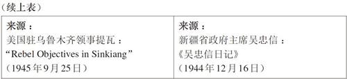
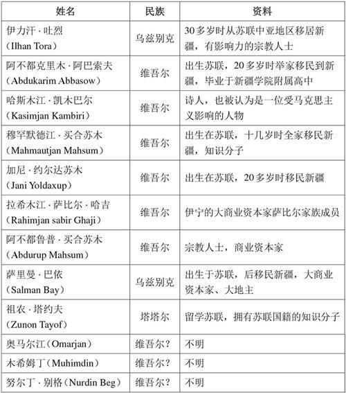
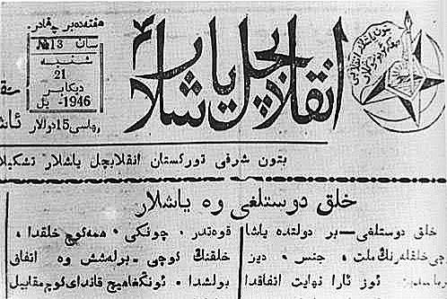

東突厥斯坦獨立運動
1930年代至1940年代
王柯 著
版權信息
《東突厥斯坦獨立運動：1930年代至1940年代》
王柯 著
? 香港中文大學 2013
本書版權為香港中文大學所有。除獲香港中文大學書面允許外，不得在任何地區以任何方式，任何文字翻印、仿製或轉載本書文字或圖表。
國際統一書號（ISBN）: 978-962-996-500-6
出版：
中文大學出版社
香港 新界 沙田・香港中文大學
傳真：+852 2603 7355
電郵：cup@cuhk.edu.hk
網址：www.chineseupress.com
East Turkestan Independence Movement: 1930s to 1940s (in Chinese)
By Wang Ke
? The Chinese University of Hong Kong 2013
All Rights Reserved.
ISBN: 978-962-996-500-6
Published by
The Chinese University Press
The Chinese University of Hong Kong
Sha Tin, N. T., Hong Kong
Fax: +852 2603 7355
E-mail: cup@cuhk.edu.hk
Website: www.chineseupress.com
Printed in Hong Kong
書 名：東突厥斯坦獨立運動：1930年代至1940年代
作 者：王柯
版 本 號：V1.0
最後更新時間：2013年05月30日
本書由香港中文大學出版社授權Info Rainbow Limited全球電子版獨家發行，掌上遊科技提供技術支持，非經書面授權，不得轉載和使用，版權所有，盜版必究。
聲明
本書內容僅代表作者之立場觀點，與Info Rainbow Limited無關。
Directory
扉 頁
版權信息
作者簡介
地 圖
前 言
第一章 在“烏瑪”与“中华”之间
第二章 “東突厥斯坦獨立運動”的起源
第三章 反日親蘇路線的表與裡
第四章 政治權利的双重結构与民族問題
第五章 蘇聯支持的中國突厥系伊斯蘭民族居民的“聖戰”
第六章 權威與權力
第七章 民族主義和共產主義的結合點
第八章 國際政治遊戲和“共和國”的悲劇
第九章 “民族獨立”還是“民族解放”
第十章 在理想與現實之間
後 記
大事年表
更多書籍
作者簡介
王柯，1956年生，日本東京大學學術博士，神戶大學研究生院教授。研究方向包括中國傳統國家構造、中國近現代民族國家與民族主義思想、近現代國際關係視野中的民族問題、中國伊斯蘭教社會運動和國家認同等。主要著作有：《“東突厥斯坦共和國”研究——中國的伊斯蘭與民族問題》、《民族與國家——中國多民族統一國家思想的系譜》、《多民族國家中國》、《20世紀中國的國家建設與民族主義》等。其中《多民族國家中國》多次在日本被評為“理解中國必讀”。
地 圖
地圖：1945年“東突厥斯坦共和國”控制地區
前 言
2009年7月5日，在新疆維吾爾自治區首府烏魯木齊市發生了令全世界震驚的事件，大量無辜的漢族，以及從相貌上與漢族相近的回族或其他民族的居民，遭到一部分維吾爾族製造恐怖暴力犯罪分子的暴力攻擊，甚至被殘忍殺害。按照中國政府的統計，共有197人死亡，其中手無寸鐵無辜被攻擊殺害的漢族134人、回族11人和滿族1人，受傷者幾近2,000。盡管官方把它稱為“一起由境內外‘三股勢力’精心策劃組織的打砸搶燒嚴重暴力犯罪事件”，但是毫無疑問，事件具有大規模民族仇殺的性質。事件參與者所表現出來的殘忍，讓許多人都難以相信這是發生在21世紀初正在崛起的中國，也讓無數的人們開始思考這樣一連串相關的問題：首先是中國政府的民族政策是不是出現了問題？如果說沒有問題，那麽為什么一部分維吾爾族居民對素昧平生的漢族居民也會抱有如此大的仇恨？如果說它有問題，那麽，問題的癥結又在哪裡？
實際上，與這次發生在烏魯木齊市的大規模民族仇殺類似的事件，當年也曾發生在新疆維吾爾自治區的喀什市與伊寧市。1981年10月30日，在喀什市內一位漢族青年在與一位維吾爾農民發生口角後持商店的商品獵槍槍殺了對方，馬上引起一部分維吾爾族製造恐怖暴力犯罪分子在全市暴力攻擊無辜的漢族居民，當場有2人被殘忍殺害，262人受傷；在1997年2月5日至7日發生在伊寧市的事件中，同樣又是無辜的漢族居民遭到一部分維吾爾族製造恐怖暴力犯罪分子的暴力攻擊，7人被殘忍殺害。這兩起事件與此次烏魯木齊市事件的性質完全相同，只是規模不同而已。從各種跡象上也可以看出，烏魯木齊事件實際上也與以喀什為中心的新疆南部的維吾爾社會有著千絲萬縷的聯系。所以，要想真正認識烏魯木齊事件的性質，就應該思考為什么同樣的事件會首先發生在喀什市與伊寧市？
理由其實很簡單。那就是喀什和伊寧曾經分別是第一次東突厥斯坦獨立運動和第二次東突厥斯坦獨立運動的發祥地和根據地。所以，要想搞清一部分維吾爾族居民為什么會對漢族居民有那樣強的仇恨心理，必先搞清東突厥斯坦獨立運動的性質。如果搞清了東突厥斯坦的性質，就會明白中國政府的民族政策對這些具有東突厥斯坦獨立思想的人們來說到底有沒有吸引力。
東突厥斯坦獨立運動的目標就是在新疆建立以維吾爾族為中心的民族國家。第一次東突厥斯坦民族獨立運動于1933年在新疆南部的喀什爆發，同年11月12日在喀什成立了“東突厥斯坦伊斯蘭共和國”，但是這個“伊斯蘭共和國”從宣布成立到崩潰僅僅存續了85天，甚至沒有建立一個相對成形的國家權力體制和政府組織體系。1944年，東突厥斯坦獨立運動再次爆發，同年11月12日在新疆北部的伊寧成立了“東突厥斯坦共和國”。比起第一次運動來，第二次東突厥斯坦民族獨立運動規模更大，時間更長，甚至影響到了當時的世界反法西斯戰爭的局勢，也影響到了戰後國際秩序的重建。但是，因為這場運動具有蘇聯背景，並發生在國民政府統治時期，且最後在蘇聯的壓力之下放棄了獨立的方針，最終統一到了中國共產黨的旗幟之下，所以1949年以後這場運動在中國被稱為“三區革命”。[0-1]其實這一名稱只是根據運動的最終結果，並不能反映出這場運動本來的面貌和原初的性質。
投鼠忌器的結果，只是給東突厥斯坦獨立運動留下一塊可以溫存思想種子的土地。東突厥斯坦獨立運動誕生至今已有六十多年的歷史。運動在毛澤東的時代一度銷聲匿跡，其原因不言自明。但從1980年代起東突厥獨立運動思潮開始死灰復燃，其背景首先是中國對毛澤東時代各種政策的矯枉過正，其次是世界性的伊斯蘭復興運動的興起，第三是1990年代初在蘇聯改革失敗以後中亞各國的“被獨立”。受到內外環境的刺激，東突厥斯坦獨立思潮一浪高過一浪。維吾爾族作家吐爾貢・阿里馬斯在1989年10月出版的《維吾爾人》（Uygurlar）一書中，甚至提出一個讓任何歷史學家聽了都會目瞪口呆的說法：維吾爾人自八千年前就居住在塔里木盆地周圍的各個綠洲裏。[0-2]
東突厥斯坦獨立運動不僅是貫穿進入20世紀以後近代維吾爾歷史的一條紅線，也是近現代中國歷史上不可或缺的一頁。所以，忠實地還原東突厥斯坦獨立運動的真相，尤其是正確認識和評價第二次東突厥斯坦獨立運動的性質，不僅可以幫助我們從思想深處理解突厥系伊斯蘭民族居民在包括“7・5事件”在內的一系列事件中對漢族居民所表現出來的仇恨心理，而且對于把握作為多民族國家的中國的未來圖景，也具有深刻的意義。但是遺憾的是，關于東突厥斯坦獨立運動的研究，一直少有重頭作品問世。
較為詳細提及第一次和第二次東突厥斯坦獨立運動的著作有新疆社會科學院編撰的《新疆簡史》第三卷、安德魯・福布斯的《中國中亞的軍閥和穆斯林》（Andrew D.W. Forbes, Warlords and Muslims in Chinese Central Asia ［Cambridge: Cambridge University Press, 1986］），以及台灣張大軍的《新疆風暴七十年》（台北：蘭溪出版社有限公司，1980，共6577頁）。但是，這些著作都是從中國政治史、新疆政治史的角度對運動進行描寫，沒有能夠深入涉及東突厥斯坦獨立運動自身內部。
在作者看來，《新疆風暴七十年》應該是最為詳細地敘述了新疆近代政治史過程的一部巨著。它的原型是張大軍于1954年出版的《新疆近四十年變亂紀略》（台北：中央文物供應社，1954），所以在其中較多地涉及到了1930年代和1940年代的兩次東突厥斯坦獨立運動。日本學者中田吉信的《伊寧事變和新疆的民族運動》，可以說就是張大軍的《新疆近四十年變亂紀略》的改編。然而，1945年任政府軍副團長的張大軍也不可能知道東突厥斯坦共和國的政治過程，因而不免在事實關係的敘述中出現很多錯誤，在分析事件性質時也加入了很多的感情因素。
1990年，林達・本森（Linda K. Benson）在美國出版了《伊寧暴動：穆斯林對新疆漢人統治的挑戰，1944-1949》（The Ili Rebellion, The Moslem Challenge to Chinese Authority in Xinjiang, 1944-1949 ［Armonk, London: M. E. Sharpe, Inc., 1990］）。這本著作當時被評價為“迄今為止世界上論述三區革命的唯一研究著作”。[0-3]然而，觸及到第二次東突厥斯坦獨立運動以及東突厥斯坦共和國的政治過程的內容，也僅限于第四章——“東突厥斯坦共和國的建立”中的寥寥幾頁（“The Establishment of the East Turkestan Repablic”, pp. 42-66）。其主要內容仍然是國民政府、新疆省當局的政治、軍事應對措施。大約林達自身也意識到了這一點，曾在1991年要求與東突厥斯坦共和國後期主要領導人阿合買提江・哈斯木（已故）的兒子會面，但卻遭到了拒絕。
1990年代以後，中國國內陸續出版了一些關于近代以後新疆問題的著作，例如白振聲和（日）鯉淵信一主編：《新疆現代政治社會史略》（北京：中國社會科學出版社，1992）、新疆三區革命史編纂委員會：《新疆三區革命史》（北京：民族出版社，1998）、黃建華：《國民黨政府的新疆政策研究》（北京：民族出版社，2003）、苗普生、田衛疆主編：《新疆史綱》（烏魯木齊：新疆人民出版社，2004）、厲聲主編：《中國新疆：歷史與現狀》（烏魯木齊：新疆人民出版社，2006）等。雖然這些著作基本上以歷史概論性著作為主，但是其中有兩本著作在史料和研究方法上對本書提供了重要的借鑒。其一是新疆三區革命史編纂委員會的《新疆三區革命史》，該書詳細地整理了第二次東突厥斯坦獨立運動的過程，但是因為以革命史觀來看待這次運動，很多問題沒有得到深入追究。其二是厲聲主編的《中國新疆：歷史與現狀》，該書雖然也屬于概論性質，但是在敘述東突厥獨立運動的歷史過程的第四章和第五章，以及描述運動發生之前的新疆歷史的第三章中提供了很多具有價值的研究信息，尤其是俄文檔案的存在及其珍貴價值。然而遺憾的是，之後也許是考慮到政治的需要，俄方拒絕和不再批準開示這批資料，閱覽過這批資料的學者們至今還沒有詳盡地介紹這批資料，使這批資料的內容成為一個今天無法知道的秘密。
先行研究之所以很少，尤其是缺少從民族問題角度進行的專門研究和對運動政治過程的專門研究，其原因首先就在于資料匱乏，其次在于資料的多元化。要想真正深入研究，必須涉及到漢語、維吾爾語、哈薩克語、俄語、英語、日語等多語種的資料，這也讓許多研究者望而卻步。在本書的寫作過程中，筆者閱覽了1944年到1946年期間存在的“東突厥斯坦共和國”的公文，閱覽了“東突厥斯坦革命青年組織”和“東突厥斯坦革命黨”的綱領，東突厥斯坦共和國領導人的談話、文章、信件等數百件重要文獻。此外，看到了新疆統治者盛世才和吳忠信的回憶錄和日記，收集了大量的第二次東突厥斯坦運動當事人使用維吾爾語、哈薩克語和漢語所撰寫的回憶錄，以及有關新疆問題的一部分日本外交資料和美國外交資料，並且有幸採訪了數位與當年的東突厥斯坦共和國領導層具有特殊關係的維吾爾族、哈薩克族、錫伯族人士。以上這些收獲，構成了本書的基本素材。
本書的主要部分，就是利用這些第一手資料，從新疆地區社會及突厥伊斯蘭民族社會的社會結構、民族革命思想的起源與質變、東突厥斯坦獨立運動的內部結合原理和共和國的權力構造、圍繞著新疆地區的國際關係和國際政治等四個視角，力圖還原東突厥斯坦獨立運動的過程和東突厥斯坦共和國的政治過程，並在此基礎上，探討東突厥斯坦獨立運動的性質。
從內容來看，本書可分為五個部分。第一、二章是以前近代到近代的社會轉型為時代背景，從清王朝傳統統治新疆政策的特點和功罪、處于社會轉型期中的新疆所面對的嚴峻國際局勢、伊斯蘭教在維吾爾社會中的地位及變化、泛突厥主義思想和泛伊斯蘭主義思想對近代維吾爾社會的影響、新疆和維吾爾社會的社會結構的問題等角度，分析和探究促使東突厥斯坦民族獨立運動發生的原因。第三、四章是通過對漢族統治者——盛世才統治時期的政治過程和民族政策的分析，發現他之所以能夠鎮壓第一次東突厥斯坦獨立運動和“東突厥斯坦伊斯蘭共和國”，但最終卻造成民族對立更加尖銳深刻的原因。第五、六、七章是在還原第二次東突厥斯坦獨立運動的爆發經過、“東突厥斯坦共和國”的成立經過、共和國勢力在各地區進行擴張的經過的基礎上，探討“東突厥斯坦共和國”在權力結構上的特徵。第八、九章是通過還原新疆和平談判的政治過程和“東突厥斯坦共和國”消亡的政治過程，從國際政治和民族運動內在矛盾這樣內外兩個角度探討“東突厥斯坦共和國”消亡的根本原因。第十章實際上就是本書的終章，它從政治體制、社會構造、民族關係、經濟水平等角度分析“東突厥斯坦共和國”的性質，並探討第二次東突厥斯坦獨立運動和“東突厥斯坦共和國”在維吾爾民族史、新疆地方史和中國近代史上的意義。
注釋
[0-1]徐玉圻主編：《新疆三區革命史》（北京：民族出版社，1998）。
[0-2]維吾爾人作家吐爾貢・阿里馬斯，從1986年至1989年10月出版了《維吾爾人》、《維吾爾古代文學史》、《匈奴史》等書。關于其內容，本書主要參照艾買提・毛拉吐爾迪：《〈維吾爾人〉等三本書的主要問題及其思想根源》，新疆社會科學院《西域研究》1991年專集《維護祖國統一、反對民族分裂》，第23-26頁；阿吾提・托乎提：《維吾爾族是中華民族的一個成員》，同前，第15-22頁。
[0-3]王大剛：《20世紀以來中外學者對現代新疆之研究》，中央研究院近代史研究所：《近代中國研究通訊》，第13期（1992），第121頁。
第一章
在“烏瑪”與“中華”之間
清王朝對新疆維吾爾族社會的統治
與歷代中華王朝相比，清王朝曾經統治過最多的民族集團。在中國傳統的王朝體制崩潰之後，清王朝的版圖由中華民國所繼承。但是應該注意的是，曾經在清王朝治下的邊疆地區，尤其是蒙古、西藏以及新疆的維吾爾族地區，為什么在進入中華民國時代以後，會頻繁發生民族獨立運動？因此，在探討近代以來中國的“國家”與“民族”之間關係的問題上，分析清王朝曾經在這些地區採取了什么樣的政策，無疑具有重大的意義。
清王朝通過戰爭直接控制居住在塔里木盆地周圍綠洲的伊斯蘭社會，也就是我們今天所說的維吾爾族地區，一些學者認為，其背景上有繼承前朝舊有疆土的意識。因為當時這一地區在準噶爾汗國統治之下，而準噶爾汗國又一直向清王朝朝貢稱臣。[1-1]本章主要通過梳理清王朝統治維吾爾族社會的政策以及由此帶來的維吾爾族社會的反應，從分析清王朝對新疆維吾爾族社會統治政策性質的角度，認識由清王朝所構建起來的這種民族和國家結構，讓維吾爾族人形成了什么樣的民族、宗教和國家意識？首先要說明的是，盡管從1930年代開始，這裡的居民才開始具有“維吾爾”這樣一個統一的民族名稱，[1-2]但為了敘述方便，本章採用了“維吾爾”一詞。
第一節 清王朝的“新疆”
從“招服”到“征服”
1755年（乾隆二十年），位于天山北部的游牧王國準噶爾汗國發生內亂，清王朝乘機出兵消滅了準噶爾汗國。因為準噶爾一邊朝貢稱臣，一邊屢屢侵略清王朝的重要盟友——喀爾喀蒙古，所以徹底消滅準噶爾汗國，是清王朝從康熙時代以來的夙願。但是，領土的擴大本來只限于征服準噶爾所帶來的客觀結果，正如乾隆在其《西陲》詩中所表現的“勤遠非初意”那樣，而對準噶爾周邊那些過去曾經為準噶爾所統治的其他民族集團地區，清王朝的最初目的只是進行“招服”，即讓他們承認清王朝為宗主國而已。
直接占領準噶爾以外的其他地區，似乎並非清王朝的原意。這一點，從乾隆任命準噶爾派遣軍的指揮官為“定邊將軍”一事上也可以看出。“為我屏藩者，惟哈薩克布魯特二部落而已”，清王朝將“稱臣求屬，遣使進貢”的哈薩克和布魯特（柯爾克孜）稱為“疆外屏翰”，即領土之外的藩國。[1-3]而同樣為突厥系穆斯林的維吾爾族人所居住的天山南部地區，[1-4]清王朝雖然最終通過軍事征服直接占領了該地區，但是應該注意的是，這也並不是清王朝的本意。
在被清王朝占領之前，維吾爾族社會事實上由伊斯蘭教蘇菲派納格什班迪教團（al-Tariqah al-Naqshiban-diyyah）的白山派與黑山派所控制。納格什班迪教團，是一個誕生在中亞撒馬爾罕地區的蘇菲派教團。1542年納格什班迪教團的教主瑪合杜木・阿扎姆（Makhdumi-I Azam）去世，其眾多子嗣因爭奪教權而產生分裂。長子依禪・卡朗（Ishan-i-Kalan）及其手下形成了“白山派”（Aq-taghlyq），第七個兒子、依禪・卡朗的同父異母弟弟伊斯哈克（Ishaq）及其手下形成了“黑山派”（Qara-taghlyq）。16世紀末、17世紀初，黑山派由撒馬爾罕進入了天山南部地區，在當時的葉爾羌汗的支持之下，以葉爾羌地區為中心逐漸成為一股左右葉爾羌汗國政局和維吾爾族社會的強大勢力。17世紀中葉，依禪・卡朗的長子和卓・玉素普（Hoja Yusup），也從撒馬爾罕輾轉來到了天山南部的喀什噶爾地區，以此為根據地發展自己的勢力。黑山派和白山派兩派，不僅對于民眾具有巨大的影響力，而且與政治權力相勾結，開始了激烈的抗爭。由于兩派的首領都自稱為“和卓”（Hoja, Khwaja“聖裔”，意即預言者穆罕默德的後裔），又都活動于以喀什噶爾為中心的地區，所以又被統稱為“喀什噶爾・和卓家族”（Kashghar Hoja）。
由于處于劣勢，白山派首領阿帕克・和卓（Appaq Hoja）通過西藏的達賴喇嘛向準噶爾汗國的噶爾丹汗要求支援。1678年噶爾丹汗出兵天山南部，消滅了葉爾羌汗國，扶持阿帕克・和卓為傀儡對維吾爾社會進行統治。噶爾丹汗死後，其子策妄阿拉布坦（亦稱“策妄阿那布坦”或“策旺阿拉布坦”，Tsewang Araptan或Tsewang Rabtan）繼位。策妄阿拉布坦企圖利用黑山派和卓統治維吾爾族社會，將白山派的和卓們全部帶往準噶爾汗國的首都庫爾加（Qulja），即伊寧扣押了起來。
當清王朝開始進攻準噶爾汗國後，被準噶爾汗國扣押在庫爾加的白山派和卓兄弟，即阿帕克・和卓之孫馬合買提・和卓（Mahmat Hoja）在扣押中出生的兩個兒子波羅尼都（Burhan al-Din）與和卓・霍集占（Hoja Jihan），自己找到清軍，表達了歸順之意。[1-5]清王朝因為原本就沒有對維吾爾族社會進行直接統治的意思，因此將歸順的波羅尼都放回天山南部，希望通過他們“招服”維吾爾族社會。[1-6]定邊將軍兆恵派出副都統阿敏道隨波羅尼都南行，其使命為“招撫”，[1-7]而根據《高宗純皇帝平定回部告成太學碑文》又被說成是“議事”。總之，很明顯，清王朝最初的確只是準備通過和卓兄弟對維吾爾族社會進行間接統治。
波羅尼都的弟弟和卓・霍集占，被清王朝暫時留在庫爾加，以協助清王朝安定當地的穆斯林社會。但是，霍集占企圖實現維吾爾族社會的完全獨立，參加了準噶爾首領阿睦爾薩那（Amu'ersana）的叛亂，在叛亂被鎮壓之後又逃往了天山南部。他說服了其兄波羅尼都，于1757年（乾隆二十二年）殺害了阿敏道及其隨行的清軍百人，向清王朝公開舉起了反旗。原本受到準噶爾欺壓的和卓兄弟，在被清軍從長期拘禁中解放出來、承認他們的地位並將其送回到維吾爾族社會之後，居然恩將仇報，因此引起乾隆皇帝的強烈憤怒。《高宗純皇帝平定回部勒銘葉爾羌碑文》說道：“準夷⋯⋯、獾貐其眾，豺狼其群，以回為羊。⋯⋯拘二酋長處伊犁濱，四大回城輸租獻賦騰格，是供衛拉，是懼繭絲，悉堪溝壑，已遽有面內心其何能訴。準夷既平，諸回見天，謂自今始飽食晏眠，遣厥酋歸撫爾土田骨肉，詎疑變遷，德竟怨報，助我叛疆，戕其星軺，是用興師聲罪致討。”[1-8]於是，乾隆皇帝于1758年5月任命了“靖逆將軍”，派出了討“逆”的軍隊排除了和卓勢力的抵抗，于1759年8月征服了天山南部的維吾爾族社會。[1-9]
以上這一由“招服”到“征服”的變遷過程，對其後清王朝制定對新疆的統治政策，尤其是統治維吾爾族社會的政策產生了極大的影響。
分割統治與維吾爾族社會的伯克制
在取得了對天山北部的準噶爾地區和天山南部的維吾爾地區的統治權後，清王朝按照“新辟疆圍”的意義，合稱這些地區為“新疆”。值得注意的是，清王朝也曾經將其他取得了統治權的地區稱為“新疆”，而事實上這些地區在歷史上就已經為中國王朝所管轄過。[1-10]也就是說，“新疆”之意並非“新的領土”的意思，而是“清王朝最近新得到的地方”。只是因為到了統治天山南部以後，清王朝再也沒有得到過其他地區的統治權，所以“新疆”才變成為這一地區特有的名稱而被固定下來。而在公文上，清王朝一直將準噶爾地區稱為伊犁、準部或北路，將維吾爾族人稱為“回子”，或稱其為“纏頭回”（頭上纏著頭巾的穆斯林），以與其他伊斯蘭民族進行區別；而對于天山南部的維吾爾地區，在地區的意思上稱其為“回疆”，在民族的意義上稱其為“回部”，而從地理的意義上稱其為“南路”。
1762年（乾隆二十七年），乾隆皇帝任命了“總統伊犁等處將軍”（通稱“伊犁將軍”），開始逐步建立“軍府制度”，即通過將新疆變為一個軍事領地的方式來統治新疆。伊犁將軍在管轄駐扎于北路、南路及東路（之前已經為清王朝所統治的新疆東部哈密和吐魯番地區）的各個地區的清王朝軍隊的同時，還是新疆地區的最高民政長官。在其之下，南北兩路的主要城市，根據其規模大小分別設置參贊大臣、辦事大臣、領隊大臣，而在迪化（即今烏魯木齊市）設置都統，由他們分別率領駐扎清軍，負責各地防衛事宜。清王朝在新疆共駐扎了軍隊39,726人，而駐扎在南路的部隊才僅僅5,185人，大半的部隊都被放在了天山北路和烏魯木齊地區。[1-11]這種駐扎人數上的不同，背景上可能有防備俄國的意識，但主要還是因為考慮到北路過去曾為準噶爾勢力的中心地區，以及出于為了對付可能出現的與周圍的哈薩克、柯爾克孜之間糾紛的考慮而決定的。[1-12]在這一點上，清王朝與一直以南路為中心的歷代中國王朝的西域政策有著明顯的不同。
在統治政策上，清王朝政府在新疆地區分別採用了三種不同的行政和官僚制度。首先，在包括烏魯木齊在內的東路地區導入了與中國內地相同的州縣制，1759年（乾隆二十四年）分別設置了道、府、州、縣。在這一地區實行州縣制的主要理由有以下三點：第一，唐代時中央政府曾經在該地區實行過州縣制；第二，從地理上看，該地區因為與內地鄰接，以前就有大量的漢族人或說漢語的伊斯蘭教徒，即回民居住在這裡；第三，從軍事戰略的意義上來看，該地區位于南北兩路與中國內地之間的交通要沖，實行直接統治有利于控制這一地區。從結果上來看，由于清王朝在該地區導入州縣制，之後該地區中以漢族人與回民為主體的移民活動更加活躍，到了20世紀初，已經占到了該地區人口總數的70%左右。
第二，在北路的蒙古游牧民社會中及東路的哈密及吐魯番地區的維吾爾族社會中，實行札薩克制。出身于滿族的清王朝，在與蒙古結為盟友關係之後，將蒙古民族按“旗”為單位進行分化重編，札薩克（Jassag）即為“旗長”。札薩克為軍政一致的制度，是一種在中國歷史上給予被統治民族以最大自治權的制度。因為哈密的艾伯都拉、吐魯番的依敏和卓早在康煕和雍正時代，就已經歸順了清王朝，被清王朝封為札薩克，而在清王朝對天山南部即南路的維吾爾族社會進行征服時，他們又積極進行了支援，所以乾隆帝在全盤制定統治新疆政策時，繼續承認了他們的這一特殊地位。
第三，在南路的維吾爾族社會——回疆——中採用了伯克制。在突厥語系各種語言中，“伯克”（bek / beg）之意即“頭目”，原來就是一種表示統治階級身份的稱號。清王朝將“伯克”解讀為“官”，前面冠以維吾爾族社會的傳統官職，並且規定各自官品階級（三品至七品），將其改造為清王朝統治下的維吾爾族社會中的官僚體系，這也就是清王朝所謂的“齊其俗不易其宜”的政策。
伯克分為統括一個地區社會民政的阿奇木・伯克（Hakim beg），類似于阿奇木・伯克副職的伊什罕・伯克（Ishihana beg），負責稅收的噶雜納齊・伯克（Ghazanachi beg）、管理水利的米拉甫・伯克（Mirab beg）和作為伊斯蘭法官的喀孜・伯克（Qazi beg）等。除了對外的軍事防衛由清軍負責之外，這些維吾爾伯克代表清王朝政府分別管理各地維吾爾族社會的地方行政、社會治安、裁判、稅收、農業、工商業、教育以及宗教事務等，並且為了維護社會治安，備有一部分“回兵”。清王朝除了給予這些伯克以政治上的特權以外，還作為俸祿，給每個伯克以“職分田”以及耕種職份田的“燕齊”（yanqi），即專屬的佃戶。例如三品伯克被授予土地200畝和“燕齊”100戶；另外，還以“養廉”的名義每年從國庫中向阿奇木・伯克發款銅錢800“騰格”（tangge），伊什罕・伯克為300騰格。[1-13]
清王朝在征服了回疆以後，優先登用以前主動歸順的維吾爾族人，尤其是出身于哈密和吐魯番的維吾爾族人，以及以前的伯克等當地社會上層。回疆的伯克種類當初只有20種前後，[1-14]其後陸續增補為32種。清王朝將回疆分為4大城、4中城、23小城等合計31個地區，按照其規模在各個地區分別安排了從五六人到三十數人等數量不等的伯克。[1-15]
清王朝之所以征服回部，原本就不是出于經濟的考慮，因此用于統治該地域的經費，從最初開始就決定主要由內地調撥。清王朝除了在新疆的駐軍以外，還駐扎了1,400名行政官僚。其俸祿和行政費用毎年達到688,900兩，其中61萬兩由清王朝中央政府支出。其余的71,790兩在當地調濟，主要是通過經營官營旅店和向士兵銷售茶葉。[1-16]的確，清王朝政府在征服了回疆以後馬上建立了租稅制度，所設各種伯克中有許多伯克的職責就為負責稅收，但這種向維吾爾族自耕農每年征收的大約60萬石前後的谷物，只是為了解決駐扎清軍的口糧問題。即使到了末期，清王朝遇到了極大的財政困難，都沒有大量增加過對維吾爾族人的稅收。[1-17]
詳細記錄歷史上維吾爾族人口的資料不多，其中一說是1766年（乾隆三十一年）時為262,078人，[1-18]另一說1770年代人口為200,277人，1840年代為282,619人。[1-19]除了商業和手工業以外，當時維吾爾族社會的主要經濟方式為傳統的綠洲農業。清王朝征服後的維吾爾農村，至少存在著三種農民：即在自己的土地上耕種的自耕農、在清王朝政府所有的“入官地”（被清王朝政府沒收的和卓和逃亡者的土地）上耕種的雇農，以及由清王朝政府作為俸祿與職分田一起分給伯克的“燕齊”。清王朝政府不對“燕齊”征稅，而對雇農征收收獲量的十分之一，對在“入官地”上耕種的雇農征收收獲量的一半。[1-20]清王朝的這種統治政策，不僅讓許多伯克有了一定權勢，而且讓他們感到了許多清朝的“恩義”。出于對于這種“恩義”的感激，至少有一部分維吾爾上層分子承認了清王朝統治的合法性。[1-21]
第二節 隔離統治下的滿族皇帝之民
與中國主體文化隔絕的維吾爾族社會
清王朝統治維吾爾族社會政策的一個重要特徵，就是對各族人民實施隔離，尤其是斷絕維吾爾族人與漢族人之間的交流，以防止維吾爾族人受到中國文化的影響。
清王朝在天山北路採用駐防兵制，而在天山南路則採用了換防兵制。駐防兵就是帶著家眷，不變換駐防地的部隊；而換防兵就是不帶家眷，每過一段時期就要改變駐防地的部隊。在天山南路各個地區，清王朝禁止兵士與維吾爾族人進行交流和通婚。[1-22]在維吾爾族人居住的“回城”以外，清王朝另外在各地建設了十八個“漢城”，以作為駐在大臣和駐扎軍隊的駐屯地。這一政策，的確可以起到防止軍隊騷擾當地民眾和防止民眾攻擊並傷害駐屯軍隊的作用。但是，從天山南路的清軍主要是由漢族組成的綠營兵（由滿族等組成的八旗兵只有349名），而且全部都是換防兵來看，清王朝確實是周密地制訂了如何在“回疆”地區中根絕維吾爾族人和漢族人之間交流往來的計劃。[1-23]
清王朝禁止中國內地的漢族人進入回疆，即使對待要求前來進行貿易的漢族商人也採取了嚴格的限制，實行了申批制度。1764年（乾隆二十九年）“俱令赴駐兵處貿易”，之後又只允許在“漢城”與“回城”之間設立的“買賣街”（bazar）裏進行買賣等。[1-24]為了補助駐屯軍隊的經費，清王朝在新疆各地組織了屯田。屯田的種類分為“兵屯”（由清軍組成）、“回屯”（由從伊犁遷來的維吾爾族穆斯林組成）、“戶屯”（由從內地遷來的移民組成）、“旗屯”（由八旗軍人及其家屬組成）、“犯屯”（又稱“譴屯”，主要由從中國內地來的刑事犯人組成）。但是值得注意的是：乾隆年間清王朝統治了新疆以後，就開始在天山北路地區大規模地建設兵屯、旗屯，並由內地大量遷徙農民和刑事犯來到天山北路地區組織戶屯和犯屯。然而在天山南路，直到嘉慶年末只有屈指可數的幾處兵屯，而主要由漢族農民組成的民屯只是在南路最東邊的喀喇沙爾才有一處，[1-25]到了1831年之後在回疆的中心地區才開始有了民屯。[1-26]
事實上，1760年（乾隆二十五年），即清王朝征服新疆的第二年，乾隆帝就已經表明：“當以滿洲將軍大員駐守”，伊犁將軍和烏魯木齊都統都被規定為“旗缺”（只由以滿族人為主體的八旗人員擔任的官職）。天山南路各地區的駐在大臣總數雖然達到23個，但是這些大臣的官職也全部都由滿族人和蒙古族人擔任。[1-27]這種具有民族歧視意識的統治體制，與其說是出于國家邊疆防衛的目的，還不如說是非漢族政權的清王朝出于它統治中國的需要，而在其全盤統治政策中對新疆地區做了特殊的定位。
清軍在全國的總數達到80萬人以上，但是其中的八旗兵力實際上不超過20萬。面對廣袤的國土，清王朝只能採取重點防衛，即只在軍事上具有重要意義的地區布置最信賴的八旗軍隊的方法。[1-28]但是，清王朝開始統治新疆，是在清兵入關115年之後，當時能夠使用的八旗兵力已經為數不多。但即使如此，清王朝仍然在新疆駐扎了20,990名的八旗士兵，這相當于新疆所駐屯清王朝軍隊的一半以上。這一切只能說明，清王朝是將新疆當做滿族人自己的軍事自治領地進行統治。清王朝在全國各個重要地區，一共設了14名駐防將軍。但比起其他的將軍來，伊犁將軍的管轄地區更加廣大，指揮的士兵也更多，每年的養廉也高出1,000兩以上。[1-29]
作為一個由少數民族建立的王朝，清王朝要想統治中國，如何將漢族以外的民族勢力吸收到自己的陣營裏來以對人口數量龐大的漢族人形成牽制，事實上是一個非常重要的問題。可以看出，正是出于這一目的，清王朝在阻止維吾爾族人和漢族人之間的交流上花了很大的力氣。1761年（乾隆二十六年），清王朝中央政府統一製作了阿奇木・伯克的官印，這些公印上的內容“兼滿洲字、蒙古字、回子字”（滿文字、蒙古文字和維吾爾文字），卻沒有漢字。[1-30]清王朝不鼓勵駐扎在新疆的八旗士兵學習漢文，反而積極鼓勵維吾爾族伯克的子弟們學習滿語。[1-31]另外，與強迫漢族人剃頭留上滿族式的發辮不同，清王朝對于維吾爾族人，不如說是當成一種恩惠，只允許高級伯克留上發辮。清王朝阻止維吾爾族社會與內地進行交流的思想，還可以從他們在新疆實行的金融政策看出：清王朝在新疆發行一種叫做普爾（pul）的特殊貨幣，這種貨幣上面鑄有維吾爾文字，與內地的貨幣同價但卻異質。[1-32]即使伯克入朝朝拜這種事情，清王朝也會常常精心安排他們避開內地漢族人地區，而通過北部的蒙古地區，到當時還屬于蒙古地區的承徳去朝拜皇帝。[1-33]“皇帝”在這裡對維吾爾伯克以及蒙古札薩克們的“接見”，目的是要確認他們與滿族之間的政治關係，在很大程度上其實具有“會盟”的性質。
一位穿著清朝服裝的維吾爾伯克
理藩院制度的真正目的
清王朝在對中國的統治政策上，並不要求邊疆地區和內地實現同質構造，而是有意識地將它們分為內地，以及由位于內地周緣的蒙古、西藏、回疆構成的藩部兩個具有不同性質的地區。但是清王朝時代的藩部，與中國歷代王朝的“藩”不同，正確說來，它其實是一個由滿族人與西北地區各民族集團構成的政治聯盟。清王朝將其統治疆域區分為內地和藩部兩個部分的目的，就在于將各民族集團與漢族人相隔離。清王朝之所以在蒙古地區實施札薩克制，在西藏建立以達賴喇嘛為首的政教一致制，在回疆導入伯克制，利用當地民族社會中的上層人士對當地民族社會進行間接統治，很大程度上就是為了讓他們產生對于滿族的民族親近感。而清王朝這樣做的目的，就是為了將藩部的各個民族變為滿族的盟友，以便通過他們牽制居住在內地的人口龐大的漢族居民。總之，從構造上來看，清王朝對中國的統治，並不是將它從領土上簡單地分為兩個部分，通過它我們可以看到清王朝其實具有雙重的性質：從國家的意義上來看，它是一個中華王朝；但從與其他民族之間關係的角度上看，它又是一個時刻警惕和防備著漢族人反抗，與其他民族結為政治同盟的民族政權。[1-34]
管理這個民族政治同盟的，是1636年（順徳元年）設立的“蒙古衙門”，之後改名為“理藩院”，是與吏、戶、禮、兵、刑、工六部具有相同地位的中央政府機關。正如康熙帝曾經說過的那樣：“理藩院專管外藩事務，責任重大”，[1-35]在清王朝對中國的統治構造中，理藩院的存在確實具有極為重大的意義。
中國歷史上，也有過漢代的“大鴻臚”、唐代的“鴻臚寺”那樣接待來自于周圍民族的使節，元代的“宣政院”那樣處理與西藏關係的中央政府機關。但是作為一個直接管理復數的少數民族的中央機關，清王朝的理藩院還是第一個。除了一個額外侍郎（定員以外的副大臣）的官職可由蒙古人出任之外，理藩院的負責人（尚書、侍郎）的職位都被規定為“旗缺”，並由滿族人出任。經過順治、康熙、乾隆時期的改造，1761年（乾隆二十六年）理藩院裏設立了專管回疆的徠遠司，成為一個由徠遠司和典屬司、王會司、理刑司、旗籍司、柔遠司等六個部門所組成的中央機關，《欽定蒙古律例》（乾隆六年）、《欽定理藩院則例》（嘉慶十九年）和《欽定回部則例》（嘉慶十九年）等相關法律也逐步完備了起來。
為了牽制內地的漢族民眾，清王朝感到了保住回疆為滿族自治領的必要性。但是，這種徹底斷絕維吾爾族人與漢族人之間的交流和往來，讓他們直接服從滿族的清王朝皇帝的統治政策，並不就意味著清王朝相信了維吾爾族人。為了防止維吾爾族人的反抗，清王朝政府在統治政策上也下了許多工夫。其中最重要的有兩點，就是由駐在大臣對伯克進行監視和實施徹底政教分離的政策。
1758年（乾隆二十三年），下定決心征服回疆的乾隆帝指示道：“朕意不必用回人為總管，仍循其舊制，各城分設頭目，統于駐扎伊犁之將軍。”[1-36]這就是說，在很早的階段，清王朝已經決定在維吾爾族社會中不設置統一的行政體系，而將各個地區變為互相之間不相所屬的關係，並讓阿奇木・伯克直屬于伊犁將軍。各地的駐在大臣，雖然並不直接干涉地方行政，但是讓當地的大臣監視當地伯克的體系，卻讓伯克的權力受到了一定的限制。
清王朝為了防止伯克壓榨民眾，在抑制伯克在當地形成勢力上採取了以下的措施：（1）廢除了傳統的伯克世襲制度，確立了由駐在大臣決定伯克補充人選，再由清王朝進行任命的制度；（2）確立了不在當地人中挑選三、四品的高級伯克，不許五、六、七品的伯克在當地任官的伯克回避制度；（3）將阿奇木・伯克的權力分散給伊什罕・伯克；（4）建立了伯克到朝廷朝覲的制度；（5）將不信任的伯克與和卓遷到北京居住。[1-37]
清王朝征服了回疆之後，“因其教不改其俗”，承認了宗教學者（阿訇，ahun）作為維吾爾族人的精神領袖和掌握文化教育事業的現實，允許當地穆斯林進行日常的宗教活動，並且修繕了和卓的聖墓（麻扎，mazar）。但是清王朝認為和卓家族的存在是造成維吾爾族社會政治不安的根本原因，所以首先想到要限制和卓家族的權威與權力。除了逃跑到浩罕汗國的白山派和卓之外，清王朝將其他的白山派和卓全部遷送到北京，將他們隔離在維吾爾族社會之外。而對于黑山派和卓也是同樣，清王朝雖然任命他們為伯克，給予他們以特權，但是同時又讓他們都離開原籍，即讓他們離開自己的傳統勢力范圍，並且禁止教團進行集團禮拜活動。為了弱化伊斯蘭教的經濟實力，清王朝故意不將清真寺、麻扎、宗教學校征收的宗教稅認定為法定稅金，而將在瓦哈甫地（信者向清真寺和宗教學校捐獻的土地）上耕作的“燕齊”編入普通的戶籍，將他們變為清王朝的納稅者。而關于清真寺的新任指導者（阿訇）的人選，也制訂了由伯克推薦和作保、由駐在大臣任命的制度。
一位伊斯蘭教教職人員
清王朝在回疆實施了徹底的政教分離原則。1760年（乾隆二十五年）清王朝政府任命伯克，乾隆帝規定伯克只對清王朝政府負責，嚴厲禁止和卓、阿訇干涉行政，剝奪了他們批評伯克的權利。清王朝政府再三強調禁止錄用阿訇為伯克和禁止伯克兼任阿訇，甚至禁止清王朝駐在大臣與阿訇私自交往，有阿奇木・伯克因為默認夫人“讀黑經”，即參加蘇菲教團活動而遭到追查的案例。[1-38]清王朝雖然承認了伊斯蘭法裁判官（喀孜）對民事裁判——調節民事糾紛，決定遺產分配，辦理婚姻手續等——的權力，卻嚴厲禁止按照伊斯蘭法處理刑法事件。在咸豐時代，葉爾羌參贊大臣英蘊就因為“査經擬罪”，即按照伊斯蘭法“沙里亞”（Sharia）斷罪，而被判了流刑。
清王朝政府還禁止維吾爾族人與鄰接各國之間的往來。其理由主要是因為白山派，即喀什噶爾・和卓家族將浩罕汗國當做了他們反清復辟活動的根據地。浩罕汗國也是一個納格什班迪教團勢力強大的地區。因為宗教信仰的相同和生活方式的相同，當時的維吾爾族人其實並沒有特別感到自己與浩罕人之間的區別，很久以前兩地區居民之間自由往來，兩地區之間存在著經濟交流關係。但是因為在征服回疆時逃亡到浩罕汗國的喀什噶爾・和卓家族成員在信徒中依然保持著很大的影響力，因此清王朝必須常常警惕他們的復辟活動。所以，從乾隆時期開始，維吾爾族人與浩罕汗國之間的自由往來遭到禁止；到了嘉慶時期，甚至連阿奇木・伯克與浩罕汗國等各外國之間的通信也遭到了禁止。[1-39]
以正統中華王朝自任的清王朝，出于滿族維護其統治中國的民族目的，在政治與經濟上對維吾爾族人、尤其是對維吾爾族社會的上層進行優待，但是卻實施民族隔離政策，將他們與漢族民眾徹底隔離開來。而另一方面，清王朝卻一直對維吾爾族人出現分離思想保持警惕，尤其是對各種伊斯蘭教活動設置諸多的限制，不允許維吾爾族社會作為一個純粹的伊斯蘭共同體——“烏瑪”（Umma）而存在。清王朝統治下的維吾爾族社會，就這樣變成了一個既不是“中華”又不完全是“穆罕默德的烏瑪”的存在。
第三節 從喀什噶爾和卓家族的“聖戰”到“新疆建省”
來自伊斯蘭的挑戰
1765年（乾隆三十年），即在清王朝征服回疆僅僅六年之後，烏什地區的維吾爾族居民，就因為無法忍受阿奇木・伯克阿卜杜拉及駐在大臣素誠的壓榨而舉行了大規模的起義。此時，清王朝的回疆統治政策已經開始顯露出它的重大缺陷，那就是伯克製造了維吾爾族社會嚴重的階級對立。
在《欽定回疆則例》當中，制定了許多對伯克頒發的禁令。其內容之細告訴我們：這些條款都是清王朝因為伯克利用自己的權力壓榨維吾爾族民眾的現象再三發生而制定的。從其他的清王朝文獻中，也可以看出伯克奪人妻女和土地，獨占農地用水，肆意增加“燕齊”人數等現象不時發生。清王朝在征服回疆之後，雖然實施了減稅，但是由于伯克的壓榨，維吾爾族民眾的財政負擔反而比從前加重了。雖然“民之畏官，不如畏其所管頭目”，[1-40]但是在出身于滿族、握有代表清王朝政府選擇、提拔和監視伯克、阿訇大權的駐在大臣中，也有通過伯克壓榨維吾爾族居民，甚至奸淫維吾爾族婦女的現象發生。
進入19世紀以後，清王朝在選擇和任命駐在大臣的問題上，逐漸不似以前那樣慎重，純粹是抱著榨取錢財目的而進入回疆的駐在大臣越來越多，駐在大臣的不法行為也就更加嚴重。就是在這種狀況下，清王朝對維吾爾族社會的統治，開始受到來自當初逃到浩罕地區的喀什噶爾・和卓家族所發動的“聖戰”（Jihad）的挑戰。
喀什噶爾・和卓之所以會發動“聖戰”，與浩罕汗國對他們的支持密不可分。在清王朝征服回疆之後，浩罕政權與清王朝形成朝貢關係，從名義上成為了清王朝的藩國。在這段時間裏，清王朝每年給浩罕政權一定經費，讓他們監視喀什噶爾・和卓家族。但是在進入19世紀以後，浩罕政權逐漸發展為一個強大的汗國，從1817年開始對清王朝不斷提出要求，要求清王朝同意對進入回疆的浩罕汗國商人免除關稅，同意浩罕汗國在回疆設置長老（Aq-saqal）獨自對本國商人征稅等貿易特權，並且以如果清王朝不同意的話就釋放喀什噶爾・和卓，對清王朝進行要挾。當他們的這些要求被清王朝拒絕以後，浩罕汗國逐漸改變了態度，開始支持喀什噶爾・和卓回到喀什噶爾地區。由喀什噶爾・和卓成員所發動、旨在恢復他們在回疆統治地位的“聖戰”，先後在1820年、1824年、1826年、1828年、1830年、1847年、1852年和1857年發生過八次。尤其是從1820年到1828年由和卓・張格爾（Hoja Janger，波羅尼都的孫子）所發動的四次聖戰，即所謂的“張格爾之亂”時間最長，規模也最大。清王朝共計花費了1,000萬兩銀的經費和投入了36,000人的軍隊，經過七年時間才最終撲滅了這場叛亂，最後捕獲了和卓・張格爾並且押到北京處死。[1-41]
應該注意到的是，1826年和卓・張格爾從浩罕帶來的部隊不過五百人，但是在進入喀什噶爾地區以後，由于當地維吾爾族居民的參加馬上就增加到一萬人。這說明，盡管清王朝從各個方面對伊斯蘭教進行了嚴厲的限制，但在維吾爾族社會中，伊斯蘭教依然保持著強大的勢力和影響力。當然，“聖戰”之所以能夠得到當地維吾爾族人的支持，除了他們對和卓家族的信仰之外，因駐在大臣及阿奇木・伯克的腐敗所造成的清王朝威信的低落，也是一個不可忽視的原因。
由喀什噶爾・和卓家族成員所發動的歷次“聖戰”之所以最終都沒有取得成功，其原因除了清王朝軍隊占有絕對的優勢以外，喀什噶爾・和卓在進入維吾爾地區以後，因為虐待和虐殺當地的黑山派信徒，從而失去了當地維吾爾族居民的支持，也是造成他們失敗的重要原因。但是，在每次聖戰失敗以後，維吾爾族居民中都有許多白山派信徒隨著和卓遷往浩罕汗國。到了1850年代，已經有約五萬戶的維吾爾族人遷往浩罕汗國，從而形成了喀什噶爾・和卓家族的基本支持隊伍。[1-42]
1828年，為了尋找“張格爾之亂”的善後政策而被派遣到回疆的直隸總督、欽差大臣那彥成，在回到北京以後，向清王朝中央政府告發了許多駐在大臣和伯克的不法行為。清王朝政府根據他的意見，決定加強對大臣們的監察，同時增加他們的俸祿以減弱他們壓榨的欲望。然而，駐在大臣們的不法行為大多都是通過維吾爾族伯克之手得逞的，比起這些異民族統治者的壓榨，維吾爾族伯克對民眾的壓榨實際上更加苛酷。[1-43]盡管如此，清王朝對這些伯克並沒有採取特別嚴厲的懲罰和監察措施。“張格爾之亂”以後，清王朝政府通過改變伯克的任務劃分以強化對維吾爾農村地區的統治，首先是將維吾爾農村地區進行細分，然後將一部分的中下級伯克的職權，從過去各人分管征稅和水利等，改成每人管理一個細分化後地區中所有的事務。[1-44]也就是說，在階級對立變得越來越激烈的時期，清王朝反而增加了伯克手中的權力。為了解決財政上的困難，清王朝政府又開始“賣官”，即將各伯克的官職標上價碼出售。以上這些措施，讓原本功能就不健全的伯克制更是雪上加霜。
但是，喀什噶爾・和卓家族的聖戰，也讓清王朝開始反省他們在回疆實行的民族隔離政策。清王朝注意到，他們之所以未能將叛亂防止于未然的一個原因，就是由于他們出于實行民族隔離的考慮而將天山南部的防衛交給了換防兵，1830年的“玉素普和卓叛亂”之後，清王朝從伊犁調來三千名騎兵、從內地調來四千名士兵增派到回疆，從而組織起了新的軍事體系。[1-45]
清王朝政府雖然從削減各省軍費中籌措到了鎮壓“張格爾之亂”所必需的經費，但這說到底不過是一次臨時性的措施。由于出現了全國性的財政困難，清王朝通過沒收“聖戰”支持者的家財，增加商業稅收，改鑄普爾錢，以圖增加在當地的財政收入。但是以上措施，由于當地人口的流失，效果並不顯著。於是，清王朝允許內地的農民移居到南疆，1832年在巴楚（Barchuk）建立了“戶屯”。其後，清王朝考慮到維吾爾族人的利益，一時決定放棄屯田，但是最終由于財政困難，兩年後還是決定了在回疆各地建立內地農民（漢族、回族）的“戶屯”。
維吾爾族社會統治體系的重建
1864年6月4日，駐扎在新疆庫車的清軍中的回民士兵，認為清王朝因為擔心“西北回亂”蔓延到新疆而在計劃著對他們進行屠殺，所以先行發動了叛亂。庫車的維吾爾族居民隨之趁機起事，他們推舉伊斯蘭教的指導者“和卓”為領袖，將事件迅速轉換為一場針對“不信仰者”（kafir）的“聖戰”，並在數日之內先後攻占了賽里木、拜城兩座城池，之後又攻下了回疆地區的兩座大城——阿克蘇和烏什。
以此次庫車事件為起點，新疆各地的穆斯林紛紛起事。與庫車事件不同，參加者們從最初就將攻擊目標定為“不信仰者”，即讓起事具有了伊斯蘭教“聖戰”的性質。從組織特徵上來看，各地的“聖戰”可以分為以下三種：（1）由回民所發動的叛亂；（2）由伯克領導的起事；（3）由伊斯蘭指導者領導的起事。到了11月間，在伊犁將軍駐扎的北路的伊犁地區，維吾爾族居民也起事並占領了伊寧。至此，清王朝的新疆統治體系已經全面崩潰。
伯克制帶來的階級壓迫和剝削，也是讓當地維吾爾族民眾參加1864年起事的一個原因。[1-46]但是，維吾爾族不是一個單純的階級集團，當時能夠統合整個維吾爾族社會的只有伊斯蘭教，維吾爾族居民的價值觀和倫理觀認同都無法擺脫伊斯蘭教的影響。也正是因為如此，各地起事才會都變成了“聖戰”。而正是因為“聖戰”這個名義，1864年的起事才能夠很快就聚集起大量的支持者，能夠在短時間內取得巨大的勝利，這在19世紀中期的維吾爾族社會裏，也是一種具有必然性的現實。
但是，也正是因為起事的這一性質，在清王朝的統治體系徹底崩潰、聖戰的目標消失以後，維吾爾族社會便開始分裂成各種不同的勢力。各種勢力經過數次拼搏，最終庫車的和卓政權占領了庫車、阿克蘇和葉爾羌地區，斯迪克伯克（Sidik Beg）占領了喀什噶爾地區，哈比甫・哈吉（Habib Ghaji）占領了和田地區，他們分別在這些地區建立起了自己的統治。這一點也說明，當時在居住于各個不同綠洲、屬于不同的伊斯蘭教宗派、沒有一個獨自統一的行政體系的維吾爾族社會中，還沒有形成一個可以統合所有維吾爾族居民的民族意識。
1865年1月，喀什噶爾和卓家族的布素魯克汗・和卓（Buzurug Khan Hoja）從浩罕回到了回疆，一說是他此行是因為受到了浩罕將軍阿古柏・伯克（Yaqub Beg）的脅迫。[1-47]掛著司令官名義與和卓一起來到喀什噶爾的阿古柏・伯克，一直是一個具有強烈政治野心的人物。此次他趁亂入侵之後，以其獨特的軍事才能和毒辣的政治手腕，首先徹底消滅了殘留在回疆境內的清王朝軍隊，之後又先後殺害或驅除了以布素魯克汗・和卓為首的喀什噶爾・和卓家族的所有成員，1866年12月消滅了和田的哈比甫・哈吉政權，1867年6月消滅了庫車的和卓政權，並殺害了它們的領導人，最終建立起了自己統治的包括七個城市地區的政權（Yette Xeher）。[1-48]
阿古柏
阿古柏本人並本非維吾爾族，他之所以能夠統治維吾爾社會達十年之久，其最大的原因，就在于他所實施的伊斯蘭教政策上。
阿古柏・伯克常常裝作虔誠的穆斯林，據說是“不做禮拜就一步不動”，到各地出訪時也一定要給伊斯蘭教學校的學生和清真寺的阿訇們捐獻金錢和衣物，即使侵略各地時，也一定不忘前去參拜當地的聖人麻扎（墓地），還修繕了他自己破壞了的喀什噶爾・和卓家族的麻扎。除此之外，他還在各地設立宗教裁判所，提高了阿訇的社會地位。[1-49]阿古柏這樣做的目的，在于通過伊斯蘭教這條管道消除維吾爾族人對于自己的不信任和反感。這種做法收到了一定成效，維吾爾族社會中的一部分阿訇，最後變得積極協助阿古柏・伯克政權。但是，阿古柏・伯克在他的征服戰爭中使用了卑劣的手段，消滅了在維吾爾族社會活躍了三百年的和卓家族，還對當地的維吾爾族人進行殘酷的屠殺，[1-50]將政權中幾乎所有的重要位置都交給自己從浩罕汗國帶來的人物擔任，這些都引起了當地維吾爾族民眾的強烈不滿。
阿古柏・伯克統治維吾爾族社會的時期，也是帝俄和英國勢力開始侵略新疆的時期。事實上，當初由清王朝統治的新疆，曾經起到了兩大帝國主義勢力之間的緩沖地帶的作用。但是，當1864年的穆斯林起義使新疆變成一個獨立政治單位後，俄國和英國都開始趁機涉足這一地區。阿古柏・伯克為了取得統治維吾爾族社會的合法性，一面開始向奧斯曼帝國尋求支持，同時還開始接近企圖由印度北上的英國勢力。1870年和1873年，英國在印度的殖民政府向喀什噶爾派遣了以T. D. 弗西斯（T. D. Forsyth）為團長的使節團，答應向阿古柏・伯克提供軍事援助，因此得以在1874年與阿古柏政權簽訂條約，取得了在天山南部地區進行自由通商的權利、居住的權利、最惠國待遇和治外法權。而俄國在1871年5月，借著“替清王朝恢復統治”的名義消滅了伊犁地區的穆斯林政權，在占領伊犁河谷地區之後，于1872年派遣了以卡烏里巴魯大尉（Kaul Bars）為團長的使節團，與阿古柏・伯克簽訂了條約，得到了多少年來夢寐以求但一直沒能夠得到的天山南部的自由通商權、低關稅和駐扎通商代表的權利。[1-51]
英國甚至一度通過外交渠道，試圖強迫清王朝承認阿古柏・伯克政權。[1-52]恰值在此期間，清王朝又遇到了1874年日本出兵台灣的事件。在遭到西方列強侵略的同時，又受到了在清王朝看來曾經是東方小國的日本的侵略，這一現實給了清王朝政府以極大的沖擊，政府內部開始出現必須強化中國東南海防的聲音。但是由于要向外國支付戰爭賠償和國內頻繁用兵，清王朝陷入了深刻的財政危機之中。在這種情況下，清王朝政府內部圍繞著是否應該收復新疆，展開了一場大爭論，這就是所謂的“海防・塞防論爭”。
值得注意的是，這場論爭，幾乎都是圍繞著歐洲列強勢力對新疆的侵略和滲透究竟能給中國帶來多大威脅這一問題所展開的。直隸總督李鴻章認為，從地政學上來看，新疆始終逃脫不了俄國和英國的威脅，清王朝政府毎年花費數百萬兩的銀子來保衛廣大的沙漠地帶實在是不合算，主張“新疆不復，于肢體之元氣無傷；海防不防，則心腹之大患愈棘”。[1-53]
針對這種意見，陜甘總督左宗棠等人則主張應該同時重視西北邊疆的陸上防御和海上防御，對于中國來說，俄國與英國同樣、甚至是比英國還要危險的國家，強調“自撤藩籬，則我退寸而寇進尺”，“重新疆者所以保蒙古，保蒙古者所以衛京師”。[1-54]清王朝皇帝最後同意了左宗棠等人的意見，1876年（光緒二年），清軍在左宗棠的指揮下開始了收復新疆的戰爭。到了1877年12月，清軍就已經收復了除伊犁地區之外的新疆全境，阿古柏・伯克本人也自殺身亡。[1-55]從阿古柏政權手中收復新疆的戰爭結束以後，清王朝政府又通過與俄國政府的長期交渉，在付出了一定的代價之後，于1881年收回了伊犁河谷地區。
清王朝總結以往在統治新疆政策上的失敗，于1884年在新疆導入了與內地相同的省制。隨著省制的導入，新疆全境被編為與內地同樣的道、府、州、縣，清王朝事實上廢除了包括伯克制在內的傳統統治體制。然而，“新疆建省”的意義並不僅限于此，它還說明了以下事實：在嚴峻的國際形勢和國際環境中，清王朝已經無法只從內政的觀點出發考慮新疆的存在意義。所以，他們不得不放棄他們過去的那種思想和由此而來的政治體制，即通過製造一個同時具有民族和國家性格的雙重政治構造，對漢族和周邊的民族集團實施民族隔離，讓內地的漢族居民和周邊的民族集團互相牽制，從而讓他們能夠順利統治整個中國。
小 結
清王朝當年在新疆所建立的統治體制，並不僅僅是針對新疆，而是從作為一個非漢民族統治整個中國這一實際情況出發而建立的。所以，它的基本特點之一，就是將當地維吾爾族民眾看做是滿族統治者的屬民而禁止他們與漢族社會接觸，將維吾爾族民眾居住的回疆看作是滿族的領地而禁止漢族民眾向這裡移居，其目的就是為了將維吾爾民眾也納入到為牽制內地漢族民眾而建立起來的藩部體制裏。因此，清王朝明文規定當地居民不許學習漢文，嚴格禁止中華文明向這些地區傳播，並且通過各種制度，明示或暗示當地的民族集團：他們與漢族不同但卻與滿族是一個利益共同體。雖然清王朝為牽制內地的漢族民眾而設下了各種繁雜的政策制度，成為它能夠統治了中國近270年的重要原因之一，但是毫無疑問，這些讓維吾爾族民眾實際上身處伊斯蘭教的“烏瑪”與中華之間的夾縫之中的制度和政策，同時也堅決地阻止了維吾爾族民眾形成中國人和中國國家的意識。
“新疆建省”，具有將新疆從一個滿族的軍事自治領重新定義為中國國家領土一部分的性質。漢族官僚從此可以成為新疆的最高行政和軍政首長，許多漢族官僚被清王朝政府派往新疆各地，政府還積極推進內地漢族農民向包括回疆在內的各地區移居。這樣，維吾爾族等新疆當地民族集團的性質也就從“滿族皇帝之民”變為了中國國家之民。為了培養當地民族的中國人意識，清朝在各地建立了官費學堂，同時強行推動維吾爾族人學習漢語，由此開始了新疆的內地化和維吾爾族民眾的中國國民化進程。
然而，“冰凍三尺，非一日之寒”。“新疆建省”以來清王朝做出的這些努力，在歐美和日本等許多國家早已完成國內政治統一、轉型為國民國家的時代，在一個面對歐洲文明的擴張，中國對于周邊民族來說已不再是唯一一個具有吸引力的文明中心的時代，不能不說已是為時過晚。此前百余年中由他們自己培植起來的維吾爾族只屬于清王朝、而與漢族不是一個利益共同體的意識，已經變成一個孵化獨立思想的病灶，深深地埋植在了維吾爾族社會的肌體裏。
注釋
[1-1]苗普生、田衛疆主編：《新疆史綱》（烏魯木齊：新疆人民出版社，2004），第323頁。
[1-2]新免康：《邊境的民と中國》，《アジアから考える》，第3卷，《周縁からの歴史》（東京：東京大學出版會，1994），第104頁。
[1-3]松筠：《欽定新疆識略》，第3、12卷（上海：上海積山書局石印，1894年初版；台北：文海出版社，1966）。
[1-4]雖然現在這一地區被一部分人稱為東突厥斯坦，但事實上從18世紀到20世紀初，沒有任何一位維吾爾人或者清朝的官僚用這一名稱稱呼該地區。
[1-5]清傅恒等奉敕撰：《欽定平定準噶爾方略》，正編第10卷（台北：台灣商務印書館，1772年刊）。
[1-6]清傅恒等奉敕撰：《欽定平定準噶爾方略》，正編第14卷。
[1-7]《大清高宗純（乾隆）皇帝實錄》，第555卷（台北：華聯出版社，1964）；松筠：《欽定新疆識略》，卷首。
[1-8]袁大化修，王樹枏、王學曾總纂：《新疆圖志》，第10卷，天章一（上海：上海古籍出版社，1911年初版，1992年版）。
[1-9]傅恒等撰：《欽定平定準噶爾方略》，第39、44卷。
[1-10]《大清世宗憲（雍正）皇帝實錄》，第96卷（台北：華聯出版社，1964）。
[1-11]片岡一忠：《清朝新疆統治研究》（東京：雄山閣，1991），第65頁。
[1-12]《大清高宗純（乾隆）皇帝實錄》，第666卷。
[1-13]中國社會科學院中國邊疆史地研究中心編：《欽定回疆則例》，第5卷，《中國邊疆史地資料叢刊》綜合卷（北京：全國圖書館文獻縮微復制中心出版，1988）。
[1-14]中國社會科學院中國邊疆史地研究中心編：《乾隆朝理藩院則例》徠遠清吏司，《中國邊疆史地資料叢刊》綜合卷（北京：全國圖書館文獻縮微復制中心出版，1988）。
[1-15]中國社會科學院中國邊疆史地研究中心編：《欽定回疆則例》，第1、2卷。
[1-16]松筠：《欽定新疆識略》，第8卷。
[1-17]佐口透：《新疆ウイグル社會の農業問題（1760-1820）》，《史學雑誌》，第59卷，第12號（1959），第28-29頁。
[1-18]童玉芬：《中國新疆的人口與環境》（北京：世界知識出版社，2006），第84頁。
[1-19]林恩顯：《清朝在新疆的漢回隔離政策》（台北：台灣商務印書館，1988），第104頁。
[1-20]佐口透：《新疆ウイグル社會の農業問題（1760-1820）》，第25-26頁。
[1-21]濱田正美：《“塩の義務”と“聖戦”との間で》，《東洋史研究》，第52卷第2號（1993），第131-136頁。
[1-22]中國社會科學院中國邊疆史地研究中心編：《欽定回疆則例》，第6卷：“禁止換防綠營弁兵及發遣為奴人犯擅娶回婦。”
[1-23]林恩顯：《清朝在新疆的漢回隔離政策》，第170頁。
[1-24]《大清高宗純（乾隆）皇帝實錄》，第746卷；林恩顯：《清朝在新疆的漢回隔離政策》，第207頁。
[1-25]華立：《清代新疆農業開發史》（哈爾濱：黑龍江教育出版社，1995），第134、164頁。
[1-26]林恩顯：《清朝在新疆的漢回隔離政策》，第221頁。
[1-27]《大清高宗純（乾隆）皇帝實錄》，第610、612卷。
[1-28]林恩顯：《清朝在新疆的漢回隔離政策》，第150頁。
[1-29]松筠：《欽定新疆識略》，第8卷。
[1-30]蘇爾德：《回疆志》，第3卷（乾隆三十七年［1772年］修）。
[1-31]林恩顯：《清朝在新疆的漢回隔離政策》，第302頁。
[1-32]林恩顯：《清朝在新疆的漢回隔離政策》，第228頁。
[1-33]《大清高宗純（乾隆）皇帝實錄》，第983卷。
[1-34]清王朝在中國西南地區實施的“土司制”與“伯克制”相似，同樣也是一種使用當地民族社會的上層進行統治的體制。但是實施“土司制”的地區屬于吏部和兵部管轄，而實施“伯克制”的回疆則屬于理藩院和兵部，在國家政治結構中兩者的定位截然不同。
[1-35]《大清聖祖仁（康熙）皇帝實錄》，第2卷（台北：華聯出版社，1964）。趙雲田：《中國邊疆民族管理機構沿革史》（北京：中國社會科學出版社，1993），第301頁。
[1-36]《大清高宗純（乾隆）皇帝實錄》，第571卷。
[1-37]林恩顯：《清朝在新疆的漢回隔離政策》，第71-85頁。
[1-38]松筠：《欽定新疆識略》，第3卷。
[1-39]松筠：《欽定新疆識略》，第3卷；中國社會科學院中國邊疆史地研究中心編：《欽定回疆則例》，第8卷。
[1-40]左宗棠：《左宗棠全集》，奏稿，第53卷（上海：上海書店，1986）。
[1-41]John K. Fairbank and Kwang-Ching Liu ed., The Cambridge History of China, vol.10: Late Ch'ing 1800-1911, part I(Cambridge: Cambridge University Press, 1978), p. 366.
[1-42]John K. Fairbank and Kwang-Ching Liu ed., The Cambridge History of China, vol.10: Late Ch'ing 1800-1911, part I(Cambridge: Cambridge University Press, 1978), p. 359.
[1-43]馮家升、程溯洛、穆廣文編著：《那文毅公奏議》，第77卷，《維吾爾族史料簡編》，下冊（北京：民族出版社，1981）。
[1-44]堀直：《清朝的回疆統治についての二，三問題-ヤールカンドの一史料の検討を通じて》，《史學雑誌》，第88卷，第3號（1979），第16-18頁。
[1-45]Fairbank and Liu, Late Ch'ing, p. 374.
[1-46]新疆社會科學院民族研究所編：《新疆簡史》，第2冊（烏魯木齊：新疆人民出版社，1980），第110頁。
[1-47]厲聲：《中國新疆歷史與現狀》（烏魯木齊：新疆人民出版社，2006），日文版，第99頁。
[1-48]Molla Musa Sayrami, Tārīkh-ī Khāmīdī ［伊米德史］(Beijing: Millatla Nasriyati, 1988）, p. 362.
[1-49]Molla Musa Sayrami, Tārīkh-ī Khāmīdī ［伊米德史］(Beijing: Millatla Nasriyati, 1988）, pp. 497-503.
[1-50]按照Tarihi Hamidi等維吾爾文獻的說法，阿古柏・伯克為了鎮壓反抗，屠殺了和田的五萬維吾爾人，毒死了白山派的卡他汗・和卓和克其克汗・和卓，將倭里汗・和卓投入井中活埋了。
[1-51]Demetrius C. Boulger, The Life of Yakoob Beg: Athalik Ghazi, and Badaulet; Ameer of Kashgar (London: Wm. H. Allen & CO., 1878), pp. 212-232.
[1-52]郭嵩燾著，陸玉林選注：《使西紀程——郭嵩燾集》（沈陽：遼寧人民出版社，1994），第123頁。
[1-53]寶鋆等編：《籌辨夷務始末》（同治朝），第9卷（故宮博物院用抄本影印，台北：文海出版社，1971）。
[1-54]左宗棠：《左宗棠全集》，奏稿，第46卷。
[1-55]袁大化修：《新疆圖志》，第116卷。但是，前引Molla Musa Sayrami, Tārīkh-ī Khāmīdī, pp. 490-491等維吾爾語文獻認為阿古柏・伯克是被維吾爾人的尼亞孜・伯克所毒死的。
第二章
“東突厥斯坦獨立運動”的起源
運動產生的社會背景與發生形態
東突厥斯坦獨立運動首次發生在1933年。歷史上的每個事件固然會有它偶然性的一面，但是從未有過先例的東突厥斯坦獨立運動為什么能夠突然動員了大量民眾，並在新疆境內許多地方同時展開？這些事實只能說明，近代新疆社會裏的確存在著誘發民族問題的因素。
本章聚焦于近代新疆的社會結構，通過分析誘發東突厥斯坦獨立運動的社會、政治和經濟的原因，發現產生獨立運動的思想起點，探討支撐運動的思想體系，並且在分析第一次東突厥斯坦獨立運動的組織特徵的基礎上，厘清所謂東突厥斯坦獨立運動的性質。
第一節 “東突厥斯坦獨立運動”的思想體系
“東突厥斯坦”
眾所周知，“突厥斯坦”的意思就是“突厥人的地方”，通常被劃分為屬于中國領土的東突厥斯坦和屬于前蘇聯領土的西突厥斯坦兩個部分。但實際上，無論從時間還是從空間的角度來看，原本是表示地理概念的“東突厥斯坦”的內涵都並不明確。
所謂空間上的不明確，就是因為“東突厥斯坦”有時被用來指新疆南部（塔里木盆地及其周邊地區），有時被用來指包括新疆東部的哈密盆地在內的地區，而有時又被用來指新疆全境。所謂時間上的不明確，就是因為過去對于“東突厥斯坦”（Xarh Turkistan）這個詞語何時才出現在維吾爾語中，一直沒有一個明確的說法，而某些文獻，甚至將突厥居民遷入前的新疆也稱為“東突厥斯坦”。
雖然1878年在倫敦出版的《阿古柏・伯克傳》（The Life of Yakoob Beg），已經把新疆南部稱為“東突厥斯坦或中國突厥斯坦”（Eastern or Chinese Turkestan），[2-1]但我們注意到，維吾爾族歷史學家毛拉・穆薩・塞拉米（Molla Musa Sayrami）在他1908年完成的《伊米德史》（Tārīkh-ī Khāmīdī）中依然將這個區域稱為“蒙兀爾斯坦或七城地區”（Mogulistan Yurti yaki Yette Sheher）。[2-2]又有資料證明，直到20世紀20年代初，維吾爾民眾還沒有將這個地區稱作“東突厥斯坦”。在一份批判維吾爾族國會議員的文件——《北京政府時代之新疆議員》中，維吾爾族作者自稱為“南疆人”（新疆南部的居民）。[2-3]以上這些都能說明，即使對當地的維吾爾人來說，“東突厥斯坦”這一地名也是一個進入近代以後才被接受的“外來語”。
到了1930年代，維吾爾族人開始大量使用“東突厥斯坦”一詞，這應該與當時開始出現“東突厥獨立運動”有關。據日本學者新免康介紹，1933年9月，吐魯番叛亂的領導人在寄給英國駐喀什噶爾領事館的書信中，談到了“東突厥斯坦”和“西突厥斯坦”的現狀。[2-4]事實上，英國在“東突厥斯坦獨立運動”的發生過程中扮演過“不光彩的角色”，[2-5]這與英語中“東突厥斯坦”一詞在維吾爾語中的滲透是否具有關聯性，還有待今後繼續研究。在1933年11月16日的東突厥斯坦伊斯蘭共和國政府的機關報《獨立》上，已經有了這樣的表述：“我們的口號是‘東突厥斯坦是東突厥斯坦每個人的東突厥斯坦’。⋯⋯我們不用他們［漢族］的語言和地名。”[2-6]經過第一次東突厥斯坦獨立運動，“東突厥斯坦”這個地名終于滲透進了維吾爾語中。也正是從這種表述方式中，我們可以看出，“東突厥斯坦”的意識最初就是基于批判其他民族的壓迫，以及主張自己的民族意識和領土意識的目的而產生的。而這種民族意識和領土意識的產生，當然與維吾爾民族在自我認識上的變化有關。從這裡，我們可以看出“東突厥斯坦”意識與“近代維吾爾文化啟蒙運動”之間在思想上的關聯。
“近代維吾爾文化啟蒙運動”和“泛突厥主義”
1880年代，也就是清王朝實行“新疆建省”的前後，隨著平定阿古柏・伯克政權之後新疆地區的經濟發展，以及俄國獲得俄國商人在新疆地區完全免稅和允許“以貨相易”、“以各種貨物抵賬”等特權之後，[2-7]維吾爾族社會與俄國（實際上是韃靼商人）之間的貿易迅速擴大，出現了因從事工商業、尤其是商業而致富的巴依（bay，富人），也就是工商業資本家階層。與此同時，隨著維吾爾族社會與外部、尤其是外國之間交流逐漸擴大，維吾爾族社會悄然興起了一場近代文化啟蒙運動。
“近代維吾爾文化啟蒙運動”，是19世紀末由“開始對自己的民族認同抱有深刻的危機感”的“新型知識分子階層”和“一部分宗教人士”所開始的以普及新式學校教育（Usul Jadit）——除伊斯蘭教育之外，同時教授歷史、地理、數學、化學等近代科學知識——為中心的運動。[2-8]而從經濟上支持這場運動的，就是上述從事工商業而致富的巴依即工商業資本家階層。
“近代維吾爾文化啟蒙運動”，最早開始於天山南部維吾爾族社會文化和經濟中心的喀什噶爾地區。根據一位維吾爾族老人的回憶，1883年，在位于喀什城市北面約20余公里處的阿圖什縣的依克沙克地方，著名的工商業資本家胡賽因・穆薩巴約夫（Husayn Musabayow）和巴烏東・穆薩巴約夫（Bawudun Musabayow）兄弟倡議開辦了維吾爾族社會第一座新式學校。“近代維吾爾文化啟蒙運動”在1910年代迎來了高潮。例如，到麥加朝覲的知名阿訇阿不都卡迪爾・大毛拉（Abdukadir Damulla），經土耳其和埃及回到喀什噶爾後，于1912年在喀什城裏辦起了當地第一座新式學校。[2-9]在此前後，伊犁、吐魯番、奇臺、哈密、庫車、阿克蘇等地的維吾爾族社會裏都陸續建起了新式學校。[2-10]
在許多維吾爾研究文獻和老一代維吾爾族人的記憶當中，近代維吾爾文化啟蒙運動當中尤其值得關注的內容，是運動中盛行的“國外留學”和“聘請外國教師”風潮。其實，這裡的“外國”基本上只限于奧斯曼土耳其和俄國。而且還要注意到，這裡關于“國家”的表述方式也並不確切。因為去俄國留學的維吾爾族人並不是去俄國接受無產階級革命思想的影響，而是全部集中在俄國的喀山地區，從俄國招聘來的教師也全都是喀山地區的韃靼人。[2-11]
由于從喀什城裏被招聘前來任教的教員出身于傳統的宗教學校，無法滿足新式學校的教學需要，穆薩巴約夫兄弟就送七個維吾爾族青年到與自己有貿易關係的俄國喀山地區去留學。這些人回國之後，又回到依克沙克學校，擴大了學校的教育規模，並根據當時喀山和土耳其的伊斯坦布爾學校的課程設置課程，制訂了學校的教學內容。據說到了1892年，由穆薩巴約夫兄弟派遣到俄國和土耳其去留學的人員已達到50名以上。穆薩巴約夫家族負擔了留學的全部費用。[2-12]
日本研究伊斯蘭問題和當年蘇聯民族問題最著名的學者山內昌之曾經指出：“在19-20世紀初期的韃靼社會中，學校教育的改革是一件生死攸關的事情。”通過這一改革，喀山在“1905年革命後成為俄國穆斯林的政治、文化中心，在伊斯蘭世界中扮演著並不亞于伊斯坦布爾、開羅、貝魯特的角色”。[2-13]這一點，對于理解近代維吾爾文化啟蒙運動的性質具有重要的意義。維吾爾族社會之所以加深了與韃靼社會之間的交流，是因為在作為“被統治民族”而尋求民族的未來出路的問題上，這兩個社會具有相似的地方。而在這個問題上獲得一定成功的韃靼社會，可以向維吾爾族社會提供一個現成的榜樣。
作為唯一一個由突厥人主導的獨立國家，土耳其在近代維吾爾文化啟蒙運動中也發揮了重要的作用。新疆南部的新式學校曾經聘請過許多土耳其人教師，這已經被很多維吾爾族人士的回憶錄所證實。在土耳其留過學的維吾爾族人在啟蒙運動中也非常活躍。[2-14]為了提高教育質量，巴烏東・穆薩巴約夫先後從土耳其聘請了阿巴拜克里（Ababakil）、艾哈邁提・卡瑪爾（Ahemet Kamal）、阿布都拉赫曼（Abudu Rahim）、穆凱萊（Mukal）等人來校任教。阿巴拜克里于1905年回國後，艾哈邁提・卡瑪爾成為中心人物。應巴烏東・穆薩巴約夫的請求，艾哈邁提・卡瑪爾于1907年在依克沙克辦起了維吾爾族社會第一座師範學校。[2-15]但是，又有其他人認為艾哈邁提・卡瑪爾是因為受到穆薩巴約夫家族的邀請，于1913年3月來到喀什噶爾地區的。當初的設想是在喀什城裏建立師範學校，但是因為受到守舊勢力的反對，才把校址改在了依克沙克，該師範學校于1913年4月19日開學。[2-16]
應穆薩巴約夫家族的邀請來到喀什噶爾地區辦起師範學校的艾哈邁提・卡瑪爾在學校中，教育學生們奧斯曼帝國的蘇丹才是他們的領袖，教學生們演唱土耳其的進行曲，其教育內容具有強烈的泛伊斯蘭主義和泛突厥主義的傾向。他之所以這樣做，是因為當時世界正處于第一次世界大戰時期，他希望通過自己的教育喚醒當地的維吾爾族居民的“突厥人”意識，讓他們感到對于“突厥人同胞”的責任，支持“伊斯蘭世界盟主”的奧斯曼帝國。[2-17]在土耳其留過學的伊犁的麥斯伍德・賽布里，也在新式學校裏教育學生說：“我們的祖先是突厥人”。[2-18]
1930年代喀什城內
毫無疑問，近代維吾爾文化啟蒙運動的思想源流可以追溯到奧斯曼土耳其和喀山韃靼社會。“韃靼突厥和奧斯曼土耳其，都是近代突厥民族主義的發祥地。”[2-19]“近代突厥民族主義”就是所謂的“泛突厥主義”。特別是誕生於韃靼社會的“泛突厥主義”，將加強突厥民族之間的團結，以使“被壓迫”的突厥民族能夠得以在近代國際社會繼續生存發展為目的。[2-20]許多維吾爾族人正是通過與這兩個地區的交流，接受了泛伊斯蘭主義，尤其是泛突厥主義的強烈影響。
1933年第一次東突厥斯坦獨立運動發生的時候，具有留學土耳其經歷的阿圖什的新式學校的教師動員學生支持運動。[2-21]從這個事實中就可以看出有著土耳其留學經驗的維吾爾族知識分子與現代維吾爾文化啟蒙運動，以及東突厥斯坦獨立運動之間的關係。特別是近代維吾爾文化啟蒙運動的主要成員，後來大都成為了東突厥斯坦獨立運動的領導者，這也可以說明兩個運動之間的思想聯系。
第二節 第一次獨立運動
獨立運動的原點
1931年3月的“哈密起義”，拉開了第一次東突厥斯坦獨立運動的序幕。哈密起義的導火索是當時新疆省政府主席金樹仁出于擴張權力目的而推行的“改土歸流”。“改土歸流”，就是廢除以前由清政府任命的維吾爾族“王”，將屬于王府的維吾爾族農民編入由普通官吏管理的地方行政體系。因為此前維吾爾族農民已經為爭取廢除“哈密王制”而先後舉行過兩次起義，所以可以說這一行動原本是順應維吾爾族農民要求的。但是，這件事不僅讓過去與王府有關係的人喪失了政治特權，又因為政府所派軍隊壓榨當地民眾，加之漢族移民的不斷增加，威脅到了一般維吾爾族農民生活的安定，[2-22]從而引起了維吾爾族社會上層以及一般民眾的普遍不滿。
從參加起義者殺害了全部漢族移民一事，可以看出哈密起義從一開始就帶有“反漢”的性質。若干當事者的回憶文章，指出起義指揮部的組成人員都是與舊王府有關係之人。具有不同目的的兩個階層，能夠在反對漢族人的鬥爭中聯合起來的事實說明：對于當時的維吾爾族社會來說，當時，相比起民族內部的階級對立來，民族之間的抗爭顯得更加重要，也更有感召力。[2-23]
事實上，在20世紀30年代由各地維吾爾族人所掀起的民族運動中，從最早的“哈密起義”，直到運動逐漸擴大至天山南部之前，都沒有出現“東突厥斯坦”一詞。前文已經提到，哈密地區有時並不包括在“東突厥斯坦”的概念之內。這一地區位于中國內地與新疆南部維吾爾族社會之間，因這種地理位置能夠與中國內地頻繁交流，移居到這個地區的漢族人的人數也無疑多于其他地區。[2-24]因為有這種歷史和社會背景，當時哈密地區的維吾爾族居民，究竟在多大程度上具有“東突厥斯坦”的意識，確實值得懷疑。
然而，和哈密地區相比，新疆南部基本上是一個完整的維吾爾族社會。從參加運動者提出的“突厥斯坦是突厥人的故鄉，當然要變其為突厥人的地區”，[2-25]和把“經過長年累月而弄臟我們的土地”的漢族人“趕回他們老家去”這些具有強烈獨立意識的口號中可以看出，東突厥斯坦獨立運動的發生和部分維吾爾族人強烈的領土意識有關。[2-26]因此可以確定，東突厥斯坦獨立運動的基本思想，就是“推翻中國的統治”和爭取“民族土地的解放”，而東突厥斯坦獨立運動的最基本特徵，就是攻擊和排除一切具有“中國”符號的東西。
運動的組織特徵
關于第一次東突厥斯坦獨立運動失敗的原因，與其說是來自于敵方的攻擊，還不如說是運動內部上層之間的對立。1934年5月，“東突厥斯坦伊斯蘭共和國”總統和加・尼亞孜（Hoja Niyaz）與新疆省政府達成協議，拘押了總理沙比提・大毛拉（Sawut Damulla）和司法部長並將他們交給了新疆省政府，使“東突厥斯坦伊斯蘭共和國”在省政府軍還沒有到達喀什噶爾之前就已經崩潰。在此意義上，和加・尼亞孜才是埋葬了第一次東突厥斯坦獨立運動之人。
值得注意的是，雖然和加・尼亞孜和沙比提・大毛拉同樣都是“東突厥斯坦伊斯蘭共和國”政府的首腦，事實上分別指揮不同的集團。“哈密起義”的領導人和加・尼亞孜指揮著由來自于新疆東部的哈密和吐魯番地區的起義者組成的、逐漸向西面喀什噶爾地區敗退過來的部隊，而沙比提・大毛拉則領導著從塔里木盆地南部的和田到喀什噶爾這一地區為中心展開的、以建立民族獨立政權為目標的民族主義集團。沙比提・大毛拉才是第一次東突厥斯坦獨立運動的精神領袖。
因為在這兩個集團中，都有出身于吐魯番的人和伊斯蘭教人士，所以無法完全以地域或宗教意識來判別兩個集團的性質。沙比提・大毛拉出身于喀什噶爾地區的阿圖什，既是宗教人士同時又是在土耳其等地留過學的一位“接受了近代教育和政治洗禮”的維吾爾族知識分子。[2-27]據稱，追隨他的人也多是“到外國留過學的青年”。[2-28]所以，可以說沙比提・大毛拉的集團是以接受過近代教育的維吾爾族知識分子為核心形成的集團。以維吾爾族知識分子為主要推動者和參加者，這是東突厥斯坦獨立運動的第一個重要的組織特徵，這個特徵同時也反映出了獨立運動與“近代維吾爾文化啟蒙運動”之間的傳承關係。
被稱為“東突厥斯坦伊斯蘭共和國”之父的沙比提・大毛拉，曾在給印度伊斯蘭青年組織的信中，坦率地承認維吾爾族社會的現狀嚴重落後于國際社會。[2-29]“東突厥斯坦伊斯蘭共和國”的政治體制採用“共和制”，政府的運作形式採用“合議制”，這些主張都被寫進了1933年11月12日在喀什宣告成立的“東突厥斯坦伊斯蘭共和國”的“建國綱領”裏。[2-30]但是，“東突厥斯坦伊斯蘭共和國”的建國綱領裏還明確提出：“擔任政府職務的人必須是熟知古蘭經與現代科學之人”，[2-31]就是說所謂的“東突厥斯坦伊斯蘭共和國”沒有提出實行政教分離。從這個“建國綱領”中還可以看出，第一次東突厥斯坦獨立運動的政治理想中，除了有消滅來自于漢族獨裁者的民族壓迫、脫離中國的主張之外，也有推動維吾爾族社會實現近代化的部分。這也同樣反映了獨立運動與“近代維吾爾文化啟蒙運動”之間的思想傳承關係。
受到“哈密起義”的鼓舞，新疆南部，即南疆各地也相繼發生了“起義”。從這些“起義”當中，可以清楚地看到宗教人士的推動作用，以及“伊斯蘭聖戰”精神對起義參加者們所起到的鼓舞作用。曾在“起義”指揮部任職的一位人士回憶說，在“吐魯番起義”時，從指揮部人員到一般參與者都充滿了伊斯蘭宗教熱情。[2-32]據說在“和田起義”前，沙比提・大毛拉用“伊斯蘭聖戰”的理論動員和田地區的維吾爾族人。[2-33]“謹遵古蘭經”也被明確寫入“東突厥斯坦伊斯蘭共和國”的建國綱領當中。[2-34]盡管時日不多，但正是因為這種與伊斯蘭教的關聯，讓各地的起義隊伍都曾經一度統一于這個“共和國”之下，這是一個不可否認的事實。
“東突厥斯坦伊斯蘭共和國”之所以要通過“伊斯蘭聖戰”的口號進行統一，是因為“起義”的參加者原本來自不同的社會階層和地區，雖然在反對民族壓迫的層面上可以找到共同語言，但各個階層在參加運動的動機和目標上存在著很大的差距。特別是由于各地區的居民大多從事著自給自足的綠洲農業自然經濟，各個綠洲之間的對立造成了維吾爾族社會中根深蒂固的地域意識。[2-35]另外，在各地“起義”中還能夠看到來自蘇聯、阿富汗的烏茲別克人的身影。因此，要想在政治上統一來自不同地區和不同階級的不同利益集團，只有“伊斯蘭聖戰”的“大義名分”才能夠將所有的人凝聚在一起，這完全是由當時維吾爾族社會的現實所決定的。利用伊斯蘭教的名義動員民眾，是東突厥斯坦獨立運動第二個重要的組織特徵。可以看到，不僅在第一次東突厥斯坦獨立運動時期，以後歷次運動出現時，組織者也都是通過“伊斯蘭聖戰”的口號來動員民眾投身運動，通過伊斯蘭教的管道來謀求統一參加獨立運動的各種政治勢力。
第三節 新疆地區社會的民族壓迫
政治上的不平等
從近代維吾爾文化啟蒙運動發展到東突厥斯坦獨立運動的過程證明：正是接受國外近代思想和泛突厥主義、泛伊斯蘭主義影響的維吾爾族知識分子所抱有的民族危機感，成為了東突厥斯坦獨立運動萌發的原動力。這種民族危機感，來源于民族所處的社會現狀。20世紀前半期新疆社會中存在的民族壓迫問題，就是促使東突厥斯坦獨立運動萌發的最直接的原因。
一位學者把19世紀後半期以前的維吾爾族社會與中央政府的關係定義為“朝貢國與宗主國的關係”。[2-36]這種定義有其不恰當的一面，但是毫無疑問，清政府曾經給予維吾爾族社會一定的自治權利。然而，在清朝收復新疆，尤其是1884年實行“新疆建省”以後，維吾爾族社會獨特的官僚制度——“伯克”制度被廢除，維吾爾族社會被納入到中央政府直接管理之下。隨之，大批的漢族人作為官僚和移民等進入了新疆，也進入了維吾爾地區。[2-37]
根據中華民國內政部1928年的國情調查，新疆當時的總人口為2,551,741人，其中維吾爾族人口占70%，漢族人口不到10%。[2-38]但實際上維吾爾族的人口可能更多一些。根據崛直的計算，1940年維吾爾族人口總數為2,941,000。如果利用崛直給出的計算數據做進一步測算的話，當時的漢族人只有234,715人。[2-39]不論這個推算正確與否，新疆當時的漢族人口極少是一個不爭的事實。但這些漢族人，許多都是官僚、軍人或商人，新疆地區社會的政治、軍事和經濟的實權基本掌握在這些人的手裏。[2-40]
中華民國時期新疆的政治實權掌握在漢族人手中，這一點從當時的行政結構和官員的民族結構中就可以看出。進入中華民國時期之後，直到20世紀40年代中期，統治新疆的大都是同時兼任行政長官（省長）和軍隊最高指揮官（督辦）、堅持“閉關自守”方針的漢族出身的軍閥獨裁者。省政府機關的四廳一署（民政廳、財政廳、教育廳、建設廳和外交署）的首長也全都是漢族人。[2-41]由于他們把新疆變成了與中央政府及內地幾乎隔絕的“桃花源”，[2-42]新疆最高領導人的更替都是通過在新疆內部的暗殺和政變才實現的。但是就是在這數次政權的交替鬧劇中，維吾爾族人也沒有能夠扮演任何角色。
在地方行政體系中（8個行政區59個縣），同樣幾乎看不到出身于當地民族的人的身影。在新疆南部，盡管維吾爾族人口的比例達到當地居民總數的95%，[2-43]但是在1912-1922年之間，出身于維吾爾族的行政長官、縣長卻只有一人。[2-44]“誰有權利說：一個民族應該受少數人的黑暗的壓迫？誰能承認，一個民族不應去爭生存？站在整個中華民國的立場上，根據中山先生三民主義立國的精神去說，新疆脫離中國獨立于新疆民族並無好處，但事實告訴我們，這不能怨恨新疆民族。”正如當時兩位記述了第一次東突厥獨立運動發生過程的知識分子所指出的那樣，在分析發生東突厥斯坦獨立運動的原因時，不能忽視當時各個民族在政治上不平等的情況。[2-45]據前文所述及的《北京政府時代之新疆議員》一文，1921年從新疆選出來的20人的國會議員中，只有3人是維吾爾族人，而且還都是由省長楊增新挑選出來的傀儡，他們是否能夠代表維吾爾族的利益，以及他們個人的政治能力，當然要受到當地維吾爾族民眾的懷疑。[2-46]更令人驚訝的是，1915年新疆選出的40名國會代表中，居然沒有一位維吾爾族人。[2-47]這些事實都說明，當時，在新疆地區社會中，作為當地的主要居民的維吾爾族完全被排除在了政策制定集團和政策決定過程之外。
經濟榨取與文化同化政策
然而，掌握了新疆地區社會中政治主導權的漢族政治上層，對當地的社會和經濟發展卻幾乎沒有起到任何積極作用。進入民國時期後，新疆的經濟狀況和清末時期相比幾乎沒有發生任何變化，近代工業和交通事業仍然不發達，[2-48]絕大部分的工業品都依賴由國外進口。[2-49]1921年，一位維吾爾族知識分子曾經如此批評統治當局：“進入民國時期後，新疆的最大變化僅僅是在信中寫上中華民國某年某月，而就是這一點，我們維吾爾族人也是從漢族人那裡學到的。”[2-50]
清朝時期，中央政府尚且每年撥給新疆省政府約300萬兩的補助經費，即“協餉”，[2-51]但進入民國時期後，連這種補助經費都已不復存在。為解決嚴重的財政危機，第一任新疆省長楊增新採取了增加稅收、超額發行紙幣、振興實業、開墾農田等措施。[2-52]但“振興實業”幾乎沒有取得任何成果，[2-53]最終只能是通過對當地人民的榨取以尋求出路。從1912年至1915年，新疆發行了6,232,800兩沒有準備金的紙幣。[2-54]與1884年“新疆建省”時相比，1915年新疆的農業稅收中，對小麥的稅收增加到2-3倍，對玉米的稅收增加到2-5倍，對飼料用草的稅收更是增加到了19倍。[2-55]
地方官僚利用特權掠奪維吾爾族居民的情況也屢見不鮮。[2-56]省政府的部門首長希望降職到地方上去任縣長的奇怪現象，就反映出直接管理民眾的縣長可以從居民那裡榨取更多財富的行徑。[2-57]當時的官僚們留下的回憶文章中，記載了很多通過征稅來進行掠奪的方法。[2-58]尤其是新疆南部的庫車、阿克蘇、葉爾羌、葉城等維吾爾族聚居地區的縣長職位，被認做是“肥缺”。這讓人很容易就能夠想像到漢族官僚們對當地維吾爾族居民的掠奪。
直到1933年之前，新疆省政府一直實行強制維吾爾族人進入漢語學校（學堂）接受教育的政策。這種教育，原是清王朝為了讓維吾爾族居民放棄不同風俗習慣，接受中華風習而開始的，其中原本就隱藏著對維吾爾文化的歧視。[2-59]這種民族歧視政策，助長了住在新疆的漢族人的優等民族意識。1930年代一個由蘇聯人所作的新疆調查報告中記載，盡管一個漢族老人過去在維吾爾族人地區生活了50年，卻完全不會說維吾爾語。[2-60]漢族居民無視伊斯蘭教徒對偶像崇拜的反感，在各縣政府所在地修建佛教寺院、孔廟、關帝廟等，在維吾爾族地區中也開始形成自己的民族社會。[2-61]
在政治、經濟、文化、社會各個領域中嚴重存在的民族歧視和民族壓迫，自然引起了維吾爾族居民對漢族居民的民族仇恨。很多維吾爾族人，“認為統治自己的漢族官僚都是些只知道剝削和屠殺的惡魔，而漢族人也全都同樣是惡魔”。[2-62]就這樣，維吾爾族居民對漢族居民的民族反感，形成了當時新疆最主要的社會對立問題。
第四節 雙重結構的新疆社會與維吾爾族社會公共管理體系
地域社會與民族社會的雙重結構
在新疆南部，很多地方都是由一塊綠洲成為一個縣。縣長職高權重，負責征稅、城市與道路建設、指揮警察維護治安及法律審判等。[2-63]但是，當時由省政府任命的官僚體系只到達縣一級。因此，縣級行政成為國家官僚行政體系與維吾爾族社會的連接點，縣級以下的行政運作和公共管理只能依賴當地的維吾爾族人。在當時的維吾爾族社會裏，縣級以下的公共管理體系主要劃分為基層行政組織、水利管理組織和宗教審判所等。
由于當時遷居到新疆南部的漢族居民大概只有3,000人，[2-64]從這個數字中可以推測出當時維吾爾民族社會的傳統結構基本上沒遭到破壞。但是，從下圖可以看出，由于當時漢族人幾乎掌握了地域社會中的所有行政資源，維吾爾族人實際上是生活在一種由新疆地區社會與維吾爾民族社會所構成的雙重結構的社會之中（圖2-1）。
能夠讓我們全面瞭解20世紀初到30年代維吾爾族社會結構的資料為數極少。以下主要根據1930年代初期蘇聯人在喀什噶爾地區所作的調查和1950年代初的調查資料，以及維吾爾族居民自身的回憶，嘗試復原1900年代前期的維吾爾農村社會體系。
當時維吾爾族人口中有90%的人從事農業。各地稱呼多少有所不同，但在各種資料中可以確認存在伯克（也被稱作明巴什，Ming bash，即千戶長）、鄉約（也被稱作玉孜巴什，Yuz bash，即百戶長）、米拉甫（Mirap，管理水和水利設施的人）、克里克巴什（Kirik bash，四十戶長）、喀孜（Kazi，審判官）、阿里姆（Alim，學者）、拉伊斯（Rais，執法官）等職位名稱。這些職務進一步被分為行政、水利管理、審判三個系統，構成維吾爾農村社會的公共管理體系。
圖2-1 新疆社會構造圖
來源：筆者製作。
在行政方面，鄉的行政長官是伯克，村的行政長官是鄉約，其職務主要是維持社會秩序和征稅。
為管理水利設施和分配農田用水，縣和鄉各設一名“米拉甫”，村設1-2名“克里克巴什”。但鄉的米拉甫由縣的米拉甫任命，克里克巴什由鄉的米拉甫任命，這樣就形成了獨立于行政之外的水利管理系統。[2-65]這種公共管理體系構造上的特點，是因為水利在“灌溉農業社會”的維吾爾族社會中的重要性而形成的。[2-66]
“由縣長審理的犯罪事項是殺人罪、危害國家罪、瀆職罪、政治犯罪等。”[2-67]此外的民事案件、婚姻、遺產、財產、土地買賣等委托給伊斯蘭法院——沙里亞法庭（Mahkima Sharia），依據伊斯蘭法律沙里亞來審判定罪。在喀什噶爾的托古扎克鄉，有由3名喀孜、1名學者、16名拉伊斯組成的沙里亞法庭。[2-68]這個法院也審理維吾爾族人與漢族商人之間發生的民事訴訟。有漢族商人埋怨說，由那裡做出的判決，一定是對維吾爾族人有利的。[2-69]可見，伊斯蘭教在精神層面上無疑起到了凝聚維吾爾民族的作用。
有趣的是，盡管清王朝在1885年12月已經正式廢除了伯克制度，但在民間，鄉級行政的長官仍被稱為“伯克”。另外，以“米拉甫”作為長官的水利管理系統也從16世紀以來就一直存在。[2-70]從這裡可以看出，即使在中華民國成立以後，傳統的維吾爾族社會管理體系，即舊的社會生產關係在維吾爾農村中依然存在。
在維吾爾農村社會中，存在一種特殊的“等分制地租制度”。其內容，就是將佃農向地主交納的地租等分為谷物與勞役地租兩個部分。[2-71]這個制度的目的，明顯在于使地主確保勞動力，地主也因此可以將更多的農田置于自己直接經營之下。比起從佃戶手中收取地租來，地主更樂于直接經營更多農田的理由是，在綠洲農業中存在一個灌溉用水量的問題。
一位維吾爾農民在耕地
灌溉用水的使用量，基本上是根據每條河流所承擔的農田總量之比例，由地區水利管理系統進行協商決定，首先是向各村，然後由各村向各農戶進行分配。但在，在皮山縣（Guma）的阿薩村，擁有全村土地總面積35.4%的地主，卻使用了全村土地用水總量的47.37%。[2-72]與缺乏土地用水的土地相比，能確保用水的土地當然收成更多。也就是說，在維吾爾農村社會中普及的“等分制地租制度”，實際上是一種讓地主階層能夠確保生產資料的特權制度。因為除土地稅之外，其他雜稅的數額都根據土地用水量決定，所以一般認為，鄉村所統計的地主的用水量可能比他們的實際用水量還要少很多。[2-73]這些事例，反映了在當時的維吾爾族農村社會中，地主階層已經直接介入了社會公共管理事務的現狀。
過去的研究，一般認為這種介入是由于統治階級之間的互相勾結。但僅從階級的觀點來簡單解釋的話，可能會抹煞維吾爾族農村社會的特殊性。我們注意到，疏附縣（Kaxkar Kona Xahar）第一區第三鄉的調查顯示，在鄉級11人的“阿克薩卡爾”中，有10人為“把土地租給他人自己獲取地租”的地主。[2-74]這一情況說明，在維吾爾農村社會中地主階層向社會公共管理事務的介入，實際上是通過維吾爾族社會特有的“阿克薩卡爾制度”來實現的。
“阿克薩卡爾制度”與民族危機
突厥語中的“阿克薩卡爾”（Ak-saqal），原意為“白胡須”，也就是“長老”的意思。阿克薩卡爾的社會權威是基于社會慣例，由“世襲”或個人授受的方式產生的。[2-75]根據資料記載，疏附縣第一區第三鄉除鄉級的11人的阿克薩卡爾外，各個村還各有4-5人不等的阿克薩卡爾，也就是說，鄉與村都各自具有不同的“阿克薩卡爾”集團。
當時，阿克薩卡爾在維吾爾農村社會中所起的作用為：推薦以“伯克”為首的各種公職的候補人，將上面攤派給鄉、村的雜稅和勞役再分配給各村或各家各戶，審理刑事案件，批準結婚、離婚、遺產繼承等民政問題，以及管理土地買賣等。[2-76]雖說按照規定，擔任行政、水利、征稅等公職的人，是由居民選出後再由上級行政長官任命的，但向上級行政長官推薦的人選卻是由阿克薩卡爾集團所決定的。而且大多數的情況都是，由一個阿克薩卡爾就任某職，其他的阿克薩卡爾擔當助理。關于伯克、鄉約的人名需要經過阿克薩卡爾集團內部的討論之後再最後任命的習慣，在20世紀30年代初由蘇聯人所做的喀什噶爾農村調查報告中也有明確的記載。[2-77]據此可以確認，在維吾爾農村社會中，“阿克薩卡爾”已經形成一個利益集團，並且獨占了所有的公職。
大多數的阿克薩卡爾都是地主。所以如果由阿克薩卡爾集團獨占公職，行使公共權力，這在給予了阿克薩卡爾集團以管理維吾爾農村社會的正當性的同時，還保障了地主階層獨占生產資料的特權。因此，維吾爾農村社會的公共管理體系雖由行政、水利管理、審判三個系統構成，但由于阿克薩卡爾是作為一個集團而存在，所以三個系統就不可能實現職權的完全分化。這更給作為個人的阿克薩卡爾擴大已有權限，以及給一部分地主在各個方面都能壓榨民眾提供了條件。
在這種公共管理體系下，伊斯蘭教職人員與阿克薩卡爾勾結的現象也特別明顯。如阿克蘇縣第二區第三鄉，約占總數42.4%的鄉瓦哈甫地（穆斯林群眾施捨給清真寺的土地）的管理權，被交給了不到全鄉人口4%的41戶地主手中。[2-78]就這樣，伊斯蘭教一方面在地區社會的層面上變成了吸收維吾爾族社會對于漢族人掌握公共權力的不滿情緒的載體，但同時在民族社會內部，卻成了維護地主階層既得利益的工具。
一項調查說明，阿克蘇縣第一區第五鄉的24戶地主中，有19戶被認為是在進入阿克薩卡爾集團之後經濟地位發生變化、成為了地主的。[2-79]所以可以認為，以阿克薩卡爾為核心的維吾爾族農村社會的公共管理體系，實際上起到了促使維吾爾族農村社會中階層分化的作用。到中華人民共和國成立時，在土地利用程度較高的地區，土地總數的72.4%已被占人口總數僅僅7.1%的地主階層所占有。[2-80]另一方面，由于喪失土地，大量農民變成“連與人平等地說話的權利都沒有”的長期雇傭者，甚至有賣身成為奴隸的例子。[2-81]在部分地區，文盲率甚至達到96%。[2-82]由于在封建生產關係下經濟差異的不斷擴大，維吾爾民族已經陷入了深刻的危機之中。
最初意識到這種民族危機的，就是維吾爾族社會中的“新型知識分子階層”和“一部分宗教人士”。但是應該注意的是，支持他們發起“近代維吾爾文化啟蒙運動”的，又是與傳統的維吾爾族社會構造格格不入的新興的工商業資本家們。這個現象更加能夠說明，“近代維吾爾文化啟蒙運動”之所以興起，在很大程度上也是源于對維吾爾族傳統社會結構的不安和不滿。
因資料的缺乏，我們無法瞭解20世紀初期維吾爾族社會中工商業資本家階層的真實情況。據部分維吾爾族人回憶，在19世紀末時，喀什噶爾、吐魯番、伊犁、迪化等各城市已經匯集了一部分新興的工商業資本家。引人注意的是，出身于喀什噶爾地區阿圖什的穆薩巴約夫家族同時將邊境城市——伊犁作為了重要的據點，這說明他們的經濟活動內容基本上是出口新疆南部生產的以棉花為主的農產品和進口外國的工業品。這種與國外的接觸，不僅讓他們瞭解到維吾爾族社會的落後狀況，同時也讓他們有了與奧斯曼土耳其，尤其是和俄國喀山的韃靼人社會之間建立網絡、接受泛突厥主義思想和泛伊斯蘭主義思想影響的機會，從而為發起“近代維吾爾文化啟蒙運動”，並為此後的“東突厥獨立運動”找到了思想的基礎。[2-83]
小 結
“東突厥斯坦獨立運動”的思想淵源，可以追溯到發祥于奧斯曼土耳其和俄國喀山的韃靼人社會的泛突厥主義思想和泛伊斯蘭主義思想。而讓泛突厥主義思想和泛伊斯蘭主義思想能夠在維吾爾族社會中成長的搖籃，就是大量接受了奧斯曼土耳其和俄國喀山的韃靼人社會影響的“近代維吾爾文化啟蒙運動”。維吾爾族社會的“新型知識分子階層”、“一部分宗教人士”和新興的工商業資本家們之所以要發起“近代維吾爾文化啟蒙運動”，就是出于對于民族的危機意識。在當時新疆特殊的雙重社會結構下，地域社會中的民族壓迫和民族歧視不斷加劇；在傳統的維吾爾族社會公共管理體系下，民族社會層面上的階級分化日益嚴重，所以造成了這種危機意識。
由于“近代維吾爾文化啟蒙運動”與“東突厥斯坦獨立運動”之間的這種思想傳承關係，東突厥斯坦獨立運動深受泛突厥主義思想和泛伊斯蘭主義思想的影響，它的基本思想就是“推翻中國的統治”和爭取“民族土地的解放”，而它的最基本的行動特徵，就是攻擊和排除一切具有“中國”符號的東西。東突厥斯坦獨立運動的第一個重要的組織特徵，就是運動的主要推動者和參加者為維吾爾族知識分子，形成這種組織特徵的根源就在于“近代維吾爾文化啟蒙運動”與“東突厥斯坦獨立運動”之間的傳承關係。東突厥斯坦獨立運動的另一個重要的組織特徵為通過“伊斯蘭教聖戰”的口號來號召維吾爾族民眾。形成這一特徵的原因，既有受到泛伊斯蘭主義思想影響的部分，更是緣于當時的維吾爾族社會的現實：只有“伊斯蘭”的“大義名分”，才是維吾爾族社會中能夠從政治上統一來自不同地區和不同階級的不同利益集團的載體。
注釋
[2-1]D. Ch. Boulger, The Life of Yakoob Beg, Athalik Ghazi, and Badaulet; Ameer of Kashgar (London: Wm. H. Allen & CO., 1878), p. 1.
[2-2]Molla Musa Sayrami, Tārīkh-ī Khāmīdī ［伊米德史］(Beijing: Millatla Nasriyati, 1986), p. 47。該書主要描述從1864年的庫車起義到1884年的新疆建省之間維吾爾族社會的歷史。
[2-3]趙瑞生譯：《北京政府時代之新疆議員》，《天山月刊》，第1卷，第3期（1934），第33-37頁。
[2-4]新免康：《新疆ムスリム反亂（1931-34年）と秘密組織》，《史學雑誌》，第99編，第12號（1990），第12頁。
[2-5]據苗普生、田衛疆主編：《新疆史綱》（烏魯木齊：新疆人民出版社，2004），第420-421頁稱，英國的駐喀什噶爾領事館的外交官員出席了“東突厥斯坦伊斯蘭共和國”的成立大會，英國的第三任領事到任後向國內建議給予“共和國”以實際的同情和提供援助。
[2-6]郭維屏：《南疆事件帝國主義侵略新疆之分析》，《西北問題研究會會刊》，第1卷，第1期（1934），第51頁。
[2-7]“並準俄民在伊犁、塔爾巴哈臺、喀什噶爾、烏魯木齊及關外之天山南北兩路各城貿易，均不納稅。”——《伊犁條約》，又稱《崇厚條約》，1879年10月2日簽訂，第十二條。此條約因出賣主權過多引起朝野憤怒，崇厚被革職逮捕。清政府再派曾紀澤談判修改條約，1881年2月24日簽訂的《改訂條約》中將此項內容改為“暫不納稅”。
[2-8]新免康：《新疆ムスリム反亂（1931-34年）と秘密組織》，第12頁。
[2-9]Ibrayim Niyaz, “Atux Nahiye Iksahkantida yekinkizaman panni muaripining dunyaga kilixi ［在阿圖什縣伊克薩克鄉近代學校教育的誕生］,” Xinjiang Tarih Matiriyalliri 13 (1984): p. 90.
[2-10]關于各地建立新式學校的情況，可以參考以下文獻：Ibrayim Niyaz, “Atux Nahiye Iksahkantida yekinkizaman panni muaripining dunyaga kilixi,” pp. 83-94；以及Ibrahim Mugit, “Marhum maripatparwar Mahsut Mukiyit togursida aslima ［關于已故的啟蒙者買合蘇提・穆吉特的回憶］,” Xinjiang Tarih Matiriyalliri 13 (1984): pp. 100-115; Xawkat Abdurihim, “Kaxkarda panni maktaplarning xakillinixi wa tarakkiyati tohursida ［關于在喀什噶爾的學校教育的開始與發展］,” Xinjiang Tarih Matiriyalliri 13 (1984): pp. 95-99；另外，塔依爾、楊任志：《塔城婦女教育的先驅》，《伊犂文史資料》，第4輯（1988），第142-144頁中，也有關于韃靼人1914年受聘到吐魯番地區新式學校任教的記載；阿不都哈的爾・阿不都拉：《奇臺民族教育今昔談》，《奇臺文史資料》，第11輯（1987），第125-128頁中，有關于韃靼人于1916年受聘到奇臺的新式學校任教的記載。
[2-11]Ibrahim Mugit, “Marhum maripatparwar Mahsut Mukiyit togursida aslima,” pp. 104-105.
[2-12]Ibrayim Niyaz, “Atux Nahiye Iksahkantida yekinkizaman panni muaripining dunyaga kilixi,” pp. 83-94. 阿圖什的穆薩巴約夫家族在全新疆也是名望很高的富豪。哥哥胡賽因・穆薩巴約夫以後又在伊犁建立新式學校的事情，在這部文獻上也有介紹。但是，依克沙克1985年舉行了當地小學建立100周年紀念典禮。也就是說，關于維吾爾族社會中最早的新式學校究竟于哪一年建立，實際上並沒有一個確切的說法。關于這一點，參見大石真一郎：《カシュガルにおけるシャディード運動——ムーサー・バヨフ家と新方式教育》，《東洋學報》，第78卷，第1號（1996），第21頁。
[2-13]山內昌之：《スルタンガリエフの夢》（東京：東京大學出版會，1986），第92-93頁。
[2-14]包爾汗：《泛伊斯蘭主義和泛突厥主義在新疆的興亡》，《文史資料選集》，第79輯（1982）, 第110頁。
[2-15]Ibrahim Niyaz, “Atux Nahiye Iksahkantida yekinkizaman panni muaripining dunyaga kilixi,” p. 85.
[2-16]Xawkat Abdurihim, “Kaxkarda panni maktaplarning xakillinixi wa tarakkiyati tohursida,” pp. 95-99; 大石真一郎：《カシュガルにおけるシャディード運動》，第21頁。
[2-17]大石真一郎：《カシュガルにおけるシャディード運動》，第21頁。
[2-18]包爾汗：《泛伊斯蘭主義和泛突厥主義在新疆的興亡》，第110頁。在漢語原文中把突厥寫為“土耳其”。
[2-19]富永理：《回教徒民族運動的諸問題》（東京：東亞研究所，1941），第51頁。
[2-20]山內昌之：《スルタンガリエフの夢》，第90-91頁。
[2-21]Abdukadir Haji, “1933 yildin 1937 yilgiqa Kaxkar Hotan Aksularda bulup otkan wakalar ［1933年到1937年的喀什噶爾、和田、阿克蘇各地出現的事件］,”Xinjiang Tarih Matiriyalliri 17 (1986): p. 7.
[2-22]潘祖煥：《金樹仁登臺和哈密事變的前因後果》，《新疆文史資料選輯》，第5輯（1980），第11頁。
[2-23]出席哈密起義軍事會議的14人中，6人是道爾加（dorga），4人是米拉甫（mirap）。Aysa Niyaz, “Kumul dihanlar kozhulingiha dair bazi masililar tohursida aslima ［關于哈密農民起義的若干回顧］,” Xinjiang Tarih Matiriyalliri 12 (1983): p. 13.道爾加是王府屬下的各村的首領，米拉甫是水利管理官員。哈密起義的最高指揮者堯樂博士（Yolwas）與和加・尼牙孜兩人都是從平民變成王府高官的，因此可以看到作為起義組織者與王府有關的人對因王制廢止導致權力喪失的抵觸。這種想法跟參加起義的農民沒有共同點。
[2-24]漢族人現在已占到哈密地區的人口總數的65%，從這點可以推定1930年代也有相當數量。楊利普：《新疆維吾爾自治區地理》（烏魯木齊：新疆人民出版社，1987），第237頁。
[2-25]續春、趙瑞生：《新疆民變紀實》之“南疆人民之活動”，《邊鐸》，第2卷，第1期（1934）；轉載于中國社會科學院民族研究所編：《新疆的革命運動與暴亂事件（1911-1949）》（鉛印版，1961），第73頁。
[2-26]郭維屏：《南疆事件帝國主義侵略新疆之分析》，第51頁。
[2-27]郭維屏：《南疆事件帝國主義侵略新疆之分析》，第48頁。
[2-28]賀揚靈：《破碎的新疆》，《新中華雜誌》，第2卷，第8期（1934），第29-39頁。
[2-29]海維諒：《國人注意不到的南疆》，《新亞細亞》，第7卷，第6期（1934），第57頁。
[2-30]參照郭維屏：《南疆事件帝國主義侵略新疆之分析》，第50頁。除郭維屏論文外，“東突厥斯坦伊斯蘭共和國”的建國綱領（片斷），在曾問吾：《中國經營西域史》（上海：商務印書館，1936，新疆地方史志辦公室復印版）、《反帝戰線》（第7卷，第3期，年代不詳）、中國社會科學院民族研究所編：《新疆的革命運動與暴亂事件（1911-1949）》中也有刊載。但《反帝戰線》所刊載的內容，與其他書籍刊物有很大的不同。
[2-31]這裡引用的“建國綱領”，來自于《反帝戰線》，第7卷，第3期。
[2-32]新免康：《新疆ムスリム反亂（1931-34年）と秘密組織》，第14頁。
[2-33]穆罕買提・牙庫甫・布格拉：《關于和田起義》，《新疆文史資料選輯》，第18輯（1987），第76-81頁。
[2-34]郭維屏：《南疆事件帝國主義侵略新疆之分析》，第51頁。
[2-35]郭維屏：《南疆事件帝國主義侵略新疆之分析》，第48頁。
[2-36]海維諒：《國人注意不到的南疆》，第54頁。
[2-37]王柯：《成立期の近代ウイグル社會を巡る國際関係及び新疆省の設置》，《東瀛求索》，第4號（1991），第22頁。
[2-38]曾問吾：《中國經營西域史》，第626、640頁。
[2-39]崛直：《一八——二〇世紀ウイグル人口試論》，《史林》，第60卷，第4號（1977），第114頁。
[2-40]曾問吾：《中國經營西域史》，第640頁。
[2-41]新疆檔案局：《楊增新統治新疆時期官職表》，《新疆文史資料選輯》，第11輯（1982），第126頁；新疆檔案局：《金樹仁統治新疆時期官職表》，《新疆文史資料選輯》，第14輯（1985），第146頁；張大軍：《新疆風暴七十年》（台北：台灣蘭溪出版有限公司，1980），第四章第一節第二部分的“省級民政官署及官職”中，也記載了省級官僚的名單。
[2-42]楊增新非常喜歡部下王樹栴所寫對聯：“紛爭莫問中原事，邊庭有桃源勝景”，並把它掛在新建的“鎮邊摟”上。這首詩既能道出他的心境，也可以說是他統治新疆的策略。詳見王子純：《楊增新軼聞》，《新疆文史資料選輯》，第3輯（1979），第79頁。
[2-43]谷苞：《南疆農村的經濟結構與階級情況》，《南疆農村社會》（烏魯木齊：新疆人民出版社，1953），第110頁。
[2-44]張大軍：《新疆風暴七十年》，第四章第一節第四部分的“省縣級行政區劃及官職”中，記載了行政區與縣級官職所有人員名單。
[2-45]續春、趙瑞生：《新疆民變紀實》之“南疆人民之活動”。該文來自于該文章的結語部分，轉引自中國社會科學院民族研究所編：《新疆的革命運動與暴亂事件（1911-1949）》（油印版），第6-6-19頁，前引該書的鉛印版中缺少這一部分內容。
[2-46]趙瑞生譯：《北京政府時代之新疆議員》，第33-35頁。
[2-47]張大軍：《新疆風暴七十年》，第987頁記載了在新疆選出的國大代表的所有人員名單，又在第964-965頁記載了在新疆選出的國會的眾議院議員、參議院議員所有人員名單。
[2-48]陳慧生：《楊增新主政新疆時的工業交通》，《新疆歷史研究》，第1期（1987），第54-56頁。
[2-49]通寶：《楊增新時代雜記》，《新疆文史資料選輯》，第三輯（1979），第58-59頁。
[2-50]趙瑞生譯：《北京政府時代之新疆議員》，第35頁。
[2-51]陳延祺：《楊增新是如何緩解新疆財政危機的》，《新疆社會科學》，第1期（1989），第100頁。
[2-52]陳延祺：《楊增新是如何緩解新疆財政危機的》，《新疆社會科學》，第1期（1989），第100-110頁。
[2-53]陳延祺：《楊增新是如何緩解新疆財政危機的》，《新疆社會科學》，第1期（1989），第64-65頁。
[2-54]董慶宣：《新疆近二百年前紙幣圖論・紙幣部分》（新疆金融編輯部，1986），第8-18頁。陳延祺：《楊增新是如何緩解新疆財政危機的》，第108頁。
[2-55]陳延祺：《楊增新是如何緩解新疆財政危機的》，第102-103頁。
[2-56]Hawir tumor, “Har kaysi tarih dawirlardiki hiyanatqilik wa uning xakilliri ［各時代的貪污瀆職及其形式］,” Xinjiang Tarih Matiriyalliri 13 (1984): pp. 140-146。
[2-57]陳慧生：《楊增信統治新疆時期的財政金融》，《新疆歷史研究》，第3期（1985），第113頁。
[2-58]柴恒森：《清末至楊、金統治時期的賦稅制度與縣長》，《新疆文史資料選輯》，第10輯（1981），第106-109頁。
[2-59]由于這一原因，許多維吾爾族人拒絕將自己的孩子送去入學。詳見柴恒森：《清末至楊、金時期的新疆教育制度》，《新疆文史資料選輯》，第10輯（1981），第126頁。
[2-60]王廣智譯：《喀什噶爾》（中國社會科學院民族研究所油印版，印刷年代不詳），第112頁。
[2-61]Abdurixit Hoja Ahmat, “Qakilih nayisining 1926yildin 1936yilhiqa bolhan 10 yillik tarihidin aslima ［1926年到1936年十年間葉城縣發生的歷史事件］,” Xinjiang Tarih Matiriyalliri 12 (1983): pp. 205-207.
[2-62]傅筑夫：《新疆民族問題》，《天山月刊》，第1卷，第3期（1934），第3頁。
[2-63]參見柴恒森：《清末至楊、金統治時期的賦稅制度與縣長》；興亞院政務部：《ソ聯の観たる新疆事情——新疆のソヴェーエト化について》（東京：日本興亞院政務部，1940），第60頁。
[2-64]崛直：《一八——二〇世紀ウイグル人口試論》，第114頁。
[2-65]中共中央新疆分局宣傳部：《伽師縣古莫克村調查》，《南疆農村社會》，第76頁；陳恭鴻：《南疆的水利情況》，《南疆農村社會》，第121-122頁。
[2-66]O. T. Crosby, Tibet and Turkistan, 見張之毅：《新疆之經濟》（中華書局，1945），第38頁。根據《新疆發展節水農業》（《人民日報》，1990年6月8日）的報導，新疆南部年平均降水量僅為145毫米。而倪超：《新疆之水利》（商務印書館，1948，第8頁）更指出，大多數維吾爾族居民居住地區的年平均降水量更低，喀什地區為82毫米，和田地區為47毫米。
[2-67]興亞院政務部：《ソ聯の観たる新疆事情》，第8頁。
[2-68]全國人民代表大會民族委員會辦公室：《南疆疏附縣托古扎克區第六鄉調查材料》，《新疆維吾爾自治區若干調查材料編》（未公開出版，1956），第29-30頁。
[2-69]王廣智譯：《喀什噶爾》，第116頁。
[2-70]佐口透：《十八——十九世紀東突厥斯坦社會史研究》（吉川弘文館，1963），第111頁。
[2-71]谷苞：《南疆農村的封建剝削制度》，《南疆農村社會》，第142-147頁。
[2-72]陳恭鴻：《南疆的水利情況》，第122頁。
[2-73]陳恭鴻：《南疆的水利情況》，第123-126頁。
[2-74]全國人民代表大會民族委員會辦公室：《南疆疏附縣托古扎克區第六鄉調查材料》，第121頁。
[2-75]谷苞：《疏附縣一區三鄉解放前的封建集團與政治組織》，《南疆農村社會》，第187頁；全國人民代表大會民族委員會辦公室：《南疆疏附縣托古扎克區第六鄉調查材料》，第29頁。
[2-76]谷苞：《疏附縣一區三鄉解放前的封建集團與政治組織》，第188頁。
[2-77]王廣智譯：《喀什噶爾》，第114頁。
[2-78]鄧力群、谷苞：《南疆的瓦哈甫地問題》，《南疆農村社會》，第102-104頁；中共中央新疆分局宣傳部研究室：《阿克蘇第一區第五鄉調查》，《南疆農村社會》，第49-50頁。
[2-79]中共中央新疆分局宣傳部研究室：《阿克蘇第一區第五鄉調查》，第50頁。
[2-80]全國人民代表大會民族委員會辦公室：《南疆疏附縣托古扎克區第六鄉調查材料》；谷苞：《疏附縣一區三鄉解放前的封建集團與政治組織》，第150-151頁。
[2-81]王廣智譯：《喀什噶爾》，第102頁；谷苞：《疏附縣一區三鄉解放前的封建集團與政治組織》，第113頁。
[2-82]谷苞：《疏附縣一區三鄉解放前的封建集團與政治組織》，第113頁。
[2-83]穆薩巴約夫家族的胡賽因・穆薩巴約夫（Husayn Musabayow）在伊犁也開辦了新式學校。參照Ibrahin Niyaz, “Atux Nahiye Iksahkantida yekinkizaman panni muaripining dunyaga kilixi.”
第三章
反日親蘇路綫的表與裡
盛世才的政治路綫與新疆民族問題
1933年4月12日，新疆省會迪化再次發生了政變。這次政變的結果，是盛世才繼金樹仁之後成為了新疆的最高領導人。盛世才執政期間，在新疆提倡和推行他自己發明的所謂“六大政策”——反帝、親蘇、民平（民族平等的簡稱）、清廉、和平、建設。雖然盛世才在其《六大政策教程》中主張六項政策之間具有相互關聯，[3-1]但是反帝、親蘇是帶有鮮明意識形態色彩的政治路線，與此相比，其它各項都只不過是一些具體的社會政策，從內容上來說，它們並不是同一個層次上的問題。1937年，一位在新疆調查並對盛世才的政策抱有好感的大公報記者曾經如此形容“六大政策”之間的關係：“反帝、親蘇像一個人的頭，民平、清廉像人的身，和平、建設像人的腳。各有各的地位，各有各的用處。”[3-2]
20世紀30年代，正是中國受日本帝國主義侵略的時期，所以“反帝”就是“反日”。與日本相距甚遠的新疆，為什么要高舉抗日的旗幟？而抗日路線，為什么有必要同親蘇路線結合在一起？為了搞清這些問題，本章主要利用日本外交史料館所藏當年日本外務省外交檔案，剖析當時新疆與日本之間的關係；同時以1933-1937年中國和新疆的政局為背景，研究盛世才之所以制定“反帝”和“親蘇”政策的原因和目的。
第一節 近代日本向新疆的滲透
日本向新疆滲透的目的
對于新疆來說，當時是否存在著受到日本威脅乃至遭到日本侵略的可能？當時日本的新疆政策具有什么樣的內容和性質？要想回答這些問題，首先必須觀察歷史上日本與新疆之聯系。
日本人開始關注到新疆是在明治時代後期。明治時代就有以下日本人到過新疆地區：
（1）日本駐俄公使西德二郎（1880年）；[3-3]
（2）大谷光瑞和橘瑞超率領的大谷探險隊（1902、1908、1910年）；[3-4]
（3）上海東亞同文書院第二屆學生波多野養作、村出賢次郎、櫻井好幸（1905年）；[3-5]
（4）參謀總部的軍官日野強和上原多市（1906年）。[3-6]
其中只有大谷探險隊帶有文化方面的目的，其余的人實際上都是奉日本外務省和陸軍參謀本部之命，為收集情報進入新疆的。例如，據《進入中亞的日本人》一書作者金子民雄的推測，日野強為了回國後向參謀總部報告而整理了三冊《新疆旅行報告》。[3-7]
與日野強同時進入新疆的還有上原多市。[3-8]在日本所公開的檔案中沒有發現有關上原多市的資料，但是在中國文獻中，可以發現清朝伊犁將軍長庚于1907年在將軍府駐扎地伊寧設立“陸軍武備速成學堂”時，曾經任命“日本人原尚志”為軍事教官的記載，由此可以知道，上原多市曾經使用原尚志這個中國名字在伊寧擔任過軍事教官。[3-9]
但是，掛著清朝軍事學校教官名義的上原多市，實際上也是日本軍隊的情報人員。筆者在日本外交史料館的資料中，發現了當時日本駐北京公使館副武官齋藤季治郎少將發給陸軍參謀總長長谷川好道大將的一封電報。[3-10]其中有“據伊犁上原多市發回的電報得知，伊犁將軍已死，在該地區俄國的行動目的是通過借款獲得權利”的內容，同時，電報的左上角注有“陸”、“秘”、“禁止報紙刊登”的字樣。[3-11]據此可以確認，上原多市當時是攜帶著無線電聯絡設備在伊寧進行情報收集活動，並不斷將其報告給日本軍部的。另外，電報還提到1912年1月伊犁革命時伊犁將軍之死，[3-12]從這一點可以推定，上原多市至少是從1906年到1912年之間，在靠近中俄邊境的城市伊寧呆了六年之久。
在以上這些人的情報收集活動中，可以發現一個共同的特徵，那就是他們都對俄國勢力向新疆的擴張表現出極大的興趣，並集中精力研究其擴張程度和擴張內容。西德二郎雖到過新疆，但是只是到了伊犁地區。[3-13]而當時，伊犁仍處于沙俄軍隊占領之下。波多野等人的新疆調查，則是根據日英兩國外務省的協議進行的：“為了對抗俄國對中國及其周邊地區的爭奪而建立起來的日英同盟關係，也在這裡得到了體現”。[3-14]日野強走遍了以天山為界的新疆南部和新疆北部，最後經由印度回國。上原多市原來也打算秘密潛入俄國，但是因為失敗而遭到拘禁。[3-15]另外，從大正初期的1916年到1917年，日本在鄉陸軍下士佐田繁治偽裝成三井物產的職員，以商業調查為由駐在迪化。佐田繁治受到日本陸軍參謀本部派遣的原因，就是要在這裡進行間諜活動。[3-16]作為其部下，三個日本藝妓曾經一段時間呆在塔城這座位于中俄邊境的城市中。[3-17]
總之，日本人最初之所以進入新疆，都與俄國勢力在新疆的擴張有關。換言之，警惕俄國在新疆的擴張，是日本開始向新疆滲透的主要原因。
日本在滿蒙的“特殊權益”與新疆
日本之所以不願看到俄國勢力在新疆的擴張，是因為日本具有將在地理上與新疆相連的“滿蒙”地區收入其勢力范圍的企圖，而如果俄國勢力向新疆擴張，必將對日本的這一企圖產生不利影響。
日俄戰爭以後，在日本更進一步向大陸擴張的過程中，日本陸軍參謀本部曾經制定了一份《俄國對滿蒙及新疆之經營、第一號》的秘密報告。[3-18]這份制定于明治四十五年6月12日、目前收藏在外交史料館的報告，是根據關于俄國在中國東北部、內蒙古東部（以上即日本當時所說的所謂“滿蒙”地區）和新疆地區活動的最新情報而完成的。正如標題所示，從日本軍方的角度來看，俄國在新疆的勢力擴張是與俄國在“滿蒙”地區的勢力擴張聯系在一起的。
而“滿蒙”地區，則被當時的日本政府，尤其是日本軍方視為自己的勢力范圍。事實上，從明治後期開始，尤其是甲午戰爭以後，不論日本政府還是日本軍部，都開始積極追求日本在中國“滿蒙”地區的“特殊地位”和“特殊權益”。[3-19]從同時期參謀本部開始編制此種秘密報告、開始派遣情報人員進入新疆地區等一系列事情中也可以看出，日本軍部認為俄國勢力在新疆的擴張威脅到了日本在“滿蒙”地區的“特殊地位”和“特殊權益”。
根據當時日本政府的見解，所謂日本在滿蒙的“特殊權益”和“特殊地位”，就是“日本根據條約在該地區所擁有的各種特殊權利的綜合，加之鄰接狀態和地理位置以及至今各種交涉中自然產生的結果”。[3-20]具體說來就是：對包括旅順和大連在內的關東州的租借權，與滿洲鐵路相關的權利及在滿洲鐵路沿線地區的駐兵權和行政權，日本國民在“南滿洲”的居住、往來和經營各種事業的自由，日本國民對“南滿洲”土地的商用租借權、在蒙古東部的合辦農業權，在“南滿洲”的特定礦山和特定地區的經營礦業權，日本國民的治外法權。[3-21]事實上，這些權利大部分都是日本通過日俄戰爭的勝利而從俄國那裡奪取過來的。因此不難想像，要想維持這些權益，其重要的課題就是防止俄國勢力在這一地區東山再起。
那麽，在中國東北地區維持日本的“特殊權益”與防止俄國勢力在新疆的擴張之間具有什么關係呢？關于這一點，可以在日本外交史料館所藏檔案《內田外務大臣關于支那（蒙滿）政策給伊集院公使的訓令》一卷中的《阿部政務局長對支那（蒙滿）政策概要・關于支那外交政策的綱領・大正元年稿》中找到答案。這份綱領首先指出：“往往有人主張所謂實現滿蒙問題的解決就是獲取領土，帝國應該割取南滿洲及與之接鄰的內蒙古東部，從而可以解決該方面的問題”。但是，《綱領》指出：“如果武斷施行”，除了會遭到中國及其它各國的反對，導致日本財政困難以外，還會有如下一些擔憂：
帝國帶來極大拖累和麻煩：
（一）不僅是激起支那軍民的反抗，而且還會在中國國內激起抵制日貨的風潮，⋯⋯。這不僅妨礙我們在支那的經濟活動及其發展，甚至有讓我國工業中把支那作為主要市場的設想遭受最大打擊之虞。
（二）我國外交不僅失信於中國，還可能加深盟國的猜疑，⋯⋯必定會讓我國在支那行使發言權問題上遇到更大的不便。
（三）⋯⋯肇分割支那之端，有最終使多個強國盤踞於這個一衣帶水的大陸之虞。
（四）⋯⋯如果帝國割取南滿洲及內蒙古東部，必將導致俄國勢力推進甚至可能將內蒙古西部合併到外蒙古中，北滿自然不在話下，甚至會窺視到新疆、甘肅、陝西、山西。如果從滿蒙中把支那驅趕出去，結果就是讓日俄兩國在滿蒙發生正面接觸，因此更加加劇兩國之間的利益衝突。
所以，當時的日本政府決定在對中外交政策中，“對于滿蒙不抱獲得新的領土的企圖”。[3-22]
當時的日本政府——第二屆西園寺公望內閣（1911年8月30日-1912年12月21日）、第三屆桂太郎內閣（1912年12月21日-1913年2月20日）和山本權兵衛內閣（1913年2月20日-1914年4月16日）——之所以在滿蒙問題上抱著謹慎的態度，是因為他們不得不考慮當時日本在國際社會上的力量對比。但是，如果俄國把新疆納入其勢力范圍，並向東面擴展的話，就勢必在滿蒙地區與日本勢力直接發生接觸，沖突也就不可避免。而這樣一來，日本在滿蒙的“特殊權益”和“特殊地位”也就必將受到威脅。日本的這種擔心，以及日本對俄國勢力在新疆的進入和擴張繃緊神經的原因，都可以從這個《綱領》中看出。[3-23]
俄國十月革命發生以後，日本也沒有改變注意蘇維埃俄國勢力在新疆活動的方針。1918年5月，日本與北洋政府締結了《日華陸軍共同防敵軍事協議》。關于中日兩國依照這項協議所開展的活動，兩國的記載存在一些差異。中國文獻中記載，1918年大潦太吉、大田東陽等六個日本人，在中國軍參謀總部職員程浴塵的陪同下，視察了新疆的中俄邊境防衛。[3-24]而日本文獻中記載，成田哲夫少校、長嶺龜助大尉、田島榮次郎大尉、相場重雄大尉等八位日本軍官，于1919年進入新疆，在迪化和靠近俄國邊境的城市伊寧、塔城、喀什等地開展了情報收集活動。[3-25]
總之，昭和時期以前，日本對新疆沒有表現出直接的領土野心，但是因擔心沙皇俄國及蘇俄勢力在新疆地區的擴張會威脅到日本在滿蒙的“特殊權益”和“特殊地位”，所以一直關注著新疆。
新疆與抗日戰爭
進入昭和時期以後，主張維持華盛頓體制，不主張干涉中國內政的“幣原外交”受到了日本政界和軍部的雙重攻擊。成立不久的田中義一內閣于1927年6月召開“東方會議”，制定了新的對華外交政策，其主要內容為，決定為維護日本在中國的權益可以採取“果斷的自衛措施”，從中國本土分裂“滿蒙”地區而置之于日本勢力范圍之內，由日本負責滿蒙地區的治安。而到了20世紀20年代末，“滿蒙作為解決日本經濟困難的突破口”更被看做為了日本的“生命線”。[3-26]
由于更加重視“滿蒙”，新疆地區也越來越受到日本的重視。在日本外交史料館所收藏的關于新疆的外務省檔案中，明治、大正時期的內容不僅量少，還分散在各種不同卷中。與此相比，昭和時期的檔案數量巨大，獨立成卷的就達十卷以上。[3-27]
在這些資料中，有一份1935年10月24日駐滿洲國特命全權大使南次郎（兼任關東軍司令官）寄給外務大臣廣田弘毅的秘密報告。這份由關東軍參謀部制定的《關于蘇聯聯邦赤化新疆的狀況》的報告，在前言裏有如下論述：[3-28]
我們現在針對外蒙的各項直接工作，以及日滿通過內蒙、綏化、寧夏，從新疆方向威脅蘇聯腹地的勢力進展，與通過蒙古、新疆地區進入中國中原的蘇聯赤化勢力，把蒙古、新疆、中國西北部變為戰場展開了角逐，將來還會愈演愈烈。對於蘇聯在新疆的各項工作，應與支那紅軍的移動以及蔣介石的親共容共政策或者回教徒問題聯繫起來看待，不能等閒視之為隔岸之火。
這個時期中日本關注新疆的目的，仍然在于防止蘇聯勢力南下，以及考慮如何造成對蘇聯的威懾。但是要“通過內蒙、綏化、寧夏，從新疆方向威脅蘇聯腹地”，就必須把新疆納入自己的勢力范圍。這個報告盡管沒有明確指明，但從中完全可以看出日本軍部中的一部分人具有把新疆劃入日本勢力范圍的企圖。
但是在1933至1935年之間，日本外務省所收集到的關于新疆的情報，全部都是從新疆以外，特別是由日本駐阿富汗、印度、蘇聯的大使館、領事館從當地新聞報導和通訊社所發的消息中整理編輯出來的。由于從1934年起蘇聯控制有關新疆的報導，再加上禁止外國人到與新疆接壤的中亞各個蘇聯加盟共和國旅行，使日本駐蘇聯的大使館、領事館收集有關新疆情報的工作遇到很大困難。[3-29]面對這種情況，1935年12月1日駐新西伯利亞（Novosibrsk）日本領事館向外務省提出《關于實地調查新疆的意見》。現在被收藏在外交史料館中的這一文件，強烈主張組建外務省和陸軍省的共同調查組織，無論如何也要從中國內地或阿富汗潛入新疆。[3-30]
1933年，有一位日本人，跟隨從甘肅攻入新疆的回族軍閥馬仲英進入了新疆。當時新疆的最高領導人——新疆邊防督辦盛世才曾以此為依據，譴責馬仲英是受到了日本的指使才進軍新疆的。被盛世才指責為“日本間諜”的人叫大西忠（化名于華亭）。[3-31]據當時在馬仲英軍——國民軍36師中任少校參謀的楊波清回憶，大西是一個身份不明、舉止神秘、能解讀電報密碼的日本人。與其說他是在馬軍中做事，不如說大西是在去新疆的途中被馬仲英軍所抓獲，之後一起來到新疆的。[3-32]但是當馬仲英進入新疆後不久，大西忠就被盛世才的軍隊抓獲並監禁了起來。
另據當時在馬仲英軍中的武志平，一個自稱是秘密檢查過大西忠行李的人回憶道：大西忠帶著許多日語文稿和一張寫有住在新疆的白俄將軍名字的卡片（或為“名片”？），他從那個名字推測大西到新疆可能是為了與此人取得聯系。[3-33]但是，在日本外交史料館、防衛省防衛研究所等地所存的歷史檔案中，至今還沒找到能夠清楚證明大西忠身份的第一手材料。
自1935年以來，日本勢力浸透到中國北部的察哈爾、綏遠和山西省。1933年到1934年間曾訪問過新疆的瑞典人赫定，根據當時中蘇日三國在新疆的情況，做出了以下判斷：“這些中國北方各省份是對新疆貿易和商隊的大通道的出發點。日本人重畫亞洲地圖，如果在以上地區，按照與現在相同的方向繼續擴張的話，新疆就有可能成為引起日俄兩國抗爭的種子。”[3-34]
對日本來說，如果蘇聯勢力進入包括新疆在內的中國西北部，不僅能夠對他們獨占“滿蒙”地區造成威脅，還意味著一旦中日之間爆發全面戰爭，中國就可以通過這個地區接受外國特別是蘇聯的援助，因此能夠進行長期的抗戰。
到了1935年，蔣介石開始意識到一旦中日戰爭爆發，中國的海岸線必定遭到日本的封鎖。到了那時，蘇聯就可能會成為唯一一個能夠向中國提供武器彈藥的國家，因為蘇聯在地理上與新疆接壤。這年年末，蔣介石派出陳立夫去到蘇聯，就締結中蘇軍事協議一事打聽蘇聯的態度。[3-35]事實上，在中日戰爭發生初期，國際社會中願意援助中國的國家也只有蘇聯。關于這一點，蔣介石夫人宋美齡女士曾于1940年在華盛頓向美國人證實：“知識分子的忠實，迫我不得不說出，中國抗戰三年來得自蘇聯物資援助，實較英美方面之總和多至數倍之多。”[3-36]因為從戰爭初期開始，蘇聯就積極地支持中國對日抗戰，這讓中國人民的“反日”情緒漸漸地和“親蘇”思想結合在一起。
1937年中蘇兩國經過會談，決定通過兩條線路，將蘇聯的物資運往中國內地。但是，其中的烏蘭巴托—二連—蘭州這條主要經過蒙古地區的線路，由于過于接近“滿蒙”，事實上無法使用。所以，蘇聯的阿拉木圖—新疆伊犁—迪化—哈密—甘肅蘭州這一線路，成為了唯一的通道。從1937年到1938年夏僅僅大約一年時間內，就有大約6,000噸的蘇聯援助物資（武器、彈藥、藥品、汽油等）經由新疆運往了中國的內地。[3-37]
由于新疆通道的存在，日本以給國民政府施加壓力從而迫使蔣介石改變其抗日抵抗政策為目的的、從1938年所開始的“截斷援蔣緬甸通道作戰”計劃，也以失敗而告終。在此意義上，對于中日戰爭初期的中國來說，新疆就是“生命線”和“中華民族復興的重要根據地”。[3-38]如果當時沒有能夠起到如此作用的新疆存在，中國抗日戰爭的進程就有可能是另外一種方式。
第二節 盛世才的反日親蘇政策
盛世才反日思想的根源
新疆的居民大部分屬于突厥系伊斯蘭民族，在地理位置上又遠離日本，所以，新疆在中國的抗日戰爭中之所以能夠發揮出如此巨大的積極作用，其中最重要的原因，就是因為當時新疆政府的政策都是由漢族軍閥盛世才所制定和實施的。當時的盛世才，雖然與南京國民政府在政治上對立，但是為了支持抗日前線，他毫不猶豫地在人力、財力、物資等各個方面都付出了很大的努力。[3-39]
關于盛世才之所以積極支持抗日戰爭的原因，英國駐中國大使館總領事級參事臺克滿（Eric Teichman）在1935年10月與盛世才會面後發表了如下意見：東北出身的盛世才“和其它所有滿洲出身的中國人一樣，對日本的憤慨之情特別強烈，這一事實導致他更能夠高興地接受蘇聯的援助”。[3-40]臺克滿的分析無疑可以用來解釋中國東北地區居民中為什么普遍存在反日情感，但這一論證如果用在盛世才身上，未免過于簡單。
事實上，盛世才與日本有著很深的關係，他在青年時期曾三次留學日本。第一次是在1917年，據說是在明治大學學習政治經濟學。[3-41]1918年到1919年初，為了抗議簽訂《日華陸軍共同防敵軍事協議》和凡爾賽和會承認將以前德國在中國的權益轉讓給日本，留學日本的中國留學生們發起了大規模的歸國運動。[3-42]盛世才也在這次運動中表現出了強烈的反日思想。關于當時盛世才的表現，與他一起留學並自稱“在那時成為了朋友”的杜重遠在1938年時如此談到：
他的民族意識非常的強，又富於革命的精神。在東京的時代，每次為中日的問題起糾紛時，總是有他一份。我還記得，在巴黎和會的時候，中國反對承認二十一條，東京的留學生開過幾次大會決定一致回國，以示反抗。中間有些意志薄弱的同學們，寧願讀死書，不願中途輟學。盛先生手拿著一支大棍棒，作過督隊官。誰不願回國，就要吃他一棒。[3-43]
當時的盛世才還被選為留學生歸國請願的代表。[3-44]而且回到中國之後他沒有返回日本，而是進入到了雲南講武堂韶州分校。據杜重遠說，他的動機是因為發現要改造中國只有從軍事開始。據說，盛世才是因為痛感當時中國“海內棼如、列強環伺”，從而投筆從戎的。[3-45]
盛世才（1897-1970）
盛世才第二次到日本留學，是由中國東北軍將軍郭松齡將他推薦到日本陸軍大學學習軍事。與郭松齡的相逢，改變了盛世才的人生。杜重遠的《盛世才與新新疆》及陳紀瑩的《新疆鳥瞰》，都記載了當年盛世才作為郭的部下，得到郭的賞識和提拔之事，郭甚至親自做他的證婚人，之後又將他推薦到日本陸軍大學留學。[3-46]另外，據與入疆之前的盛世才就是至交的周東郊說，郭松齡因為自己沒有孩子，一直都把盛世才看成是自己的兒子，還讓他和養女結婚並一起送到日本留學。[3-47]也就是說，沒有孩子的郭松齡將軍將自己的養女介紹給盛世才為妻，可見是對盛世才賞識之極。[3-48]
1925年，五卅運動爆發。以五卅事件為導火線，出現了全國范圍的民主反帝愛國運動高潮。因東北軍閥張作霖與日本關東軍勾結，受到全國愛國運動影響的東北軍將軍郭松齡，于11月25日發動了兵變。正在學習之中的盛世才奉郭松齡之命，回國參加了反對張作霖的戰爭。[3-49]郭松齡所發動的兵變最終失敗，本人也被張作霖殺害。但是，很多證據都可以證明，郭松齡的失敗與日本的干預有關。[3-50]因此，視郭松齡夫婦為“父母”、而自己又親身體驗了這一過程的盛世才，通過郭松齡的失敗與被害，自然加深了對日本的反感。[3-51]
反對張作霖的戰爭以失敗告終後，盛世才只好再次返回了日本。但是由于張作霖從中作梗，盛世才在陸軍大學的學業也受到了干擾。據陳紀瑩說，盛世才被剝奪了學籍，但據杜重遠說，盛世才的學籍雖被保留但失去了公費獎學金。兩人都說當時盛世才曾陷入了“公費中斷，告貸無門”的窘境，據說最後是因為得到了孫傳芳、馮玉祥和蔣介石的經濟資助才得以勉強完成學業。第三次留學生活之所以如此窘迫，說到底還是因日本與張作霖勾結所致。據說，盛世才回到中國之後，再沒有和任何日本人進行過任何形式的交往。可見，三次日本留學，非但沒有培養出盛世才的親日感情，反而在近代中日兩國關係的背景下，從民族感情和政治立場的角度強化了盛世才的反日情緒和抗日思想。[3-52]
郭松齡的兵變之所以最終遭到日本的暗算，據說其中一個原因是日本獲悉了他與西北軍閥馮玉祥將軍之間秘密締結了協議，讓日本察覺到了他的反日思想。[3-53]事實上，在郭松齡發動叛亂一個月前，日本已經得到馮玉祥與蘇聯代理外務人民委員卡拉汗之間締結的密約內容。主要包括：在中國西北地區試行聯邦制，承認蘇聯人在該地區的居住權和宣傳其思想的權利，中國、蘇聯、蒙古三國合作從新疆和內蒙古地區驅除日本、英國的政治勢力等。[3-54]日本當然不願意看到郭松齡將軍——這位有著強烈反日和親蘇思想的馮玉祥的盟友成為“東北王”。
然而，郭松齡的心腹盛世才七年後卻成了“新疆王”。[3-55]盛世才讓郭松齡將軍的弟弟郭大鳴長時間擔任新疆省政府的秘書長。[3-56]雖然至今還沒有發現直接的證據，但是從其政治主張的相似性，即把“親蘇”與“反日”結合在一起這點上來看，仍然可以看出盛世才在其制定政策時，受到了郭松齡和馮玉祥當年思想的影響。
“四・一二”政變和盛世才的地位危機
回顧從1933年到1934年時新疆的政治過程及社會現狀，可以看出，盛世才之所以以新疆社會為舞臺實施“反帝”、“親蘇”的政策，其實還與新疆當時的社會狀況和政治形勢有關。
1933年迪化的“四・一二”政變，是由參謀廳廳長陳中、迪化市市長陶明樾、航空學校校長李笑天等人所策劃，由“歸化軍”所發動的。[3-57]其實，盛世才在事前對政變一無所知，[3-58]由發動政變者在4月12日所擬定的“臨時維持委員會”的50人委員名單中也沒有盛世才的名字。[3-59]
但是，由于站在省主席兼新疆邊防督辦金樹仁一方的楊正中旅于13日發起反攻，使發動政變一方開始處于劣勢。[3-60]於是，指揮著“新疆省最強的軍隊”並駐扎在迪化市郊外烏拉泊（Ulanbay）的盛世才，變成了一個一舉一動都會決定局面的力量。[3-61]政變一方和金樹仁一方都派出人員前往說服盛世才，希望得到盛世才部隊的支持。[3-62]但是，盛世才最終選擇了政變一方並投入了部隊，使金樹仁政權的滅亡最終成為了事實。於是，在4月14日的臨時維持委員會第二次緊急會議上，有強大軍隊作後盾的盛世才被選舉為臨時督辦，成為迪化政權的最高領導人。[3-63]而發動政變的陳中、陶明樾等人因為沒能擔任有實權的職務，所以對“坐收漁翁之利”的盛世才非常不滿。[3-64]
而南京國民政府方面，也沒有馬上承認盛世才“新疆邊防督辦”的地位。許多政府要員開始積極活動，認為可以利用此次政變的機會，恢復中央政府對新疆的直接統治。6月1日，中央政府派遣參謀次長黃慕松為“宣慰使”，率領多名官僚、黨務人員以及專家來到了迪化。黃慕松一到，就設立了“宣慰使署”，與新疆各界人士進行頻繁接觸，擺出了一副準備接收政權的架勢。[3-65]迪化政權內的反盛世才派，在失意之中最終決定與國民黨攜手，新疆省的漢族官員也漸漸開始倒向“宣慰使”一方。[3-66]
黃慕松（1883-1937）
但是，從很多人的記述中都可以得知，盛世才最初就是懷著強烈的政治野心才來到新疆的。[3-67]因此，盛世才根本不會輕易放棄到手的權力。“宣慰使”以及圍繞在其周圍的新疆官員的這些行動，當然讓盛世才感到了威脅。6月19日，盛世才從前線趕回迪化，在第二天的維持委員會會議上當場槍殺了陳中、陶明樾、李笑天等人，並軟禁了“宣慰使”，從而一舉鏟除了政權內部的反對勢力。[3-68]
但是，鞏固了迪化政權最高領導人的地位，並不等於取得了能夠左右新疆社會的權力。“四・一二”政變的誘因，是“哈密起義”等獨立運動造成的新疆社會分裂。而1933年以後，由于各個民族集團的反政府勢力日益活躍，迪化政權實際上已經喪失了號令新疆社會的權威。[3-69]
在新疆南部，從1933年1月起，以“東突厥斯坦獨立運動”勢力為中心，庫車、阿克蘇、和田、喀什各地紛紛出現了由維吾爾族居民參加的暴動，新疆南部已不在新疆省政府的指揮之下。[3-70]在新疆東部，應哈密地區維吾爾族領袖堯樂博士的請求，甘肅回族軍閥馬仲英的部隊1月底再次進入新疆，在各地回族居民的支持下，收編了哈密、吐魯番地區的維吾爾族反政府勢力，制訂了直接奪取首府迪化市的作戰方針並連續取得勝利，不久就逼近到了迪化的周邊地區。[3-71]在新疆北部的阿爾泰地區，也出現了由哈薩克族牧民參加的暴動。進入4月以後，迪化與各地方上的聯系已經中斷，新疆省政府當局真正能夠控制的，事實上僅僅剩下了迪化及其一部分周邊地區。而在北京，甚至已經開始流傳馬仲英攻陷了迪化的傳言。[3-72]
堯樂博士（1889-1971）
這些民族沖突，當然不是通過替換迪化的新疆省政府領導人就能夠平息的。馬仲英反而將這次政變看作是自己成為新疆最高領導人的機會，因而進一步加緊了對迪化方面的進攻。但在1933年6月的“磁泥泉戰鬥”中，由于“罕見的天氣劇變這種異常的幸運”，以及馬仲英陣營中和加・尼亞孜指揮的維吾爾族部隊突然撤退，盛世才才得以擊退馬仲英部隊的進攻。[3-73]但是，當時盛世才的軍隊總計不到六千人，相反馬仲英軍隊卻有一萬人左右。[3-74]在那個只有以武力做依靠才能解決紛爭的時代，對于受到來自迪化政權內部和政權外部的雙重挑戰的盛世才來說，民族問題其實才是最重要而且又最難以解決的問題。
馬仲英（約1912-約1937）
對于當時的盛世才來說，要想解決民族問題，絕對需要外部的支持。但在8月1日已被中華民國國民政府任命為“新疆邊防督辦”的盛世才，則根本不想考慮要求國民政府的支持。原因就在于國民政府的曖昧態度上：表面上對盛世才的勝負“袖手旁觀”，[3-75]而事實上則是一刻也沒有忘記制服盛世才。新疆社會科學院歷史研究所收藏著一份1933年12月16日張培元（伊犁屯墾使，即行政長官，兼國民軍第八師師長）發給中國駐蘇聯大使顏惠慶的電報，從這封電報中可以看出，國民政府特使、外交部長羅文干為了主持劉文龍（新疆省主席）、盛世才、張培元的就職宣誓儀式來到新疆，但甚至就在此時他也在算計著讓馬仲英與張培元聯合而推翻盛世才。[3-76]在這種狀況下，毫不夸張地說，要想解決民族問題，維持自己的統治，留給盛世才的唯一選擇就是尋求與新疆接鄰的蘇聯的支持。
“反日”、“親蘇”路綫的採納和民族問題的解決
對于持有反日思想的盛世才來說，促使他最終採納了親蘇路線的直接原因，可能就是他自身實力的薄弱。而從當時的國際局勢的角度來看，反日路線與親蘇路線的結合也是一種歷史潮流的必然。盛世才本人曾強調：“要想復興中華民族，必先打倒帝國主義，尤其是日本的帝國主義。要想打倒日本帝國主義，必須依照總理所說的聯合世界上以平等待我之民族，共同奮鬥。試問世界上真正以平等待我之民族，除了蘇聯以外，還有誰呢？”[3-77]以此說明反日路線與親蘇路線之間的聯動性和他之所以採取這種政策的正當性。
但是應該指出的是，盛世才在新疆之所以採取親蘇路線的出發點，卻並不完全是為了維護中華民族的利益。據盛世才本人所說，在他所提出的“六大政策”中，最初提出的政策是“民族平等”，之後是“反帝”，再之後是“親蘇”。而盛世才對陳紀瑩曾經說過：“帝國主義的勢力要在新疆存在一天，新疆各民族就有被分化離間的危險，新疆境內就一天不會安定下來，新疆土地就有被割裂的可能。”[3-78]以上可以說明，盛世才從一開始就是為了解決民族問題而提出了“反帝”口號的。
《邊疆政教之研究》的作者黃奮生曾經分析：“反帝”、“親蘇”，就是要借蘇聯的力量擊退日本、英國的勢力。[3-79]而應該注意的是，在盛世才所制定的政策當中，被當做帝國主義勢力的，實際上是新疆伊斯蘭民族的反政府勢力。“某帝國主義曾鼓動南疆獨立，日本帝國主義者曾答允幫助纏回，[3-80]設立回回國。若不當頭棒喝，予以痛切的打擊，使全疆各民族均有所戒備，則一切政令均將受其影響。”[3-81]也就是說，東突厥伊斯蘭共和國已經被認定是“某帝國主義”的傀儡，馬仲英被認定是日本帝國主義的走狗。因為把突厥系伊斯蘭民族的反政府勢力說成是日本和其它帝國主義勢力在新疆的“走狗”和“傀儡”，就可以堂而皇之地借蘇聯之力鎮壓其它民族的反對勢力。換言之，盛世才所提出的反日、親蘇的政治路線，在很大程度上是出于解決新疆民族問題的需要而提出來的。
但是，從制定政策的角度來看，提出“反日”和“親蘇”，對盛世才來說不能不說是一個最好的選擇。“反日”，不僅符合了當時中國人民的愛國熱情，而且能夠贏得近代以來一直與日本進行勢力擴張競爭的蘇俄的好感；“親蘇”不僅符合了當時中國對抗日本帝國主義勢力擴張的需要，而且符合了進入20世紀30年代以來的國際潮流。當然，對盛世才來說，最重要的是提出反日和親蘇的口號後，既能夠讓蘇聯對他提供援助，也能讓他堂堂正正接受蘇聯的援助以鎮壓各民族的反抗勢力，以落實和維護他剛到手的統治新疆的地位。
盛世才的這種“反日”和“親蘇”政策，不久就見到了成效。1933年12月，馬仲英的部隊從東南方的吐魯番方向、張培元的部隊從西北方的伊犁方向分頭向迪化進發。但在張的先頭部隊還沒有到達迪化地區時，蘇聯騎兵突然入侵伊犁地區，使張培元的部隊失去了根據地，張培元本人被迫自殺。[3-82]而包圍了迪化的馬仲英部隊，于1月15日在迪化西郊的頭屯河地方，突然與一支來自西北方向的、由“趙將軍”率領的、自稱為“阿爾泰歸化軍”和“塔爾巴哈臺歸化軍”的部隊遭遇。[3-83]在連續激戰之後的2月10日的大決戰中，馬仲英終于被這支使用了戰鬥機、坦克、裝甲車和大炮的部隊打敗，不得不從迪化地區向新疆南部地區撤退。[3-84]
盛世才在其《十年新疆回憶錄》中說道，他是在“歸化軍”到達迪化地區後才由蘇聯總領事告知，“歸化軍”原來就是蘇聯部隊的。[3-85]但是，這明顯是一個謊言。當時任盛世才政權阿山宣慰使的包爾漢在其回憶錄《新疆五十年》中證實，是他接受了盛世才的指示，在塔爾巴哈臺的中蘇邊境上迎接了一千至兩千人的蘇聯紅軍部隊，並讓他們換上準備好的中國服裝，之後讓塔爾巴哈臺行政區行政長官趙得壽擔任名義上的總指揮引導他們到達迪化地區的。[3-86]可見，蘇軍之所以出兵新疆並對盛世才施以援手，原本就是出于盛世才的請求。
另一方面，維吾爾族領袖和加・尼亞孜也在蘇軍的斡旋下與盛世才達成了妥協，接受新疆南部“警備司令”的頭銜，退到了新疆南部。[3-87]進入新疆南部的和加・尼亞孜雖然被“東突厥斯坦伊斯蘭共和國”任命為總統，但由于蘇聯的壓力不敢就任，並在後來逮捕了“東突厥斯坦伊斯蘭共和國之父”、“總理”沙比提・大毛拉並押送到迪化交給了盛世才。[3-88]而對于與盛世才妥協而回到哈密地區的維吾爾族領袖堯樂博士，盛世才則是通過蘇聯顧問，任命他為哈密行政區的警備司令。[3-89]
和加・尼亞孜（1889-1938）
受到蘇軍追擊而在1934年4月敗退到喀什噶爾、和田地區的馬仲英，在掃除了“東突厥斯坦伊斯蘭共和國”的殘余勢力之後控制了這個地區。此後，馬仲英在駐喀什蘇聯領事的斡旋下與盛世才達成協議，盛世才同意將和田和莎車地區作為馬仲英部隊的駐地。[3-90]後來馬仲英進入蘇聯的軍事學校學習，然而一直沒有被允許回到中國，就在蘇聯度過了他的餘生。[3-91]
與此同時，包爾漢的說服工作奏效，新疆北部的哈薩克族反政府勢力表示贊成與高舉“親蘇”、“反帝”旗幟的新政府合作。[3-92]因此，他們從蘇聯獲得武器支持，並在與蘇聯紅軍合作的基礎上，一起殲滅了活動于新疆北部哈薩克地區的馬仲英部下馬赫英的部隊。[3-93]
馬仲英騎馬照
關于馬仲英部隊的失敗，親眼見過馬軍潰逃情形的斯文・赫定有如下描述：“打敗東干軍［即回族軍隊］的是俄國人而不是盛世才。如果沒有俄國的援助，中國與東干的戰爭肯定會經歷完全不同的過程。”[3-94]盛世才本人也承認，在他的統治建立初期，新疆的民族問題之所以能夠得到解決，完全得益于蘇聯的幫助。1935年他對訪問新疆的臺克滿這樣說道：“我自己對南京政府沒有感到什么責任，相反對于莫斯科我卻有很大責任。就是因為有蘇聯的援助，才使得我取得了對馬仲英的勝利。”[3-95]當然，臺克滿的此次新疆之行，雖然掛著取道回國之名，根本的原因卻是因為英國政府認為，蘇聯勢力的進入和發展有使新疆成為“第二個滿洲國”之虞。英國政府的這一擔心，與國民政府不謀而合。盡管盛世才以尚有小股土匪未消、南部喀什地區發生鼠疫等種種借口加以阻攔，臺克滿的此次新疆之行，卻最終在國民政府的大力支持下得以成行。[3-96]
小 結
日本是從明治後期開始關注新疆的。進入20世紀後，日本為維持它在“滿蒙”地區的權益，開始對俄國在新疆的勢力擴張產生警惕。正是因為這一點，進入昭和時期以後，日本才有了把新疆納入其勢力范圍的企圖，但最初並沒有一個明確和具體的計劃。應該注意的是，無論是在哪個年代，處于亞洲內陸中亞地區的新疆之所以能夠引起日本的重視，都是以當時的中日關係，尤其是圍繞在華利益的日俄及日蘇間的對立關係為背景的。而從20世紀30年代開始，由于日本發動“九一八”事變並加快了對中國侵略的步伐，讓中國感到了對邊疆民族地區加強管理的正當性和必要性。
由于青年時代的日本經歷，盛世才具有強烈的反日思想。但他在新疆採納反日、親蘇的政治路線的最重要目的，還是為了解決對他來說是最大威脅的民族問題。反日、親蘇路線的採納，對于成為新疆最高領導人不久的盛世才來說是維護權力而所能作出的最佳選擇。據此，盛世才得到了蘇聯的直接的軍事援助，平定了新疆社會的民族沖突，從而在政治上鞏固了自己的權力和地位。但是，也正是這一點，為新疆此後的政治動蕩和社會混亂埋下了伏筆。
注釋
[3-1]杜重遠：《盛世才與新新疆》（重慶﹑桂林﹑上海、香港、西安﹑昆明﹑成都、長沙、蘭州、貴陽：生活書店，1939），第73頁。
[3-2]陳紀瑩：《新疆鳥瞰》（香港：商務印書館，1941），第20-21頁。
[3-3]中田吉信：《新疆ウイグル自治區と日本人》（一），《アジア・アフリカ資料通報》，第21卷，第5號（1983），第33頁。
[3-4]大林洋五：《新疆を訪れた日本人》（一），《愛知大學國際問題研究所紀要》，第54期（1974），第156-157頁。
[3-5]大林洋五：《新疆を訪れた日本人》（一），《愛知大學國際問題研究所紀要》，第54期（1974），第151-154頁。
[3-6]大林洋五：《新疆を訪れた日本人》（一），《愛知大學國際問題研究所紀要》，第54期（1974），第144-145頁。
[3-7]日野強回國後的著作如下：《伊犁旅行談》（上，下），《地學雑誌》，第241號，第243號（1911）；《チャイニーズトルキスタンに於ける住民と其の風習》（上，下）,《人類學雑誌》，第29卷，第1、3號（1914）；《伊犁紀行》（東京：博文館，1909）。
[3-8]中田吉信：《新疆ウイグル自治區と日本人》（二），《アジア・アフリカ資料通報》，第21卷，第6號（1983），第36頁。
[3-9]袁大化修、王樹枏、王學曾總纂：《新疆圖志》，第51卷，天章一（上海：上海古籍出版社，1911年初版，1992）。通寶、韓希良：《辛亥革命在新疆的見聞》，《新疆文史資料選輯》，第1輯（1979），第38頁。
[3-10]齋藤季治郎（1867-1922），1897（明治三十）年畢業于日本陸軍大學，1932年8月作為參謀總部成員到杭州赴任，1937年4月回國後出任滿洲軍政委員（隸屬第二軍），1939年8月被任命為韓國駐屯軍參謀，1940年就任統監府御用負責人（間島派出所所長）。從大正二年8月到三年8月任中國公使館副武官，大正四年7月就任中國駐屯軍司令官，大正五年5月再次被任命為中國公使館副武官，大正八年4月出任第11師團長，大正十年2月戰死于海參崴。參見日本近代史料研究會編：《日本陸海軍の制度・組織・人事》（東京：東京大學出版社，1971），第33頁。
[3-11]《陸・秘，二月六日・參謀総長宛・在北京斎藤少將発・支北電一六號》，日本外交史料館，一門二類一項二十九目，《清國革命動亂後同國辺境ニ対スル露國ノ態度並行動一件》卷。
[3-12]伊犁革命爆發于1912年1月7日，8日伊犁將軍志銳被處死。參見魏長洪：《辛亥革命在新疆》（烏魯木齊：新疆人民出版社，1981），第43-57頁。
[3-13]大林洋五：《新疆を訪れた日本人》（一），第150頁。
[3-14]大林洋五：《新疆を訪れた日本人》（一），第151頁。
[3-15]中田吉信：《新疆ウイグル自治區と日本人》（二）。書中介紹說上原多市于1911年2月被捕，1913年2月被釋放。但是注11中所引日本外交史料館一門二類一項二九目的電文提到，直到1912年2月為止上原多市仍在伊犁。
[3-16]《蒙古及新疆地方諜報機関配置の件》（陸軍省大日記、大正七年・「密大日記・四冊の內一」）；另見王柯：《日本侵華戰爭與“回教工作”》，《歷史研究》，第5期（2009），第87-105頁（全文轉載于《中國人民大學報刊復印資料・近代史研究》，2010年第1期）。
[3-17]中田吉信：《新疆ウイグル自治區と日本人》（二），第35-36頁。
[3-18]《秘・明治四五年六月一二日・満蒙及新疆ニ対する露國ノ経営・第一號・參謀本部》，日本外交史料館，一門二類一項二九目，《清國革命動亂後同國辺境ニ対スル露國ノ態度並行動一件》卷。
[3-19]外務省研修所編：《研修參考資料・満洲事変の研究》（東京：外務省研修所，1967），第14頁。
[3-20]外務省研修所編：《國際連盟支那調査委員會報告書ニ対スル帝國政府意見書》（東京：外務省研修所，1967），第164頁。
[3-21]外務省研修所編：《國際連盟支那調査委員會報告書ニ対スル帝國政府意見書》（東京：外務省研修所，1967），第15頁。
[3-22]《阿部政務局長稿対支那（満蒙）政策概要・支那ニ関スル外交政策ノ綱領・大正元年稿》，外務省史料館，一門二類一項七八目，松元記録《內田外務大臣ノ対支那（満蒙）政策ニ関シ伊集院公使ヘノ訓令》卷。
[3-23]但是，這一政策遭到了軍人、在野黨和政客的批判，被認為是當時處理中國問題實際負責人的阿部守太郎政務局長在1913年9月5日遭到暗殺。參見栗原健：《対満蒙政策史の一面》（東京：原書房，1966），第四章“阿部外務省政務局長暗殺事件と対中國（満蒙）問題”。
[3-24]趙殿誥：《新疆之國際問題及其前途》，《新亞細亞》，第7卷，第6期（1934），第39頁。
[3-25]中田吉信：《新疆ウイグル自治區と日本人》（三），《アジア・アフリカ資料通報》，第21卷，第9號（1983），第31-36頁。
[3-26]外務省研修所編：《研修參考資料・満洲事変の研究》，第15頁。
[3-27]《新疆政況並事情關係雑纂》，日本外交史料館文書，A門六類一項三目四目。
[3-28]《公・機密・第一九八六號・昭和一〇年一〇月二四日・在満州國特命全権大使南次郎・外務大臣広田広毅殿・「ソ連邦ノ新疆赤化ノ狀況ニ就テ」並「西北共産軍及剿匪軍態勢要図」送付ノ件》，日本外交史料館文書，A門二類二項〇目C/R一——三《蘇支蒙疆関係》卷。
[3-29]《機密・公・第三一四號・昭和一〇年八月二三日・在ソヴィェト聯邦特命全権大使大田為吉・外務大臣広田広毅殿・最近ニ於ケル「ソ」聯邦ト新疆トノ関係ニ関シ報告ノ件》，日本外交史料館，A門二類二項〇目C/R一——三《蘇支蒙疆関係》卷。
[3-30]《特號外・昭和一〇年一二月一日・在ノヴオシビリスク日本領事館・新疆実査ニ関スル意見》，日本外交史料館，A門二類二項〇目C/R一——三《蘇支蒙疆関係》卷。
[3-31]盛世才：《十年新疆回憶錄》，台灣《自立晚報》連載（1952年4月29日-12月11日，1952年9月30日，1952年10月7日）。
[3-32]楊波清：《馬仲英入新隨軍見聞》，《文史資料選輯》，第27輯（1986年再版），第106-107頁。
[3-33]武志平：《補充〈馬仲英入新隨軍見聞〉》，《文史資料選輯》，第34輯（1986年再版），第275-276頁。
[3-34]ヘディン著，福田宏年譯：《シルクロード》，上冊（東京：巖波書店，1984），第229頁。
[3-35]宋春：《中國國民黨史》（長春：吉林文史出版社，1990），第382-383頁。
[3-36]李修業：《蘇軍進入東北前後》，《文史數據選輯》，增刊第1輯（1986），第143頁。
[3-37]劉唐領：《赴蘇採購抗日武器的回憶》，《新疆文史數據選輯》，第24輯（1992），第14頁。
[3-38]鄒韜奮：《序言》，載杜重遠：《盛世才與新新疆》（重慶：生活書店，1939），第2頁。
[3-39]陳紀瑩：《新疆鳥瞰》，第8頁；杜重遠：《盛世才與新新疆》，第33頁。
[3-40]タイクマン著，神近市子譯：《トルキスタンへの旅》（東京：巖波書店，1940），第118頁。
[3-41]陳紀瑩：《盛世才小傳》；陳紀瑩：《新疆鳥瞰》，第8-10頁。但1970年盛世才治喪委員會編《盛晉庸先生行述》（張大軍：《新疆風暴七十年》［台灣：蘭溪出版有限公司，1980］，第3174-3177頁），記載盛世才是1915年從上海吳淞公學政治經濟專業畢業後去日本的。
[3-42]宮地正人：《國際政治下の近代日本》（東京：山川出版社，1987），第161頁。
[3-43]杜重遠：《盛世才與新新疆》，第32頁。
[3-44]盛世才代表的組織，據杜重遠記載是留學生全體會議（杜重遠：《盛世才與新新疆》，第32頁），而據陳紀瑩記載是遼寧同鄉會（陳紀瑩：《新疆鳥瞰》，第8頁）。
[3-45]盛世才治喪委員會編：《盛晉庸先生行述》，載張大軍：《新疆風暴七十年》，第3174頁。
[3-46]杜重遠：《盛世才與新新疆》，第32-33頁；陳紀瑩：《新疆鳥瞰》，第8頁。
[3-47]周東郊：《盛世才是怎樣取得新疆統治權的》，《文史資料選輯》，第46輯（1964），第211頁。
[3-48]又有一說，認為盛世才之妻為郭松齡的外甥女。見白振聲、（日）鯉淵信一主編：《新疆現代政治社會史略》（北京：中國社會科學出版社，1992），第210頁。
[3-49]杜重遠：《盛世才與新新疆》，第33頁。
[3-50]對于這場戰爭，日本政府最初採取了中立立場。但是，日本關東軍判斷郭松齡是在為了抵抗日本，而要把蘇聯勢力引入“滿蒙”地區，因此制定了“援張排郭”的方針，處處阻礙郭松齡部隊的行動。有人指出關東軍曾秘密地在彈藥補充和作戰指導方面援助張作霖部隊，還讓一部分日本軍人偽裝成中國人直接參加張作霖部隊的作戰。12月1日，時任奉天日本總領事的吉田茂致電日本外務省說道：“我認為為了維護我國在滿洲的地位，援助處于困境的張作霖並非無益。”在郭松齡部隊于連山大敗張作霖部隊，即將拿下奉天城時，日本政府也放棄了不干涉的立場。日本政府與軍部協商後，12月10日以關東軍司令官白川義則的名義給郭和張發出不會坐視在滿洲鐵路及其沿線地區的混亂的警告，言外之意就是不會坐視親日的張作霖失敗而不聞。因此，郭軍開始走向劣勢，于12月23日敗于張軍。以上可參見《日本外交文書》，大正十四年，第2冊（下）（東京：外交史料館，1983），904號文書、913號文書、950號文書、997號文書、1018號文書、1019號文書、1056號文書、1057號文書、1068文書等。
[3-51]周東郊：《盛世才是怎樣取得新疆統治權的》，第211頁。
[3-52]1937年7月7日盧溝橋事變後，國民政府為了接收蘇聯的援助在蘭州設立了中央運輸委員會（簡稱“中運會”），盛世才親自就任了新疆分會主任委員（許太河：《在中運會首站綏定親歷記》，《新疆文史資料選輯》，第24輯［1992］，第46頁），並任命沿途各地的最高行政首長和公安局長為地方分會主任和副主任（傅大正：《記孫科視察瑪納斯中運會汽車站》，《新疆文史資料選輯》，第24輯［1992］，第64頁），連普通的接待人員也都親自指定（周恒舜：《在七角井難忘的日子裏》，《新疆文史資料選輯》，第24輯［1992］，第102頁）。他甚至不顧新疆財政面臨崩潰局面，只要與中運會有關的經費不論多少都給予支付（楊再明：《抗戰時期的中運會》，《新疆文史資料選輯》，第24輯［1992］，第35頁）。他明確指示沿途縣的行政首長，首要的工作是做好中運會的工作，做好軍需工作是對抗日戰爭的最大貢獻（吳澍河：《一切為了抗日、一切為了前線》，《新疆文史資料選輯》，第24輯［1992］，第94頁）。除了在哈密地區建立起了蘇聯支援的戰鬥機裝配工廠以外，從1937年到1938年夏天約一年的時間內經由新疆線路運往中國內地蘭州的蘇聯援助物資有：985架戰鬥機、82輛戰車、1,300門大炮、1,400挺機關槍（王德瑜：《新疆中運會之我聞我見》，《新疆文史資料選輯》，第24輯［1992］，第55頁；楊再明：《抗戰時期的中運會》，第37頁）。
[3-53]《一一月二五日・在天津有田総領事ヨリ・幣原外務大臣宛（電報）・李景林ノ秘書張同禮ガ馮郭密約ニツキ説明ノ件》，《日本外交文書》，大正十四年，第2冊（下），885號文書。
[3-54]《一〇月一三日・在中國芳沢公使ヨリ・幣原外務大臣宛（電報）・カラハン対馮玉祥密約大綱ナルモノ入手ニツキ報告ノ件》，《日本外交文書》，大正十四年，第2冊（下），785號文書。
[3-55]關于“十年新疆王”的稱呼，見張大軍：《新疆風暴七十年》，第3153頁。
[3-56]郎道衡：《〈新疆日報〉的片段》，《新疆文史資料選輯》，第6輯（1990），第177-178頁。
[3-57]歸化軍，原為1931年後期當時的新疆主席兼邊防督辦金樹仁為鎮壓哈密地區維族人的起義而組建的白俄人部隊，這些白俄人主要是十月革命後從俄國移居到新疆的人，其中有的取得了中國國籍，有的沒有取得。
[3-58]周東郊：《盛世才是怎樣取得新疆統治權的》，第218頁。
[3-59]周東郊：《新疆十年》（鋼板油印版，原出版社不明，但是後記寫于1948年），第11頁。
[3-60]其原因是歸化軍部隊僅僅只有200人（周東郊：《新疆十年》（鋼板油印版，原出版社不明，但是後記寫于1948年），第12頁），而加入政變一方的東北軍紀律差，戰鬥力不強（吳藹宸著，楊井克已譯：《新疆紀遊》［東京：興亞書局，1943］，第291頁）。
[3-61]堯樂博士：《堯樂博士回憶錄》（台北：台灣傳記文學出版社，1969），第157-159頁。
[3-62]據周東郊：《新疆十年》，第12頁，為了說服盛世才，13日政變領導人陳中和歸化軍指揮官一起到了烏拉泊。但是據宮碧澄：《盛世才入新奪取政權的經過》（《文史資料選輯》，第46輯［1964］）所談，李笑天自己也駕飛機前去說服盛世才。另外，金樹仁的警衛在回憶文中稱自己曾將金樹仁的命令送達給盛世才（劉應麟：《新疆“四・一二”政變中的一些問題》，《新疆文史數據選輯》，第11輯［1982］，第69頁）。
[3-63]周東郊：《盛世才是怎樣取得新疆統治權的》，第218-219頁。
[3-64]宮碧澄：《我知道的陶明樾》，《新疆文史數據選輯》，第5輯（1980），第7頁；吳藹宸著，楊井克已譯：《新疆紀遊》，第255頁。
[3-65]蔡錦松、蔡潁：《一九三三年南京國民黨政府和盛世才爭奪新疆統治權的鬥爭》，《新疆歷史研究》，第1期（1985），第73頁；陳灃：《黃慕松、羅文干先後在新的活動》，《新疆文史資料選輯》，第6輯（1980），第104頁。
[3-66]為了報告事變經過獨自去南京的陶明樾和宮碧澄等，也在途中與黃會合一起回到了迪化，見吳藹宸著、楊井克已譯：《新疆紀遊》，第248頁。
[3-67]杜重遠：《盛世才與新新疆》，第34頁；周東郊：《新疆十年》，第20頁。
[3-68]盛世才：《牧邊鎖意》，《五十年政海風雲——天山南北》（台北：春秋出版社，1967），第76-77頁。但是，根據別人的回憶錄，盛世才是通過日本人大西忠解讀電報暗號，才得知陳中、陶明樾、李笑天等與黃慕松秘密串通之事（吳藹宸：《讀〈馬仲英入新見聞〉補正》，《文史資料選輯》，第34輯［1989年再版］，第277-279頁）。周東郊說盛世才是6月25日突然回到迪化，在6月26日的緊急會議上當場槍殺了陳中、陶明樾、李笑天三人，軟禁了黃慕松，發起了所謂“二次政變”的（周東郊：《新疆十年》，第16-17頁）。
[3-69]周東郊：《新疆十年》，第11頁；新疆社會科學院歷史研究所：《新疆簡史》，第三冊（烏魯木齊：新疆人民出版社，1987），第195-197頁。
[3-70]堯樂博士：《堯樂博士回憶錄》，第156頁。
[3-71]根據高聞天：《馬仲英兩次進疆及攻占奇臺的經過》，《昌吉文史資料選輯》，第3輯（1985），第5頁，馬仲英到哈密後任命堯樂博士和和加・尼亞孜兩人為旅長，而以和加・尼亞孜為先頭部隊，由此可知馬仲英與維吾爾族暴動武裝聯合到了一起。另據殷宗林、王德祥：《馬仲英踞奇臺十八天見聞》，《昌吉文史資料選輯》，第3輯（1985），第47-51頁；吳英、丁萬福、米萬隆、沈德雲、丁富海：《馬英海騎兵旅》，《昌吉市文史資料》，第2輯（1987），第13-33頁；馬升、崔萬壽：《馬仲英的青馬隊》，《昌吉文史資料》，第3輯（1985），第40-41頁等當地居民的回憶文章，馬仲英部隊軍規嚴厲，不虐殺當地居民。因此，馬仲英的軍隊能夠在當地回民社會中吸收了不少新的兵員，如馬仲英軍隊擁有的馬英海騎兵旅和青馬隊都是由新疆當地的回族居民組成的部隊。關于馬仲英拉攏維吾爾族反政府勢力一事，還可以參考堯樂博士：《堯樂博士回憶錄》，第156-157頁。有關馬仲英軍隊在迪化周邊地區的勝利，在很多文獻中都有記載，本書主要參考了章升保：《馬仲英圍攻奇臺城》，《昌吉文史資料》，第2輯（1985），第31-34頁。
[3-72]ヘディン著，田宏年譯：《シルクロード》，上冊（東京：巖波書店，1984），第10頁。
[3-73]吳藹宸著，楊井克已譯：《新疆紀遊》，第253頁；堯樂博士：《堯樂博士回憶錄》，第159頁；楊國梁：《記盛、馬磁泥泉戰役的經過》，《阜康文史資料》，第1輯（1985），第51-56頁。
[3-74]盛世才：《牧邊鎖意》，第75頁；包爾汗：《新疆五十年》（北京：文史資料出版社，1984），第187頁。
[3-75]韓鎮華：《論新疆南部之危機》，《新青海》，第10期（1933），第122頁。
[3-76]《張培元致顏惠慶大使電》如下：“自奉羅部長轉到中央忠密電令，著培元督師入迪，解決盛世才，肅清北疆，以除禍根，並令與馬仲英合作，迅彌作戰，救民水火，以維國土，等因。當時出兵烏蘇、綏來，將盛逆私購大批械彈扣留⋯⋯現職部騎兵一旅已進至綏來、烏蘇、塔城已派駐重兵，截斷盛逆交通，以期迅速解決，早奠勝局。”新疆歷史研究所所藏資料4853號，見蔡錦松、蔡潁：《一九三三年南京國民黨政府和盛世才爭奪新疆統治權的鬥爭》，第79頁。
[3-77]杜重遠：《盛世才與新新疆》，第29頁。
[3-78]陳紀瑩：《新疆鳥瞰》，第18-21頁。
[3-79]黃奮生：《邊疆政教之研究》（上海：商務出版社，1946，民國55年臺1版），第118頁。
[3-80]在20世紀30年代“維吾爾”這個民族名稱產生以前，維吾爾人沒有一個統一的民族稱呼。18世紀中葉，清朝占領新疆南部時，當地居民均是伊斯蘭教教徒，所以被稱為“回子”。這之後為了與中國內地的伊斯蘭教徒區分，把用頭巾包頭的維吾爾人稱成為“纏頭回”或“纏回”。
[3-81]杜重遠：《盛世才與新新疆》，第73-74頁。
[3-82]陳灃：《張培元、馬仲英聯合反盛失敗經過》，《新疆文史資料選輯》，第6輯（1980），第122頁。
[3-83]周鑒金：《馬仲英圍困迪化時向西迎擊阿爾泰軍的情況》，《新疆文史數據選輯》，第11輯（1982），第40-46頁。
[3-84]此次戰鬥規模極大，特別是蘇聯方面直接導入戰鬥機、坦克、裝甲車、大炮等情況，在參加戰鬥的人的回憶文章中都有記載。本書主要參考了米萬奎、蘇德彥、馬升、馬義、馬永貴：《頭屯河阻擊戰》，《昌吉文史資料》，第3輯（1985），第21-24頁；馬義：《頭屯河戰役親歷記》，《昌吉文史資料》，第3輯（1985），第37-39頁；金國珍：《我參加的幾次戰役實況概要》，《新疆文史資料選輯》，第14輯（1984），第53-74頁；金國珍：《一九三三年冬至一九三四年春保衛迪化省城戰役的前後情況》，《新疆文史資料選輯》，第20輯（1986），第35-44頁；戴良佐：《頭屯河之戰的日期和兵力裝備》，《昌吉文史資料》，第3輯（1985），第81-83頁。
[3-85]關于這一點，盛世才1952年11月14日在台灣《自立晚報》第三版上發表的文章中有所提及，但是他再次明顯地是撒了謊。因為在另一回憶錄《牧邊鎖憶》中，盛世才承認在蘇聯紅軍進入新疆以前，蘇聯駐迪化總領事突然訪問他，向他通告斯大林已經決定出兵新疆，請求給蘇軍預備補給物資之事。盛世才：《牧邊鎖憶》，第82頁。
[3-86]包爾漢：《新疆五十年》，第209-210頁；另參見本書第二章。
[3-87]Aysa Niyaz, “Qumul Dihanlar Kozgilingiga Dair Bazi Maslilar Togrisida Aslima ［關于哈密農民起義的若干回憶］,” Xinjiang Tarih Matiriyalliri 12 (1983): pp. 69-71.
[3-88]Hawir Tomur, “Hoja Niyaz Togrisida Aslima ［關于和加・尼亞孜的回憶］,” Xinjiang Tarih Matiriyalliri 12 (1983): pp. 23-24.
[3-89]劉應麟：《堯樂博士奪取哈鎮警備司令的經過》，《新疆文史資料選輯》，第6輯（1980），第168-169頁。
[3-90]馬霄石：《馬仲英退走南疆以後》，《新疆文史數據選輯》，第1輯（1979），第49-50頁。
[3-91]王孟揚：《馬仲英事變始末》，《新疆文史資料選輯》，第5輯（1980），第148-149頁。
[3-92]包爾汗：《新疆五十年》，第197-126頁。
[3-93]關于馬仲英的部下馬赫英在新疆北部哈薩克人地區及回族地區的活動，在新疆北部各地區、各縣的《文史資料》中有很多的回憶文章。如大路：《1933年瑪納斯發生的幾件事》，《昌吉文史資料》，第3輯（1985），第30-34頁；乃翁：《馬赫英在瑪納斯前後》，《昌吉文史資料》，第3輯（1985），第63-74頁；陳芝蘭、安維霆：《馬赫英在呼圖壁的覆滅》，《昌吉文史資料》，第3輯（1985），第26-29頁；哈米提：《馬赫英之死》，《昌吉市文史資料》，第2輯（1987），第34-54頁等。
[3-94]1934年3月13日，赫定在庫爾勒見到攻擊馬仲英部隊的蘇聯飛機，3月17日見到追擊馬仲英部隊的蘇軍。ヘディン著，田宏年譯：《シルクロード》，第193-194頁。
[3-95]タイクマン著，神近市子譯：《トルキスタンへの旅》，第118頁。
[3-96]有關臺克滿新疆之行從計劃階段到最後實現的具體內容和過程，詳見現藏于台灣中央研究院近代史研究所檔案館的中華民國外交部檔案：英人臺克滿游歷新疆案，第1、2卷，檔號366.3/0001。
第四章
政治權利的雙重結構與民族問題
盛世才政權時期的政治路綫和民族政策
盛世才統治新疆的時期（1933年4月-1944年8月），恰恰是第一次東突厥斯坦獨立運動（1931年3月-1934年4月）走向滅亡和第二次東突厥斯坦獨立運動（1944年8月-1946年6月）開始爆發的時期。因此，至少從時間上也能看出，盛世才政權在其建立初期，逐漸消除了1930年代新疆發生大規模民族對立和民族沖突的因素，但是在其後的時間裏又埋下了1940年代新疆發生大規模民族對立和民族沖突的種子。
正如本書第三章所討論的那樣，民族沖突和民族對立其實是盛世才在確立對新疆統治權的過程中所遇到的最大難題。盛世才是通過提出“反日”、“親蘇”的口號而得到蘇聯的信賴和支持，才得以解決了這一難題的。因此，盛世才應該清楚，要想維持他對新疆的統治，就必須防止出現民族沖突，緩和民族間的對立。那麽究竟是什么原因，讓盛世才把新疆社會帶入到又一次的大規模民族對立和民族沖突中去呢？本章通過梳理盛世才政權時期的政治過程，分析各種政治、社會、國際關係因素對盛世才的政治運作和政策制定所發生的影響，探討盛世才政權何以和如何再一次激化了民族問題，從而找到造成第二次東突厥斯坦獨立運動發生的原因。
第一節 蘇聯的支持和盛世才統治體系的確立
政治體制﹑軍事體制及經濟體制的建設
1933年9月，盛世才以“企圖顛覆新疆省政府”為由軟禁了中國國民政府任命的省主席劉文龍，並且自己挑選了接任者，從此在新疆政權內部確立起了他的政治獨裁體制。[4-1]1934年4月12日，盛世才召開了“第一次新疆民眾代表大會”，在會上提出了《八大宣言》，其內容為：一、實行民族平等；二、保障宗教信仰的自由；三、實施農業救濟；四、整頓財政；五、實施清廉政治；六、擴大和充實教育；七、實施自治；八、改革司法。
從宣言內容中可以看出，盛世才政權從建立之初就面臨著解決民族問題、經濟財政問題以及重構新疆政治體制等幾大難題。但是，在當時的形勢下，盛世才如果想解決以上難題，就需要建立完善的軍事體制，設立有效的政治機關，重建新疆的經濟財政體制，消除民族間的對立。而以上這幾點，可以說盛世才都是在抗日的名義下，通過得到蘇聯的幫助才得以實現的。
首先是完善軍事體制。1935年，盛世才將新疆省的軍隊（省軍）改稱為“反帝軍”，規定“反帝軍”的性質為“反帝反日的軍隊”、“擁護蘇聯的軍隊”、“擁護六大政策的軍隊”、“保衛新疆作為中國領土的軍隊”。“反帝軍”裝備都是蘇式的，由蘇聯顧問負責訓練，並由共產國際派來的人員進行思想教育。[4-2]
“政治機關”也仿照蘇聯政治警察的性質設立。[4-3]設立“政治機關”的名義是防範日本間諜，實際上有兩大職能：一是在新疆內部消滅政敵，這一職能主要由被稱為政治監察總管理局的秘密警察機關執行；二是負責收集新疆以外的情報，這項工作主要由被稱為邊務處的秘密情報機關來完成的。下文還將提及，政治監察管理局和邊務處，都是在1936年時按照蘇聯的提議並得到蘇聯的協助而設立的。
內戰加速了物資的不足和物價的飛漲，新疆社會的經濟嚴重崩潰。可以說，盛世才在取得政權之初維持財政的唯一辦法就是發行紙幣。[4-4]
盛世才政權時期新疆經濟體制的重建有兩大特徵。第一是由蘇聯的經濟專家制定重建計劃。[4-5]“斯大林的妻弟斯瓦尼澤［Svanidze］領導的委員會為了制定新疆經濟重建計劃而被派遣到新疆。”[4-6]第二是得到蘇聯大量的經濟援助。盛世才曾經向國民政府申請經濟援助，但遭到了拒絕。對于財源已匱乏到極點的盛世才政權，蘇聯于1935年5月和1936年10月，先後提供了500萬金盧布和200萬金盧布（當時1金盧布=4.38盧布）兩筆借款，並允許以新疆的農業畜牧業產品償還借款。[4-7]另外，在蘇聯的同意下，盛世才在1934年冬成立了“裕新土特產公司”，逐漸獨占了新疆的對蘇貿易，確保了巨大的財源。[4-8]
正是依靠蘇聯的軍事、政治和經濟援助，盛世才得以維持了新疆的政治獨立。1936年，新疆省政府制定了新疆進出境簽證制度，[4-9]禁止從事新疆和中國內地通商貿易的新綏公司的車輛進入哈密以西地區。[4-10]這件事雖然被解釋成是為了防止日本間諜進入“抗日大後方”新疆的對策，[4-11]但是，盛世才在這一年裏還查封了國民黨新疆省黨部，強迫國民政府任命的新疆省民政廳長和建設廳長辭職，[4-12]甚至強烈譴責國民政府討論建設通往新疆鐵路問題，將它說成是日本帝國主義“想要獲得入侵新疆的機會”的陰謀。從這些做法來看，毫無疑問，盛世才的真正目的，不過是以蘇聯的支持為後盾，排擠中央政府勢力，在新疆實現自己的“完全自治”。[4-13]
“民族平等”和戰爭動員
1934年8月中盛世才與馬仲英就停戰達成協議以後，新疆各地大規模的民族沖突終于平靜了下來。但是在經過數年戰亂之後，新疆各地區的實權大多為伊斯蘭民族領袖們所掌握。雖然第一次東突厥斯坦獨立運動失敗了，實現民族獨立、建立民族國家的運動思想卻並沒有從突厥系伊斯蘭民族社會中完全消失。在東突厥斯坦運動的發源地喀什噶爾地區，在地方知名人士的帶動下，維吾爾族社會再次興起創辦新型學校的風潮。這種行動，其實是在東突厥斯坦獨立運動失敗後對民族素質低下的一種反省。[4-14]
各地的民族主義傾向，無疑妨礙了盛世才從政治上統一新疆社會。但是，因為以下兩點原因，又使盛世才無法對這些民族主義傾向進行直接的鎮壓：（1）各地的伊斯蘭民族領袖，不是像新疆南部的維吾爾人和加・尼亞孜和麻木提、哈密地區的維吾爾人堯樂博士、阿爾泰的哈薩克人賽里甫汗那樣擁有自己的軍隊，就是像喀什噶爾的尤努斯（Yunus，漢名郁文彬，民族運動領導者）、阿卜杜拉・大毛拉（Abudulla Damolla，阿訇）、伊犁的土地阿洪（Turdi Ahun，工商界領袖）那樣深受當地居民的信賴；（2）這些民族領袖們都出于個人的目的，同蘇聯已經建立、或者正在努力建立某種特殊的關係。[4-15]盛世才投鼠忌器，因為需要蘇聯的支持以維持統治，所以不敢不顧蘇聯的意願而對這些民族領袖進行鎮壓。同時，如果沒有蘇聯的軍事援助，光靠盛世才的軍事力量，也鎮壓不了這些已經做大了的民族勢力。
面對這種形勢，盛世才採用了招撫的政策。他通過任命這些人為新疆省政府官員的方法，承認各地民族領袖的權威，從而將他們納入體制之中，從而收回地方權力。1934年下半年，盛世才先後任命了和加・尼亞孜為新疆省政府副主席，麻木提為新疆省軍第六師師長，尤努斯為農礦廳廳長，賽里甫汗為阿爾泰行政區行政長官，堯樂博士為哈密警備司令官。此外，還有為數不少的民族領袖擔任了省政府各廳副廳長、行政區公安局長和縣長等職務。[4-16]
當時，中國關心新疆問題的知識分子普遍認為，盛世才如果不在政治層面上作出巨大的努力，就難以消除新疆社會中漢族和伊斯蘭民族之間再次發生民族沖突的隱患。[4-17]如果鎮壓不了敵對勢力時就進行招撫，這是中國歷代百試不爽的政治傳統之一。而對于盛世才來說，當時他的實力和新疆的形勢也讓他無法脫離這條“王道”。但不同的是，盛世才在對伊斯蘭民族領袖進行招撫時，卻將他的這一政治手法表現為“實現民族平等”的努力。
盛世才所提倡的“民族平等”，是在共產國際的協助下得到理論化、體系化、具體化的。1935年6月，共產國際為了幫助盛世才穩定政權，再次向新疆派遣了十多名中國籍成員。[4-18]至此，共產國際派遣的25名共產國際人員，都在新疆的政界、新聞界和教育界擔任了要職。[4-19]這裡需要特別注意的是，這些共產國際人員，同時都兼任了“新疆民眾反帝聯合會”（以下簡稱“反帝會”）中的重要職務。因為“反帝會”是盛世才用來動員群眾和組織群眾的組織。
“反帝會”成立于1934年7月，最初的會員都是省政府的高級官員。據曾任第一任反帝會委員長的何語竹回憶，“反帝會”的設立以及最初的人事都遵從當時蘇聯駐迪化總領事阿布列索夫（Apresof）的指示。何語竹和“反帝會”的秘書長為了接受指示，每周都要訪問駐迪化的蘇聯總領事館。[4-20]1935年，隨著共產國際人員進入新疆，“反帝會”在12月舉行了第一次改組，從委員會制變為了干事會制。盛世才自己擔任了會長，同時“反帝會”在省廳、機關、社團、部隊及各地都成立分會，工作性質也變為負責所在地區、部門的思想教育工作，入會條件更加嚴格，部分標準甚至類似一個執政黨。[4-21]改組後的“反帝會”，實際上是由共產國際派遣到新疆的中國籍的秘書長和組織部長等負責運作的。
與許多蘇聯顧問被新疆省政府各機關直接任用相比，中國籍的共產國際人員則更多是到“反帝會”任職。這樣做的目的，是出于強調“反帝會”從性質上來說是一個中國人的組織的需要。在“缺乏民族團結精神，一盤散沙”的新疆社會裏，[4-22]“反帝會”為了“對民眾進行動員、宣傳、教育”，提出了以下的口號：“新疆的十四個民族、四百萬民眾與中國四億人民聯合起來，打倒日本帝國主義，實現中國人民的自由和解放”，“開發西北，收復東北，反對帝國主義和反對法西斯主義，主要反對日本帝國主義”。[4-23]從“反帝會”的活動中可以看出，盛世才所希望的政治局面是：在政治層面上依靠蘇聯的支持，從而造成擺脫中國中央政府控制，在政治上保持獨立的既成事實；而在社會的層面上，則通過“反帝會”的活動，對包括伊斯蘭民族在內的新疆各族居民灌輸中國國民意識，從而獲得進行社會動員的能力。
“25名共產國際人員”中最重要的人物，是擔任了“反帝會”秘書長的王壽成。他對盛世才的迪化政權最大的貢獻就是構建了盛世才“民族平等”的理論框架。[4-24]
王壽成（俞秀松，1899-1938）
1935年，王壽成總結出了盛世才政權“以民族文化為形式，以六大政策為內容”的文化教育方針。[4-25]盛世才政權的目的，是通過統合新疆各民族的文化教育，從民族社會那裡奪回日益活躍的民族教育的主導權，以便改變民族教育的民族主義性質。事實上，由于盛世才大力倡導“以加強各民族固有文化為目的的教育”，各民族的學校教育在1935年到1938年的確得到了飛躍性發展。[4-26]
王壽成在1937年4月的“新疆蒙古人代表大會”上所作的“關于新政府民族政策的報告”，構建了盛世才民族政策的理論基礎，並且體系化、具體化了盛世才政權的民族政策。王壽成在報告中指出，盛世才政權民族政策的主要內容為：各民族地位平等，改善各民族經濟生活現狀，發展民族固有文化，尊重宗教信仰的自由，保障王公、民族領袖、宗教人士、喇嘛僧人的傳統地位和權利等。並且進一步解釋說：“民族平等”，具體而言主要是“政治平等”（允許和促進少數民族出身者進入政界）和“文化平等”（允許和促進民族教育）。[4-27]
王壽成的這一報告，到了1980年代仍然被評價為“宣傳馬克思主義民族觀的好教材”，[4-28]王自身也成為“第一位在新疆系統地宣傳馬克思主義民族政策”的人物。但事實上，這一報告當時並非是為了宣傳馬克思主義而做的。報告使用了少數民族出身者進入政界的比例、學校教育的發展程度等大量資料，強調盛世才政權照顧當地民族居民的利益，並且贊美道：在現實世界中除蘇聯以外，“只有‘四月革命’以後的新疆才實施了正確的民族政策”。也就是說，這篇報告的主要目的，是讓漢族以外的其它民族居民接受盛世才政權的民族政策，承認盛世才在解決民族問題上的功績。
毋庸置疑，這種認可當地民族居民的參政權以及文化自律的民族政策，與盛世才以前歷代政權的民族壓迫和愚民政策是完全不同的。但是也應該看到，盛世才政權時期的“民族平等”並不是無條件和絕對的：進入政界的其它民族出身者的地位大多都是副職；而1936年春盛世才又在喀什噶爾、阿克蘇、伊犁、塔爾巴哈臺、阿爾泰等民族地區設立了教育局以監督民族教育的實施情況，在向蘇聯派遣的留學生中，人口不足當地總人口10%的漢族卻占到40%——種種跡象都顯示了盛世才時代民族政策的局限性。[4-29]
第二節 新疆省雙重政治權力結構的形成
蘇聯選擇了盛世才的理由
從許多當時的人或當事人的回憶中可知，蘇聯在決定支持盛世才之前，曾經與新疆各種不同的政治勢力進行過接觸。
據哈密的維吾爾族領袖堯樂博士稱，1931年發生“哈密起義”時，蘇聯的工作人員就來到他那裡，想說服他成為蘇聯支持的勢力。[4-30]
而與堯樂博士對立的另一位哈密的維吾爾族領袖和加・尼亞孜，也同樣受到蘇聯的誘惑。社會上廣為流傳，和加・尼亞孜的武器彈藥，至少其中一部分是由蘇聯所提供的。[4-31]
1934年，蘇聯也向與和加・尼亞孜對立的吉爾吉斯人領袖烏斯滿海（Osmanhal）那裡派出工作人員，向他許願：“只要同我們合作，我們就會承認你的地位並給予援助。”[4-32]
另據記載，1934年“東突厥斯坦伊斯蘭共和國”為尋求援助向蘇聯派出了代表團，在塔什干代表團也受到了熱烈的歡迎。[4-33]
又據盛世才的政敵、1934年前擔任伊犁屯墾使的張培元的妻妹李慧英回憶，蘇聯也曾在1934年向張培元傳達過願意對他進行支援的意向，但為張所拒絕。[4-34]
總之，在1933年11月最後決定支持盛世才之前，甚至開始支持以後，蘇聯和新疆的各種政治勢力都先後進行過接觸，探討支援和合作的可能性。這些情況，對于理解蘇聯的新疆政策，毫無疑問具有重要的參考意義。至少從這裡可以看出，蘇聯並不是基于什么意識形態，而是基于國家的利益才對新疆發生了興趣的。所以他們才會同時通過兩種管道對新疆進行滲透——既通過援助漢族出身的新疆省統治者來培育親蘇的政治體制，也通過鼓勵、支持當地居民的民族運動來培育親蘇的社會勢力，以便把新疆完全納入其勢力范圍之內。
那麽，在20世紀30年代的新疆，蘇聯為什么最終放棄了當地的伊斯蘭民族領袖，而選擇了支持漢族出身的統治者盛世才呢？其理由常常被認為有以下兩點：一是盛世才于1933年5月向當時的蘇聯駐迪化總領事表明自己是共產主義者；二是因為盛世才是一位具有合法地位的領導人，畢竟他是由當時的新疆政權選出、並在1933年7月受到中國國民政府任命的新疆最高領導人。[4-35]
的確，盛世才在成為臨時督辦不久的1933年5月，就向當時蘇聯駐迪化總領事表明自己信仰共產主義，以此探討得到蘇聯支持的可能性。但是，蘇聯任命的新任駐迪化總領事和盛世才開始實際交涉是在11月間，即盛世才已在7月被中國國民政府正式任命為“新疆邊防督辦”之後的事。[4-36]換言之，所謂的第一個理由，即盛世才表明自己信仰共產主義一事，實際上並不在蘇聯選擇究竟該支持何人的標準之內，而因國民政府的任命所賦予盛世才統治新疆的正統性權力，才是促使蘇聯最後決定支持盛世才的最大原因。
蘇聯的這種選擇標準，應該與當時的遠東國際局勢有關。日本在繼1933年2月進攻熱河、3月退出國際聯盟、5月簽訂塘沽協議後，已經明確表現出要將其軍事行動從滿洲擴大到中國內地及蒙古地區。所以，對蘇聯來說，日本正在成為它在亞洲的最大敵人。“當時在遠東，蘇聯最關心的是通過中國人民的抗日運動來爭取時間。”[4-37]在這種時刻，蘇聯自然知道，如果支持中國邊境地區的少數民族居民在新疆建立獨立的伊斯蘭國家，正在逐漸轉向抗日的國民政府就會產生反蘇情緒，並進而威脅到蘇聯與英美之間的協調關係。
有很多中外研究者都認為，蘇聯1930年代在新疆的一系列行為的動機，不是“建立堪稱第二外蒙古共和國那樣的蘇維埃新疆”，[4-38]就是“採取與對待外蒙古相同的方式——使其逐漸成為一個加盟國，將新疆變為蘇維埃聯邦的一個共和國”。[4-39]盛世才本人也在20世紀50年代主張，蘇聯進入新疆的目的就在于把新疆變成蘇聯的附屬國。[4-40]但是包括盛世才本人，都沒能提出確鑿的證據以證明：在盛世才時代蘇聯的政策就是為了把新疆從中國分離出去。
據曾和共產國際人員一起在盛世才的迪化政權工作過的中共黨員文斐然說，斯大林曾對進入新疆前的王壽成等人直接給予指示：“把新疆作為在第三國際支持下，是屬于中國的第三種政治力量。它既不屬于國民黨，又區別于共產黨。”[4-41]如果這一證詞無誤的話，可以確認斯大林的方針就是，通過對盛世才政權的援助將新疆納入蘇聯勢力范圍，但是並沒有打算從中國領土中分離新疆。盛世才之所以會將“確立新疆永久為中國之領土”作為“反帝會”的第一宗旨，[4-42]以及敢于公開否認天津《大公報》披露的新疆加入蘇維埃聯邦的謠言，[4-43]可以成為蘇聯當時的新疆政策性質的旁證。
據石川忠雄的說法，蘇聯新疆政策的主要目標是為了蘇聯的安全保障和獲得經濟利益。“前者毫無疑問是把新疆作為蘇聯中亞防御的前沿，後者是借開發新疆豐富的地下資源來幫助蘇聯的經濟建設。”[4-44]笠原正明也指出，20世紀30年代前後蘇聯進入新疆的具體動機，就是為了獲得新疆的農牧業資源和礦業資源，解決逃亡到新疆的白俄人問題，向蘇聯領內的西突厥斯坦的伊斯蘭民族施加影響，確保對日本、英國及中國的戰略地位等。[4-45]
總之，這一時期蘇聯的新疆政策的目的，是尋找並支持一個勢力，能夠聽他們支使並且最大限度地反映他們在新疆地區的利益、說明他們已將新疆收進蘇聯的勢力范圍。正是出于這一目的，蘇聯在少數民族居民的獨立運動和國民黨政府任命的漢族統治者之間選擇了後者。
蘇聯勢力直接構成的又一個政策決定體系
盛世才之所以能夠在新疆社會中逐漸確立他的統治，蘇聯的支持是一個最重要的條件。但在這樣一個背景下，蘇聯勢力當然也逐漸並深深地滲透到了盛世才政權的各個部門裏。
1934年擔任蘇聯方面援助新疆的實際負責人，後逃亡美國的亞歷山大・巴利明（Alexander Barimine），就當時蘇聯勢力滲透到新疆的情況如此證明：“從靴子到國民黨徽章，我們從頭到尾裝備了一萬人的新疆軍隊，蘇聯顧問也被委任為［新疆省的］官員而實際掌握省的管理權力。⋯⋯我的工作是指揮技術工人在新疆全境修建道路、飛機場和飛機修理廠。除名稱外，新疆不久就成為了蘇聯的殖民地。”[4-46]
蘇聯顧問被安排到新疆省政府的各個部門。如泰克曼所見，各廳的實權都掌握在蘇聯顧問手裏。[4-47]例如，作為最高財政機關而新設立的新疆財政委員會的決定權，掌握在蘇聯顧問手中，一切議案及預算支出，沒有顧問的簽名就不能生效。[4-48]他對軍事顧問馬利科夫將軍的評價是：“在軍事方面可謂是盛總督的左右臂膀，擁有很大影響。”[4-49]
雖然不能認為這些顧問都擁有在盛世才之上的權力，但同時兼任共產國際代表、並擔任盛世才總顧問的蘇聯駐迪化總領事卻可以指揮盛世才。[4-50]據說，1936年盛世才編寫《六大政策教程》時，每寫完一章就會馬上通過總領事館送交斯大林審查。[4-51]被派到新疆的共產國際人員在盛世才的迪化政權中任職的同時，也從總領事處接受指示。[4-52]事實上，新疆已經形成了一個將盛世才排除在外，由蘇聯勢力直接構成的又一個政策決定體系。
在蘇聯勢力掌控的部門當中，尤其重要的是“反帝會”和新疆的秘密警察、情報機關。如前面所提及的那樣，“反帝會”是以新疆各族民眾為對象的政治動員體系，實際上已經起著執政黨的作用。而秘密警察和情報機關分為對內翦除政敵的“省政府政治監察總管理局”和對外負責收集情報的“新疆邊防督辦公署邊務處”，它們成為支撐盛世才政權的重要支柱。
在各個政府部門，蘇聯人只是擔任顧問。但是秘密警察和情報機關，則由蘇聯勢力直接控制。政治監察總管理局在1934年10月改名為全省保安總局，1936年5月改組為全省公安管理處。就其性質，當時任“反帝會”民眾部副部長的包爾漢這樣描述：“公安管理處和它的前身政治監察管理局，原先不是盛世才的特務機構，而是由蘇聯掌管的政治監察機構。盛世才為了控制它，與蘇聯進行了好幾年的暗鬥。”[4-53]
蘇聯駐迪化總領事館
20世紀30年代的日本人也指責“新疆省政府政治監察總管理局”的設立是蘇聯從政治控制新疆的“第一著棋”。[4-54]這一秘密警察機關原本是按照蘇聯的倡議而創建的，之後馬上被張義吾、王立祥等受過蘇聯訓練的中國籍共產國際人員和蘇聯人所接收和掌管（圖4-1）。[4-55]隨著管理局的設立，有中國國籍和蘇聯中亞的突厥民族的共產國際人員開始被派往新疆。他們和蘇聯人一起，仿照蘇聯國家保安部（GPU）的做法在新疆各地建立起了諜報網絡。[4-56]
秘密警察不久便成為恐怖政治的象徵。“保安總局從1934年10月到1936年5月，大約存在了一年零七個月，由于它無孔不入，引起了人們的恐懼和不安。”[4-57]但是，正如王立祥被指責不聽從盛世才命令一樣，盛世才實際上並不能完全控制保安總局的行動。[4-58]
圖4-1 盛世才時期的新疆省警察機關變革圖
來源：筆者據文斐然：《盛世才特務統治下的新疆》；趙劍峰：《新疆全省公安管理的產生和沒落》，《新疆文史資料選輯》，第7輯（1981）整理。
關于邊務處的性質，曾任邊務處副處長、1949年以後任過中華人民共和國安全部顧問的陳培生作過以下說明：“邊務處是1936年在蘇聯的建議和幫助下建立起來的。它的任務是保證新疆的安全，偵察外界敵對勢力獲取情報。它的主要對象：東面是鄰省的軍閥馬家軍和蔣介石的反共軍，南邊是英帝國主義在印度北部和阿富汗東部臨近新疆地區的軍事活動。邊務處具有高度的機密性，因而它不在督署八大處之內，而由盛世才直接領導。蘇聯派來一位少將顧問和三位上校情報教官，還有一位德國籍的無線電專家。邊務處所需的電訊器材以及交通用的大小汽車，都由蘇聯提供，因而省界內外的軍事情報業務得以迅速建立和開展起來了。”[4-59]
也許是因為陳自身也是從蘇聯被派到新疆的，他的說明和其它當事人的證言有一定出入。1941年開始在邊務處任職，後升為副處長的李國卿回憶說：“邊務處雖然是盛世才領導的一個情報機構，但實質上是第三國際情報局派駐新疆的一個軍事情報機構”，“邊務處的經費，最初由處財務科將年度計劃擬好，經副處長核對後，交蘇聯總教官轉蘇聯駐迪化總領事館撥付。以後周彬（毛澤民）任新疆省政府財政廳長時，邊務處財務計劃由周廳長審批。財務計劃都是保密的，除廳長外，財政廳其它人員均不知道”。[4-60]邊務處收集到的情報雖然也抄寫一份給盛世才，但是盛世才對邊務處並沒有直接的管理權。凡是參加邊務處工作的人員，都受到嚴密控制，他們被要求在蘇聯來的少將總教官監督下進行宣誓：“我參加國際情報組織工作，必須嚴格遵守執行一切紀律。如有違反，願受不公開的軍事法庭的秘密審判。”[4-61]
1938年，蘇聯紅軍一個機械化團（紅八團）進駐新疆的東大門——哈密。[4-62]其名義是防止日本侵略新疆，保護支援中國物資的運輸線路，但實際上借此機會，蘇聯也控制了新疆通向中國內地的交通要喉。[4-63]就這樣，在新疆逐漸形成了以盛世才為首的中國軍閥的政治權力，和以駐迪化蘇聯總領事為首的蘇聯勢力並存的雙重政治權力結構（圖4-2）。
圖4-2 新疆雙重政權結構（1934-1942）
來源：筆者製作。
蘇聯勢力與當地民族勢力的接近
在1934年時，盡管日本已經暴露出了發動全面侵略中國戰爭的野心，然而是否會直接侵略新疆，卻仍然是一個謎。但是，就是靠著這個謎團，盛世才堂而皇之地得到了蘇聯的支持。而實際上蘇聯也正是靠著這個謎團，提出了新疆的民族解放必須與反帝國主義鬥爭相結合的根據。這一理論，遮蓋了它在口號上支持民族平等、而事實上卻在新疆支持漢族軍閥進行統治，兩者之間相互矛盾的問題。
1934年5月2日，中國共產黨機關報《鬥爭》第73期發表了《中國的民族問題》一文。筆者沒有能夠找到中文原文版，但該文被收錄在日本興亞院政務部調查報告裏。對新疆在反對日本帝國主義鬥爭中能夠發揮的作用，該文做了如下解釋：
新疆居民的三分之二是屬維吾爾、厄魯特等民族的蒙古人、哈薩克族準噶爾人，而新疆省作為漢人的殖民地，在軍事封建剝削基礎上受他人管理。⋯⋯中國共產黨無條件承認新疆各民族享有自由建立獨立國家的權利。
但現在，漢族剝削者上層分子和帝國主義代理人正在利用民族間關係的複雜性來挑撥離間各民族以謀求自身利益。最為積極的英帝國主義不斷掠奪新疆的石油、煤炭、礦山的豐富資源，利用人民不斷滋長的對漢族壓迫的不滿情緒，意欲將新疆變成東方各蘇維埃共和國邊界上的不穩定因素。日本帝國主義同樣想把新疆納入其領土，已被納入武裝干涉的計劃內。中國共產黨反對新疆民族那樣的“民族自決”。在這樣的“民族自決”下各民族繼續受到封建寄生蟲的領導，成為互相壓迫的帝國主義的幫兇，是在從事冒險活動。中國共產黨主張新疆各民族結成統一戰線，反對帝國主義及其代理人，把民族解放鬥爭和中國革命結合起來，同時對已完成社會主義建設的大國必須採取親善友好的態度。[4-64]
考慮到當時中國共產黨與蘇聯之間的關係，能夠推測出這種說法其實具有為蘇聯的新疆政策辯護的意識。但是從這篇文章的整體思想中，又能聽出這樣的意思：在新疆支持漢族統治者未必意味著放棄支持新疆當地居民的民族解放鬥爭。事實上，在新疆的雙重政治權力結構下，蘇聯也在不斷強化它和當地民族勢力之間的關係。
如圖4-3所示，秘密警察的民族部門都由共產國際人員或經歷蘇聯留學的人掌控。在當地民族人口集中地區、如哈密行政區的公安局長和喀什噶爾行政區的公安局長等都由來自蘇聯的共產國際人員出任，維吾爾文化促進會的會長也是蘇聯派來的曼蘇爾先生（Mansur Apandi）擔任。據說這位曼蘇爾先生和喀什噶爾公安局長卡迪里・哈吉（Kadir Ghaji）都是突厥系伊斯蘭民族出身，他們向維吾爾人宣傳“民族革命”的思想，並且召募了許多情報人員。[4-65]這位曼蘇爾先生，之後還會在第二次東突厥斯坦獨立運動中大顯身手。
而對盛世才來說，蘇聯與當地民族勢力之間越來越親密的關係，當然是一個值得擔憂的問題。其原因有兩條：一是許多情況表明，蘇聯似乎對當地民族勢力仍抱有某種期待。維吾爾族領袖和加・尼亞孜在蘇聯駐迪化總領事的調解下就任新疆省政府副主席後，他的周圍常有許多共產國際人員，而蘇聯駐迪化總領事館也與和加・尼亞孜聯系密切，並定期教授他“革命理論”。[4-66]二是在蘇聯軍隊的追擊下逃往新疆南部的回族軍閥馬仲英，後來通過蘇聯駐喀什噶爾領事館改善了與蘇聯之間的關係。1934年7月，馬仲英率280名軍官進入蘇聯，開始在軍校學習軍事指揮。[4-67]而馬仲英與和加・尼亞孜的部隊分別駐扎在和田和喀什噶爾地區。曾有傳言，從1935年冬起，十名蘇聯軍官和馬仲英開始一起討論中國西北地區的地理狀況、國民政府軍隊的兵力配置，紅軍進入新疆時可利用的路線等。[4-68]綜合以上事情，盛世才怎敢輕易斷定蘇聯就沒有拋棄自己、而在伊斯蘭居民的地區——新疆另選一位伊斯蘭教民族領袖的可能？
圖4-3 盛世才時代的警察機關中民族部門的沿革圖
來源：筆者據趙劍峰：《新疆全省公安管理處的產生和沒落》整理。
第三節 盛世才的政治轉向
1937年的第一次大清洗
盛世才在1967年時辯解說，30年代時自己之所以與蘇聯建立關係，是出于當時他對共產主義的信仰。[4-69]但事實並非如此。[4-70]據稱，盛世才在接納共產國際人員進入新疆時，曾對蘇聯提出三點要求：1，在新疆要優先發展經濟、普及教育，不搞階級鬥爭；2，軍隊統率權和地方行政權要保持一致；3，他會尊重共產黨的意見，但不能在新疆建立共產黨的組織。[4-71]簡而言之，盛世才之所以借助蘇聯力量，不是出于信仰，而是為了確立並維持自己的統治。[4-72]
但是，在新疆之所以能夠形成雙重的政治權力結構，也說明蘇聯同樣不是基于意識形態，而是基于國家利益才開始支持盛世才的。於是，隨著蘇聯勢力對新疆政權的滲透和接近民族領袖，盛世才和蘇聯之間在這種雙重權力機構中的矛盾也就漸漸暴露了出來。
1937年12月，中國共產黨幹部徐夢秋，在經新疆前往蘇聯途中遭到盛世才的挽留，並于1938年1月被任命為新疆省教育廳副廳長。徐是第一個加入盛世才的迪化政權的中共幹部。之後，1938年內至少有70人以上的中共幹部，進入新疆並到盛世才的迪化政權中任職。[4-73]
很多評論家分析盛世才之所以在1937年啟用中國共產黨幹部，是因為他大量驅除了（盛世才以前的）舊政權時代的官僚，所以出現了許多空缺需要人來填補。[4-74]從1938年設立“新疆省政治幹部人員培訓班”以培養幹部一事中看出，幹部不足確是事實。但是，驅除舊官僚決不是啟用中共幹部的唯一原因。因為中共勢力，早已在1937年4月得到盛世才的同意而進入新疆，並且為維護盛世才的政權做出過貢獻。[4-75]7月7日盧溝橋事變發生之後，中國共產黨還在迪化設立了“八路軍代表處”，和盛世才結成了抗日民族統一戰線。[4-76]而盛世才驅除舊官僚，是在他1934年取得政權以後就開始的。所以，盛世才到1937年11月時才因驅除舊官僚而出現空缺因此以中共幹部進行填補的說法，顯得不合情理。
盛世才對中共幹部加入迪化政權的邀請，據說是在與1937年11月從莫斯科經由新疆返回延安途中的王明、康生等中國共產黨“國際派”領導人會面時發出的。[4-77]值得注意的是，這次會見也因為王明、康生向盛世才誣告王壽成等共產國際人員是“托派分子”而為人所知。[4-78]從這件事中，可以看出中共幹部被邀請加入盛世才的迪化政權一事，和新疆進行的“肅清托派分子”之間存在某種關係。
就在1937年，盛世才捏造了“國際暴動陰謀案”，8月裏以“漢奸”之名逮捕了一部分漢族官員，10月裏以“托派分子”的名義逮捕了和加・尼亞孜等當地伊斯蘭民族領袖，12月時又以同一名義逮捕了王壽成、萬獻庭、張義吾、劉賢臣等中國籍的共產國際人員。[4-79]盛世才之所以敢于在1937年後下半年進行數次政治大清洗，一部分原因也在于1937年國際形勢和中國國內形勢發生了很大的變化。7月時抗日戰爭全面爆發，這讓盛世才借“肅清日本間諜”的名義消滅異己的行動帶上了正當性的色彩。隨著8月12日《中蘇互不侵犯條約》的簽訂，“蘇聯將中國國民黨看做是抗日力量開始幫助他們增強力量”，[4-80]因此暫時避開了對新疆的干預，這給盛世才的大肅清提供了絕好的機會。
但是，盛世才發動政治清洗的目標，主要是政權內部的實權者。從這裡可以看出，盛世才進行肅清的目的不外乎是要進一步強化自己的政治獨裁體制。逮捕由共產國際派來參加盛世才的迪化政權的共產國際人員，不一定都是因為盛世才和被捕者個人之間不和，當然帶著盛世才從蘇聯勢力那裡奪回政治權力的性質。毫無疑問，盛世才在1937年進行政治大清洗的原因，首先就是他對因蘇聯勢力的存在而形成的新疆雙重政治權力結構的強烈不滿。盛世才的這一想法，也可以從同一年時他又說蘇聯駐迪化總領事阿布列索夫在庇護新疆的“托派分子”，要求斯大林將其召回一事中看出。
當然，在1937年的政治大清洗之前，盛世才也並不是沒有覺察到雙重權力結構的威脅。例如，為了掌握秘密警察，盛世才和蘇聯勢力多年以來一直進行著鬥爭。先于1934年將蘇聯籍副處長遣返蘇聯，後于1935年11月又將王立祥遣返。之後，又利用各種手段限制秘密警察的權限，最終在1936年把保安總局改組為公安管理處。通過將普通警察合並入公安管理處的方法，使蘇聯勢力掌控的秘密警察變成了普通的公安警察。[4-81]
值得注意的是，大批中共幹部進入到盛世才的迪化政權，是從1937年12月大批中國籍共產國際人員被捕後開始的。特別是中共幹部被任命的職位，幾乎都是被逮捕、革職的共產國際人員原來擔任的職位。從這一事實來看，盛世才之所以邀請中共幹部，只能是想用他們來替代中國籍共產國際人員的位置。
但是，當時的中國共產黨，只是共產國際領導下的一個支部，它的行動還是要遵照蘇聯的指示。那麽，盛世才用中國共產黨來取代共產國際勢力的意圖到底在于何處？唯一合理的解釋，就是在1937年時，盛世才雖然圖謀從蘇聯勢力手中奪回權力，但同時他又不想徹底放棄蘇聯的支持。[4-82]
一部分史學家注意到了盛世才1937年政治大清洗和斯大林1936年開始的政治大清洗之間的關係。[4-83]但不得不說，他們這是僅僅看到了政治手法上的繼承關係。實際上，斯大林的政治大清洗不僅在手法上，同時在製造口實方面也給盛世才提供了借鑒。即迫害任何自己不喜歡的人時，都可以隨意加以意思模糊的“托派分子”這一罪名。如果憑借這一罪名逮捕共產國際人員，不僅不會看作是對蘇聯的背叛，而且可能被看作是在向斯大林效忠。與此同時，由于起用了中國共產黨的幹部填補“托派分子”留下的空缺，就使得蘇聯更加無法懷疑他的“忠誠”。
向民族鎮壓政策的轉變
1937年春，駐新疆南部喀什噶爾的和加・尼亞孜的部下麻木提師長的維吾爾族部隊發動叛亂，駐和田的馬仲英的部下馬虎山師長也率回族部隊加入叛亂。蘇聯通過“邊務處”迅速獲得情報，獨自出動飛機、坦克，又組織柯爾克孜族的騎兵隊鎮壓了叛亂。[4-84]
這場叛亂實際是為保護麻木提師長逃亡印度而發起的。[4-85]但是叛亂和鎮壓卻有兩點不明確的地方：一是麻木提師長為什么會想到逃亡？二是蘇聯一直同麻木提、馬虎山的上司者保持良好關係，為什么這次卻會出動軍隊進行鎮壓呢？
麻木提師長向南京秘密派遣代表和國民政府取得聯絡的事情暴露，引起了蘇聯和盛世才的憤怒，才是回答這些疑問的關鍵。[4-86]為了對付這位和南京國民政府進行秘密聯絡的麻木提師長，盛世才採取逐個收買其部下親信的做法。[4-87]而蘇聯則對于即使已經投降的叛亂官兵，仍然實施了大屠殺。這一點可以說明：蘇聯對麻木提試圖將國民政府勢力引入新疆的行為非常不滿。[4-88]
“麻木提、馬虎山叛亂”的影響並不僅限于此，它還讓蘇聯無法繼續堂而皇之地與和加・尼亞孜等民族勢力進行接觸，失去了利用和加・尼亞孜等當地民族勢力牽制盛世才的可能。同時，因為伊斯蘭民族的武裝勢力已在鎮壓這場叛亂的過程中被徹底消滅，這讓盛世才當初邀請和允許民族領袖進入迪化政權的理由也不復存在。
在1937年10月12日，盛世才突然逮捕了和加・尼亞孜。[4-89]以此為開端，他又逐個逮捕了維吾爾族出身的新疆省政府農礦廳長、回族出身的新疆省政府民政廳長、哈薩克族出身的新疆省政府建設廳副廳長及阿爾泰行政區秘書長、蒙古族出身的省政府顧問等許多當初加入了迪化政權的各民族領袖。逮捕和加・尼亞孜的罪名是：他秘密派遣心腹前往綏遠和日本的特務機關聯絡，企圖在新疆建立伊斯蘭國家。[4-90]但是，這完全是盛世才的捏造。[4-91]從這時開始，盛世才放棄了在“民族平等”口號下對其他民族領袖進行招撫的政策，開始對民族領袖人物進行鎮壓。
和加・尼亞孜當初在蘇聯駐迪化總領事阿布列索夫的勸說下答應就任新疆省政府副主席時，阿布列索夫曾向和加・尼亞孜承諾一定保證他將來生命的安全。但是，盛世才在和加・尼亞孜被捕一周後，都沒有告訴阿布列索夫逮捕和加・尼亞孜的消息，[4-92]這一事實證明，盛世才對當地民族勢力的大清洗，是在沒有同蘇聯進行協商的情況下獨自進行的。
1934年以來，每年由省政府派遣百名新疆青年到蘇聯國立中亞大學留學一事，1937年裏也被突然停止。[4-93]很明顯，盛世才不希望新疆當地的伊斯蘭民族居民和蘇聯之間建立親密的聯系。1937年的大清洗中盛世才之所以同時將矛頭指向以和加・尼亞孜為首的民族領袖和以蘇聯駐迪化總領事阿布列索夫為首的蘇聯勢力，也是出于這樣的考慮。換言之，盛世才對雙重政治權力結構下蘇聯勢力和民族領袖之間逐漸加強聯系的反感，是導致他改變民族政策的最重要原因。
1940年政治大清洗的目標
但是，盛世才于1938年9月訪問莫斯科。在莫斯科時，為了表示對蘇聯的忠誠，他直接向斯大林提出了加入蘇聯共產黨的申請。[4-94]沒有了蘇聯的援助，盛世才不僅無法獨霸新疆，甚至難以維持新疆的經濟。這就是當時盛世才仍然不想破壞與蘇聯友好關係的原因。[4-95]
盛世才在蘇聯受到了熱烈歡迎，這意味著他巧妙地掩蓋了在1937年的政治大清洗中迫害蘇聯勢力的事實。但是，盛世才也沒有想到，他這種欺騙蘇聯的表演卻是作繭自縛。[4-96]也許是被盛世才的表演蒙混了眼光，共產國際在1938年9月時又向新疆派出了共產國際人員。這次是將蘇聯中亞突厥居民出身的哈西姆・哈吉（Hasim Ghaji）派往迪化設立省公安管理處第六科（民族科），通過曾在蘇聯受訓的維吾爾族公安局副處長庫爾班・尼亞孜（Kurban Niyaz），以及新疆各地的共產國際派遣的中亞突厥民族出身的公安局局長、副局長等，重新組織了偵察和分析民族動向的情報網。[4-97]不僅是在1937年政治大清洗後被盛世才任命的省公安管理處處長無法控制這張情報網，就連邊務處那邊的人事權也仍由陳培生掌握，盛世才依然無法過問情報機關的事務。[4-98]
為了進行對抗，1939年盛世才在公安管理處之外另設視察處，切斷了第六科與少數民族地區的聯系。[4-99]盛世才還在這一時期開始設立他個人的秘密情報組織“六星社”。[4-100]但是，蘇聯勢力和新疆的突厥系伊斯蘭民族居民之間的聯系並沒有因此而中斷。1937年政治大清洗之後，許多居民出于自我防衛的意識紛紛通過蘇聯駐迪化總領事館和駐喀什噶爾、伊犁、阿爾泰、塔爾巴哈臺領事館取得蘇聯國籍。各種蘇聯代表團、調查團與當地居民頻繁接觸。由于持有蘇聯國籍的人來到新疆不需要入境簽證，許多蘇聯所屬中亞地區的突厥系伊斯蘭民族居民進入新疆，加深了在種族、文化和宗教上具有共通之處的新疆居民之間的聯系。[4-101]
1940年春天，盛世才開始實施第二次政治大清洗。盛世才以受到日本帝國主義支持在新疆北部計劃建立“哈薩克・蒙古共和國”的罪名，逮捕了以阿爾泰區專員沙里福汗（Xaripkan）為首的哈薩克族領袖；以在新疆南部的維吾爾族地區計劃建立“維吾爾斯坦伊斯蘭共和國”的罪名，逮捕了省公安處副處長庫爾班・尼亞孜和哈西姆・哈吉、財政廳副廳長庫爾班・賽義提（Kurban Sayit）、建設廳副廳長阿卜杜拉・大毛拉（Abdulla Damolla）等維吾爾族領袖；而且，以“日本帝國主義間諜”的罪名逮捕了邊務處副處長陳培生。[4-102]盛世才捏造的這三大陰謀集團的成員，實際上都是和蘇聯有著特殊聯系的人員。盛世才甚至向斯大林報告，斷言蘇聯駐迪化代理總領事是陰謀的幕後主使人。[4-103]
1940年的政治大清洗既是以掃清迪化政權內部的蘇聯勢力和親蘇勢力為目的，又是盛世才強化民族鎮壓政策的象徵。新疆南部的柯爾克孜族居民，因為在1937年受蘇聯的指示組織了騎兵部隊，協助鎮壓了“麻木提、馬虎山叛亂”而逃過盛世才的第一次政治大清洗。他們的領袖伊斯哈克別克・穆努諾夫（Isakbek Munonow），在1941年被盛世才任命為新疆的哈薩克——柯爾克孜文化促進會會長，但是1942年4月在被盛世才逮捕之前逃亡到了蘇聯。[4-104]此外，盛世才還在1939年冬設立了“沒收槍彈委員會”，為了要挾各民族交出槍彈，他將眾多的哈薩克族、柯爾克孜族和蒙古族領袖軟禁在了迪化。盛世才的民族鎮壓政策，開始遭到各地民族的反抗。1940年2月，阿爾泰的哈薩克族舉行了暴動。[4-105]
對中國共產黨勢力進行鎮壓的理由
在1940年的政治大清洗中，新疆學院院長杜重遠被作為三大陰謀集團的主帥，和眾多新疆學院的學生一同被盛世才逮捕。[4-106]杜重遠是盛世才親自邀請來的著名知識分子，他曾經把新疆學院的校風定為“團結、緊張、質樸、活潑”，這和毛澤東所倡導的延安“抗日軍政大學”的校風“團結、緊張、嚴肅、活潑”極其相似。從此可知，杜重遠具有親中國共產黨的思想傾向。[4-107]因此許多人指出，盛世才逮捕杜重遠的行動，實質上是想破壞中國共產黨在新疆的社會基礎。[4-108]盛世才為什么會對自己邀請來的中國共產黨下手呢？原因應該是他對在1937年到1940年的兩次政治大清洗之間迪化政權內部中國共產黨勢力的發展感到了威脅。
杜重遠（1898-1943）
如前所述，中共幹部之所以參加了盛世才的迪化政權，是出于盛世才的盛情邀請。為了此事，1938年初，盛世才還曾向延安贈送了20臺滿載物資的卡車以表示感謝。[4-109]當初，盛世才的確對中共幹部表現出極大的好感，他任命毛澤東之弟毛澤民為新疆省財政廳廳長，之後又將中共幹部安排在教育廳廳長、邊防督辦公署會計處處長、哈密行政區行政長官、和田行政區警備司令官和行政長官等重要職位上。
毛澤民（1896-1943）
盛世才還曾很友善地接待了進入新疆的中共紅軍。[4-110]據被他從紅軍中選拔為反帝會秘書兼秘密審判委員會委員長的黃火青回憶說：1937年到1938年間，盛世才一切事都和我們商量，對我們的提案一概接受，盡可能地滿足我們的要求。盛世才甚至提議由中共新疆代表、蘇聯駐迪化總領事和盛世才本人組成一個小委員會。而從1939年起成為中共駐新疆代表的陳潭秋，最初對盛世才的印象是：在國際問題上聽從莫斯科的意見，而在國內問題上聽從延安的意見。[4-111]
盛世才之所以和中國共產黨聯合，是以“親蘇”、尤其是“共同抗日”為“政治基礎”的。[4-112]正是通過宣傳這一政治基礎，盛世才得以向中國社會表明了他掌握新疆政權的正當性，並且獲得了動員新疆社會民眾的借口，這些在盛世才維持新疆統治上發揮了相當大的作用。1938年初，新疆“反帝會”實施第二次改組，實際運營都被委托給了中國共產黨的幹部，會員數在兩個月間就增加了3,000人。[4-113]在王壽成指示下創建的新疆學生聯合會及新疆婦女協會，1938年起也變成由中共幹部負責。[4-114]包括維吾爾族學生在內的新疆學生運動的內容是“抗日宣傳”。[4-115]不久，迪化就得到全國“第二延安”的美譽。從1938年到1939年，杜重遠、茅盾、張仲實等許多著名的中國知識分子先後來到新疆，參加了盛世才的迪化政權，並向全國宣傳贊美盛世才統治下的新疆。
然而，盛世才向中國共產黨表現出的親近也是有限度的。中國共產黨勢力進入新疆時，不得不與盛世才立下三項約定：在新疆“不宣傳共產主義”、“不公開共產黨員的身份”、“在當地不動員人加入共產黨”。[4-116]中國共產黨在新疆確實沒有招收新黨員，但由于新疆是通往蘇聯的唯一通道，中共在新疆安排了重量級的領導人，[4-117]積極致力于大眾動員，宣傳馬克思列寧主義，使其影響力日益得到增強。[4-118]例如，中共幹部林基路擔任新疆學院教育長時期，新疆學院的很多學生成為馬克思主義的信徒。林基路反對吹捧盛世才。[4-119]他在1938年10月擔任第三屆新疆人民代表大會秘書長期間，擅自在大會手冊上印刷了毛澤東的照片，從而激怒了盛世才，被下放到阿克蘇去擔任行政區的教育局長。[4-120]
但是，為了進行組織活動，進入新疆的中國共產黨幹部自己還是建立了黨組織。[4-121]同時，在中共幹部進入盛世才的迪化政權以後，中國共產黨在新疆問題上一切聽從共產國際指示的組織原則一直得到延續。按照盛世才的命令跟蹤中國共產黨新疆代表的特務曾向盛報告：“延安代表與蘇聯領事經常接觸，據統計自［1938年］5月7日至6月2日該代表團到蘇聯領事館凡11次，商洽內容不詳。”[4-122]
總之，1937年大清洗以後，由于中國共產黨勢力在新疆的增長以及其與蘇聯之間的聯系，新疆重新構築起了一個將盛世才排除在外的政治權力體系，這種情況使盛世才再次感到政治上的威脅。[4-123]1939年初，盛世才開始削弱中共勢力，許多中共幹部逐漸被派往語言不通的新疆南部的維吾爾地區。[4-124]9月盛世才向經由新疆訪問蘇聯的周恩來提出把中國共產黨新疆代表鄧發召回延安。[4-125]接著，1942年8月，盛世才趁蘇德戰爭中蘇聯的一時失利之機而對蘇聯和中共反目，驅逐了所有蘇聯人員，逮捕了所有中共幹部，[4-126]開始積極倒向國民政府一邊。[4-127]
小 結
盛世才政權時期的政治過程，主要可分為三個時期。值得注意的是，盛世才在政治路線上的轉換，從時間來看，恰好與其民族政策的轉換時期相一致。
1933年至1937年夏為第一個時期，這是盛世才開始採取親蘇政治路線的時期。但是，他走“反日”、“親蘇”路線的目的，不過是為了利用蘇聯的經濟、政治，尤其是軍事力量，確立自己在新疆的統治地位，其中最主要的目的，就是解決對他造成最嚴重威脅的民族對立和民族沖突問題。
1937年夏以後至1940春為第二個時期，這是盛世才逐漸開始與蘇聯勢力進行對抗的時期，該時期也是盛世才的民族政策由招撫轉向鎮壓的時期。因為迪化政權內部雙重政治權力結構的形成，更由于在這種雙重政治權力結構之中蘇聯勢力與民族領袖逐漸建立起了親密的關係，嚴重威脅到了盛世才的獨裁統治。所以，盛世才開始轉變政治路線，並借著蘇聯國內進行政治大清洗的機會，反復進行以政權內部親蘇勢力和民族勢力為目標的政治大清洗。
1940春以後至1944年為第三個時期，也是盛世才最終走向與蘇聯反目、並對伊斯蘭民族居民公開進行大鎮壓的時期。在這個時期裏，中共勢力進入新疆後開始逐漸形成新的雙重政治權力結構，當地的伊斯蘭居民也開始抵抗盛世才的統治，而面臨以上難題的盛世才之所以與蘇聯最終反目，是因為他已經感到再也無法繼續利用蘇聯力量幫助自己維護統治了。
總之，盛世才的政治路線與民族政策之間存在著一種互動的關係。之所以如此，原因既在于盛世才的政治野心，也在于蘇聯新疆政策的自私性質。蘇聯在新疆的活動，基本上是出于本國的利益。所以在選擇了支持盛世才的同時，一面追求新疆的政治權力，使迪化政權中形成了雙重政治權力結構；一面利用這種雙重政治權力結構，強化與當地民族勢力之間的關係。這使得盛世才在決定政治路線時，不得不將它與民族政策聯系在一起考慮。
民族鎮壓政策當然會招致反抗，增加民族沖突的機率。同時，與支持自己得以確立和維持統治地位的蘇聯反目，當然地招來了蘇聯的強烈反擊。以此為契機，蘇聯放棄了支持漢族統治者盛世才的政策，改為支持突厥系伊斯蘭民族居民的獨立運動。因為這樣既可以推翻盛世才的統治，又可以達到控制新疆地區的目的。哈薩克——柯爾克孜文化促進會會長伊斯哈克別克・穆努諾夫于1942年4月逃亡蘇聯，在其前後，維吾爾、哈薩克、柯爾克孜族的領袖也紛紛從新疆消失而出現在蘇聯並開始接受訓練，阿爾泰區的哈薩克人起義勢力也在外蒙古與蘇聯的支持之下漸漸壯大，新疆社會正在快步走向一個新的大規模民族沖突的時期。
注釋
[4-1]1935年到新疆的英國駐中國大使館館員泰克曼就盛世才與當時省政府主席李溶的關係作出這樣的說明：“省政府主席就是‘議長’，事實上就是變了名稱的舊時代的總督。因此，李主席應該是盛督辦的長官。但是，中國的事情不能從字面理解，必須根據事實來評價判斷。在這樣的特殊情況下，盛將軍似乎統管一切，相反，李主席倒給人一個傀儡的印象。”タイクマン著，神近市子譯：《トルキスタンへの旅》（東京：巖波書店，1940），第117頁。
[4-2]金國祥：《新疆陸軍軍官學校校史》，《新疆文史資料選輯》，第22輯（1987），第113-128頁。李連升：《我在新疆戰車隊》，《阜康文史資料》，第2輯（1986），第53-55頁。
[4-3]黃慕松：《新疆概述》（台北：台灣文海出版社有限公司，1977），第2頁。
[4-4]1934年新疆省政府為整頓財政，制定了貨幣整頓計劃，在18個月以內回收全省的紙幣，實行“廢兩改元”。於是，想向中央政府要求發行一千四百萬元的中央銀行紙幣，最終遭到否決。以上參見無名氏：《新疆の財政混亂》，《大亞細亞主義》，第二卷，10月號（1934），第26頁。對于1934年新疆當時的經濟混亂，斯文・赫定是這樣描述的：“我于1928年春訪問新疆首府的時候，1美元兌換迪化紙幣25兩。⋯⋯1934年6月16日1美元能換迪化240兩紙幣”，“原則上，印刷廠一天印70萬元紙幣。生意好的4月能夠印2,000元。1928年只有一元面值的紙幣，⋯⋯但是現在當五千元、一萬元被印出來的時候，換成的美元卻少得可憐，短時間內擁有大量紙幣的人們開始覺得紙幣和廢紙沒什么區別。”ヘディン著，福田宏年譯：《シルクロード》，（東京：巖波書店，1984），下冊，第26-27頁。“糧食的價格開始毫無道理的上漲。3月9日布古爾的小麥粉100提（一恰提相當于600克）的價格是75元，到了5月3日提茲坎里克的小麥粉賣到了550元，6月26日迪化賣到了5,000元。之後更是漲到了14,000的高價，人們連面包都買不起。6月2日庫爾勒的雞蛋一個賣半元，三天以後在托克遜賣到了5元，6月末在迪化賣到了30元。平時很便宜的水果也開始漲價，最後變成缺貨。”ヘディン：《シルクロード》，第32-33頁。
[4-5]周東郊：《新疆十年》（鋼板油印版，1948），第27頁。
[4-6]Andrew D. W. Forbes, Warlords and Muslims in Chinese Central Asia, A Political History of Republican Sinkiang 1911-1949 (Cambridge: Cambridge University Press, 1986), p. 136。斯瓦尼澤應為斯大林的前妻（第一任妻子）葉卡捷琳娜・斯瓦尼澤（Ekaterina Svanidze，昵稱Kato）的弟弟。
[4-7]新疆對外開放戰略研究課題組編：《新疆對蘇經貿問題研究》（烏魯木齊：新疆大學出版社，1987），第276-277頁。
[4-8]裕新土產公司獨占了盛世才時代的新疆對外貿易，通過在各地的分公司全部買下農畜產品向蘇聯出口，並從蘇聯向新疆進口工業產品。董事長由新疆財政廳廳長兼任，總經理也由新疆省政府任命。當初省政府出資總額的30%，以官民合營形式組織。1937年後，新疆政府收回全部民間股票，獨占了新蘇貿易的利益。
[4-9]タイクマン：《トルキスタンへの旅》，第13頁。
[4-10]周東郊：《新疆十年》，第24頁。宮碧澄：《回憶新綏公司》，《新疆文史資料選輯》，第4輯（1979），第143-146頁。
[4-11]杜重遠：《盛世才與新新疆》（重慶﹑桂林﹑上海、香港、西安﹑昆明﹑成都、長沙、蘭州、貴陽：生活書店，1939），第29頁。
[4-12]周東郊：《新疆十年》，第23頁。
[4-13]ヘディン：《シルクロード》，第30、85頁；タイクマン：《トルキスタンへの旅》，第12頁。
[4-14]周東郊：《新疆十年》，第27-28頁。
[4-15]周東郊：《新疆十年》，第27-28頁。
[4-16]當時新疆的地方行政系統分為省（政府主席即是省長）、行政區（行政長官為行政區長官）、縣（縣長）三級。
[4-17]趙鏡元：《新疆事變及其善後》，《新中華雜誌》，第1卷，第10期（1933），第4-5頁。
[4-18]柴濟森：《俞秀松在迪化的革命活動》，《烏魯木齊文史資料》，第7輯（1984），第2頁。
[4-19]郎道衡：《“新疆日報”的片斷》，《新疆文史資料選輯》，第6輯（1980），第175頁。
[4-20]何語竹、康炳麟：《關于“新疆民眾反帝聯合會”及其它》，《新疆文史資料選輯》，第14輯（1984），第38-41頁。
[4-21]陳培生：《新的崗位》，《新疆文史資料選輯》，第19輯（1991），第15頁。
[4-22]孫翰文：《新疆民族鳥瞰》，《新亞細亞》，第12卷，第1期（1936），第36頁。
[4-23]文斐然：《新疆抗日民族統一戰線的形成與破裂》，《新疆文史資料選輯》，第8輯（1981），第3頁。
[4-24]王壽成，本名俞秀松（1899-1938），中國共產黨早期活動家，1925年作為中國共產黨留蘇學生的負責人被派往蘇聯，1935年來新疆。時任新疆“反帝會”秘書長，並兼任邊防督辦公署政訓處處長，新疆學院院長，新疆第一中學校長。1936年與盛世才的妹妹盛世同結婚。1937年12月被盛世才以托派分子的罪名逮捕，1938年6月被押送到蘇聯殺害。以上見羅征敬：《共產主義的開拓者——俞秀松烈士》，《新疆烈士傳》，第2輯（烏魯木齊：新疆人民出版社，1986）。
[4-25]羅征敬：《共產主義的開拓者——俞秀松烈士》。又據何語竹、康炳麟：《關于“新疆民眾反帝聯合會”及其它》第43頁，1935年夏維吾爾文化促進會成立以前，是王壽成、何語竹一起制定了“以民族文化為形式，以六大政策為內容”的方針。
[4-26]關于1935-1938年新疆民族學校教育的發展，據杜重遠所述，新疆省教育廳設立初中以上學校10所，小學215所，成人學校（識字學校）50所。除此之外，由各地的維族文化促進會設立的維族學校達1,980多所，學生人數達到了129,649人之多（杜重遠：《盛世才與新新疆》，第81-88頁），這個時期也被稱為“新疆民族教育的黃金時代”。以上詳細情況可參照趙新亞：《回憶新疆蒙哈學校創建片斷》，《新疆文史資料選集》，第20輯（1985）；劉德賀：《新疆各族文化促進會記敘》，《新疆文史資料選集》，第22輯（1987）；郭承華：《抗日戰爭時期瑪納斯縣的文明化教育》，《昌吉文史資料選集》，第4輯（1986）；趙晏安、章定保：《奇臺縣教育今昔》，《昌吉文史資料選集》，第1輯（1984）；姚世俊：《吉木薩爾縣教育發展比觀》，《昌吉文史資料選集》，第4輯（1986）；祁壽山：《回憶干德縣民國時期的教育》，《米泉文史》，第1輯（1987）等。
[4-27]王壽成：《關于新政府民族政策的報告》，《烏魯木齊文史資料》，第8輯（1985年再版）。
[4-28]羅征敬：《共產主義的開拓者——俞秀松烈士》，第24頁。
[4-29]盛世才于1934年開始以漢族、回族及滿族為40%，維吾爾族為40%，蒙古族、哈薩克族各為10%的比例，每年輸送100人去塔什干的蘇聯國立中亞大學留學。以上見柴恒森：《盛世才選送留學生的前前後後》，《新疆文史資料選輯》，第20輯（1985），第55-57頁。
[4-30]堯樂博士：《堯樂博士回憶錄》（台北：台灣傳記文學出版社，1969），第115頁。
[4-31]無名氏：《南疆事變之真相》，《東方雜誌》，第31卷，第6號（1934），第71頁。
[4-32]Hosuyin Haji, “1933-34-yillardiki Kaxkar Halik Hozgilangliri wa Kirgizlar Bilan Bolgan Munasiwiti ［1933-1934年喀什喀爾民眾起義與吉爾吉斯人的關係］,” Xinjiang Tarih Matiriyalliri 12 (1983): p. 131.
[4-33]據劉德賀稱，其兄劉德恩當時任中國駐塔什干副領事，把東突厥斯坦伊斯蘭代表團的到達及當地的歡迎儀式拍照後，依此為基礎向蘇聯政府提出抗議。劉德賀：《馬虎山，麻木提在南疆叛亂的經過》，《新疆文史資料選輯》，第6輯（1980），第148-149頁。
[4-34]李慧英：《我所知道的張培元的家事》，《新疆文史資料選輯》，第18輯（1987），第135-136頁；興亞院政務部：《（秘）ソ連の支那辺疆侵略・興亜資料》（政治編），第5號（1939），第84-85頁。
[4-35]新疆社會科學院歷史研究所：《新疆簡史》，第3冊（烏魯木齊：新疆人民出版社，1987），第207頁。
[4-36]包爾汗：《新疆五十年》（北京：文史資料出版社，1984），第188-189頁。
[4-37]坂本是忠：《中國の辺境と少數民族問題》（アジア経済研究所，1970），第98-99頁。
[4-38]村田孜郎：《辺境赤化の危機》，《大亜細亜主義》，第3卷，第2號（1935），第22頁。
[4-39]田中香苗：《辺疆における英露佛の角逐》，《大亜細亜主義》，第3卷，第6號（1935），第60頁。
[4-40]盛世才：《十年新疆回憶錄》，台灣《自立晚報》（1952年10月29日）。
[4-41]文斐然：《新疆抗日民族統一戰線的形成與破裂》，《新疆文史資料選輯》，第8輯（1981），第21-22頁。
[4-42]“新疆民眾反帝聯合會章程：第一章：本會任務；第一條：新疆民眾反帝聯合會系民眾自動之政治組織，遵照孫總理之民族主義，領導全新疆民眾，確立新疆永久為中國之領土，決意與離間各族間之和平而企圖乘機攫取為殖民地之帝國主義者相抵抗。”張大軍：《新疆風暴七十年》（台北：蘭溪出版有限公司，1980），第3572頁。
[4-43]張大軍：《新疆風暴七十年》，第3432頁。
[4-44]石川忠雄：《國際政治と中共》（東京：有信堂，1986），第18頁。
[4-45]笠原正明：《ソ連の新疆進出の動機（1931-1934）》，《神戸外大論叢》（1961），第93-104頁。
[4-46]Andrew D. W. Forbes, Warlords and Muslims in Chinese Central, p. 136.
[4-47]タイクマン：《トルキスタンへの旅》，第120頁。
[4-48]黃慕松：《新疆概述》，第1頁。
[4-49]ヘディン：《シルクロード》，第85頁。
[4-50]Andrew D. W. Forbes, Warlords and Muslims in Chinese Central, p. 137. Lars-Erik Nyman, “Sinkiang 1934-1943 Dark Decade for a Pivotal Puppet,” Cahiers du Monde Russe et Soviétique, Vol. XXII (1), Jan-Mar (1991), p. 100.
[4-51]陳培生：《新的崗位》，第4頁。
[4-52]何語竹、康炳麟：《關于“新疆民眾反帝聯合會”及其它》，第41頁。
[4-53]包爾汗：《新疆五十年》，第267-268頁。
[4-54]村田孜郎：《辺境赤化の危機》，第22頁。
[4-55]張義吾曾在莫斯科的高級射擊學校（具體名稱不詳）留學。見周東郊：《盛世才是怎樣取得新疆統治權的》，《文史資料選輯》，第46輯（1964），第238頁。文斐然：《盛世才特務控制下的新疆》，《新疆文史資料選輯》，第7輯（1981），第2-3頁。王立祥，本名曾又福，曾在外蒙古的情報機關任職，之後被蘇聯派遣到新疆。周東郊：《新疆十年》，第68頁。
[4-56]Lars-Erik Nyman, “Sinkiang 1934-1943 Dark Decade for a Pivotal Puppet,” p. 98.
[4-57]新疆社會科學院歷史研究所：《新疆簡史》，第236頁。
[4-58]周東郊：《新疆十年》，第68頁。
[4-59]陳培生：《新的崗位》，第1頁。
[4-60]李國卿：《我所知道的新疆督辦公署邊務處》，《隱蔽的戰線》（烏魯木齊：新疆人民出版社，1991），第31頁。
[4-61]李國卿：《我所知道的新疆督辦公署邊務處》，第30頁。
[4-62]新疆三區革命史編纂委員會：《新疆三區革命史》（北京：民族出版社，1998），第12頁。
[4-63]蘇聯紅軍進駐新疆，是瞞著中國國民政府而秘密進行的。進駐哈密的蘇聯紅軍第八團在新疆被稱作“紅八團”，實際上是師規模的機械化部隊。周東郊：《新疆十年》，第84頁。
[4-64]興亞院政務部：《（秘）ソ連の支那辺疆侵略・興亜資料》（政治編），第5號，第85-86頁。
[4-65]張大軍：《新疆風暴七十年》，第3708頁。
[4-66]Hewir Tumor, “Hoja Niyaz Haji Togrisida Aslima ［關于和加・尼亞孜的回憶］,” Xinjiang Tarih Matiriyalliri 12 (1983), pp. 25-26.
[4-67]馬霄石：《馬仲英退走南疆以後》，《新疆文史資料選輯》，第1輯（1979），第49-50頁。
[4-68]馬霄石：《馬仲英退走南疆以後》，《新疆文史資料選輯》，第1輯（1979），第55頁。
[4-69]盛世才：《牧邊瑣憶》，《五十年政海風雲——天山南北》（台北：春秋出版社，1967），第76頁。
[4-70]1933年5月盛世才第一次和蘇聯駐迪化總領事會面的時候，曾將《資本論》、《共產黨宣言》等馬克思列寧的著作作為自己的藏書展示給蘇領事。但是，據張義吾對包爾漢所說，那些書大部分是沒收物品，不過是為了向蘇聯總領事展示而裝飾的。包爾汗：《新疆五十年》，第188頁。
[4-71]文斐然：《新疆抗日民族統一戰線的形成與破裂》，《新疆文史資料選輯》，第21頁。
[4-72]盛世才曾對部下說過，1933年如果得不到蘇聯當時的援助，只好放棄新疆回到中國內地。即在當時，親蘇是盛世才維持對新疆統治的唯一選擇。包爾汗：《新疆五十年》，第188頁。
[4-73]中國共產黨新疆委員會黨史工作委員會：《新民主主義革命時期中國共產黨所在新疆活動紀事》（北京：解放軍出版社，1985）。
[4-74]陳培生：《新的崗位》，第15頁。
[4-75]1937年4月，在西征途中被甘肅回族軍閥打敗的，紅軍西路軍268團的殘余部隊退到新疆東部邊境，盛世才向東部邊境派出部隊迎其進入新疆迪化，是以“新兵營”的名稱做的。尹玉衡：《迎接西征紅軍來新疆回憶片段》，《新疆文史資料選輯》，第11輯（1982），第2-4頁。“馬虎山叛亂”爆發的當時，新疆省軍都上了前線，紅軍成為新疆東部防備尤爾烏斯進攻迪化的兵力。文斐然：《新疆抗日民族統一戰線的形成與破裂》，第7頁。
[4-76]胡曉光：《八路軍駐新疆辦事處》，《烏魯木齊市文史資料》，第3輯（1982），第10頁。
[4-77]朱培民：《新疆抗日民族統一戰線的形成及其特點》，《近代史研究》，第5期（1988），第189頁。
[4-78]羅征敬：《共產主義的開拓者——俞秀松烈士》，第25頁。
[4-79]新疆社會科學院歷史研究所：《新疆簡史》，第237頁。
[4-80]羅伯特・C・諾斯：《莫斯科與中國共產黨》（東京：恒文社，1974），第264頁。
[4-81]包爾汗：《新疆五十年》，第268頁。
[4-82]文斐然：《新疆抗日民族統一戰線的形成與破裂》，第8頁。
[4-83]Lars-Erik Nyman, “Sinkiang 1934-1943 Dark Decade for a Pivotal Puppet,” p. 100.
[4-84]據當時維族人目擊者稱，為了追擊馬虎山的軍隊，蘇聯的飛機、坦克與吉爾吉斯人部隊的騎兵一直深入到和田地區。Mamtimin Tohti, “Ma Husan Kuxunlirining Hotan Halkiga Salhan Zorawanlihi wa Buzhunqilih Ixliridin Aslima ［關于馬虎山軍對和田地區民眾的壓迫和榨取］”, Xinjiang Tarih Matiriyalliri 17 (1986): p. 158.
[4-85]Hewir Tumor, “Hoja Niyaz Haji Togrisida Aslima,” pp. 29-31.劉德賀：《馬虎山，麻木提在南疆叛亂的經過》，第153頁。
[4-86]巴依艾則孜：《追隨馬木提師長二十年》，《新疆文史資料選輯》，第6輯（1980），第142頁。
[4-87]Hewir Tumor, “Hoja Niyaz Haji Togrisida Aslima,” pp. 29-31.劉德賀：《馬虎山，麻木提在南疆叛亂的經過》，第163頁。
[4-88]周東郊：《新疆十年》，第75-76頁；劉德賀：《馬虎山，麻木提在南疆叛亂的經過》，第163頁。
[4-89]Hewir Tumor, “Hoja Niyaz Haji Togrisida Aslima,” p. 31.
[4-90]石元璞：《新疆秘密審判委員會解剖》，《新疆文史資料選輯》，第1輯（1979），第62-63頁。
[4-91]1938年盛世才曾對杜重遠說，日本對在中國的國防上占有重要地位的新疆保持著密切的關注，在新疆周邊的青海、寧夏、甘肅等地設置了情報機關，策動新疆內亂，並通過天津商人以三百萬元收買了和加・尼亞孜（杜重遠：《盛世才與新新疆》，第62-63頁）。這與稱和加・尼亞孜主動與日本有聯系這一逮捕理由完全不同。
[4-92]Hewir Tumor, “Hoja Niyaz Haji Togrisida Aslima,” pp. 32-33.
[4-93]柴恒森：《盛世才選送留學生的前前後後》，第57頁。
[4-94]據盛世才自己說，斯大林親自批準他加入共產黨，並發了185118號的黨員證。阪本直道：《中蘇邊境沖突的背景》（東京：鹿島研究所出版會，1970），第134頁；厲聲：《中國新疆歷史與現狀》（烏魯木齊：新疆人民出版社，2006年），日文版，第119頁。
[4-95]ラティモア：《アジアの焦點》（東京：弘文堂，1951），第99頁。
[4-96]中國共產黨新疆委員會黨史工作委員會：《新民主主義革命時期中國共產黨所在新疆活動紀事》，第19頁。
[4-97]趙劍峰：《新疆全省公安管理處的產生和沒落》，《新疆文史資料選輯》，第7輯（1981），第39頁。
[4-98]周東郊：《新疆十年》，第84-86頁。
[4-99]趙劍峰：《新疆全省公安管理處的產生和沒落》，第39頁。
[4-100]李明章：《杜重遠先生來新和被害經過見聞》，《新疆文史資料選輯》，第20輯（1985），第139頁。
[4-101]周東郊：《新疆十年》，第86頁。
[4-102]Mukax Jakan Ogli, “Xaripkan Ogadayiw Togrisida Aslima ［關于賽力甫汗・奧格達依的回憶］,”Xinjiang Tarih Matiriyalliri 18 (1986): pp. 59-60.石元璞：《新疆秘密審判委員會解剖》，第68頁。
[4-103]張大軍：《新疆風暴七十年》，第4099頁。
[4-104]《柯爾克孜族簡史》編寫組：《柯爾克孜族簡史》（烏魯木齊：新疆人民出版社，1985），第126頁；劉德賀：《新疆各族文化促進會記敘》，第160頁； Hosuyin Haji, “1933-34-yillardiki Kaxkar Halik Hozgilangliri wa Kirgizlar Bilan Bolgan Munasiwiti,” p. 133.
[4-105]Haji Nabi Waliyuf, “Abah Kari Halpining Tarih Ahwali ［阿巴克・凱列（部族）的歷史］,” Xinjiang Tarih Matiriyalliri 13 (1984), pp. 47-49.
[4-106]宛凌雲：《參加盛世才的復審委員會的點滴回憶》，《新疆文史資料選輯》，第4輯（1979），第166-168頁。
[4-107]高崇民：《懷念杜重遠同志》，《新疆文史資料選輯》，第6輯（1980），第98頁。
[4-108]新疆社會科學院歷史研究所：《新疆簡史》，第311頁。
[4-109]張伯春：《難忘的延安之行》，《昌吉文史資料選輯》，第1輯（1984），第1頁。
[4-110]紅軍在新疆分為三個營，在蘇聯教官和新疆省軍教官的指導下，分別學習了汽車、坦克、裝甲車的駕駛以及火炮、飛機、無線電的操作。李志明、王崇國：《西路軍在新疆》，《新疆文史資料選輯》，第1輯（1979），第21頁。紅軍在生活方面也受到了盛世才的優待。肖顯清：《在新疆新兵營的日日夜夜》，《新疆文史資料選輯》，第20輯（1985），第9-11頁。
[4-111]朱培民：《新疆抗日民族統一戰線的形成及其特點》，第187-193頁。
[4-112]郭林：《西安事變與新疆抗日民族戰線的形成》，《新疆歷史研究》，第1期（1987），第72頁。
[4-113]朱培民：《新疆抗日民族統一戰線的形成及其特點》，第192頁。
[4-114]張式婉：《新疆學生聯合會札記》，《迪化文史資料》，第10輯（1986），第79-82頁；貢秀琴：《抗戰時期的新疆婦女協會》，《昌吉文史資料選輯》，第4輯（1986），第59頁。
[4-115]Haliq Saq, “Millitaris Shing Sisay Dawrida Har Millat Ziyalilirining Surgun Kilinix Ahwali Tohursida［關于軍閥盛世才對各民族知識分子的迫害的回憶］,”Xinjiang Tarih Matiriyallri 17 (1986): pp. 159-171.
[4-116]朱培民：《新疆抗日民族統一戰線的形成及其特點》，第196-197頁。
[4-117]第一任中共駐新疆代表是政治局委員陳雲（1937年1月-11月），第二任是中央政治局候補委員鄧發（1938年1月-1939年5月），第三任是中共創始人之一的陳潭秋（1939年5月-1943年9月，被盛世才殺害）。
[4-118]周東郊：《新疆十年》，第84頁。朱培民：《新疆抗日民族統一戰線的形成及其特點》，第197頁。
[4-119]方志純：《回憶新疆監獄的鬥爭》（北京：人民出版社，1982），第33頁。
[4-120]唐生華：《回憶在新疆學院讀書的日子裏》，《昌吉文史資料選輯》，第2輯（1985），第8頁。
[4-121]據任中共新疆代表陳潭秋秘書的吉合的回憶文章稱，陳避開盛世才的監視，通過各種辦法與新疆各地的中共幹部進行秘密聯系，指導他們的工作。吉合：《陳潭秋同志在新疆》，《新疆文史資料選輯》，第8輯（1981），第29頁。關于這件事情，也可參照朱培民：《新疆抗日民族統一戰線的形成及其特點》，第198-199頁。
[4-122]張大軍：《新疆風暴七十年》，第3999頁。
[4-123]新疆軍區政治部資料：《三區革命前新疆的經濟和社會情況》（油印版），第4頁。
[4-124]張源生：《抗日戰爭時期在喀什工作的共產黨員》，《喀什市文史資料》，第2輯（1987），第1-29頁。
[4-125]中國共產黨新疆委員會黨史工作委員會：《新民主主義革命時期中國共產黨所在新疆活動紀事》，第36頁。
[4-126]1943年4月，在盛世才的要求下，在哈密駐扎的蘇聯紅軍撤回蘇聯。1943年9月盛世才殺害了中共新疆代表陳潭秋，毛澤東之弟毛澤民和林基路。馬肇嵩：《從入獄到出獄》，《新疆文史資料選輯》，第10輯（1982），第3頁。
[4-127]據盛世才自己稱，使他決心放棄親蘇政策的契機是1940年11月蘇聯脅迫他簽署秘密條約——《新疆錫礦租界條約》。張大軍：《新疆風暴七十年》，第4030-4031頁。1942年5月，蘇聯外交部副部長德卡諾佐夫為了就新疆油田之事與盛世才進行協商，計劃訪問新疆。接到這一聯系，盛世才立即邀請中國第八戰區長官朱紹良和中國國民政府的經濟部長、資源委員會主任翁文灝到新疆，表達歸屬國民政府之意。孫越崎：《抗戰期間兩次去新疆紀略》，《文史資料選輯》，第84輯（1986），第139-141頁。之後8月時，蔣介石的夫人宋美齡與國民政府蒙藏委員會主席吳忠信一同訪問迪化，商討迪化政權回到國民政府管轄之事。盧桂森：《國父實業考察團進新的經過》，《新疆文史資料選輯》，第20輯（1986），第69頁。
第五章
蘇聯支持的中國突厥系伊斯蘭民族居民的“聖戰”
第二次獨立運動爆發和伊寧起義
1944年夏，第二次東突厥斯坦獨立運動在伊犁地區爆發。[5-1]第二次東突厥斯坦獨立運動當時被當地的突厥系伊斯蘭民族居民稱為“十一月革命”，現在在中國被稱為“三區革命”。雖然都稱為“革命”，但其意味卻有所不同。毛澤東在1949年8月給“革命”領袖阿合買提江・哈斯木（Ahmatjan Kasimi）的信中說：“你們多年的奮鬥是我全中國人民民主革命運動的一部分”，將其定義為“民主革命”。[5-2]但是阿合買提江・哈斯木自己在1946年說道：“我們進行的是民族革命”，把第二次東突厥斯坦獨立運動的性質定義為“民族革命”。[5-3]
第二次東突厥斯坦獨立運動從其性質上來看，究竟是民主革命，還是民族革命？本章主要把焦點置于“東突厥斯坦共和國臨時政府”成立以前突厥系伊斯蘭民族的反政府活動上，通過分析第二次東突厥斯坦獨立運動的發源地——伊犁區的突厥系伊斯蘭民族居民建立的秘密組織和反政府武裝組織的政治主張、組織狀況以及伊寧起義前的活動全貌，探討東突厥斯坦獨立運動在1944年再次爆發的原因和“革命”的性質。本章依據資料主要為秘密組織的傳單、東突厥斯坦共和國臨時政府的公文及當事者的回憶，以及筆者對當事者的採訪等。
第一節 民族主義秘密組織及其政治主張
“Why we are fighting”和《我們為什么要奮鬥》
關于20世紀40年代新疆的突厥系伊斯蘭民族居民組建民族主義秘密組織的研究幾近空白。雖然這有點不合常理，但是也可以反映出由于文獻資料的不足等所造成的研究上的困難。在這種情況下，當時的美國駐迪化領事提瓦（Tihwa）在1945年9月25日遞交給國務卿的報告書“Rebel Objectives in Sinkiang”應該具有特殊的價值。[5-4]因為，這個報告書後面附了四份民族主義秘密組織的傳單和“東突厥斯坦共和國”文件的英文譯本。其一為署名“The National Freedom Group”（民族解放組織）、標題為“Why we are fighting”（我們為什么要奮鬥）的文件。
這些傳單的存在以及內容的真實性，可從未公開出版的《吳忠信日記》得到確認。[5-5]在1944年12月16日的日記中，當時的新疆省主席吳忠信摘錄了由新任伊犁專員平戎所帶來的“民族革命委員會”的《我們為什么要奮鬥》的概要。[5-6]此摘錄和“Why we are fighting”的內容大體上一致（參見表5-1）。從吳忠信1945年1月11日的日記中我們還可以看到，當天提瓦還曾向吳忠信詢問伊寧起義現況，之後表示想通過傳媒引起國際社會對此事的關注，向吳忠信提出請求，希望能夠提供與新疆的政治形勢有關的資料，並得到了吳忠信的同意。[5-7]總之，不能否認存在著英文的“Why we are fighting”即是漢語的《我們為什么要奮鬥》的全文譯本的可能性。
表5-1 “Why we are fighting”與《我們為什么要奮鬥》比較表

來源：筆者製作。
報告書和日記的記載有差異的地方只有一個。那就是在“Why we are fighting”上署名的是“The National Freedom Group”（民族解放組織），在“我們為什么要奮鬥”上署名的是“民族革命委員會”。“解放”和“革命”的差異可以被認為是因為將維吾爾語翻譯為漢語時出現的錯誤而造成的。
Azadlik Taxkilati（解放組織）成員
其實，在許多維吾爾語文獻中，伊犁地區的突厥系伊斯蘭民族居民的秘密組織都被直接稱為Azadlik Taxkilati（解放組織），其中很多文獻的維吾爾語表述中沒有“民族”一詞。當然，其中許多維吾爾語文獻寫就于中華人民共和國時期。尤其是到了中華人民共和國成立以後，邊境民族反對漢族統治者的“民族解放”，被改造為階級解放的“解放”，甚至表述為“革命”都並非不可思議。正如模仿“中華人民共和國”，甚至將“東突厥斯坦共和國”的名稱也相應地變為“東突厥斯坦人民共和國”一樣，得到了許多東突厥斯坦獨立運動的參加者的普遍默認。總之，盡管各種文獻對這個由突厥系伊斯蘭民族居民成立的秘密組織的名稱有各種不同表述，但其正式名稱應該就是Milli Azadlik Taxkilati（民族解放組織）。這個組織的名稱之所以應該引起注意，是因為它日後成為了領導第二次東突厥獨立運動的核心組織。
漢族政權的“非法性”和“野蠻性”
從內容上看，《我們為什么要奮鬥》（以下簡稱《奮鬥》）主要由三部分構成：第一部分說明成立民族解放組織的理由；第二部分提出民族解放組織的鬥爭目標，即東突厥斯坦未來理想的社會、國家面貌；第三部分呼吁突厥系伊斯蘭民族居民要關注到自己的民族已瀕臨生死存亡境地，因而應該積極參加民族解放組織的活動。
《奮鬥》實質上就是“民族解放組織”的政治宣言。這一政治宣言最令人矚目的，是它非常強調維吾爾族、哈薩克族、烏茲別克族、柯爾克孜族和塔塔爾族等突厥系伊斯蘭民族居民和地域（“東突厥斯坦”）之間的聯系：
我們的祖先把我們居住的地方稱做東突厥斯坦。自古以來，維吾爾人、塔蘭奇人、[5-8]哈薩克人、烏茲別克人、吉爾吉斯人和韃靼人都居住在這裡，現在這裡依然是他們居住的地方。這裡有四百萬人口，而這些民族佔到三百萬人以上，因為這個理由，這個地區——突厥斯坦——曾經被稱為突厥民族的心臟。⋯⋯我們的故鄉是東突厥斯坦，我們是突厥民族的東方部分，其它的部分在蘇維埃聯邦。
主張民族和土地之間的一體關係，實質上就是主張民族對領土的權利。《奮鬥》文中的“故鄉”（英文版本為native place），應該就是維吾爾語watan的翻譯。watan不僅僅是“故鄉”，同時具有祖國的意思。“奮鬥”之所以主張東突厥斯坦是維吾爾族等突厥系伊斯蘭民族生長養育之地，就是為了說明這片領土的所有權僅僅屬于突厥系各民族居民。應該注意的是，這種對于土地所有權的主張，同時建立在“民族自立”的認識之上：“居住在東突厥斯坦的十四個民族中，有十個民族在任何時期都和中國沒有民族的、種族的、文化的關係，也沒有任何的血緣關係。”也就是說，中國無權統治這片土地，換言之，就是主張這片土地和居住在這片土地上的突厥系伊斯蘭民族應該從中國獨立。
在《奮鬥》中，“東突厥斯坦”被用來指新疆全境。因為《奮鬥》提到，“東突厥斯坦”被中國“占領”後，“我們的地域開始被稱為中國西部或新疆”。“東突厥斯坦”等於新疆全境的說法，這是在東突厥斯坦獨立運動中首次出現；而維吾爾、哈薩克、烏茲別克、柯爾克孜和塔塔爾等突厥系伊斯蘭民族居民都被當做“東突厥獨立運動”的主體，這也是與參加者都是維吾爾族人的“第一次東突厥獨立運動”所不同的地方。《奮鬥》的起草者顯然明白，如果不把維吾爾族以外的其他突厥系伊斯蘭民族都包括進來，“東突厥斯坦”就無法涵括整個新疆地區。
為了主張獨立運動的正當性，《奮鬥》除了將對領土的權利作為民族獨立的最大的理由之外，還激烈譴責中國對“東突厥斯坦”社會實施了殘暴的統治：
中國人從戈壁沙漠對面遙遠的中國入侵我們的東突厥斯坦，利用我們渴望和平的心理和誠實，用軍隊和皮鞭獲得統治權。他們壓迫我們比對待家畜還要殘酷。他們是世界上最落後的民族，不能帶給我們幸福快樂的生活，不能提高我們的文化教育［水平］，不能改善人民過去的生活狀況。相反，他們掠奪我們，像對待奴隸一樣對待我們，把我們當成文盲推入黑暗之中。
《奮鬥》在這裡不僅提出了在政治層面的壓迫和在經濟層面的壓榨，還特別提出了文化教育的問題。這說明，在促使運動發生的諸多原因之中，的確有對民族文化衰退的危機感在內。在這裡，讓人想起浦野起央在《民族獨立論》中對民族問題發生原因的分析：“少數民族的存在，常常並不意味著一定會發生少數民族問題。‘少數’（被統治者）民族由于‘多數’（統治者）民族的攻擊和同化政策而產生民族滅絕的危機意識，提高民族自覺意識時，就會要求與‘多數’民族的平等，以及要求恢復權利、自治和獨立等，由此開始產生少數民族問題。”[5-9]民族解放組織的建立的確有這樣的背景：“我們組織民族解放組織的目的，是從殘酷的中國統治中解放我們的人民，使這些被中國壓迫、屠殺、壓榨的民眾，重新恢復作為擁有自由、平等、財富、教養和幸福生活的民族。”
就這樣，繼承了第一次東突厥斯坦獨立運動的思想，以顛覆中國在新疆地區的統治為根本目標的第二次東突厥斯坦獨立運動逐漸興起。只是，運動的中心地域不再是天山南部，而是天山北部的、位于中蘇邊境地區的伊犁地區。
從盛世才到吳忠信
由中國國民政府任命的第一位新疆省政府主席吳忠信，于1944年10月4日來到迪化上任。[5-10]但是就在僅僅三天之後的10月7日，鞏哈（即今尼勒克，Nilka）縣城就被當地伊斯蘭民族居民的反政府游擊隊攻陷。所以，第二次東突厥斯坦獨立運動的導火索毫無疑問是在前任主席盛世才的統治時期留下的。
正如前一章探討的那樣，盛世才的民族政策之所以從招撫轉向鎮壓，原因在于他對因蘇聯勢力的存在致使新疆政權形成雙重政治權力結構現象的強烈不滿。但是因為這種雙重政治權力結構不僅表現在政治權利上，同時也表現在民族問題中。因此盛世才的反蘇政策不僅損害了蘇聯在新疆的利益，同時給新疆當地各個民族帶來了災難。
吳忠信（1884-1959）
盛世才與蘇聯的反目，導致蘇聯停止了向新疆出口工業產品。而商品供應上出現的短缺，又使新疆經濟很快到了面臨崩潰的境地。當地的伊斯蘭民族居民也因而遭受巨大災難，據說，當時死了人，“甚至連一塊遵照穆斯林習慣包裹屍體的白布都找不到”。[5-11]
由于1942年開始統一新疆貨幣與內地貨幣，新疆的物價開始急遽上漲。例如面粉，如果以1940年的價格指數為100的話，1942年末達到了865，1945年甚至達到75,000，就是說增長了750倍。而據記載，1944年的通貨膨脹率達到1200%。[5-12]《奮鬥》針對經濟的崩潰指責中國政府：“東突厥斯坦的人民自古以來就與蘇聯保持親善關係，在通商貿易中也保持親密的關係。這種關係突然被中國政府破壞，給我們帶來生活和生產上的巨大困難。”當然，這裡的“蘇聯”其實更多地可以理解為蘇聯的中亞地區部分。
在如此困難的經濟狀況下，盛世才對人民的掠奪也變得更加殘酷。1943年，盛世才為組建新的騎兵部隊，命令向當地游牧民族居民征收戰馬一萬匹，這更激起了民眾的不滿。[5-13]
而從民族解放組織的政治宣言《奮鬥》中可以看出，盛世才違背自己制定的“六大政策”，反復對當地伊斯蘭民族居民實施鎮壓，是引起第二次東突厥斯坦獨立運動爆發的直接導火索。
1937-38年，盛世才轉向民族屠殺政策，開始法西斯主義統治。這種法西斯主義把所有熱愛和平與自由的人們都看作敵人，盛世才和他周圍的人認為東突厥斯坦民眾都是敵人或下等民族，使用各種殘暴的方法壓迫我們。1937-38年，以及以後的年代，和加・尼亞孜、賽裡甫汗等大約四百位領袖被逮捕、審訊、殺害。⋯⋯為了終止其殘暴的統治，為了我們民眾的自由，戰士們在友情和正確的指導下應該團結起來。因此，秘密組織——民族解放組織在各地相繼成立。[5-14]
這裡應該提到的是，伊寧的秘密組織——“民族解放組織”的領導人阿不都克里木・阿巴索夫（Abudukarim Abbasow）本人也是盛世才實施民族鎮壓政策的直接受害者。他的父親哈斯木（Hasim）因與和加・尼亞孜之間的關係而被捕，阿不都克里木・阿巴索夫自己也被作為“反叛者子弟”而被流放到沙灣縣（Sawan）。[5-15]
從1943年年初開始，國民政府勢力從軍事、行政、政黨三個方面逐漸進入新疆，開始威脅到盛世才對新疆的獨裁統治。[5-16]為了維護自己的統治地位，盛世才在1944年發動了“八月政變”，逮捕了以國民黨新疆省黨部書記長黃如今、省建設廳長林繼庸為首的國民政府派遣來的所有人員。[5-17]“黃林案”的發生，促使國民政府下定了直接控制新疆的決心。[5-18]為了預防盛世才的反叛，國民政府開始在新疆東部邊界集結軍隊，並在8月29日公開宣布，任命盛世才為國民政府農林部長、吳忠信為新的新疆省主席。[5-19]這時的盛世才，再也找不到像當年的蘇聯那樣來自外部的支援，在大兵壓境、內外交困的情況下，盛世才不得不于9月11日黯然離開新疆，結束了他對新疆長達12年的獨裁統治。
但是，國民政府勢力進入到新疆後，也無法馬上解決盛世才政權時代遺留下來的問題。反而因為鼓勵內地漢族向新疆移民，強化警察機關，在新疆設立相當于秘密警察的中央統計局（中統）、軍事統計局（軍統）的辦事機構——省督組、公警第二組等，更加引起了當地居民的不安。[5-20]另外，新疆省代理主席、第八戰區司令長官朱紹良的部下，利用新疆和中國內陸的物價之差，使用軍隊的卡車、飛機進行商業投機活動，也給新疆的物價安定帶來消極影響。[5-21]到1944年5月，大量的“中央軍”被派遣到新疆。由于大批人的到來，更加劇了新疆經濟的混亂，[5-22]這從吳忠信的日記中也可以看出：
查新疆現有中央軍四個師，共36,350人。每師月米8,000擔，計共需30,000擔之上。新疆實無能力負擔，其不足之數，勢需從甘肅省運補。[5-23]
和蔣介石私人關係不錯的吳忠信在就任新疆省主席之後，倡導重視“天理”、“國法”、“人情”，作為當務之急而提出三項具體政策：“清理監獄”（釋放被投入監獄的無罪者）、“宣撫地方”（向當地的民族居民說明新政府的政策，平息他們的不滿）、“敦睦邦交”（與蘇聯建立友好的外交關係）。[5-24]於是，被盛世才關進監獄的許多民族領袖被釋放。另外，他還設立了由各民族上層的一些人組成的安撫委員會，奔赴各地平息民族居民的反感情緒。
但是，1936年起一直擔任蒙藏委員會——國民政府處理民族問題的最高機關——委員長的吳忠信推崇民族同化思想。據擔任吳忠信秘書的曾小魯說，吳忠信就任新疆省主席後發布通告，修繕各地的孔子廟、關羽廟並規定定期祭祀。吳忠信還支持國民政府的移民政策，鼓勵向新疆遷徙漢族農民。[5-25]同時，他還反復強調：突厥系伊斯蘭民族居民與漢族之間存在血緣關係。他對當地各民族領袖們這樣說道：
過去有很多人把漢回強分為二，認為漢族和漢回是兩個不同的種族。這種論調細細考究，實在是不合理的。我可以明白告訴你們，我們的祖先都是一個種族，一個血統。[5-26]
哈薩克為突厥族的一個支系，⋯⋯而突厥的祖先是匈奴，匈奴的祖先，卻是夏禹王，大家都知道，夏禹王也是漢族的祖先。[5-27]
據歷史的考證，維族的祖先是匈奴，匈奴是夏禹王淳維的後裔。由此看來，夏禹王是維族的祖先。夏禹王的祖先為黃帝軒轅氏，故維族同漢族一樣為黃帝的子孫，⋯⋯從而可知，漢族維族同是一個祖先。[5-28]
很明顯，吳忠信希望通過說明兩者之間的血緣關係，讓大家知道新疆當地的突厥系民族也是中華民族的一員，進而通過強化國家意識來抵制各突厥系伊斯蘭民族中可能出現的獨立思想。
然而，“作為統治民族，如果只通過強調凝聚力以消除離心力，反而可能造成多民族國家的崩潰”。[5-29]國民政府在同化當地居民的目的下誘導大批內地居民涌入新疆，以及各種政策中表現出的大漢族主義傾向，從心理上給當地的突厥系伊斯蘭民族居民們造成了巨大的壓力。對此，伊寧的民族解放組織的政治宣言《奮鬥》如此控訴：“殘暴的中國統治者，為了最終把這些孩子踩在自己的腳下，把東突厥斯坦民眾從親生父母（蘇聯）身邊奪走並寄放在義母（三民主義）那裡。”因為沒有維吾爾語原件，很難說這句譯文是否尊重了原義。但是盡管如此，我們仍然可以從中看出，他們根本就不願承認自己與中國有直接的血緣關係，並控訴中國也並沒有把他們看做是自己親生的孩子而真正加以愛護。
第二節 突厥系伊斯蘭民族居民的反政府秘密組織和武裝
伊寧的“民族解放組織”
根據《三區革命伊犁州資料》以及許多其他的資料來看，[5-30]伊寧的民族解放組織指揮部是由12名突厥系伊斯蘭民族出身的成員構成的（表5-2）。主席伊力汗・吐烈（Ilhan Tora）是十月革命以後從蘇聯中亞的烏茲別克斯坦共和國逃亡到伊寧的烏茲別克族宗教領袖。
表5-2 伊寧“民族解放組織”指揮部成員

來源：筆者根據《三區革命伊犁州資料》（1991）等編制。
然而，宗教領袖成為領導人與政治宣言《奮鬥》中表現出來的民族解放組織的形象並不一致。盡管包括維吾爾族在內，新疆所有突厥系民族都是伊斯蘭民族，民族解放組織在《奮鬥》中也明確表示要保障宗教信仰的自由，但是根本沒有提及伊斯蘭教在他們將要實現的東突厥斯坦國家中應該占據何種地位，《奮鬥》本身也沒有使用伊斯蘭教式的書寫方法。由此至少可以知道，民族解放組織政治宣言《奮鬥》的執筆者不是一位伊斯蘭教領袖。
但是在《奮鬥》的第二部分中，卻明確地提出，民族解放組織將“建立與強大的、自由的、幸福的友人——鄰邦蘇聯之間緊密的、友好的、互相信賴的關係，並為建立我們的商人與蘇聯人之間更廣泛的貿易關係而努力”。由此也可以知道，不是伊斯蘭教領袖的《奮鬥》的執筆者，具有明顯的親蘇傾向。
另外，因為《奮鬥》中有“我們［維吾爾族］與哈薩克人、烏茲別克人、吉爾吉斯人、韃靼人等民族有最親近的血緣關係”這種表述，可以認為民族解放組織是以維吾爾族人為主體而組織的。
通過以上的分析可以清楚知道，民族解放組織主席伊力汗・吐烈不是政治宣言《奮鬥》的執筆者，甚至不是確定內容之人。但是，關于民族解放組織的創立時期及創建人，各種資料、包括經歷過這個時代的人們的回憶，都是說法各異。據哈吉姆・加帕爾（Hakim Jappar）的說法，民族解放組織是1943年末在阿不都克里木・阿巴索夫的提倡下，由他和他的戰友們創建的。[5-31]但是，據當時的維吾爾族知識分子組織的領導人安瓦爾・汗巴巴（Anwar Hanbaba）回憶，阿不都克里木・阿巴索夫並不是民族解放組織的創建人，由于這個組織以前就已存在，阿不都克里木・阿巴索夫是1942年從沙灣縣移居到伊寧市之後加入該組織的。[5-32]
然而這些說法中都存在一個問題，即把民族解放組織的前身——維吾爾族知識分子的秘密組織與民族解放組織本身混為一談。維吾爾族知識分子以前就在伊寧成立了秘密組織，從其它當事者的回憶文章中可以確認，這個組織在1944年以前就已經存在。按照賽福鼎・艾則孜（Saypidin Azizi）的說法，僅是由維吾爾族知識分子成立的秘密組織當時就有兩個。一個是由以賽都拉・賽甫拉約夫（Saydulla Saypullayow）為中心的、由從蘇聯中亞地區的塔什干留學回來的留學生們建立的組織，另外一個是以安瓦爾・汗巴巴為中心的、由從莫斯科留學回來的留學生們建立的組織。[5-33]但在此之外，據說還有另外一個秘密組織，那就是由阿不都克里木・阿巴索夫建立的“馬克思——列寧主義組織”。[5-34]但是，這些組織都不是“民族解放組織”。
阿不里米提・哈吉約夫（Ablimit Ghajiyow）的說法與《三區革命伊犁州資料》的說法最為接近，即民族解放組織創建于1944年4月9日，阿不都克里木・阿巴索夫是創建人之一。[5-35]另外，按照參與了創建民族解放組織的賽福鼎・艾則孜的說法，也是阿不都克里木・阿巴索夫在1944年初將伊寧的維吾爾族知識分子組織統一到了一起：“阿巴索夫向大家提出，必須建立一個綱領明確、觀點正確的革命組織的設想”。他還屢次親自勸說伊力汗・吐烈，在得到伊力汗・吐烈的同意和幫助的基礎上成立了以伊力汗・吐烈為主席的民族解放組織。[5-36]
綜合以上材料，可以得出以下結論：第二次東突厥斯坦獨立運動是以居住在伊寧的維吾爾族知識分子為中心，並且從1943年末就已經開始興起的；在民族解放組織成立以前伊寧市已經存在著維吾爾族知識分子的秘密組織，它是民族解放組織的前身；在創建伊寧民族解放組織的過程中發揮了重大作用的，是阿不都克里木・阿巴索夫，而不是主席伊力汗・吐烈。
從以上事實中還可以看出，與第一次東突厥斯坦獨立運動相比，第二次東突厥斯坦獨立運動具有了一些新的因素和性質：雖然第二次東突厥斯坦獨立運動仍然由維吾爾族知識分子主導，但這些維吾爾族知識分子是對蘇聯抱有親近感的知識分子；參加者也由維吾爾族擴大到其他各突厥系伊斯蘭民族；而民族組織的政治宣言《奮鬥》，應該就是由這些親蘇的維吾爾族知識分子執筆，並且反映了他們的思想。
關于阿不都克里木・阿巴索夫主動吸收伊力汗・吐烈加入民族解放組織的理由，1944年參加東突厥斯坦獨立運動的亞森・胡達巴爾迪（Yasin Hudabardi）這樣說道：“那是根據當時的形勢和［東突厥斯坦社會的］歷史，是為了動員民眾以實現革命戰略目標的策略。”[5-37]民族解放組織是一個以“民族解放”為目標而創建的組織，[5-38]但維吾爾社會的現狀卻是：如果沒有宗教領袖的幫助，就無法動員民眾參加民族革命。因此，“極擅辭令，語言生動，很有吸引力。以宗教身份出現在群眾中有一定感召力”的伊力汗・吐烈這位宗教領袖，引起了維吾爾族知識分子的注意，並被推選為了民族解放組織的主席。[5-39]
但是，盡管伊力汗・吐烈被選為了主席，事實上民族解放組織的活動幾乎都由阿不都克里木・阿巴索夫決定，其指揮部會議也由阿不都克里木・阿巴索夫主持召開的。[5-40]其中一個重要的原因，應該就是《新疆三區革命史》指出的那樣，民族解放組織“是由蘇聯駐伊寧領事館領事達巴申和副領事波列索夫直接領導的。”[5-41]也就是說，1944年4月成立的民族解放組織，實際上是由維吾爾族知識分子領導，而宗教領袖伊力汗・吐烈之所以成為主席，不過是為了向維吾爾社會擴大影響力而被維吾爾族知識分子樹起的一面旗子。
鞏哈游擊隊
1944年8月中旬，在伊犁區鞏哈縣的烏拉斯臺山（Ulastay tag），當地的突厥系伊斯蘭民族居民成立了反政府游擊隊（以下稱“鞏哈游擊隊”）。8月17日，鞏哈游擊隊襲擊了進入烏拉斯臺山的警察隊伍，殺死了10名警察。9月15日他們又擊退了前來鎮壓的300名軍人和警察。接著在10月6日至7日，游擊隊從北、西、南三個方向發起進攻，攻陷了鞏哈縣城。至此，鞏哈游擊隊發展成為由三個大隊構成的擁有800多名隊員的大部隊。[5-42]
鞏哈游擊隊也是一個追求東突厥斯坦獨立的組織。10月14日，為偵察當地突厥系伊斯蘭民族居民的動向，被派往伊犁區的新疆省警務處副處長劉秉德在給吳忠信電報中報告說：
匪徒自9月2日由蘇籍法提哈攜帶蘇方供給武器潛入鞏哈［即今尼勒克縣］烏拉斯臺倡亂以來，用挑撥離間宣傳，離間其他各族反對漢人，復以布疋、茶糖收買貪民，更以現品金提取牲畜，遂使初不過三十余人，佔地不過五十方裡，但為時不過一月，竟能統六七百之眾，佔領鞏哈，揭起東突厥斯坦偽國之旗幟，使星星之火，成燎原之勢。[5-43]
正如劉秉德指出的那樣，得到蘇聯的支援是鞏哈游擊隊得以壯大的重要原因。因為沒有關于鞏哈游擊隊的文字資料，所以我們無法搞清鞏哈游擊隊在思想方面受蘇聯的影響達到何種程度，但鞏哈游擊隊的形成和活動內容清楚地反映出了它與蘇聯之間的密切關係。
游擊隊的指揮部成員都是突厥系伊斯蘭民族出身。主要領導人有塔塔爾族的法提哈・穆蘇里莫夫（Fatih Muslimow），哈薩克族的埃克巴爾（Akbar）和賽義提（Sayit）兄弟，維吾爾族的加尼（Jani）、哈米提（Hamit）、奧斯曼（Osman）等。[5-44]一般認為，鞏哈游擊隊是埃克巴爾兄弟為了獲得武器去蘇聯的途中，與法提哈等偶然相遇，雙方得知對方具有武裝反抗政府的意願後共同發起成立的。
但是應該注意到的是，埃克巴爾兄弟與法提哈・穆蘇里莫夫及其組織相遇的地方，不是在新疆，而是在與新疆接壤的蘇聯邊境城市因塔爾加（Iyintalga）地區。[5-45]另外也有人說，他們的聯合是由蘇聯邊防部隊促成的。據未出版的《尼勒克暴動回憶錄》漢譯本記載，蘇聯的邊防部隊的軍官對前往蘇聯購買武器的埃克巴爾兄弟承諾會將法提哈・穆蘇里莫夫的組織和埃克巴爾兄弟一起派到伊犁地區，並為他們每人提供手槍和步槍各一支。[5-46]由以上資料可以斷定，反政府的鞏哈游擊隊的確從形成時期就得到了蘇聯的支持。
法提哈・穆蘇里莫夫
但是，也有人說鞏哈游擊隊只是從蘇聯邊防衛隊購買武器。而另一說法是，蘇聯邊防衛隊最初向埃克巴爾兄弟提出要求，讓他們從新疆方面帶來馬匹以交換武器。但卻向法提哈・穆蘇里莫夫的組織無償地提供武器。[5-47]也就是說，埃克巴爾兄弟和法提哈・姆斯里莫夫的組織開始時是性質不同的兩個組織，蘇聯方面對待法提哈・穆蘇里莫夫的組織和埃克巴爾兄弟的態度是有區別的。
埃克巴爾兄弟曾經以偷盜家畜為生，因而多次被中國地方政府逮捕。[5-48]據說1944年7月，他們從監獄逃出，由于無處可去，才決心拿起武器反抗政府。[5-49]換句話說，就是他們不是出于反抗民族壓迫的理由，而是純粹出于生活上的理由，才自發地走上武裝反抗道路的。人們說蘇聯最初並沒有支持他們，也許就是出于這個原因。
由于埃克巴爾兄弟的出現，鞏哈游擊隊就被政府方面稱為了“六個盜賊”。然而，法提哈・穆蘇里莫夫在1943年以前是尼勒克縣政府的土特產商品貿易公司（Yarlik Mahsulatlar Xirkit Ix Baxgurux Orini）的副經理，因為得知盛世才政權要逮捕他的消息而提前逃入蘇聯。另一種說法是，1944年初法提哈・穆蘇里莫夫突然消失，實際上是秘密進入了蘇聯。[5-50]也有人說法提哈・穆蘇里莫夫到蘇聯是在1943年9月。[5-51]《新疆三區革命史》雖然沒有提供具體證據，但卻直接指出法提哈・穆蘇里莫夫等人是從1943年夏天即開始在阿拉木圖接受蘇聯的軍事訓練和政治訓練。訓練結束後，于1944年8月被派回發動武裝暴動的。[5-52]
總之，可以肯定，鞏哈游擊隊的總指揮法提哈・穆蘇里莫夫是個從過去就與蘇聯方面有密切關係的人物。在蘇聯期間，以他為中心，哈米提、奧斯曼、巴依丘林（Baychurin）、努爾（Nur）、烏舒爾（Uxur）等從新疆秘密出國到蘇聯的維吾爾族人已經形成一個組織，[5-53]這些人後來幾乎都成為了鞏哈游擊隊的負責人。
推翻統治的共同手段
伊寧的“民族解放組織”在其創建之初，就與蘇聯有關。伊寧的“民族解放組織”實際上是作為“過渡性的統一戰線組織”而建立的，[5-54]因此網羅了從各個社會階層出身的成員。如表5-2所示，“民族解放組織”的指揮部也是由三種類型的人構成的。即，以阿不都克里木・阿巴索夫為首的親蘇的維吾爾族知識分子，以伊力汗・吐烈為代表的宗教領袖階層，另外商業資本家和大地主也進入了民族解放組織的指揮部。
就像傳統的維吾爾社會裏有“阿克薩卡爾”（Ak Sakal，原意為“白胡須”，即長老之意）一樣，尊重長者的習慣貫穿于維吾爾社會的各個領域中。但是值得注意的是，在民族解放組織指揮部當中，阿不都克里木・阿巴索夫年紀最輕，盡管如此，他卻成了該組織事實上的負責人。[5-55]如果沒有某種幕後的支持，很難想像阿不都克里木・阿巴索夫能夠具有如此政治權威。從各種資料中能夠看出，阿不都克里木・阿巴索夫的權威應該和蘇聯有一定的關係。
阿不都克里木・阿巴索夫並沒有留學蘇聯的經歷。但是在13歲以前，他一直生活在蘇聯。1942年移居到伊寧以前，他還在沙灣縣擔任過蘇聯技術員的翻譯，有過與蘇聯人親密接觸的經歷。[5-56]尤其令人驚訝的是，阿不都克里木・阿巴索夫最初建立的“馬克思——列寧主義組織”中甚至有蘇聯的情報局人員加入。根據伊犁地區公署科長文斐然（它是組織初期成員之一）的回憶，在最早的組織成員中，除了阿不都克里木・阿巴索夫的漢族戀人楊鳳儀，還有兩名蘇聯領事館職員，其中一人——瓦西里同時也是大使館的情報人員。應該注意的是，這位瓦西里後來成為東突厥斯坦共和國政權的軍事顧問，[5-57]並被任命為東突厥斯坦共和國軍的上校。[5-58]前文已經提到，《新疆三區革命史》指出民族解放組織“是由蘇聯駐伊寧領事館領事達巴申和副領事波列索夫直接領導的”。但是由于該書沒有提供資料依據，所以無法確認瓦西里是否就是其中一位。[5-59]
阿不都克里木・阿巴索夫（1921-1949）
阿不都克里木・阿巴索夫的組織中有蘇聯領事館的情報局人員加入，說明阿不都克里木・阿巴索夫經常與蘇聯領事館保持著聯系。這也同時可以說明，阿不都克里木・阿巴索夫的活動可能是在按照蘇聯的意圖。據安瓦爾・汗巴巴說，按照民族解放組織指揮部的分工，阿不都克里木・阿巴索夫的任務是負責“革命的準備”。因此，阿不都克里木・阿巴索夫經常秘密去到蘇聯。[5-60]據此可知，從1943年末到1944年初東突厥斯坦獨立運動再次爆發，在以維吾爾族知識分子為核心的民族解放組織的活動中，蘇聯一直占有非常重要的地位。1943年，也正是蘇聯在與德國的戰爭中取得斯大林格勒戰役勝利的一年。換句話說，以當年2月的勝利為契機，蘇聯再次有了將目光轉向東方的可能。為了恢復在新疆的影響，蘇聯開始支持東突厥斯坦獨立運動勢力。
實際上，參加了突厥系伊斯蘭民族居民組織的反政府秘密組織和武裝組織的每個人，盡管他們民族出身、社會地位和經濟地位以及過去與蘇聯的關係都各有不同，但在為推翻中國統治這個共同目標下，絕大多數人都會樂意接受蘇聯的支援。與在新疆南部爆發的第一次東突厥斯坦獨立運動比較而言，在中蘇邊境地區爆發的第二次東突厥斯坦獨立運動的最大的特點，就是接受了蘇聯的支援。
雖然蘇聯願意支持新疆突厥系伊斯蘭民族居民進行獨立運動是一個重要的原因，但為什么新疆的突厥系伊斯蘭民族居民不是去向日本，也不是去向英國和美國，而是一致尋求蘇聯的支援，以他們為推翻中國統治的手段呢？這應該有三個方面的原因。
首先，從地理方面看，蘇聯緊鄰新疆，是與新疆交通最為便利的國家。因此，盛世才轉向民族鎮壓政策以後，許多少數民族領袖和精英，特別是在盛世才與蘇聯的蜜月時期有過留學蘇聯的經歷、對蘇聯抱有親近感的維吾爾族知識分子，都集中到了與蘇聯接壤的中國邊境城市伊寧。[5-61]
其次，從時間上看，當時正是盛世才與蘇聯反目的時期。正如前文所分析的那樣，盛世才之所以改變民族政策，對各民族實施鎮壓，其實是對蘇聯勢力向新疆政治、社會領域的滲透進行反擊。在這種形勢下，突厥系伊斯蘭民族居民對盛世才的厭惡情緒，也就很容易轉化成為親蘇的思想。
最後也是最重要的原因，就是新疆的突厥系伊斯蘭民族居民，因為與蘇聯中亞地區的突厥系伊斯蘭民族居民之間在民族、文化上的接近，使他們對蘇聯式的“民族解放”——設置各民族的加盟共和國抱有濃厚的興趣。關于這一點，已經明確表現在“民族解放組織”的政治宣言《奮鬥》之中：“我們［維吾爾族］和哈薩克人、吉爾吉斯人、烏茲別克人、韃靼人等民族有最親近的血緣關係。在蘇聯，這些民族都能建立自己的共和國，過著自由、幸福的生活。”“加盟共和國”的“國家”假象，的確蒙蔽了新疆的突厥系伊斯蘭民族居民中的很多人。
第三節 伊寧起義
起義中的阿不都克里木・阿巴索夫和伊力汗・吐烈
從1944年10月到11月間，第二次東突厥斯坦獨立運動達到了高潮。10月6日至7日，鞏哈游擊隊攻陷了鞏哈縣城。11月7日，“伊寧起義”爆發。起義後不久的11月12日，在伊寧城內成立了東突厥斯坦共和國（Xarkiy Turdsitan Jumhuriyiti）。
伊寧的維吾爾族大商人塔里加特・穆薩巴約夫（Tarikat Musa-bayow），向新疆省主席吳忠信報告了伊寧起義的經過：
11月5日，伊寧已發現蘇聯兵及哈匪共約十余人，黑夜藏匿友人家。是日，鞏哈叛匪被我包圍，6日，匪北向突圍，7日，匪眾千余，侵入伊寧，與伏匪內外呼應，事變遂起。[5-62]
發動伊寧起義，從而將第二次“東突厥斯坦獨立運動”推向高潮的組織，就是被稱作“伏匪”的伊寧民族解放組織，和被稱作“叛匪”的鞏哈游擊隊。
伊寧起義的主要領導人為阿不都克里木・阿巴索夫。11月2日，阿不都克里木・阿巴索夫在霍爾果斯（Qorghas，今霍城縣）附近召開民族解放組織會議，決定于11月10日在伊寧發動起義。但是，由于政府軍開始在伊寧構築防御陣地，起義提前到11月7日舉行。這個決定在11月4日被送達鞏哈游擊隊。11月6日的晚上，阿不都克里木・阿巴索夫從蘇聯帶領60余人組成的武裝隊伍通過邊界秘密進入伊寧市內，建立了指揮部，“同伊寧解放組織商定，于11月7日蘇聯十月革命紀念日舉行暴動”。[5-63]但是，從已經與尼勒克游擊隊取得聯系一點上來看，決定發動起義的時間不會是6號晚上，當時只不過是阿巴索夫通知其他組織成員發動起義的時間而已。11月7日，阿不都克里木・阿巴索夫率領部隊進攻警察局，鞏哈游擊隊也從郊外開始向伊寧市內進攻。[5-64]
伊寧起義本身的過程看上去非常簡單。在區專員機關、警察局、電報局、發電站等地反復展開攻防戰之後，12日政府軍殘部撤退到東北部的海蘭巴克（Hayranbaq）地區，[5-65]至此，伊寧城內基本上被起義軍控制（參見圖5-1）。但是，當地沒有任何戰鬥經驗的突厥系伊斯蘭民族居民是否參加了戰鬥？如果是，他們又是如何被組織和動員起來的呢？關于伊寧起義的全過程，實際上存在著許多不甚明了之處。
在起義指揮部，除了隊長阿不都克里木・阿巴索夫外，擔任聯絡官的是民族解放組織指揮部的成員、伊寧的大商業資本家拉希木江・薩比爾・哈吉（Rahimjan Sabir Ghaji）。另一個不為人知的事實是民族解放組織主席伊力汗・吐烈當時也出現在起義指揮部裏。
伊力汗・吐烈的工作是喚起起義者的宗教仇恨心理。在11月6日深夜的指揮所會議中，伊力汗・吐烈做了這樣的演講：“為了神聖的伊斯蘭，在安拉指引的道路上我們舉行聖戰。犧牲者將成為殉教者，幸存者將成為哈吉［已履行穆斯林朝覲麥加義務之人］。”[5-66]
圖5-1 伊寧市街道略圖
來源：筆者根據《伊寧事變市區騷亂圖》（張大軍：《新疆風暴七十年》，第6311頁）及當地調查手繪。
伊力汗・吐烈在伊寧起義中的作用一貫遭到否定。[5-67]但是“犧牲者將成為殉教者，幸存者將成為哈吉”（Olsak xiet, Hayat kalsak hazi）這句話，後來成為了起義一方的一個重要口號。[5-68]通過這點就可以知道，伊力汗・吐烈的宗教權威在動員民眾參加起義上毫無疑問是起到了重要的作用。
伊力汗・吐烈（1885-1976）
為了民族獨立的“聖戰”
在12日的東突厥斯坦共和國臨時政府成立大會上，被選為東突厥斯坦共和國臨時政府主席的伊力汗・吐烈發表了演講，這裡節取其中一部分：
醒來吧！醒來的時代來到了。真主是我們的信仰，穆罕默德是我們的聖人，伊斯蘭是我們的宗教，東突厥斯坦是我們的祖國。醒來的時代來到了。⋯⋯這些吸人血的漢人們對全人們實行著慘無人道的壓迫，人們受的痛苦達到極點了。就在這樣情況下我們實在是忍無可忍了。所以全體人民在活不下去情況下拼一死，按照真主“給暴虐以懲罰的”意志，我們相信真主無疑的諾言。我們伊犁人民整個團結起來，用棍棒鐵錘杈子起來反對橫暴的政權而起義了。團結起來的伊犁群眾，傢群眾的力量，就是真主的力量的諾言一樣，很短期間內把橫暴漢人政權推翻了之後，建立了我們的伊斯蘭政府。漢族血腥的壓迫的旗幟被我們踏在腳下變成了灰了。我們舉起了我們祖先遺留下來的有宗教意義的有月芽、星星標誌，上面寫著宗教口號大公無私的白色旗幟，我們保持這神聖旗幟的聲譽、尊嚴和莊嚴。為了保全以上這些我們所有的穆斯林，所有的軍人，整頓我們的隊伍，拿起武器，按照穆罕默德聖人所說的為了反對橫暴的政權不惜你們的生命和財產而戰鬥吧。在真主的指示下戰勝你們的敵人，在這一世幸福生活，到後世好進天堂，我們要實現這寶貴的遺教。[5-69]
強調伊寧起義具有伊斯蘭教因素，不僅僅只是限于伊力汗・吐烈的演講中。幾份資料及證言都提到，從起義爆發之日起，起義者就開始使用寫有“萬物非主，唯有真主，穆罕默德是安拉的使者”這樣表明伊斯蘭信仰的白色旗幟。[5-70]一位當時參加伊寧起義，後來長時間在東突厥斯坦共和國軍司令部中任部長的人物，在筆者的採訪中證實，起義爆發時最常用的口號是“伊斯蘭覺醒了”（Islam azatlihi）。[5-71]毫無疑問，起義指揮部是在有意識地通過使用伊斯蘭教的各種符號，讓參加起義者們認為自己是在參加神聖的“伊斯蘭聖戰”。
另一位起義參加者，在他的回憶錄中直率坦言：“否認三區革命初期提出過‘建立東突厥斯坦共和國’（Xarkiy Turkistan Jumuhuritini Kurux）、‘為獨立而戰’一類帶獨立性質的標語，以及‘犧牲者將成為殉教者，幸存者將成為哈吉’這樣的口號，就是在掩蓋事實真相。提出這些標語，是由當時的內外形勢、歷史條件決定的，我認為是它動員民眾以實現革命戰略目標的一種策略。”[5-72]
“為獨立而戰”（Mustakkillik Uqun Kurax），當然指的是脫離中國的獨立。為了強調“獨立”的正當性，伊力汗・吐烈在演講中曾經激烈地攻擊中國對“東突厥斯坦”（新疆）地區的統治：
所謂“新疆是中國領土不可分割的一部分”的謬論，製造假歷史的騙子們，應該聽清楚，和永遠記住以下的事實：他們不要忘記，東突厥斯坦英雄的兒女們，用棍棒攻擊他們，他們忍受不了這種打擊。中國的官吏和帝王為了自己的土地和政權，建築了三千五百公里的萬裡長城，像害怕鷹的兔子一樣跑到長城裡面。這些事實雖然被漢族政府的歷史學家們所隱瞞，但是全世界歷史可以證明這一事實。太陽是不能被衣襟遮蓋住的。⋯⋯漢人政府最好除去對東突厥斯坦領土的野心，而是想辦法從日本帝國主義鐵蹄之下下來解放自己的本土中國。不要把自己最富有、最美麗的土地、花園、山河，交給日本帝國主義，而來壓迫東突厥斯坦的人們，侵略東突厥斯坦的領土。[5-73]
親蘇維吾爾族知識分子的領導形象，在伊寧起義的過程中基本上沒有被強調。這大概是因為當時這些人在新疆的突厥系伊斯蘭民族社會中並沒有很大的影響力。其領導人阿不都克里木・阿巴索夫，當時只不過是一位23歲的青年。與此相反，伊力汗・吐烈作為一位權威宗教人士站到了第一線，它突出了伊寧起義的“為了使祖國東突厥斯坦從殘暴的中國統治下獨立出來的全民族的戰鬥”和“履行作為穆斯林的義務的聖戰”的性質。很明顯，起義指揮部這樣做，就是為了動員更多的突厥系伊斯蘭民族居民參加起義。事實上，也正是因為這一策略，使得起義的規模迅速擴大，並取得了最終的勝利。
對漢族居民的屠殺
但是，正是源于上述原因，伊寧起義中發生了對“異教徒”——漢族居民的屠殺。也許是出于對盛世才政權的痛恨，據說特別是與盛世才同鄉、出身于中國東北地區的人遭到大量殺害。[5-74]但是還是有許多資料可以證明，參加起義者不僅屠殺政府軍俘虜，甚至許多普通的漢族居民也遭到同樣命運。[5-75]
東突厥斯坦共和國臨時政府成立後擔任內務部長的阿不都克里木・阿巴索夫，針對伊寧起義中發生的這種情況說過以下的話：“我們犯過許多錯誤。我們在民族解放運動中，沒有區別壓迫民族中的統治者和被統治者，而是將他們［被統治者］和國民黨反動分子等同視之。”[5-76]
東突厥斯坦臨時政府後期的另外一位領導人阿合買提江・哈斯木也這樣說過：“關于民族問題，我們在民族解放運動開始時期，即在民族解放運動進入武裝起義階段，不能說沒有犯過錯誤。我們的民眾拿起武器參加戰鬥，在伊寧、綏定以及其它地區推翻國民黨政權、殲滅其武裝勢力的時期，把漢族人民和國民黨反動分子等同視之，沒能把漢族民眾與少數派的國民黨政府的官僚、壓榨人民的國民黨軍，以及壓迫民眾的國民黨警察區分開，持有漢族全部是敵人這樣的錯誤思想。結果，我們把漢族同等對待，沒能區分敵友，錯誤地對我們的朋友——漢族民眾也進行了攻擊。”[5-77]
從以上發言中也可以斷定，在伊寧起義中屠殺漢族居民的做法，並不僅僅是一部分突厥系伊斯蘭民族居民所為，而是出于運動整體的一種共識。而參加起義的部分維吾爾族當事者，在他們的回憶文章中強調，警察當局對突厥系伊斯蘭民族居民的屠殺行為才是誘發屠殺漢族居民的理由。他們的理由是，警察當局在從伊寧城區撤離之前，殺害了大量的突厥系伊斯蘭民族居民，並把遺體投進警察局的廁所和井中。因為屠殺伊斯蘭教徒，並把遺體拋棄在不潔的地方，強烈地刺激了突厥系伊斯蘭民族居民對漢族居民的仇恨，所以發生了對漢族居民的屠殺。
由于不只一人提及突厥系伊斯蘭民族居民被虐殺的事件，所以說它不可能是完全捏造。但是應該注意的是，盡管這些回憶文章的作者都是伊寧起義的直接參與者，然而他們對發現遺體的場所和遺體數量的描述卻不相同。
根據亞森・胡達巴爾迪和伊斯瑪依爾・買合買提（Ismailow Mahmmut）所述，屠殺事件發生在綏定縣警察局。但是，關于遺體數目，亞森・胡達巴爾迪說是35人，[5-78]而伊斯瑪依爾・買合買提卻說是80人，[5-79]兩者之間相差數字很大。而據賽福鼎・艾則孜說，遺體是在伊犁區警察局被發現的，將近100具。[5-80]在1989年出版的曹達諾夫・扎伊爾（Sawdanow Zayir）的著作中，屠殺地點雖然和賽福鼎・艾則孜的說法相同，但遺體數量卻被上升到238具這樣一個非常具體的數字。[5-81]值得注意的是，曹達諾夫在其1985年出版的另一本回憶錄卻記載說：屍體是在伊寧市警察局被發現的，數目是70具。[5-82]
這些記述上的差異，讓人很容易察覺到這些曾經參加了伊寧起義的維吾爾族作者急于將起義中漢族居民被屠殺一事進行正當化的心理。但是，考慮到蘇聯軍隊也直接參與了伊寧起義的因素，舊政權的警察、蘇聯紅軍、甚至還有起義一方，究竟是誰該對那35名或238名突厥系伊斯蘭民族居民的死負責？在沒有確切資料的情況下，今天我們尚且不能輕易做出結論。但在當時，起義指揮部卻馬上開始大肆宣傳對維吾爾族居民的屠殺，死者的照片也被公布于眾。由此可以看出，起義指揮部是在利用這次事件，煽動突厥系伊斯蘭民族居民的仇恨心理，從而動員他們參加起義。從這個意義上來說，伊寧起義中之所以出現對漢族居民的屠殺，在一定程度上就是因為起義指揮部的煽動。
第四節 伊寧起義的勝利與蘇聯的支援
伊寧起義計劃與蘇聯
鞏哈游擊隊與伊寧的民族解放組織，雖然同樣致力于東突厥斯坦獨立運動，但兩者在起義之前未必就有組織上的領導與被領導關係。的確，參加過伊寧起義，1945年4月成為東突厥斯坦共和國軍（民族軍）政治部干事的曹達諾夫・扎伊爾在其回憶錄中提到過：“尼勒克［即鞏哈］的各族民眾，在伊寧的民族解放組織的直接的指導和支持下，在埃克巴爾和法提哈的指導下，為反對國民黨反動統治發動起義，建立了武裝組織。”[5-83]但是除此此外，曹達諾夫對于伊寧的民族解放組織“指導”鞏哈游擊隊的上下級關係，並沒有舉出任何具體的事例。
筆者曾在新疆烏魯木齊市就第二次東突厥斯坦獨立運動過程採訪過幾名當事人。在接受採訪者中間，有人指出曹達諾夫回憶錄的大部分可信，但在關于蘇聯的部分上卻隱瞞了一些事實。事實上，除曹達諾夫的回憶錄外，沒有任何直接或旁證資料可以證明在起義發生之前，鞏哈游擊隊和伊寧的民族解放組織有過組織上的聯系。由于這兩個組織創建于不同地區，組成人員也各自不同，所以當然可以認為，只有在對雙方來說都有權威的第三者從中聯絡斡旋，雙方才能夠在伊寧起義中做到互相配合。尤其是對于鞏哈游擊隊來說，伊寧城並不是他們曾經活動過的地區。
從維吾爾語文獻中可知，這個斡旋者正是蘇聯方面。據一些文獻記載，11月4日，三個蘇聯人來到烏拉斯臺山中的鞏哈游擊隊的駐地，交給了法提哈・穆蘇里莫夫十三把自動步槍，“傳達了上司的命令，即尼勒克的游擊隊進攻伊寧。而且傳達說當武裝組織從東面進攻伊寧時，伊寧的革命家們將從西面發起進攻”。[5-84]《新疆三區革命史》的觀點也與此相近，提出是蘇聯駐伊寧領事館派人來要求游擊隊進攻伊寧以便配合伊寧民族解放組織的暴動。[5-85]
另外應該注意的是，10月時在蘆草溝地區，親蘇的俄國流亡者創建了武裝組織。在伊寧起義前夜，即11月6日，這個武裝組織攻擊了蘆草溝的警察局，截斷從烏魯木齊到伊寧的交通線，從而使政府軍無法向伊犁地區派遣支援部隊。[5-86]三個原本來源、組成和活動地域都不同的組織，如果不是有一個對三者都具有權威的一方從中撮合和周密安排，無法想像它們能夠如此周密地策劃和配合起來發動伊寧起義（圖5-2）。
圖5-2 在伊犁行政區東突厥斯坦民族主義勢力的聯合

來源：筆者製作。
其實，1944年10月中，就有跡象說明蘇聯正在新疆策劃進行一個大動作。當時，喀什區警察局向吳忠信報告了一件他們認為有價值的情報，而吳忠信也對情報中所提之事感到蹊蹺：
蘇聯駐喀什領事返蘇前，曾誡領館職員不要說話，怠新領事到任，亦曰不要多話，過兩月就好了等情。按喀什新舊領事同作此語，意義何在甚堪玩味。[5-87]
從時間上看，這似乎是在暗示不久後就要發生的伊寧起義。另外，也有證言說，為了購買武器，阿不都克里木・阿巴索夫在起義前曾數次進入蘇聯。[5-88]從以上各種證言和事實中，完全可以推測出蘇聯方面在伊寧起義的策劃階段就已經參與其中。
蘇聯軍隊直接介入伊寧起義
至今不為人知的一個事實是，阿不都克里木・阿巴索夫的部隊裏就有蘇聯人存在。實際上，伊寧起義指揮部的總指揮官是蘇聯人亞歷山德洛夫（Alesanderow）。但是，據說阿不都克里木・阿巴索夫從蘇聯帶來部隊的人數僅有66人，[5-89]大量的部隊要潛入到政府軍嚴密戒備的伊寧是極其困難的，因此，這一數字是可信的。但是，以僅僅66人的部隊就想發動起義，無論如何也是難以取得成功的。這自然讓人聯想到，伊寧起義之際，究竟是否有蘇聯軍隊直接加入了起義一方的軍事行動？
親身經歷了伊寧起義的突厥系伊斯蘭民族出身者們，在他們寫的回憶文章中都沒有涉及蘇聯軍隊是否直接介入“起義”的問題。據一些人民共和國時代的官方人士的見解，伊寧起義之所以取得勝利，是因為政府軍數量少，而起義一方強大，在人數方面勝過政府軍。[5-90]為了搞清這一問題，應該首先比較一下在伊寧地區的突厥系伊斯蘭民族居民方面的兵力與政府軍方面的兵力。
9月12日，即盛世才離開新疆的第二天,新疆省代理主席、第八戰區司令長官朱紹良就立即將第128師副師長杜德孚派遣到伊犁區，讓他直接指揮這裡的軍事行動。據說，當時在伊寧的政府軍人數至少也有2,500人以上。[5-91]其中一部分被派遣去清剿鞏哈游擊隊確是事實，但是從伊寧到尼勒克距離僅為100公里，部隊隨時能夠從尼勒克返回伊寧。而且與此同時，應杜德孚的要求，128師的一個營已經前往增援伊寧。[5-92]
那麽當時起義者一方的實力呢？如前文所述，10月時鞏哈游擊隊的人數達到800人，另外根據11月4日劉秉德的報告，當時鞏哈游擊隊的人數為1,500人，槍支300枝。[5-93]按照曹達諾夫的說法，進攻伊寧的鞏哈游擊隊的人數是1,500人，武器不過500枝。[5-94]況且，在伊寧起義爆發時按計劃到達伊寧的，僅是鞏哈游擊隊的第二隊而已。按照這樣的實力，根本不可能對政府軍形成壓倒性的強勢。所以說，如果說起義的確完全是由突厥系伊斯蘭民族居民方面自己來進行的話，實施起義的另一個主體組織——伊寧的民族解放組織就需要具有相當大的實力。
但事實是，伊寧的民族解放組織早在8月間就因為被政府察覺已經停止了組織活動。8月17日政府軍與鞏哈游擊隊在烏拉斯臺山交戰之後，新疆省政府察覺到伊犁區的東突厥斯坦獨立運動活動猖獗，於是派遣新疆省警務處副處長劉秉德來到伊寧。劉是出生於伊犁的回族人，精通維吾爾語。他利用自己的語言能力及在當地的人際關係，馬上探查到了民族解放組織的活動情況。民族解放組織感覺到危險，馬上按照伊力汗・吐烈的意見，決定停止組織活動，很多成員逃到外地或蘇聯，阿不都克里木・阿巴索夫本人也跑到了蘇聯。
吳忠信10月到新疆就任後，又把預備第7師參謀長曹日靈派遣到伊寧。由于曹日靈在伊寧為應對暴動而修築陣地，逮捕反政府分子，對民族解放組織來說，伊寧的形勢變得更加嚴峻，在伊寧幾乎不可能進行任何秘密活動。總之，比起政府軍方面，事實上發動起義一方的力量極為有限，如果僅僅依靠他們自己的力量，根本無法取得伊寧起義的勝利。
而數名在伊寧當地負責指揮戰鬥的政府軍將校，在發給兼任新疆省政府主席的第八戰區司令長官朱紹良的報告中，全都指出蘇聯軍隊直接參與了對政府軍的攻擊：
［1944年］11月9日。午後，於［參謀長］復報稱，刻接伊寧情報，該區匪徒中發現雙重國籍分子，並新式機槍二十架，顯有蘇聯背景等語。[5-95]
11月13日。賊匪彈藥充足，無非蘇聯領館供給。⋯⋯行署後面汽車不少，均系老毛子［即俄國人］。[5-96]
《新疆三區革命史》也稱：“在戰鬥最激烈的時候，曾任盛世才軍事顧問的頗利諾夫（白俄）率60多名武裝人員（全系俄羅斯人）分乘兩輛卡車從蘇聯進入伊寧參加進攻國民黨軍警的戰鬥。”[5-97]但蘇軍實際參戰人員數量可能更多。11月13日，政府軍團長姜宣銓率領政府軍部隊從鞏哈回到伊寧，在蘇聯領事館的後面突然遭遇約100多名穿蘇聯軍裝的人，雙方展開激烈戰鬥。據此，姜宣銓在給上司的電報中提出：“此並非土匪問題，而系蘇聯與我軍正式沖突開始。”而且同一天，伊寧地區政府軍最高指揮官曹日靈在發給朱紹良的電報中說到：“名為剿匪，實為國際戰爭”；“市區土匪全為歸化人和塔塔爾族，以其領館周圍作根據，所獲武器均系蘇聯製造者”。因此，他建議：“用外交方式作妥協性請其作友誼協助，但不許蘇俄派遣軍隊。”[5-98]
關于蘇聯軍隊直接介入了伊寧起義的軍事行動，阿不都克里木・阿巴索夫的漢族朋友文斐然也說到：“阿不都克里木・阿巴索夫得到蘇聯紅軍的支援，在伊寧發起了革命。”另外，文斐然還曾回憶道，阿不都克里木・阿巴索夫擔心起義時在對漢族居民的屠殺中文斐然遭到不測，向來到伊寧的蘇聯紅軍提出請求，要紅軍保護文斐然。[5-99]
針對伊寧起義的詳細過程，1991年8月時，前文所述及那位曾經在東突厥斯坦共和國軍司令部中擔任部長的人物在接受筆者採訪時說了如下一段話：
伊寧起義實際上是蘇聯直接參與的革命。蘇聯方面不僅提供人員、武器、物資的援助，還動用部隊，甚至投入大炮、坦克、飛機等直接參加作戰。由於在盛世才時代連小刀都被沒收，居民們根本不可能擁有武器。但是，國民黨軍［即政府軍］卻擁有所有的武器。
另外，他對自己參加運動做了以下描述：“在伊寧起義爆發當時，起義指揮部有很多俄國人。來到伊寧的蘇聯軍人也需要懂俄語的翻譯。我因為懂俄語，所以被邀請參加了革命。”有俄國學者認為，關于伊寧起義，蘇聯不僅在組織方面發揮了決定性的作用，而且還從物資、戰術行動和指揮戰鬥上對伊寧起義進行了全面幫助，伊寧起義的勝利正是由于得到了蘇聯積極全面的支持才取得的。這種評價應該並不為過。[5-100]
小 結
伊寧起義爆發的11月7日，正值俄國十月革命的紀念日；更巧的是，11月12日宣告了“東突厥斯坦共和國臨時政府”的成立，而在十二年前的這一天，“東突厥斯坦伊斯蘭共和國”在第一次東突厥斯坦獨立運動中宣告成立。如果說，兩個日子中一個意味著與蘇聯之間的特殊關係，另一個意味著獨立運動的歷史，那麽，這兩個日子象徵的意義恰恰就是伊寧起義乃至第二次東突厥斯坦獨立運動的最主要的兩個性質。
關于第一次與第二次東突厥斯坦獨立運動之間的關係，“東突厥斯坦共和國”機關報《解放的東突厥斯坦》總編輯維吾爾・賽拉姆曾作出如下的論述：“近十多年來兩度爆發起義，其目的都是民族解放。成為起義對象的都是所有的殖民者和獨裁者。”[5-101]阿合買提江・哈斯木也給予第一次東突厥斯坦獨立運動中“東突厥斯坦伊斯蘭共和國”的成立以高度的評價：“早在12年前，當我省掀起伊斯蘭人民民族解放暴動的時候，就提出民族平等、清廉、建設等幾條，使我們人民獲得了和平。”[5-102]進入20世紀30年代以後逐漸形成的“東突厥斯坦獨立運動”的基本目標就是推翻中國對“東突厥斯坦”的統治，繼第一次東突厥斯坦獨立運動之後，這在第二次東突厥斯坦獨立運動的興起中再次得到證明。
與第一次東突厥斯坦獨立運動相同，第二次東突厥斯坦獨立運動也打出了伊斯蘭聖戰的旗幟，採用了利用宗教領袖權威的方法，以便動員更多的突厥系伊斯蘭民族居民參加起義。但是，由親蘇的維吾爾族知識分子主導，並且得到蘇聯方面的直接支持，成為第二次東突厥斯坦獨立運動區別于第一次東突厥斯獨立運動的重要特徵。以阿不都克里木・阿巴索夫為代表的突厥系伊斯蘭民族知識分子的組織，從一開始就得到蘇聯的援助並與蘇聯聯手策劃起義。在伊寧起義的過程中，蘇聯直接出兵到中國境內，動用了坦克、大炮、飛機等，給在當地的中國政府軍以毀滅性的打擊。一位中國學者曾經確認前蘇聯內部檔案中有以下內容：“在蘇聯的指導下，成立了以內務部人民委員會特務司長伊古那洛夫將軍及其副手內務部人民委員會第一局第四處處長拉古凡古為首的特別行動組。這個行動組的司令部設在阿拉木圖和邊境小鎮霍爾果斯。另外，在烏茲別克斯坦和柯爾克孜斯坦境內也有指導新疆南部的大規模活動，在那裡蘇聯內務部人民委員會展開了行動。”[5-103]根據第二次東突厥斯坦獨立運動的以上特點，也許我們可以將其稱為是“一場由蘇聯支援的中國突厥系伊斯蘭民族居民為推翻中國統治為目標而進行的聖戰”。
注釋
[5-1]當時新疆分為10個區。即迪化、和田、莎車、喀什、阿克蘇、喀拉沙爾（今焉耆）、哈密、阿勒泰、塔爾巴哈臺（今塔城）及伊犁。伊犁區管轄11個縣，即伊寧、特克斯、霍爾果斯（今霍城）、鞏哈（今尼勒克）、鞏留、昭蘇、溫泉、博樂、精河、綏定、寧西（今察布察爾）各縣。
[5-2]毛澤東：《給阿合買提江的信》，1949年8月18日。昆侖網、新疆黨建網：http://www.xjkunlun.cn/dswx/dszl/2010/2003786.htm
[5-3]阿合買提江：《在伊寧維吾爾・哈薩克・柯爾克孜人民俱樂部的講話》，1946年8月24日，未出版。
[5-4]Enclosure No.1, to dispatch no.23, dated September 25, 1945, on the subject “Rebel Objectives in Sinkiang” from the American Consulate, Tihwa. C.I.A XL32642-19.提瓦是當時的烏魯木齊總領事，中國名叫華瑞德。他被烏魯木齊政府、軍隊的相關人士稱為“華領”，可見關係密切。
[5-5]《吳忠信日記》，又稱《主新日記》，是吳忠信任新疆省政府主席時的日記，筆者所見為未出版復印件。
[5-6]從1943年行政區的名稱改為專區，行政長官的職務名稱也改為專員。
[5-7]《吳忠信日記》，1945年1月11日：“旋華領表示願聆三月來余之政治重要措施，以便公諸彼邦報章雜誌，籍以引起世人注意與同情。余允所請，奈內容複雜，非頃刻可以盡言，復囑省府沈秘書外交署水科長隨時供給材料。惟請華領擇其可發表者發表，不可發表者暫緩發表，以免外人誤會。”
[5-8]塔蘭奇，蒙古語的“在土地上勞作的人”的音譯。17世紀中葉，由蒙古準噶爾部以新疆北部的伊犁地區為中心建立起來的準噶爾汗國，在占領新疆南部之後，把這裡的一部分維吾爾族農民押送到伊犁盆地，奴役他們從事農業勞動，稱這一部分維吾爾人為“塔蘭奇”。
[5-9]浦野起央：《民族獨立論》（東京：群出版，1982），第31頁。
[5-10]《吳忠信日記》，1944年10月4日。
[5-11]Andrew D. W. Forbes, Warlords and Muslims in Chinese Central Asia, A Political History of Republican Sinkiang 1911-1949 (Cambridge: Cambridge University Press, 1986), p. 167.
[5-12]Andrew D. W. Forbes, Warlords and Muslims in Chinese Central Asia, A Political History of Republican Sinkiang 1911-1949 (Cambridge: Cambridge University Press, 1986), pp. 165-167.
[5-13]Sawdanow Zayir, “Xinjiang Uq Wilayat Inkilawiga Ait Ahwallar Hakkida Aslima ［關于新疆三區革命的回顧］,” Xinjiang Tarih Matiriyalliri 16 (1985): p. 68.
[5-14]沙龍：《新疆民族運動真相》，《解放日報》，1946年3月28日。
[5-15]Haliq Saq, “Millitaris Shing Sisay Dawrida Har Millat Ziyalilirining Surgun Kilinix Ahwali Tohursida ［關于軍閥盛世才對各民族知識分子的迫害的回憶］,” Xinjiang Tarih Matiriyalliri 17 (1986): p. 166.
[5-16]國民政府勢力是從1943年開始進入新疆的。當年1月份重建了國民黨新疆省黨部，5月在美國留過學的黃如今和林繼庸被派往新疆。6月以中央統計局局長為團長的“國父實業考察團”進入新疆，為國民政府軍的兩個軍進駐新疆做準備。盧桂森：《國父實業考察團進新的經過》，《新疆文史資料選輯》，第20輯（1986），第70-71頁。盛世才強烈反對國民政府軍進駐新疆，國民政府為不直接惹惱盛世才，讓一個師偽裝成難民秘密進入了新疆。杜學增：《蘭新公路上的地雷聲》，《新疆文史資料選輯》，第10輯（1982），第28-30頁。
[5-17]李帆群：《1944年盛世才在新疆的最後一次大逮捕》，《文史資料選輯》，第46輯（1981），第277-282頁。
[5-18]黃建華：《國民黨政府的新疆政策研究》（北京：民族出版社，2003），第77-79頁。
[5-19]《吳忠信日記》，1944年8月29日。
[5-20]霍殿清、謝海：《整編國民黨迪化市警察局始末》，《新疆地方志》，第3期（1991），第45-46頁。
[5-21]金紹先：《憶述國民黨元老吳忠信》，《文史資料選輯》，第18輯（1989），第93頁。
[5-22]Andrew D. W. Forbes, Warlords and Muslims in Chinese Central Asia, p. 168.
[5-23]《吳忠信日記》，1944年12月6日。
[5-24]曾小魯：《吳忠信主政新疆紀略》，《文史資料選輯》，第46輯（1964），第290頁。
[5-25]Andrew D. W. Forbes, Warlords and Muslims in Chinese Central Asia, p. 165.
[5-26]《吳忠信日記》，1944年11月4日。
[5-27]《吳忠信日記》，1944年12月2日。
[5-28]《吳忠信日記》，1944年12月9日。
[5-29]浦野起央：《民族獨立論》，第31頁。
[5-30]《三區革命伊犁州資料》（1991），第1頁。這本資料是關于伊犁地區“三區革命”情況的原始資料集，沒有出版，為敘述方便，本書稱之為《三區革命伊犁州資料》。有1988年和1991年兩種版本，兩者之間有部分內容相異。
[5-31]Hakim Jappar, “Yaxlarning Uginix Olgisi Abdukirim Abasow ［青年們的模範——阿不都克里木・阿巴索夫］,” Xinjiang Tarih Matiriyalliri 26 (1989): p. 197.
[5-32]Anewar Hanbaba, “Abdukirim Abasow Hakkida Aslima ［關于阿不都克里木・阿巴索夫］,” Xinjiang Tarih Matiriyalliri 25 (1988): p. 32.
[5-33]賽福鼎・艾則孜：《天山雄鷹》（北京：中國文史出版社，1987），第45頁。
[5-34]尤力：《阿巴索夫印象記》，《烏魯木齊文史資料》，第9輯（1985），第40頁。
[5-35]Ablimit Hajiyow, “Olmas Jangqi, Xanliq Tohpa: Yingi Zhonggo Kurux Yolida Kurban Bolganlar ［永生的戰士，輝煌的功績］,” Yinge Jiongguo Kurux Yolida Kurban Bolganlar (Urumqi: Xinjiang Halik Naxriyati, 1991), p. 95.
[5-36]賽福鼎・艾則孜：《天山雄鷹》，第46-51頁。
[5-37]Yasin Hudabardi, “Uq Wilayat Inkelawi Haqqida ［關于三區革命］,” Xinjiang Tarih Matiriyalliri 16 (1985): p. 25.
[5-38]Hakim Jappar, “Yaxlarning Uginix Olgisi Abdukirim Abasow,” p. 197.
[5-39]賽福鼎・艾則孜：《天山雄鷹》，第47-49頁。
[5-40]賽福鼎・艾則孜：《天山雄鷹》，第51頁。
[5-41]新疆三區革命史編纂委員會：《新疆三區革命史》（北京：民族出版社，1998），第36頁。
[5-42]尼勒克的游擊隊的總指揮是塔塔爾族的法提哈・穆蘇里莫夫，第一隊是300名哈薩克人，隊長是哈薩克族的埃克巴爾，副隊長是賽義提；第二隊有250人，主要是維吾爾族人和部分蒙古族人，隊長是維吾爾族的海尼；第三隊主要是白俄人，隊長是俄國人伊萬。
[5-43]《吳忠信日記》，1944年12月12日。
[5-44]Saypidin Azizi, “Aslima 2 ［生命之詩（二）］,” Omur Dastani (Beijing: Millatla Naxiriyati, 1990)， p. 39.
[5-45]Saypidin Azizi, “Aslima 2 ［生命之詩（二）］,” Omur Dastani (Beijing: Millatla Naxiriyati, 1990)， p. 38. Kurban Imin Osman, “Uq Wilayat Inkilawining Baxlinix Hakkida Aslima ［關于三區革命開始階段的回顧］,” Xinjiang Tarih Matiriyalliri 16 (1985): p. 261.
[5-46]《尼勒克暴動回憶錄》（抄本，沒有著者及寫作年代），第20-21頁。向筆者出示這本抄本的是中國中央民族大學民族學社會學學院的一位教授，在此特致謝意。
[5-47]Kurban Imin Osman, “Uq Wilayat Inkilawining Baxlinix Hakkida Aslima,” pp. 261-262；《尼勒克暴動回憶錄》，第20-21頁。
[5-48]《尼勒克暴動回憶錄》，第8頁。
[5-49]Kurban Imin Osman, “Uq Wilayat Inkilawining Baxlinix Hakkida Aslima,” p. 261.
[5-50]張大軍：《新疆風暴七十年》（台北：蘭溪出版社有限公司，1980），第6258頁。
[5-51]Saypidin Azizi, “Aslima 2,” p. 31.
[5-52]新疆三區革命史編纂委員會編：《新疆三區革命史》，第30頁。
[5-53]Kurban Imin Osman, “Uq Wilayat Inkilawining Baxlinix Hakkida Aslima,” p. 261.
[5-54]賽福鼎・艾則孜：《天山雄鷹》，第46-47頁。
[5-55]Hakim Jappar, “Yaxlarning Uginix Olgisi Abdukirim Abasow,” p. 195.
[5-56]Anewar Hanbaba, “Abdukirim Abasow Hakkida Aslima,” p. 31.
[5-57]楊宗禹、李占林：《訪新疆三區革命領導人阿巴索夫夫人呂素心同志紀實》，《伊犁文史資料》，第5輯（1989），第17頁。
[5-58]《東突厥斯坦共和國臨時政府委員會第26號決議》，1945年3月1日。
[5-59]新疆三區革命史編纂委員會編：《新疆三區革命史》，第36頁。
[5-60]Anewar Hanbaba, “Abdukirim Abasow Hakkida Aslima,” p. 32.
[5-61]周東郊：《新疆變亂紀略》，《觀察》，1946年11月30日號，第10頁。
[5-62]《吳忠信日記》，1944年12月21日。
[5-63]新疆三區革命史編纂委員會編：《新疆三區革命史》，第37頁。
[5-64]賽福鼎・艾則孜：《天山雄鷹》，第67頁；新疆社會科學院歷史研究所：《新疆簡史》，第3冊（烏魯木齊：新疆人民出版社，1987），第359頁；《三區革命伊犁州資料》（1988），第16-17頁。
[5-65]關于伊寧事變的具體過程，參考Sawdanow Zayir, “Xinjiang Uq Wilayat Inkilawiga Ait Ahwallar Hakkida Aslima,” pp. 13-19；Saypidin Azizi, “Aslima 2,” pp. 56-63；陳力：《伊犁事變記略》（台北：文海出版社，1977年影印版），第17-19頁；周東郊：《新疆變亂紀略》，第12-14頁等。
[5-66]賽福鼎・艾則孜：《天山雄鷹》，第68頁。
[5-67]賽福鼎・艾則孜：《天山雄鷹》，第70頁。
[5-68]Yasin Hudabardi, “Uq Wilayat Inkelawi Haqqida,” pp. 24-25.
[5-69]《東土耳其共和國臨時政府主席伊力汗的講話》，1944年11月12日，未出版資料，為尊重原資料，此處不做文字處理，照錄漢文譯文原文。
[5-70]關于伊寧起義中使用的旗幟，參考鄧力群《關于伊犁懸掛旗幟問題給中央電》（1949年10月7日）。“此間過去的旗子有兩個，一為綠色的東土耳其斯坦國旗，一為白色的伊斯蘭教宗教旗。當給軍隊授旗時，全體將士曾宣誓，即使犧牲一切也不能把旗子讓別人拿去。”以上見《三區革命伊犁州資料》（1991），第381頁。中共新疆維吾爾自治區委員會黨史工作委員會，中國人民解放軍新疆軍區政治部編：《新疆和平解放》（烏魯木齊：新疆人民出版社，1990），第292頁。
[5-71]此人為錫伯族出身，因父親曾為中國駐阿拉木圖領事，幼年在蘇聯度過，所以精通俄語。
[5-72]Yasin Hudabardi, “Uq Wilayat Inkelawi Haqqida,” pp. 24-25.
[5-73]《東土耳其共和國臨時政府主席伊力汗的講話》，同前例，照錄譯文原文。
[5-74]《吳忠信日記》，1944年11月13日；周東郊：《新疆變亂紀略》，第13頁。
[5-75]槍殺漢族俘虜一事，根據賽福鼎・艾則孜：《天山雄鷹》，第74-75頁。另外，在伊寧起義中漢族居民被殺、財產被搶的情況在《三區革命伊犁州資料》（1991），第37頁；《吳忠信日記》（1944年11月13日）及其它許多著作中都有記載。據說綏定縣6,000名漢族人，除了5家之外，其余全部被殺害。此見陳力：《伊犁事變記略》，第18頁及柴恒森：《漢族人民的摯友——阿巴索夫》，《烏魯木齊文史資料》，第10輯（1985），第39-40頁。
[5-76]阿巴索夫：《目前的政治形勢和我們的任務》，1945年5月11日，未出版資料。
[5-77]阿合買提江：《我們在民族問題上的一些錯誤》，1949年6月6日，未出版資料。
[5-78]Yasin Hudabardi, “Uq Wilayat Inkelawi Haqqida,” p. 35.
[5-79]Ismailow Mahmmut, “Uq Wilayat Milli Armiya 1-Suydung Piyada Polkining Duniyaga Kilixi wa Uning Bisip Otkan Yoli Togrisida Aslima ［三區民族軍綏定第一步兵團的誕生及其發展道路］,” Xinjiang Tarih Matiriyalliri 16 (1985), p. 202.
[5-80]賽福鼎・艾則孜：《天山雄鷹》，第74頁。
[5-81]Sawdanow Zayir, 5-korpusning Bisip Otkan Inkilawiy Musapisi ［第五軍走過的革命里程］ (Urumqi: Xinjiang Halik Naxriyati, 1989), p. 17.
[5-82]Sawdanow Zayir, “Xinjiang Uq Wilayat Inqlawiga Ait Ahwallar Hakkida Aslima,” p. 72.
[5-83]Sawdanow Zayir, “Xinjiang Uq Wilayat Inqlawiga Ait Ahwallar Hakkida Aslima,” p. 71.
[5-84]Kurban Imin Osman, “Uq Wilayat Inkilawining Baxlinix Hakkida Aslima,” p. 283.
[5-85]新疆三區革命史編纂委員會編：《新疆三區革命史》，第37頁。
[5-86]無名氏：《1944年的武裝起義》（未出版），第13-14頁。
[5-87]《吳忠信日記》，1944年10月19日。
[5-88]Saypidin Azizi, “Aslima 2,” p.50.
[5-89]Saypidin Azizi, “Aslima 2,” p. 57.
[5-90]Saypidin Azizi, “Aslima 2,” p. 55; Sawdanow Zayir, 5-korpusning Bisip Otkan Inkilawiy Musapisi, p. 14.《三區革命伊犁州資料》（1991），第26頁。
[5-91]這個數字出自《三區革命伊犁州資料》（1991），第15頁。詳細內容如下：第一二八師中第三八三團420人、第四保安團961人、空軍教導隊約500人、保安大隊285人、第一營285人等合計2,551人。但其中部分人沒有武器。又據Sawdanow Zayir, “Xinjiang Uq Wilayat Inkilawiga Ait Ahwallar Hakkiaida Aslima,” p. 14及Saypidin Azizi, “Aslima 2,” p. 57，當時在伊寧市內的政府軍有1,500人。
[5-92]Sawdanow Zayir, “Xinjiang Uq Wilayat Inkilawiga Ait Ahwallar Hakkida Aslima,” p. 14.
[5-93]《三區革命伊犁州資料》（1988），第14-15頁。
[5-94]Saypidin Azizi, “Aslima 2,” p. 55; Sawdanow Zayir, 5-korpusning Bisip Otkan Inkilabiy Musapisi, p. 14.
[5-95]《吳忠信日記》，1944年11月9日。
[5-96]《吳忠信日記》，1944年11月13日。
[5-97]新疆三區革命史編纂委員會編：《新疆三區革命史》，第38-39頁。
[5-98]張大軍：《新疆風暴七十年》，第6269-6270頁。
[5-99]楊宗禹、李占民：《訪新疆三區革命領導人阿巴索夫夫人呂素新同志紀實》。文斐然的回憶收錄于其中。
[5-100]厲聲：《中國新疆歷史與現狀》（烏魯木齊：新疆人民出版社，2006），日文版，第148頁。
[5-101]維吾爾・賽義然：《“東土耳其斯坦”革命報總編輯維吾爾・薩依然在伊寧“新盟”積極分子會議上的講話》，1949年5月11日，未出版。
[5-102]阿合買提江・哈斯木：《知識分子目前的任務和即將到來的選舉》，1946年9月25日，未出版。
[5-103]厲聲：《中國新疆歷史與現狀》，第148頁。
第六章
權威與權力
戰時體制下東突厥斯坦共和國的政治結構
1944年11月12日，伊寧的民族解放組織結束秘密活動階段，在伊寧市內的維吾爾哈薩克柯爾克孜俱樂部召開大會，宣布“東突厥斯坦共和國”（Xarkiy Turksitan Jumhuriyiti）臨時政府成立。之後，“東突厥斯坦共和國臨時政府”的勢力范圍迅速擴大，至1945年3月幾乎控制了伊犁行政區全境（圖6-1）。在擴張勢力范圍的同時，成立伊始的東突厥斯坦共和國政權也開始著手完善各種制度並陸續設置了各種行政機構。1945年4月8日，各地反政府武裝組織被改編成東突厥斯坦共和國軍——“民族軍”（Milli Armiya）。至此，東突厥斯坦共和國的政治結構全貌也逐漸清晰起來。本章以這一時期東突厥斯坦共和國的勢力擴張為主線，通過追蹤東突厥斯坦共和國初期的政治過程，來分析東突厥斯坦共和國政治結構的特徵及其形成的背景。
第一節 基于傳統性權威的權力正統性
兩個“九條政治綱領”
正如第五章中所述，形成于中華人民共和國時期的許多維吾爾語文獻都使用了“東突厥斯坦人民共和國”這一名稱。但事實上，直至共和國臨時政府瀕臨滅亡前的1946年6月，它所制定的文件上的署名都是Xarkiy Tuksitan Jumhuryiti，即“東突厥斯坦共和國”。也就是說，在1944年，以新疆的突厥系伊斯蘭民族社會為基礎建立的國家，絕對不是像中華人民共和國一樣實行“人民民主專政”的“共和國”。
“東突厥斯坦共和國”成立大會會場
1944年11月12日，在東突厥斯坦共和國臨時政府成立大會上公布了“九條政治綱領”（Tokkuz Maddlik Siyasiy Programma，以下簡稱《1944年綱領》），由于東突厥斯坦共和國沒有制定憲法，“九條政治綱領”事實上就是起著憲法的作用。其內容主要如下：
（一）根除漢人各種虐政；（二）政府定為民主政體；（三）軍隊屬於人民；（四）各民族一律平等；（五）尊重宗教；（六）各級官吏由人們選舉；（七）實行親蘇政策；（八）發展教育；（九）定維吾爾文為臨時政府通用文字。[6-1]
但是，《1944年綱領》不久便被修正。1945年1月5日的臨時政府委員會第4號決議，公布了新的“九條政治綱領”（以下簡稱《1945年綱領》）。《1945年綱領》具體內容如下：
（一）徹底消滅東突厥斯坦共和國國土上的漢人兇手；
（二）在東突厥斯坦境內所有人們一律平等的基礎上，建立真正自由獨立的共和國；
（三）要全面發展東突厥斯坦的經濟，包括工業、農業、牧業、私人商業、交通等事業，以提高人民的生活水平；
（四）由於居住在東突厥斯坦境內的絕大多數居民信奉伊斯蘭教，所以特別支持這個宗教。同時也保障信奉其它宗教的自由；
（五）發展文化教育事業及衛生保健事業；
（六）要和世界上所有民主國家，尤其是東突厥斯坦的鄰邦建立政治和經濟的聯繫；
（七）為了保衛東突厥斯坦和保衛和平，要吸收所有的民族建立一支強大的軍隊；
（八）銀行、郵政、森林等以及一切地下寶藏都收歸國家所有；
（九）在國家事務中要禁止謀取私利、官僚主義、狹隘民族主義和受賄等壞作風。[6-2]
據1945年3月就任東突厥斯坦共和國臨時政府教育部長的賽福鼎・艾則孜所言，此次修改是“以臨時政府制定的舊的政治綱領為基礎”，由各縣選出的民眾代表所組成的民眾代表大會實施的。[6-3]然而，筆者至今還沒有發現任何可以證明1945年1月實際召開過民眾代表大會的史料。由于這個時期也沒有明顯的人事變動，所以可以認為《1945年綱領》是由臨時政府委員會自己修改制訂的。關于修改的原因，賽福鼎・艾則孜解釋說是訂正“錯誤的地方”。那麽，賽福鼎・艾則孜所說的錯誤到底是指什么？這就需要比較一下兩個政治綱領的內容。
《1944年綱領》和《1945年綱領》都表明了反對中國統治，實施親蘇政策的基本政治立場。但是二者內容的確有所不同，最為明顯的有兩處。一是在《1944年綱領》中原有建立民主政府、創建民眾軍隊、官員實行民選、保證民族平等、發展教育等真正保障國民政治權利的民主主義的內容。而《1945年綱領》刪除了這些保障國民政治權利的具體內容。另一是在《1944年綱領》中曾經規定將維吾爾語作為官方語言，但在《1945年綱領》中此條規定被刪除，取代它而提出來的政策是，東突厥斯坦共和國臨時政府“特別支持伊斯蘭教，同時保障其它宗教信仰的自由”。
總之，此次修改的最大特徵就是：減少了民主政治因素，規定了伊斯蘭教的特殊地位。在1945年1月時，因為東突厥斯坦共和國臨時政府委員會還剛剛建立不久，還沒有精力就自身民主政治制度展開討論。因此，這次修正的最大特點，其實就是賦予了伊斯蘭教的宗教權威以根本法上的保障。
構建一個民族命運共同體
賽福鼎・艾則孜在其回憶錄中，記載1945年5月裏修改了“九條政治綱領”。事實上，《1945年綱領》的制定是在1945年1月，而5月13日公布的是東突厥斯坦共和國臨時政府委員會通過的另外兩個重要法令——《東突厥斯坦共和國刑事訴訟暫行規定》和《東突厥斯坦共和國臨時刑法》。
《東突厥斯坦共和國刑事訴訟暫行規定》明確了“九條政治綱領”作為國家根本法的地位，規定遵守“九條政治綱領”是東突厥斯坦共和國每個國民的義務。其第七條為：“每一個政府的公民都有擁護臨時政府委員會上批準的、政府臨時要採用而向全體人們公布的九條宣言”，第八條為：“破壞和違反政府九條宣言的任何一個公民都要受到處分”。
隨著根本法對伊斯蘭教權威性的保障，在東突厥斯坦共和國臨時政府議事規則逐漸完善的過程中，伊力汗・吐烈的權威同時也在不斷得到加強。
在共和國臨時政府成立大會上公布的《1944年綱領》，並未提及政府的組織構造。1944年11月12日，正式選舉了臨時政府委員會，並在臨時政府副主席阿奇木別克・和加（Hakimbek Hoja）的主持下，于當天召開了第一次會議並通過了《東突厥斯坦共和國臨時政府委員會第1號決議》。臨時政府委員會第1號決議任命了數名部長、宗教部成員及最高法院的院長，規定了關于國家財政稅收的若干事項。
不久，又出臺了臨時政府委員會第2號決議。但從決議所涉及內容上看，除國家財政稅收問題外，臨時政府委員會第2號決議簡直就是第1號決議的重復。甚至連內容項目的排列順序都是一樣的。但是從形式上來看，兩個臨時政府委員會決議案卻有著若干不同點。
首先，臨時政府委員會第2號決議的書寫方式與第1號決議完全不同。第2號決議在開頭即說明“東突厥斯坦共和國臨時政府委員會第二次會議由政府主席伊力汗・吐烈主持並決定以下問題”，在決議的最後有“政府主席伊力汗・吐烈”的簽名。通過對此後各次決議案的調查看出，在此之後，這種格式成為所有“東突厥斯坦共和國臨時政府委員會決議”的正式格式。
其次，臨時政府委員會第2號決議與第1號決議在內容上也存在差異。在人事任命上，第2號政府委員會決議雖然按原樣再次任命由第1號政府委員會決議任命的教育部長、畜牧部長、農田水利土地部長、最高法院院長，但由第1號決議任命的財政部臨時部長被正式任命為財政部長，並任命了第1號決議中並沒有出現的宗教事務部長一職。另外，第1號政府委員會決議規定，臨時政府掌管國家財產的管理和軍服供給的最終決定權，而在第2號政府委員會決議中，這些權限被變更為歸臨時政府主席掌握。
也就是說，臨時政府委員會第2號決議的意義，並不重在從內容上補充臨時政府委員會第1號決議，而重在它要確立的這種公文形式，因為這種公文的形式實際上意味著一種權力體制的誕生。那就是，只有在臨時政府主席的主持下，臨時政府委員會會議才能夠決定重大人事任命，制定重要政策；有關重大問題的政策，只有臨時政府主席才有做出最後決定的權力；只有臨時政府主席在決議案上署名後，臨時政府委員會決議才能夠生效。雖然從表面上看來，這只是一個臨時政府委員會的議事規則和政策決定程序，但是如果具體到個人來看，這個規則和程序當然意味著臨時政府主席伊力汗・吐烈個人權力得到了制度上的保證。
然而，從國家性質上來看，東突厥斯坦共和國從成立之日起就是一個非伊斯蘭國家。其根據如下：首先是兩個“九條政治綱領”都在國家體制問題上沒有明文規定伊斯蘭教的政治地位；其次是由臨時政府委員會第1號決議規定的東突厥斯坦共和國的稅法原則，也與伊斯蘭教的稅法原則不同。
臨時政府委員會第1號決議中規定的稅率為：不論是否為穆斯林（伊斯蘭教徒），商業稅稅率是資本價值的5%，農業稅稅率為農產品價值的3%。這一點根本不同于伊斯蘭法規定的歐舍爾（ushr，什一稅）、札卡特（zakat，天課）。另外，關于運輸稅、住宅不動產稅的征收，規定“暫時沿用中國政權（時代）的征收辦法”。應該注意的是，在伊力汗・吐烈主持下出臺的政府委員會第2號決議中，完全沒有談及國家的財產稅收。也就是說，伊力汗・吐烈也承認了第1號決議所規定的非伊斯蘭教的征稅方法。
但是，東突厥斯坦共和國的國旗卻採用了中間點綴新月和星星的設計，以及象徵伊斯蘭教的綠色。[6-4]從共和國成立之日起，作為宗教領袖的伊力汗・吐烈的政治權威漸漸強化。這說明，盡管東突厥斯坦共和國不是伊斯蘭教國家，但它的領導人仍然希望在政治上利用伊力汗・吐烈的宗教權威和社會知名度，給予新疆的突厥系伊斯蘭民族居民以一個東突厥斯坦共和國為倡導伊斯蘭教國家的形象。
根據賽福鼎・艾則孜的說法，臨時政府的人事在1944年11月8日的民族解放組織的會議中就已事先決定。但是，臨時政府委員會中維吾爾族知識分子的人數非常少，相反突厥系伊斯蘭民族社會的上層人士，不僅有宗教人士，還有伯克、千戶長、大商人、大地主等，都進入了臨時政府委員會（表6-1）。尤其應該注意的是，他們大多都沒有參加過民族解放組織，也沒有參加過伊寧起義。清王朝時期最後一任伊犁最高行政長官“阿奇木伯克”的女婿之一阿奇木伯克・和加，甚至也被選為東突厥斯坦共和國臨時政府的副主席。總之，東突厥斯坦共和國臨時政府自成立之日起，就開始有意識地拉攏突厥系伊斯蘭民族社會的上層人士。
這種政府人事組成，在東突厥斯坦共和國成立的階段，具有兩個實際的作用。首先，通過將各社會階層的代表人物納入共和國臨時政府領導層的方法，可以向民眾強調東突厥斯坦共和國是一個突厥系伊斯蘭民族居民的民族命運共同體。第二，像政府主席伊力汗・吐烈這樣具有宗教權威、政府副主席阿奇木伯克・和加這樣具有政治權威，或財政部長安瓦爾・穆薩巴約夫（Anwar Musabayow）這樣因其經濟地位而具有社會權威的人物的存在，可以起到強化東突厥斯坦共和國臨時政府權力的正統性及正當性的作用。而這兩點在動員民眾和進行統治上，當然具有重要的意義。
表6-1 東突厥斯坦共和國臨時政府委員會成員
來源：筆者依據“東突厥斯坦共和國臨時政府”各種文件製成。
第二節 知識分子與“共和國”的政治權力
集中于內務部和軍事部的知識分子
擔任東突厥斯坦共和國臨時政府教育部長的賽福鼎・艾則孜用“城池攻破以後，英雄就多起來了”這句維吾爾人的諺語，批判伊力汗・吐烈擔任臨時政府主席是篡奪了起義果實。[6-5]這一尖銳指責的另一層含義是，只有組織、指揮了伊寧起義的阿不都克里木・阿巴索夫才是臨時政府主席最合適的人選。
但事實上，作為第二次東突厥斯坦獨立運動中親蘇維吾爾族知識分子的核心人物，阿不都克里木・阿巴索夫也在臨時政府中擔任了極其重要的職務：政府委員（Hokumat Azasi）兼內務部長（Iqki Ixlar Nazariti）。
東突厥斯坦共和國臨時政府內務部顯然是模仿蘇聯的內務人民委員部（NKVD）建立的。《東突厥斯坦共和國內務部暫定工作條例》總則第一條規定：“東突厥斯坦內務部擔當著為確保國家和民眾的安全與各種犯罪行為作鬥爭，並解決民眾中一些個別問題的任務。與此同時，內務部還擔負懲罰引起各種政治犯罪及刑事犯罪的人的任務。”[6-6]也就是說，內務部同時相當于公安警察、政治警察以及檢察機關，是一個具有生殺予奪大權、舉足輕重的部門。
1945年1月16日的臨時政府委員會，“聽取並通過了中央內務部宣傳局關于1944年的工作情況報告”。[6-7]這說明，掌管意識形態也是內務部的工作之一。即阿不都克里木・阿巴索夫既是公安警察、政治警察及檢察機關的最高負責人，又是意識形態方面的最高負責人。所以有人認為，共和國幾乎所有的重要文件都是經阿不都克里木・阿巴索夫之手制定的。[6-8]
從東突厥斯坦共和國臨時政府的人事安排中還可以看出這樣一個特點：軍隊和內務部的要職，都是由親蘇知識分子中的臨時政府委員和擁有蘇聯國籍的臨時政府委員來擔任的。
從東突厥斯坦共和國臨時政府的組織結構上來看，內務部和軍隊原本不屬于同一個系統（圖6-1）。但是，1945年4月29日臨時政府委員會第46號決議中明確寫道：“3，［關于軍隊的組織、軍階、制服等內容的］臨時政府委員會6號決議規定的級別標誌也適用于內務部。4，內務部工作人員的帽徽使用軍帽徽。”另外，同年6月14日發布的《東突厥斯坦共和國內務部暫行工作條例》開門見山地規定：“第一條，凡東突厥斯坦共和國內務部工作人員均和在部隊工作的人員一樣，要遵守東突厥斯坦共和國軍隊的紀律和暫行工作條例的規定”；“第二條，要按軍隊衛戍區軍官所穿的服裝樣式，進行軍訓”。從這些規定中可以知道，東突厥斯坦共和國的內務部，從行政體系上來看雖然和軍隊不屬于同一個系統，但同樣採取軍事化管理。這也說明，二者之間的關係非同其他行政部門之間的關係。
1945年1月，蘇聯籍的軍事部長亞歷山德洛夫回到蘇聯。[6-9]內務部副部長拉希木江・薩比爾・哈吉接替他成為軍事部長。後來，拉希木江・薩比爾・哈吉又接替阿不都克里木・阿巴索夫而成為內務部長。而接替他擔任軍事部長的是曾留學蘇聯並擁有蘇聯國籍的韃靼人祖農・塔約夫。[6-10]總之，軍隊和內務部的人事變動，實際上是在與蘇聯有關係的人之間以內部交替的形式進行，與軍事部、內務部的人事有關的政府任命不過只是一道形式上的手續而已。
拉希木江・薩比爾・哈吉
圖6-1 東突厥斯坦共和國政權機構圖
來源：筆者依據“東突厥斯坦共和國臨時政府”各種文件製成。
特別是在政權建立初期，軍隊和內務部這樣的部門毫無疑問是新政權中最重要的部門。東突厥斯坦共和國臨時政府中，部長與副部長同時由政府委員擔任的中央政府機構只有內務部和軍事部。也就是說，盡管進入臨時政府委員會的親蘇的或擁有蘇聯國籍的知識分子人數不多，但因為他們占據著軍隊與內務部這樣重要的部門，也就掌握了臨時政府委員會的實權。
軍隊系統與蘇聯勢力
東突厥斯坦共和國臨時政府人事的另一特徵是，還有很多蘇聯紅軍軍官也加入到軍事部和內務部中。軍事部和內務部，正是在東突厥斯坦共和國政權內部，親蘇的知識分子與蘇聯進行合作的接點。
與阿不都克里木・阿巴索夫一起從蘇聯進入新疆的亞歷山德洛夫，首先成為軍隊的總指揮，在1945年1月軍事部設立之後他又擔任了臨時政府軍事部部長。而當時的軍事部副部長拉希木江・薩比爾・哈吉，是與阿不都克里木・阿巴索夫及亞歷山德洛夫一起組織了伊寧起義的戰友。
軍隊最初與政府系統沒有組織上的關係，只是作為獨立單位而獨自採取行動。直到1945年1月7日，臨時政府委員會第5號決議才決定設立臨時政府的軍事部門——軍事部。1月12日的第6號臨時政府委員會決議又決定，將各地的反政府武裝組織改編為東突厥斯坦共和國的正規軍。[6-11]這兩項任務的負責人都是亞歷山德洛夫，他還被1月15日的臨時政府委員會第7號決議授予了可以向下級軍官授予軍銜的權力。[6-12]
1945年3月1日的臨時政府委員會第26號決議，決定晉升兩名上校、兩名中校和一名少校。在這份任命名單中，可以看到兩位俄國人的名字：一位是被任命為上校的瓦西里・莫古特諾夫（Mugotnof），另一位是被任命為少校的波爾德里古夫・伊萬諾維奇・克蘇孔。通過這個決議，可以斷定有蘇聯人直接進入東突厥斯坦共和國軍隊系統中擔任高級軍官。
剛剛經由軍事部長轉任內務部長的拉希木江・薩比爾・哈吉，也出現在這份名單中。但是，他的軍銜不過是中校。[6-13]那麽，如果這位名為瓦西里的上校是當地的突厥系伊斯蘭民族居民，他一定是對東突厥斯坦共和國的誕生作出過比拉希木江・薩比爾・哈吉還要大的貢獻，至少當事者們在後日的回憶錄中不敢完全無視他的存在。但是事實卻是：在任何一位當事的維吾爾知識分子的回憶錄中，的確看不到有關這位“瓦西里上校”的記述。因此可以肯定，“瓦西里上校”不是當地的突厥系伊斯蘭民族居民。很有可能，他與曾經加入“伊寧民族解放組織”的前身——“馬克思——列寧主義組織”，後來成為東突厥斯坦共和國軍事顧問的蘇聯領事館情報員瓦西里為同一人物。[6-14]
根據《三區革命伊犁州資料》（1991）可以知道，1944年11月中旬，即伊寧起義不久，蘇聯紅軍將軍科茲洛夫就擔任了“東突厥斯坦共和國游擊軍總指揮部”的軍事總顧問。11月下旬，各地武裝組織都先後接納了蘇聯軍事顧問。[6-15]事實上，蘇聯軍人不僅作為軍事顧問加入各武裝組織，也作為指揮官直接指揮了軍事作戰。據多名東突厥斯坦軍士兵的回憶，他們的上司，即綏定第一步兵團團長是蘇聯紅軍上校莫古特諾夫。[6-16]
1945年4月8日，東突厥斯坦共和國的軍隊——“民族軍”宣告成立，各地的武裝組織被編成七個團，四個獨立營和一個獨立連。[6-17]民族軍總指揮官是1944年11月16日從蘇聯進入新疆的蘇聯人帕里諾夫（Palnof，根據維吾爾語文獻轉寫）。參謀長為有蘇聯國籍的白俄人馬斯闊廖夫（Maskolyof，根據維吾爾語文獻轉寫）。民族軍總指揮部中，設立政治部、作戰部、軍務部、幹部部、偵查部、後勤部等部門。政治部長由阿不都克里木・阿巴索夫擔任，偵察部長由一位精通俄語的人出任。[6-18]

民族軍部隊
一位曾在民族軍總指揮部工作的人物在接受採訪時告訴筆者，蘇聯人不僅大量進入民族軍總指揮部，而且連民族軍的團長、營長也全部由蘇聯方面派任，甚至各連也有從蘇聯派來的副連長。對此，他又列舉以下事例，在伊寧步兵團裏，團長巴列索夫、參謀長克里米索夫、政治部主任阿買塔洪都是從蘇聯派來的蘇聯紅軍；精河騎兵連的副連長也是從蘇聯哈薩克斯坦來的哈薩克人喀里滿。也就是說，東突厥斯坦共和國的軍隊在改組為“民族軍”後，也仍然由蘇聯勢力直接掌握著。
軍隊系統脫離臨時政府系統而獨立存在，不僅僅表現在人事方面，軍事行動也同樣不須經過臨時政府委員會的討論。雖然1944年11月東突厥斯坦共和國臨時政府已經在伊寧成立，但是直到1945年的1月末，伊寧的海蘭巴克區的北大營、鬼王廟以及飛機場中，還有一部分中國政府軍堅守在那裡。另外，伊犁區各地也有部分中國政府軍部隊。為了消滅這些政府軍殘部，東突厥斯坦共和國方面的武裝力量在各地連續展開軍事行動，用了整整三個月時間才掃清了殘敵。
但是，從1944年11月12日到1945年2月末之間，東突厥斯坦共和國臨時政府委員會的決議案中則完全看不到有關軍隊活動的內容。由此可知，這些軍事行動都沒有通過臨時政府委員會的討論。從1944年11月12日到1945年3月末，在東突厥斯坦共和國臨時政府委員會做出的37個決議中，一共有18個決議涉及到了軍隊。但是，這18個決議，絕大部分都是關于軍隊的後勤、補給或者對犧牲軍人的家屬如何進行撫恤的問題。換言之，在軍事行動上，東突厥斯坦共和國臨時政府所起的作用，不過是僅僅扮演了後勤機關的角色而已。（表6-2）
表6-2 東突厥斯坦共和國臨時政府委員會決議中有關軍隊的內容（截止至1945年3月）
來源：筆者根據東突厥斯坦共和國臨時政府委員會歷次決議內容整理。
臨時政府委員會主席伊力汗・吐烈的反擊
通過以上分析可以看出，在東突厥斯坦共和國臨時政府內部，實際上存在兩種政治勢力。一種是以伊力汗・吐烈為代表的宗教領袖及突厥系伊斯蘭民族社會的上層社會勢力，另一種是由親蘇的維吾爾族、塔塔爾族知識分子以及蘇聯人組成的蘇聯勢力。前者主要集中在臨時政府委員會中，後者主要集中在軍隊以及採用軍事化管理的內務部系統裏。
在東突厥斯坦共和國臨時政府內，政治權力的強弱與占臨時政府委員人數的多寡之間也許並沒有直接的聯系。雖然在臨時政府委員會內維吾爾族、塔塔爾族知識分子和擁有蘇聯國籍的人是少數派，但是由于他們占據軍事部正副部長和內務部正副部長這樣重要且與臨時政府委員會相對保持獨立的職位，因此掌握著更大更多的實際權力。例如，在臨時政府委員會會議上，“阿不都克里木・阿巴索夫經常明確表示自己的政治立場，無所顧忌。無論是伊力汗・吐烈，還是其它委員，如果有提出不同意見的人，或者造成某些錯誤，他必定會尖銳地批判”。[6-19]阿不都克里木・阿巴索夫實際上與伊力汗・吐烈處于對立狀態，其部下也傳言阿巴索夫任何事請向來都不與伊力汗・吐烈商議。[6-20]
擔任東突厥斯坦共和國臨時政府委員會主席的伊力汗・吐烈，對軍事部門的獨立也相當不滿。伊寧的維吾爾族大商人塔里哈提・穆薩巴耶夫，曾作為東突厥斯坦共和國的代表，被派遣去說服政府軍投降，但卻叛變到新疆省政府方面。之後，他在給新疆省主席吳忠信的信中如此報告：
偽主席（主任委員）阿里汗土列［即伊力汗・吐烈］與總指揮阿列克三得洛夫［即亞歷山德洛夫］、副總指揮法提哈意見不合，阿里汗土列有意自組武力，指揮維族，以為抗衡，復招塔裡哈提往晤。十二日午後，走訪阿於專署，阿囑向蘇領館領槍200支組織維族軍，以坐談時久，當日未及往領館。[6-21]
這位塔里哈提・穆薩巴耶夫之所以被伊力汗・吐烈看重，很可能就是因為他是當年發起和支持了“近代維吾爾文化啟蒙運動”的工商資本家穆薩巴耶夫家族在伊犁地區的當家人，具有一定財力和影響力。當然，這件事由于塔里哈提・穆薩巴耶夫本人的逃跑而無果而終。[6-22]但是從這裡知道，在臨時政府內部，人們都知道伊力汗・吐烈與軍隊系統嚴重對立的情況。
1945年1月12日的臨時政府委員會第6號決議決定設立政府軍事機關——軍事部，這應該是伊力汗・吐烈為阻止軍隊系統獨自行動、企圖將軍隊的指揮權收歸政府的一項行動。因為在這場爭鬥中，首先是副總指揮法提哈被排除出軍隊指揮部。[6-23]之後的1月27日的臨時政府委員會第13號決議，又免去了軍隊總指揮亞歷山德洛夫的軍事部長職務，隨著亞歷山德洛夫的免職和回國，2月裏伊力汗・吐烈自己成為了軍隊的最高司令官。[6-24]
從表面上來看，圍繞對軍隊指揮權的這次權力鬥爭似乎是伊力汗・吐烈一方占了上風，但是，軍隊的最高司令官不過是一個名譽職位，而繼任掌握軍隊實權的總指揮一職的帕里諾夫，仍然是一位蘇聯人。[6-25]亞歷山德洛夫也還繼續擁有東突厥斯坦共和國臨時政府委員的頭銜，直到1945年8月9日將其讓與帕里諾夫為止。[6-26]由此可以推論，亞歷山德洛夫的免職和回國與其說是一個政治人物喪失地位，不如說是為了緩解伊力汗・吐烈的反感情緒，而由東突厥斯坦共和國軍隊系統內部的蘇聯勢力自己進行了一次內部調整而已。雖然伊力汗・吐烈通過種種手段想奪取軍隊的直接指揮權，但是他不論做出了多少努力，最終還是沒有能夠達到目的。
第三節 兩大政治勢力共存體制的形成
人為的共存體制
1944年是東突厥斯坦共和國中蘇聯勢力擴大的一年，但是，進入1945年後，伊力汗・吐烈得以擴張了他的權勢。以1月5日修改“九條政治綱領”為開端，法提哈和亞歷山德洛夫先後被排除出軍隊指揮部門，之後設立了伊斯蘭宗教法庭（第一次東突厥斯坦獨立運動時擔任東突厥斯坦伊斯蘭共和國宗教部長的人被任命為庭長），並在3月間改革了政府組織。由于這次改革，阿不都克里木・阿巴索夫被剝奪了內務部長一職，成為宣傳部部長，而這個部過去不過是內務部下屬的一個部門而已。
但是應該注意到，與此同時，既是阿不都克里木・阿巴索夫的戰友、又有親戚關係的賽福鼎・艾則孜，從教育部副部長被提拔為部長。[6-27]4月時，在民族軍成立之際，伊力汗・吐烈就任名譽職位的民族軍最高司令官，政府決議決定各政府部門均須安排一名阿訇擔任宗教顧問，軍隊各團均須安排一位阿訇擔任宗教副團長。而同時，阿不都克里木・阿巴索夫也被任命為民族軍政治部長，成為軍隊的最高政治負責人。
盡管部隊的宗教副團長根本不懂軍事，不久就變得有名無實，[6-28]但是他們仍然被授予高級軍銜。例如，伊犁第二步兵團宗教副團長的軍銜是中校，據說是這個團中最高的軍銜。[6-29]
與軍隊不同，在政府的各部，蘇聯顧問（Sowet itttpakqi maslihatqisi）和宗教顧問（dinniy maslihatqisi）共同掌握權力。據教育部長賽福鼎・艾則孜稱，當時他下達任何命令時，都必須得到兩位顧問的同意。[6-30]但據從1945年到1946年在宣傳部任職的人稱，在宣傳部裏蘇聯顧問的權力極大，阿不都克里木・阿巴索夫曾經交代部下，如果他不在時，大家都要遵從蘇聯顧問的決定。[6-31]
1945年5月13日，臨時政府委員會公布了《東突厥斯坦共和國臨時刑法》。《臨時刑法》在關于“政治罪”的部分中有如下內容：“第50條第一款，搞間諜為目的，暗殺政府重要成員者，依刑法50條第一款被起訴，直到處極刑；第二款，搞間諜為目的，幾人勾結起來，暗殺政府重要成員者，依刑法50條第一款被起訴，直到處極刑。”這些內容，可以說是從法律上對伊力汗・吐烈的生命安全做出了保證。
從以上這些內容中可以看出，在兩大政治勢力之間，雖然圍繞政治權力的分配雙方爭鬥不停，但是從蘇聯勢力的做法來看，他們也並不是一定要把對方完全排除出權力中樞才肯罷休。伴隨著兩大政治勢力的一進一退，到1945年4、5月間，在東突厥斯坦共和國政權內部，逐漸形成了一種政治權力並不均衡狀態中的兩大政治勢力共存的體制（圖6-3）。應該注意到的是，這種共存體制決不是隨時間的推移而自然形成的。在其確立的過程中，可以看到許多人為的因素。
臨時政府的軍事部，是到1945年1月才設立的。與其不同，內務部是與其它的中央政府機構一起，在共和國臨時政府成立當天（1944年11月12日）就設立的。但是應該注意到，與其它部的部長都是由臨時政府委員會的決議任命的不同，阿不都克里木・阿巴索夫就任內務部長卻沒有臨時政府的任何正式任命。
圖6-3 東突厥坦共和國內部兩大政治勢力共存的構造圖
來源：筆者依據“東突厥斯坦共和國臨時政府”各種文件製成。
在1944年11月12日東突厥斯坦共和國臨時政府成立大會上，為了統一指揮參加起義的各地突厥系伊斯蘭民族居民武裝組織，成立了“東突厥斯坦共和國武裝組織總指揮部”，由蘇聯人亞歷山德洛夫擔任了“武裝組織總指揮官”。亞歷山德洛夫在1945年1月12日通過政府決議被任命為政府軍事部長，但是，沒有任何臨時政府委員會決議涉及亞歷山德洛夫的“武裝組織總指揮官”的任命。因此可以認為，蘇聯勢力單獨掌控的軍隊系統和內務部人事，與東突厥斯坦共和國的臨時政府委員會一樣，都是在成立大會之前就已經被決定下來的。
沒有經過政府委員會的任命，並且在東突厥斯坦共和國成立大會之前已被決定的職位，除軍隊指揮官和內務部部長之外，還有伊力汗・吐烈的臨時政府主席和阿奇木伯克・和加的臨時副主席。賽福鼎・艾則孜證實，東突厥斯坦共和國臨時政府成立之初的人事都是依據事前的商議而決定的。因此完全可以認為，亞歷山德洛夫任軍隊最高指揮官、阿不都克里木・阿巴索夫任內務部長、伊力汗・吐烈任臨時政府主席、阿奇木伯克・和加任副主席，這些人事都是由包括伊力汗・吐烈在內的伊寧起義組織者們在伊寧起義之前已經同意了的。換言之，就是兩大政治勢力自身其實從一開始就意識到，東突厥斯坦共和國政權內部應該形成兩大政治勢力的共存體制。
蘇聯的支持與戰爭
對于雙方來說，形成如此共存體制的意義究竟在哪裡？也許亞森・胡達巴爾迪所指出的：“一切為戰爭、為了前線”（Hamma piront uqun aldinki sap uqun）這一句話可以成為這個問題的答案。[6-32]分析當時的情況就可以知道，剛剛成立的東突厥斯坦共和國面臨的形勢相當嚴峻。無論是對于伊力汗・吐烈來說，還是對于親蘇的知識分子勢力來說，當時最大的最為緊要的課題就是如何贏得這場戰爭。
1944年12月3日，為了與蘇聯駐迪化總領事進行交涉，蔣介石派遣國民政府外交部西亞局局長卜道明來到新疆，令他交給吳忠信一封親筆信，主要內容如下：
如果目前形勢仍難改觀，則我軍應決定方略如左：一，盡現已集中伊寧附近之兵力，積極進攻，以期收復伊寧、綏定。如不得已時，則應在伊寧竭力對峙，作持久之計。如某國出面干涉，亦不必顧慮。⋯⋯三，對俄外交，應就地進行，如有一線希望，則關於經濟合作方面，必作盡量遷就，以期保全領土與主權也。至於全疆各地，必竭盡一切政治與軍事手段與能事，設法維持為要。
⋯⋯再者汽車與汽油，已令西北運輸局與後勤部擬具整個辦法接濟矣，並飭其另行詳報。
⋯⋯關於新省財政、經濟，亦已令各主管部積極籌備，總勿使新疆增加負擔，軍費一切自應由中央擔負，請勿念。[6-33]
很明顯，國民政府當時打算不惜在政治、軍事、外交、經濟上作出一切努力，收復伊寧，以平息第二次東突厥斯坦獨立運動。
在蔣介石的旨意下，殘留在伊寧海蘭巴克的飛機場、鬼王廟、北大營的政府軍殘部一直進行了殊死的抵抗，直至最後出現許多餓死者。政府軍的支援部隊從1944年11月13日開始向伊寧方面進攻，很快就到達了名為二臺的地方。[6-34]11月15日，新疆的最高軍事長官第八戰區司令朱紹良任命第七預備師師長李禹祥為指揮官，以第七預備師和新編第45師為主力，開始了“打通果子溝增援伊寧戰役”。[6-35]
在這種情況下，要想保衛伊寧，蘇聯的軍事支援不可或缺。正如東突厥斯坦共和國成立時擔任過臨時政府委員、監察委員會副委員長，後又擔任了軍事部長的祖農・塔約夫在其回憶錄中記載的那樣，東突厥斯坦共和國臨時政府在成立時就已經認定：對于東突厥斯坦共和國最為重要的就是與蘇聯保持友好關係。[6-36]
伊力汗・吐烈也非常清楚形勢的嚴峻。1944年11月24日，伊力汗・吐烈本人也向蘇聯的哈薩克斯坦共和國政府發出請求，呼吁幫助解決武器問題。[6-37]東突厥斯坦獨立運動勢力本身的武裝力量並不具備戰勝政府軍的實力，這個現實使得伊力汗・吐烈不得不向蘇聯勢力妥協。
祖農・塔約夫
從1944年11月開始，集結在“東突厥斯坦共和國”名下的各個武裝力量在果子溝的松樹頭子、二臺等地與政府軍的增援部隊持續進行激烈的爭奪戰，同時對殘留在伊寧的海蘭巴克地區的政府軍實施晝夜不斷的攻擊。此外，東突厥斯坦共和國武裝組織還向伊犁行政區各地派出部隊，于1944年11月中旬占領了昭蘇，下旬占領了察布查爾，20日占領了霍爾果斯，12月20日占領了溫泉，12月25日占領了綏定，12月31日占領了惠遠，1945年2月20日占領了塔爾塔拉等地。沒有政府軍駐扎的鞏乃斯、鞏留、特克斯等縣的國民政府官吏們，看到大勢已去，紛紛自動放棄政權，越過山脈逃到了迪化即烏魯木齊。
但是，如此大規模的戰爭，僅靠東突厥斯坦共和國臨時政府本身的武裝力量，無論如何也承擔不起。簡而言之，中國政府軍的失敗，除天氣惡化的因素外，最重要的還是因為蘇聯紅軍的直接參戰。
11月28日的《吳忠信日記》記載：“該地距我甚近，其六吋口徑鋼炮射程可及。故今後飛機不能再于該機場降落。至我援軍，因沿途公路積雪，運輸車輛毀損甚多，現正等待精河集中部署，再行總攻。”機場應該指的就是伊寧海蘭巴克的飛機場，這裡的守軍已經處于孤立無援的境地。2月4日，回到烏魯木齊的前線指揮官謝義鋒師長向吳忠信報告：“前方氣候嚴寒，士兵艱苦備嘗。謝師一團凍死戰死大半。另有兵一營曾一度進攻至距伊寧三十里地帶，不幸誤入歧途，為匪包圍，全軍覆沒，亦雲慘矣。匪方人員眾多，武器銳利。且不僅其軍事策劃指揮全由某方主持，又有某方正規軍加入作戰，實力非可小觀。”[6-38]
一位受訪者曾親自參加過東突厥斯坦共和國對駐扎在伊寧海蘭巴克的政府軍的攻擊戰鬥，他在回答筆者的採訪時證實：“伊寧的國民黨軍的最後據點海蘭巴克被包圍之後，兩、三個月都未能攻陷。於是，蘇聯紅軍甚至動用了大炮。伊寧離蘇聯的國界線僅有70公里，蘇聯方面借助卡車夜來晨歸，他們的戰死者的屍體也全部帶回了蘇聯國內。”
“打通果子溝增援伊寧戰役”在12月9日以失敗告終後，朱紹良于12月26日計劃從精河南部的登努斯達瓦通過伊犁河谷增援伊寧方面，並派遣二十九集團軍長官李鐵軍、四十五師師長謝義鋒等作為前線指揮官，但這次作戰也最終失敗。1945年1月31日，殘留在伊寧海蘭巴克地區的政府軍及在此避難的漢族居民約數千人不得不開始撤退，然而途中被全部消滅，至此伊寧全部陷落。[6-39]到1945年3月，戰鬥前線轉移到了精河，除精河外，整個伊犁行政區都成了東突厥斯坦共和國的統治區。
伊力汗・吐烈的宗教權威和民眾的戰爭動員
前述被採訪者同時指出：“在蘇聯給我們的武器中，以德國造（Garmanika）的居多。”蘇聯之所以這樣做，可能是不願給中國留下指責其干涉中國內政的證據，所以想盡力掩蓋自己與東突厥斯坦獨立運動之間的關係。因此，對于蘇聯來說，在東突厥斯坦共和國政權中，形成一種蘇聯勢力與突厥系伊斯蘭民族社會的上層勢力、宗教勢力之間的共存體制，正好可以用來掩蓋他們積極支持了東突厥斯坦獨立運動的事實。“政府臨時主席”為伊斯蘭教“宗教領袖”一事，就能夠被用來作為“說明”東突厥斯坦獨立運動是“民族革命”的最好事例。
而對于東突厥斯坦共和國內部的蘇聯勢力來說，共存體制的最大價值，還是在于能夠強化突厥系伊斯蘭民族居民的民族主義情緒，強化他們的宗教使命感，從而能夠動員他們參加到戰爭中來。
前章所述及的由美國駐迪化領事交給國務卿的報告中附帶的資料之一，是伊力汗・吐烈以東突厥斯坦政府主席和軍隊最高司令官的名義給新疆的喀拉沙爾（Karaxahar）、庫車（Kucha）、庫爾勒（Korla）等地的突厥系伊斯蘭民族居民的一份告示。在這份告示中，伊力汗・吐烈是這樣動員當地穆斯林民眾的：
我軍馬上就到達你們的地方，你們從現在必須準備。為了把我們自身從奴隸主的統治中解放出來，為了保衛我們的宗教，為瞭解放我們的祖國，我們不惜犧牲地努力，進行戰爭。對於我們來說，對這個世界沒有恐懼的東西，如果我們［在戰爭中］倒下，就成為安拉所愛的人。如果我們在戰鬥中犧牲，就成為殉教者［Martyrs for the Faith］。[6-40]
從1944年末到1945年前半年，伊力汗・吐烈到過很多地方進行演講，而在所有的演講中，他都激烈抨擊中國對新疆的統治，宣稱“東突厥斯坦共和國是我們的祖國”。[6-41]1945年4月2日，政府發表了第39號政府委員會決議，決定成立“為了支持聖戰”的“天課［自發捐助］征收委員會”。4月8日，在民族軍的成立大會上，伊力汗・吐烈還親自授予了軍隊一面有著星月徽記，上面寫著“為東突厥斯坦的獨立前進”的口號和可蘭經經文的綠色旗幟。[6-42]
參加了第二次東突厥斯坦獨立運動的亞生・胡達拜爾迪的以下發言，可以用來說明伊力汗・吐烈在動員民眾參加和支持戰爭一事上所發揮出來的巨大作用：“在革命初期，由于新疆［民族社會］的歷史條件限制，與太平天國和義和團這樣的民眾起義一樣利用了宗教作為工具，打出宗教旗號是為實現民眾動員和革命目標的策略。”而且，“在革命的初期階段，用英雄主義、愛國主義聯合思想教育軍隊和民眾，對革命勝利起到了積極的作用”。[6-43]盡管在這裡作者有意模糊了“愛國主義”的對象，但是只要知道這一段歷史的人都會知道，他所指的決不是“中國”，而是“東突厥斯坦共和國”。
不僅是伊寧起義，其後從伊寧到伊犁區全區，再從伊犁區發展到塔爾巴哈臺區、阿爾泰區，東突厥斯坦共和國的勢力范圍擴張一直都非常順利。其中很大的一部分原因，應該歸功于這種兩大政治勢力的共存體制。
小 結
在東突厥斯坦共和國政府內部，存在著兩大政治勢力。一個是以伊力汗・吐烈為代表的宗教領袖及突厥系伊斯蘭民族社會的上層人士勢力，另一個是以阿不都克里木・阿巴索夫為代表的親蘇的維吾爾族、塔塔爾族等突厥系伊斯蘭民族的知識分子及蘇聯人構成的蘇聯勢力。前者集中于政府委員會中，後者集中于軍隊系統和內務部裏。而東突厥斯坦共和國內部政治結構中最重要的特點，就是這兩大政治勢力在政權內部形成一種共存體制。
這種共存體制是基于雙方的同意或默認而人為形成的。其原因就在于東突厥斯坦共和國臨時政府所面臨的時代環境和社會環境，尤其是當時的戰爭形勢。但是這種共存體制，當然會影響到東突厥斯坦共和國臨時政府的政策制定。正是從這個意義上來看，共存體制的政治結構的特徵，是理解東突厥斯坦共和國臨時政府各種政策的性質、特別是理解東突厥斯坦共和國臨時政府自身性質的關鍵。
但是，這種共存體制之所以能夠形成和得到維持，必須具有一定的前提條件。第二次東突厥斯坦獨立運動是在親蘇的知識分子主導下發起的，所以軍事部和內務部等重要機關始終控制在親蘇的知識分子等蘇聯勢力手裏。這種政治權力的不平衡狀態，其實是兩大政治勢力共存體制得以形成和得到維持的前提。伊力汗・吐烈一派其實很明白，如果他們想要打破這種不平衡狀態，那他們的下場只能是從政權中樞中被完全驅除出去。
其次，兩大政治勢力的共存體制是在“革命的初期階段”為了針對“中國統治”的鬥爭需要而形成的，因此形成了一個怪圈：為了推翻“中國統治”而形成的共存體制，必須有“中國統治”這個共同敵人的存在才能繼續下去。只有在不斷發現新的共同敵人的情況下這種共存體制才有存在的價值，共存體制存在的目的卻成為共存體制的條件，這也是伊寧起義以後東突厥斯坦獨立運動勢力不斷向外部發展的原動力之一。
但是，由于雙方在政治理念上存在著根本性的差異，所以當迷失了外部目標之後，支撐這種共存體制的內部張力自然也就隨之消失。這種可能性並非不存在，因為“東突厥斯坦共和國”的軍事力量是否敢于不斷面對敵人，說穿了就取決于蘇聯是否願意對它一直進行支援，而蘇聯完全可以根據它在國際政治上的需要而改變對“東突厥斯坦獨立運動”的態度。日後的事態發展也證明了這一點：“東突厥斯坦共和國”和第二次東突厥斯坦獨立運動從內部發生崩潰之日，正是這種共存體制失去了必要性之時。
注釋
[6-1]關于1944年11月12日的“九條政治綱領”的內容，參見《三區革命伊犁州資料》（1991），第32頁。
[6-2]1945年1月5日的《東突厥斯坦共和國臨時政府委員會第4號決議》不僅包括“九條政治綱領”，還包括其它的內容。
[6-3]Saypidin Azizi, “Aslima 2 ［生命之詩（二）］,” Omur Dastani (Beijing: Millatla Naxiriyati, 1990), p. 64.1945年3月13日的《東突厥斯坦共和國臨時政府委員會第33號決議》決定任命賽福鼎・艾則孜為教育部部長。
[6-4]Saypidin Azizi, “Aslima 2,” p. 64.
[6-5]賽福鼎・艾則孜：《天山雄鷹》（北京：中國文史出版社，1987），第70頁。
[6-6]《東突厥斯坦共和國內務部暫定工作條例》是根據1945年6月14日《東突厥斯坦共和國內務部第27號令》發布的。
[6-7]《東突厥斯坦共和國臨時政府委員會第8號決議》，1945年1月16日。
[6-8]Hakim Jappar, “Yaxlarning Uuginix Olgisi Aabdukirim Abasow ［青年們的模範——阿不都克里木・阿巴索夫］,” Xinjiang Tarih Matiriyalliri 26 (1989): p. 199.
[6-9]新疆三區革命史編纂委員會：《新疆三區革命史》（北京：民族出版社，1998），第55頁稱，亞歷山德洛夫看到中國政府軍援軍即將打到伊寧，認為大事不妙，於是將繳獲的戰利品裝上卡車，企圖逃回蘇聯。
[6-10]《東突厥斯坦共和國臨時政府委員會第33號決議》，1945年3月13日。
[6-11]根據《東突厥斯坦共和國臨時政府委員會第6號決議》（1945年1月12日），東突厥斯坦共和國軍隊的兵種共分為陸軍、騎兵部隊、炮兵部隊、工兵部隊；軍階從中將到士兵共分為14個級別，即中將、少將、高級參謀、初級參謀、上校、中校、少校、大尉、中尉、少尉、準尉、上士、下士、上等兵。
[6-12]《東突厥斯坦共和國臨時政府委員會第7號決議》（1945年1月15日）全文如下：“伊犁地區內的所有軍隊將校，均由東突厥斯坦共和國政府任命，至今仍未被政府任命的將校，應盡快辦理手續。此事全權委托給東突厥斯坦共和國軍事部部長亞歷山德洛夫。”決定將校升遷和薪水的權力，大尉以下的任命權歸軍事部部長所有，少校以上的任命權歸政府委員會所有。關于其具體內容，參照《東突厥斯坦共和國臨時政府委員會第26號決議》，1945年3月1日。
[6-13]《東突厥斯坦共和國臨時政府委員會第33號決議》（1945年3月13日）中關于拉希木江・薩比爾・哈吉的職位變動的內容如下：“五，根據1945年3月1日的第26號政府決議，內務部部長由拉希木江・薩比爾・哈吉擔任。⋯⋯七，拉希木江・薩比爾・哈吉由于轉任內務部，故免去其軍事部部長之職。”
[6-14]楊宗禹、李占林：《訪新疆三區革命領導人阿巴索夫夫人呂素新同志紀實》，《伊犁文史資料》，第5輯（1989），第17頁。
[6-15]《三區革命伊犁州資料》（1991），第36-44頁。
[6-16]Turganow Osman, “Kandah Kilip Uq Wilayat Inkilaniga Katnaxkanligim Togrisida Aslima ［關于我是如何參加三區革命的簡短回顧］,” Xinjiang Tarih Matiriyalliri 16 (1985): p. 247; Ismailow mahemut, “Uq Wilayat Armiya I-suydung Piyada Polkining Duniyaga Kilixi wa Uning Bisip Otkan yoli Togrisida Aslima ［關于三區民族軍綏定第一步兵團的成立及其走過的道路］,” Xinjiang Tarih Matiriyalliri 16 (1985): p. 205.
[6-17]民族軍七個團分別如下：綏定第一步兵團、伊寧第二步兵團、伊寧第四預備步兵團、特克斯第一騎兵團、特克斯第二騎兵團、二臺第三騎兵團、特克斯達拉第四騎兵團（因為按出身地由各地的突厥系伊斯蘭民族居民組成，故其團名帶有地名）；四個獨立營分別如下：回族獨立騎兵營、蒙古獨立騎兵營、迫擊炮獨立營和警備獨立營；獨立連為烏蘇獨立連。東突厥斯坦共和國民族軍當時的人數，據Sawdanow Zayir, 5-korpusning Bisip Otkan Inkilabiy Musapisi ［第五軍走過的革命歷程］ (Urumqi: Xinjiang Halik Naxtiyati, 1989), p. 47，及《三區革命伊犁州資料》（1991），第82頁，為15,000人左右。但是按照Saypidin Azizi, “Aslima 2,” p. 82為12,000人左右。
[6-18]Sawdanow Zayir, 5-korpusning Bisip Otkan Inkilabiy Musapisi, p. 89.
[6-19]Saypidin Azizi, “Aslima 2,” p. 89.
[6-20]Hakim Jappar, “Yaxlarning Uuginix Olgisi Aabdukirim Abasow,” p. 200.
[6-21]《吳忠信日記》，1945年12月21日。
[6-22]由于塔里哈提・穆薩巴約夫逃跑，《東突厥斯坦共和國臨時政府委員會第4號決議》（1945年1月5日）決定沒收塔里哈提・穆薩巴約夫的全部財產。
[6-23]據《三區革命伊犁州資料》（1991），第433-434頁記載，法提哈從軍隊指揮部中被排擠出去以後，擔任了東突厥斯坦共和國尼勒克縣的縣長。此後，依據《東突厥斯坦共和國臨時政府委員會第324號決議》（1946年6月27日），他在東突厥斯坦共和國滅亡後被任命為伊犁區參事；中華人民共和國成立以後移居蘇聯。
[6-24]賽福鼎・艾則孜：《天山雄鷹》，第78頁中提到，伊力汗・吐烈于1945年2月成為元帥。但事實上是《東突厥坦共和國臨時政府委員會第324號決議》（1945年6月27日）決定這件事的，所以伊力汗・吐烈于1945年2月時就任的應該是軍隊的最高司令官一職。
[6-25]賽福鼎・艾則孜：《天山雄鷹》，第78頁。
[6-26]《東突厥斯坦共和國臨時政府委員會第79號決議》（1945年8月9日）免去了亞歷山德洛夫共和國的臨時政府委員職務，並同時決定帕里諾夫任臨時政府委員。
[6-27]《東突厥斯坦共和國臨時政府委員會第33號決議》，1945年3月13日。
[6-28]賽福鼎・艾則孜：《天山雄鷹》，第84頁。
[6-29]吳豪敏：《錫伯族騎兵連的戰鬥生涯》（手稿，1991），第24頁。
[6-30]Saypidin Azizi, “Aslima 2,” p. 108.
[6-31]Hakim Jappar, “Yaxlarning Uuginix Olgisi Aabdukirim Abasow,” p. 201.
[6-32]Yasin Hudabardi, “Uq Wilayat Inkelawi Haqqida ［關于三區革命］,” Xinjiang Tarih Matiriyalliri 16 (1985): p. 18.
[6-33]《吳忠信日記》，1944年12月3日。
[6-34]張大軍：《新疆風暴七十年》（台北：蘭溪出版有限公司，1980），第6288頁。
[6-35]果子溝是位于霍爾果斯縣境內塔爾奇（Talichi）山中的高山溪谷地帶，長約28公里，烏魯木齊——伊寧公路從中通過，地勢險要。松樹頭子、二臺大灣、二臺三個地方是其要害部位。
[6-36]Топов З. Т, “В борьбе за своьоду,” Hayka (Главная редакция восточной литературы издательства, 1974), p. 93.
[6-37]《三區革命伊犁州資料》（1991），第45頁。
[6-38]《吳忠信日記》，1945年2月4日。
[6-39]《吳忠信日記》，1945年2月1日；張大軍：《新疆風暴七十年》，第6287-6310頁。
[6-40]Enclosure No.1, to dispatch no.23, dated September 25, 1945, on the subject “Rebel Objectives in Sinkiang” from the American Consulate, Tihwa. C.I.A XL32642-30.在告示中伊力汗・吐烈使用的是軍隊最高司令官的職務名稱，所以可以推測告示是1945年以後出臺的。另外，因為其中有“我們已經占領塔爾塔拉等地，並且把國民政府軍趕至精河”的內容，所以可以知道此文獻是在1945年3月以後寫成的。
[6-41]《三區革命伊犁州資料》（1991），第56頁。
[6-42]白振聲、（日）鯉淵信一主編：《新疆現代政治社會史略》（北京：中國社會科學出版社，1992），第391-392頁。
[6-43]Yasin Hudabardi, “Uq Wilayat Inkelawi Haqqida,” p. 29.
第七章
民族主義和共產主義的結合點
東突厥斯坦共和國勢力擴張的蘇聯背景
經過在伊犁區的發展階段，從1945年7月底開始，東突厥斯坦共和國的武裝進入“三線作戰”——在三條戰線上向新疆各地全面擴張的階段。在北部戰線，東突厥斯坦共和國方面的軍隊攻入塔城區，于7月28日、29日、31日相繼攻下托里縣、額敏縣以及塔城（也有人按照清代行政區劃習慣，稱之為塔爾巴哈臺）行政區區政府所在地塔城縣（今塔城市）；[7-1]到了8月下旬，又進一步向阿山區進攻，[7-2]于9月2日、7日分別奪取了哈巴河縣和布爾津縣、阿山區區政府所在地承化縣（今阿勒泰市）。在中部戰線，東突厥斯坦共和國方面的軍隊于9月1日奪取烏蘇鎮的橋頭堡——車排子，8日攻陷烏蘇和精河等政府軍的重要據點，抵達瑪納斯河西岸。在南部戰線，東突厥斯坦共和國方面的軍隊于7月翻越天山山脈，分別于8月14日、25日、9月6日攻陷拜城、庫爾干、阿克蘇舊城，抵達阿克蘇區的區政府所在地阿克蘇城下。[7-3]
在這些戰鬥中，東突厥斯坦共和國方面一共擊潰了政府軍的12個團、2個營和第二軍司令部的直屬部隊、第四十五師司令部的直屬部隊；[7-4]俘虜了以精河前線最高指揮官郭岐、師長宛凌雲、阿山區專員高伯玉等為首的6,000多名政府軍官兵。[7-5]到9月時控制了伊犁區、塔城區、阿山區全境。
東突厥斯坦共和國方面之所以能夠取得如此輝煌勝利，當然是因為擁有強大的兵力和武器。例如，在烏蘇與精河的戰鬥中，雖然政府軍在陣地前方埋設了地雷，修建堅固的陣地，挖掘出三米的塹壕後並注水，但東突厥斯坦共和國方面的軍隊不僅有裝甲車、大炮等重武器，甚至能夠出動三架轟炸機，以優勢的兵力打敗了政府軍，[7-6]取得了此次號稱為“民族軍歷史上最大戰役”的勝利。[7-7]
民族軍在進軍中
東突厥斯坦共和國方面以絕對優勢的兵力在各地區同時發起進攻，讓政府軍失去相互支援的能力，也是他們取得勝利的一個重要原因。實際上，在塔城區和阿山區，過去已經存在由突厥系伊斯蘭民族居民組成的反政府武裝組織。在東突厥斯坦共和國方面的軍隊進行正面作戰時，在塔城區的和布克賽爾縣，由哈薩克族牧民組成的反政府武裝已經數次進攻和布克賽爾鎮。在新疆東部，哈薩克族牧民的反政府武裝組織還截斷了從迪化即烏魯木齊到阿山區的政府軍給養補給路線。[7-8]迪化周邊的哈薩克族牧民中，也出現了支持阿山區反政府武裝組織的活動。[7-9]在新疆南部的塔什庫爾干縣地區，柯爾克孜族的反政府武裝組織也公然向政府舉起了反旗。[7-10]
東突厥斯坦共和國方面從1945年7月開始的擴大其占領地域的戰役，最終呈現出反政府武裝與國民政府軍進行全面對決的態勢。然而很明顯，如果僅僅是伊寧的東突厥斯坦共和國方面的武裝，它根本不具備發動如此大規模戰爭的軍事勢力、組織能力、指揮能力以及支持戰爭的經濟實力。
本章追溯東突厥斯坦共和國的武裝勢力從伊犁區向塔城區、阿山區擴張的經過，同時在闡述塔城區、阿山區的民族運動史以及民族主義組織特點和歷史的基礎上，梳理各地區的突厥系伊斯蘭民族居民的組織合並入東突厥斯坦共和國勢力的過程，分析東突厥斯坦共和國勢力范圍得以順利擴展的主客觀原因。
第一節 “三綫作戰”的制定與“1號房子”、“2號房子”
編入民族軍序列的蘇聯紅軍部隊
擴大東突厥斯坦共和國統治區域的作戰計劃，是在民族軍建立之後不久制定的。據賽福鼎・艾則孜稱，這是一個從伊犁區出發，在北部、中部、南部三條戰線上向新疆各地區發起進攻，以攻下新疆省會迪化為目標的龐大的作戰計劃。[7-11]
但是，“三線作戰計劃”所設定的目標，僅靠東突厥斯坦共和國方面的軍事力量是絕對不可能實現的。1945年4月8日東突厥斯坦共和國將各地的反政府武裝組織整編為“民族軍”，當時“民族軍”的總兵力最多也超不過15,000人。而且因為處于戰爭時期，還必須經常留有5,500兵力來負責“首都”——伊寧的防衛。[7-12]
“為解決對于戰爭來說最重要的問題”，1945年6月19日，東突厥斯坦共和國臨時政府下達了征兵命令。按照東突厥斯坦共和國臨時政府于1945年2月3日公布的“兵役法”，20歲至22歲（必要時至45歲）的男子須服三年以上兵役。然而，此次征兵的總數在10個縣合計也不過只有500名。[7-13]據1944年的統計，當時伊犁區的人口為471,686人。即使戰爭迫在眉睫也只能征集區區500人，這說明在滿足條件的人都已被動員之後，民間已經沒有更多的適齡男子了。
即便能夠征集到一定的新兵員，但是無法想像讓這些沒有接受過軍事訓練的人馬上直接進行正規戰。的確，伊寧建立了軍官學校，由蘇聯紅軍軍官與白俄舊軍官任教官訓練民族軍軍官，但應該注意的是，軍官學校的建立是在作戰已經開始的1945年7月間。[7-14]總之，在東突厥斯坦共和國方面發動“三線作戰”時，它本身能夠動員的兵力最多也不會超過兩萬人。
然而，當時新疆的國民政府軍人數已有約六萬人。[7-15]另外，為了增援新疆，又從青海省回族軍閥馬步芳處抽調了由5,618人組成的騎兵第五軍。[7-16]據說，東突厥斯坦共和國方面在得到這個消息後，由伊力汗・吐烈在2月12日給馬步芳寫信：“因為我們的信仰是一致的”，請求馬步芳不要為鎮壓穆斯林而派遣軍隊。[7-17]但是，騎兵第五軍仍然在1945年6月間進入了新疆。[7-18]也就是說，東突厥斯坦共和國方面的“三線作戰”是在知道騎兵第五軍已經派往了新疆的情況下開始的。
應該說，在清楚雙方兵力懸殊的情況下制訂出的“三線作戰計劃”，一定是以存在“民族軍”之外的兵力為基礎而制定的。根據一些親歷這場戰爭的人們的回憶，在北部戰場與中部戰場有一支名為“伊斯哈克別克騎兵旅”的部隊十分活躍。[7-19]然而，至少到1945年4月，在東突厥斯坦共和國民族軍的序列中並不存在“伊斯哈克別克騎兵旅”這支部隊。根據被政府軍抓獲的東突厥斯坦共和國方面的俘虜招供，東突厥斯坦共和國方面的軍隊中戰鬥力最強的部隊是名為斯喀烏伯的人率領的約3,000人的由蘇聯中亞地區的哈薩克人、吉爾吉斯人、烏茲別克人組成的騎兵部隊。[7-20]“斯喀烏伯”（Su-ka-u-bo）的中文發音非常接近伊斯哈克別克（Isu-hak-bek），由于另外也沒有發現其他發音相近的部隊名稱，所以可以推定，“斯喀烏伯部隊”就是“伊斯哈克別克騎兵旅”。換言之，這支自稱“伊斯哈克別克騎兵旅”的部隊根本不是由新疆的突厥系伊斯蘭民族居民所組成的，而很有可能是一支主要由蘇聯中亞地區的哈薩克人、吉爾吉斯人、烏茲別克人所組成的部隊。
伊斯哈克別克就是伊斯哈克別克・穆努諾夫（Isakbik Mononow）。他是在新疆南部的烏魯克恰提（Ulughqat）出生的柯爾克孜族人，當時擔任東突厥斯坦共和國民族軍第一副總指揮。[7-21]按照人民共和國時代官方的說法，伊斯哈克別克的部隊是他自己從新疆南部的塔什庫爾干（Taxkurgan）經由蘇聯領土帶來的部隊。[7-22]但是，這種單純的說法，無論是從當時的通訊手段和交通手段的角度來看，還是從沒有任何資料證明新疆境內有過伊斯哈克別克部隊、證明伊斯哈克別克之前已經和東突厥斯坦共和國方面有著聯系等事實來看，都令人難以置信。伊斯哈克別克到達伊寧，是在伊寧起義爆發僅僅九天後的11月16日，而塔什庫爾干距離伊寧卻有一千余公里之遙。在這裡得知伊寧起義發生的情況，並在很短的時間內帶著3,000人的大部隊趕到，考慮到當時新疆的通信和交通狀況，要做到這一點幾乎是不可能的。值得注意的是，伊斯哈克別克是在蘇聯人帕里諾夫陪同下進入伊寧的。因此可以斷定，“伊斯哈克別克騎兵旅”的出現和參戰，明顯出于蘇聯的安排。
伊斯哈克別克・穆努諾夫（1902-1949）
關于“三線作戰計劃”兵力中是否具有蘇聯軍人的問題，中國社會科學院邊疆史地研究中心厲聲研究員在前蘇聯檔案中的發現具有決定性的意義。他根據這些檔案指出，1945年6月，蘇聯共產黨（蘇維埃）中央政治局作出決定，為了加強“東突厥斯坦共和國”的軍隊，向這裡派遣蘇聯紅軍500名軍官和2,000名士官士兵。同時，火炮及彈藥、運輸車輛、用于軍事聯絡和指揮的通信設備、大量武器和各種器材源源不斷地運到了新疆。一些重要的戰鬥計劃，都是由蘇聯的部隊和臨時政府的部隊並肩完成的。[7-23]
除了兵力之外，東突厥斯坦共和國方面也沒有足以支持這場戰爭的財力。從1945年5月起，東突厥斯坦共和國臨時政府強制集體收容伊犁區的漢族居民。[7-24]鞏乃斯等縣的漢族人被遷到察布查爾縣，察布查爾縣的漢族居民又被遷到惠遠。8月6日，東突厥斯坦共和國財政部和農業土地水利部發出聯合通知，[7-25]農業土地水利部收割漢族居民留下的農作物，拍賣其菜地和果園，其余土地租給佃農。由此來看，所謂“對漢族居民實行集中管理”，其實不過是為了奪取漢族居民的財產用之于戰爭的手段而已。
據說，民族軍70%的軍需由政府的稅收支撐，其余的據說是用沒收的舊政權時代的銀行及貿易公司的財產，以及民眾的捐贈等來支付的。關于這一點，還沒有找到能夠確認的資料，但是，無論如何也不能想像，東突厥斯坦共和國臨時政府剛剛成立數月，就能夠用在一個人口僅47萬的地區數月間得到的財政收入來支撐這樣一場大規模的近代化戰爭。事實是，自1945年就擔任民族軍的軍需後勤部長，並在各地建立其軍需補給中心保證了民族軍的軍需給養補給的人，是一位擁有蘇聯國籍的人。[7-26]
總之，要想實施“三線作戰”，在許多方面必須依賴蘇聯。因此，能夠制定出這樣一個關于具體兵力部署和軍需後勤物資的詳盡作戰計劃的，除了蘇聯方面恐無他人。
伊寧的蘇聯方面最高機關：“1號房子”和“2號房子”
與東突厥斯坦共和國方面有關係的蘇聯人，主要分為臨時政府顧問、民族軍軍官和蘇聯領事館三個部分。蘇聯顧問被分配到臨時政府的各部門。從賽福鼎・艾則孜的回憶錄可以確認，在伊力汗・吐烈的身邊也有一位名為莫合申（Muhshin）的蘇聯顧問。[7-27]從賽福鼎・艾則孜擔心莫合申一旦掌握大權就會招致伊力汗・吐烈的權力擴大化一事來看，東突厥斯坦共和國臨時政府中的蘇聯顧問實際上已經參與了政策的決定和權力的運用。
張大軍稱蘇聯在東突厥斯坦共和國方面的最高領導人為帕里諾夫。[7-28]的確，帕里諾夫的權力非常之大，直到1946年6月他一直擔任民族軍的總指揮。在政府軍事部長的軍銜不過是中校的時候，他的軍銜已是中將，而且在直到1945年10月間，他都是東突厥斯坦共和國方面唯一的中將。[7-29]但是，帕里諾夫卻決不是張大軍所說的“東突厥斯坦共和國副主席”。從1945年8月9日的第79號政府決議中可以看出，他當時只不過是一個政府委員。[7-30]而且在進攻塔城區和發動烏蘇攻擊戰時，帕里諾夫都在最前線擔任具體指揮，[7-31]從這點可以看出，帕里諾夫並不是蘇聯方面在東突厥斯坦共和國方面有關人員中的最高負責人。
伊寧的蘇聯領事館原是根據與中國的外交關係而設置的，但在東突厥斯坦共和國成立以後蘇聯並沒有撤消駐伊寧領事館。根據1949年8月進入伊寧的中共代表鄧立群從伊寧發給中共中央的電文內容中，可以確認蘇聯駐伊寧領事館對東突厥斯坦獨立運動勢力方面具有很大的發言權。[7-32]但是，這封電報是在蘇聯關于東突厥斯坦獨立運動的政策發生重大變化以後的電報，所以不能完全依靠它的內容判斷1946年之前蘇聯在東突厥斯坦共和國內部的政治勢力結構。
從賽福鼎・艾則孜的回憶錄中可以確定，在伊寧存在著一位負責東突厥斯坦共和國問題的蘇聯負責人。據稱，1946年時，以阿不都克里木・阿巴索夫為首的知識分子團體決定成立“東突厥斯坦革命黨”，但是由于蘇聯顧問強烈反對，“我們決定與蘇聯共產黨直接對話。當時，有人因三區革命經常往來于莫斯科和伊寧之間。有次此人來到伊寧，我陪同阿不都克里木・阿巴索夫拜訪他，毫無保留地對他闡述我們的所有情況。他在聽取我們的現狀與期望之後，贊成我們的想法，並回答說：‘好，就這樣繼續（活動）。⋯⋯你們的願望我知道了，也就是說莫斯科也知道了。’”[7-33]但遺憾的是，關于此人的真正面目和他在伊寧的工作性質，賽福鼎・艾則孜的文章卻閃爍其詞，沒有直接觸及。
在接受筆者採訪的許多參加過第二次東突厥斯坦獨立運動的人中，許多人都談到在第二次東突厥斯坦獨立運動期間，伊寧曾經存在過一座被稱為“2號房子”的蘇聯機關。其地址就在伊寧市內的白山河子，舊政權時代的伊犁區警察局的附近。這座宅院的主人是一個被稱為“2號”（BTOPOH）的人物。此人非常神秘，因為他平常不與外界的人接觸，見過他的人也很少，更是很少人知道他的名字，所以大家給他取了個綽號“白毛”。如果分析番號的意義可以感到，被稱為“2號”的“白毛”，很可能就是賽福鼎所說的蘇聯方面負責東突厥斯坦獨立運動事務的負責人。
由于維吾爾語對“2號宅院”和“2號”的宅院的表達方法稍有不同，有接受採訪者認為“2號”可能只是一個住宅地址號碼。但是，在東突厥斯坦獨立運動勢力內部，帕里諾夫又被稱為“3號”。由此可知，“2號”並不是一個住宅地址號碼。雖然按照一部分接受採訪者的解釋，帕里諾夫的“3號”可能只是一個綽號，但是“白毛”肯定擁有超過帕里諾夫以上的權力。也就是說，帕里諾夫之所以能夠得到這個綽號，也是因為在東突厥斯坦共和國的蘇聯勢力的指揮系統中，他的權力次于“2號”宅院的主人。
對于在東突厥斯坦共和國是否也存在“1號”的疑問，接受採訪者都提出了否定的意見。但是，《新疆三區革命史》提出：“11月下旬，臨時政府邀請以弗拉基米爾・科茲洛夫和以弗拉基米爾・斯特潘諾維奇為首的兩個軍事顧問團來伊寧，代號為1號房子和2號房子，參與臨時政府重大政治、軍事決策的制定和實行。”[7-34]然而，為什么同時會有兩個軍事顧問團？如果這是事實的話，二者之間又是什么樣的關係呢？關于東突厥斯坦共和國內蘇聯勢力的組織結構，還有許多不清楚的地方。但是有一點可以得到確認：東突厥斯坦共和國的武裝勢力之所以敢于在三條戰線上同時發動攻勢，從伊犁區向新疆全境發展，得到過蘇聯方面的同意和支持。《新疆三區革命史》一書雖然沒有提出證據，但卻明確提出，作戰計劃是“在蘇聯軍事顧問團的幫助下著手擬定”的。[7-35]
第二節 “塔城區解放”與“伊米爾指揮部”
曼蘇爾先生與民族主義秘密組織
政府軍原本預測東突厥斯坦共和國武裝勢力會向新疆首府迪化發起進攻，所以把扼守從伊犁區到迪化方面的交通要道——精河和烏蘇作為防衛重點。[7-36]但是，東突厥斯坦共和國方面的軍隊沒有首先進攻東面的精河與烏蘇，而是揮師進攻位于伊犁區東北方向的塔城區和阿山區。不久，政府軍在新疆北部的防衛體系被完全擊潰，被政府軍視為收復伊犁和保衛迪化橋頭堡的精河和烏蘇反被東突厥斯坦共和國方面包圍。[7-37]最終，民族軍9月7日在“一定數量的蘇聯紅軍的步兵、炮兵、裝甲車和飛機參戰”下攻下烏蘇，8日“在蘇聯軍事人員的幫助下”占領了精河。[7-38]
揮師塔城區和阿山區的理由首先應該是勝算在握。有兩位非軍人政府委員——最高法院院長穆罕默德江・買合蘇木（Mahmautjan Mahsum）和教育部長賽福鼎・艾則孜，隨著進軍塔城區的東突厥斯坦共和國方面的部隊一起行動。兩人的任務是在即將解放的塔城區和阿山區籌建新的政府和行政體系。[7-39]從這件事就可以看出，東突厥斯坦共和國方面是勢在必得，已經事先預料對塔城區和阿山區的軍事行動可以取得勝利。
對比精河和烏蘇方面的情況來看，這種勝算在握的理由很簡單。首先是在這兩個地區，政府軍布置的兵力較少，相反，卻存在著強大的反政府民族主義武裝勢力。在更深的意義上是這兩個地區和伊犁區一樣，與蘇聯哈薩克斯坦共和國的領土相接壤，並且設有蘇聯領事館。於是，當然讓人會產生聯想：這兩個地區的少數民族反政府勢力是否也像伊犁區的“伊寧民族解放組織”和“尼勒克反政府武裝組織”一樣，與蘇聯有著特殊的關係？
當時塔城區下屬六個縣：塔城（Choqak）、額敏（Dorbiljin）、和布克賽爾（Kobuksar）、裕民（Chagantokay）、沙灣（Sawan）和烏蘇（Xihu）。據新疆民政廳1944年的調查，其人口總數為170,422人，其中哈薩克族103,180人，維吾爾族10,515人。[7-40]
在塔城區，1944年時陸續出現了反政府的武裝組織。7月18日約有800人進攻和布克賽爾鎮。和布克賽爾是塔城區通往阿山區的交通要塞，所以當時新疆的最高統治者盛世才不得不向和布克賽爾增派守備部隊。7月中旬在額敏也發現反政府的傳單。這些“暴民”都是哈薩克族和蒙古族人，據張大軍稱，其背後有蘇聯的關係。[7-41]
關于塔城區的暴動，1944年12月20日的《吳忠信日記》有以下記載：“蘇聯派遣曼蘇爾到塔城區建立武裝組織，表現出向全新疆擴張的野心。”總之，吳忠信認為塔城區反政府武裝勢力的形成是蘇聯推動的結果。果真是這樣的嗎？為了探明塔城區的民族主義組織和蘇聯的關係，首先需要關注吳忠信提到的扮演了二者橋梁作用的這位曼蘇爾。
蘇聯出生的維吾爾人曼蘇爾・羅茲也夫（Mansur Roziyow），被新疆的少數民族領袖稱為曼蘇爾先生（Mansur Apandi）。[7-42]雖然以往的研究沒有得到足夠的重視，但曼蘇爾在新疆現代政治史和東突厥斯坦獨立運動史中發揮了一定作用是毋庸置疑的。第四章已經提及，他曾作為蘇聯政治顧問擔任過盛世才政權時期的新疆省維吾爾文化促進會的會長，據說曾給第一次東突厥斯坦獨立運動領導人之一的和加・尼亞孜教授過“民族革命理論”，[7-43]因而招致盛世才的憤怒而被投入監獄，由于蘇聯領事館的干涉才于1942年被釋放並回到了蘇聯。[7-44]
曼蘇爾回到蘇聯後，依然致力于新疆的民族運動。當時還有一位與他一起活動、後被任命為塔城區政府秘書長的阿比爾米提・哈吉約夫。在阿比爾米提・哈吉約夫的回憶錄中，詳細記載了曼蘇爾與塔城區的反政府民族主義秘密組織的關係。[7-45]據說，曼蘇爾“為了幫助意圖打倒新疆反動政府的新疆民眾，以阿布拉・萊姆塞諾夫的假名在中蘇邊境地帶活動”，1944年5月，他與從塔城逃亡到蘇聯的維吾爾族人哈斯馬洪・司馬義諾夫一起在蘇聯境內組織建立起了“伊米爾指揮部”。[7-46]
建立在蘇聯境內的“伊米爾指揮部”
“伊米爾指揮部”裏，除出生於蘇聯的維吾爾人曼蘇爾以外，還有俄羅斯人顧問。[7-47]伊米尓指揮部組織指導塔城區的民族主義組織的秘密活動，在東突厥斯坦共和國武裝勢力擴展到塔城區的過程中發揮了重要的作用。
塔城區的民族主義反政府秘密組織由有蘇聯留學經歷的維吾爾族知識分子——被當地居民稱為“塔什干人”最初創立，它也被認為是貫徹蘇聯領事館方針的產物。[7-48]1944年在塔城區，維吾爾族、哈薩克族、烏茲別克族、塔塔爾族等各個民族建立起了若干個秘密組織，各自都與“伊米爾指揮部”有著聯系。1944年7月，這些秘密組織在曼蘇爾的指示下由阿比爾米提・哈吉約夫出面，聯合建立了統一的“為解放而戰組織”。[7-49]
為接受“伊米爾指揮部”的指示，從1944年7月至11月，“為解放而戰組織”向“伊米爾指揮部”派遣聯絡員約100次。[7-50]值得注意的是，這個時期正值伊寧起義的前夜。據說，“為解放而戰組織”與伊犁區、阿山區的武裝組織保持了密切的聯系，“為解放而戰組織”還于1945年初在塔城建立了秘密的武裝組織。[7-51]1945年2月，艾比湖地區建立了反政府武裝組織游擊隊。之後，艾比湖游擊隊擊退了政府軍的進攻，建立了自己的活動據點；而游擊隊所用的武器彈藥都是由蘇聯所提供的。[7-52]
“伊米爾指揮部”的活動引起了新疆省政府的注意，在國境線附近設立了監視“伊米爾指揮部”的據點。然而，“伊米爾指揮部”讓蘇聯紅軍出動，潛入中國境內摧毀了這個監視據點。[7-53]這件事也可以證明，“伊米爾指揮部”根本就不是蘇聯中亞地區的突厥系伊斯蘭民族居民的自發組織（圖7-1）。
圖7-1 “伊米爾指揮部”和塔城的反政府秘密組織的關係圖
來源：筆者製作。
“伊米爾指揮部”是使塔城區的反政府民族主義勢力與東突厥斯坦共和國勢力聯合在一起的最重要因素。據說，是“伊米爾指揮部”和“為解放而戰組織”于1945年7月初給民族軍發信，請求進攻塔城區，並指示所屬的武裝組織積極地配合民族軍的軍事行動。[7-54]
1945年7月31日，以第三騎兵團——團長是擁有蘇聯國籍的親蘇的白俄人列斯坎——為主力部隊的民族軍，在蘇聯籍的總指揮帕里諾夫的指揮下攻下了塔城區首府塔城縣城，翌日，曼蘇爾帶領“伊米爾指揮部”的維吾爾族人從蘇聯進入塔城區。[7-55]曼蘇爾被任命為塔城區的第一副專員，哈斯馬洪・司馬義諾夫被任命為第二副專員，以他們為首，“伊米爾指揮部”的維吾爾族人幾乎都被任命為東突厥斯坦共和國臨時政府塔城區各行政部門的負責人。[7-56]這些任命也是一種獎勵，它事實上承認了“伊米爾指揮部”從1943年到1945年的三年間裏指揮了塔城區民族主義反政府組織活動的“功績”。
第三節 “阿山區解放”和“白房子”、“藍房子”
阿山區哈薩克族的反政府運動
在東突厥斯坦共和國方面武裝勢力向塔城區進軍時，阿山區的哈薩克族武裝組織也採取行動支援了這場軍事行動。當時為勸降而被派往政府軍陣地的蒙古族代表就東突厥斯坦共和國方面的兵力向政府軍的團長做出以下說明：“從伊犁來的部隊約2,000多人，軍士以上的軍官都是俄國人或歸化人。除此，還有從（阿山區的）吉木乃縣（Jiminay）來的1,000多匪徒，總共超過3,500人。”[7-57]這次軍事行動表明，由東突厥斯坦共和國方面武裝勢力發動的這場戰爭，已經開始變成了在蘇聯軍隊領導下的、新疆各突厥系伊斯蘭民族居民的反政府武裝聯合在一起針對政府軍的戰爭。
從七月末開始，各地戰鬥越來越激烈。7月29日的第79號政府決議分別任命民族軍的二位最高領導人——指揮官帕里諾夫和副指揮官伊斯哈克別克為政府委員和候補委員。進入8月，北部戰線的民族軍從一個團擴充到三個團。[7-58]8月5日政府在“給各部各機關的第16號命令”中命令動員各部職員入伍，如果兄弟兩人就征集一人。但是，在控制塔城區全境以後，帕里諾夫從北部戰線率領兩個團轉移到中部戰線的烏蘇前線與伊斯哈克別克會合。這意味著東突厥斯坦共和國方面只在北部戰線留下了一個團的兵力，占領阿山區的任務大部分就委托給了烏斯滿・斯拉木（Osman Islam）和達列力汗・蘇古爾巴約夫（Dalalkan Sugurbayow）率領的由阿勒泰的哈薩克族牧民組成的反政府武裝組織。
達列力汗・蘇古爾巴約夫
“達列力汗指揮阿山游擊隊千余人和蒙古人民共和國軍事人員50余人”攻打阿山區首府承化（即今阿勒泰市），[7-59]1945年9月7日，承化被民族軍占領。在9月23日的《東突厥斯坦共和國臨時政府關于阿山區的決議》中，開始宣稱“阿山區是東突厥斯坦共和國的一部分”。然而我們發現，8月22日東突厥斯坦共和國所做出的關于“發行勝利國債”的第85號政府決議已經規定了阿山區的發行數額。[7-60]也就是說，東突厥斯坦共和國方面事前就已預料到了在阿山區的勝利。他們之所以敢這樣做，應該是考慮到了在1945年7月時全區七縣中已有四個縣被哈薩克族反政府武裝組織所占領的事實。[7-61]但在那時，阿山區的反政府武裝勢力中，關于阿山區是否進入東突厥斯坦共和國勢力范圍之內的問題，並沒有做出最後的決定。阿勒泰哈薩克人武裝組織領導人達列力汗・蘇古爾巴約夫的兒子帕提喀・蘇古爾巴約夫在回答筆者採訪時指出：“即使民族軍的一個團不來，哈薩克族反政府武裝組織也有能力解放阿山區”。[7-62]
哈薩克族牧民和新疆省政府的對立可以追溯到20世紀30年代前半期。1931年，就有一部分哈薩克族牧民參加了維吾爾族領袖和加・尼亞孜發動的哈密起義，[7-63]之後還有一部分阿山區的哈薩克族牧民支持了盛世才的敵人馬仲英。[7-64]在1933-1939年間，為逃避戰亂和盛世才政權對哈薩克族牧民的鎮壓，新疆東部巴里坤縣的哈薩克族牧民共計11,680人離開新疆遷移到甘肅境內。[7-65]
發生於1939年的第二次移居甘肅的浪潮，起于盛世才政權的民族鎮壓政策和收繳槍彈運動。[7-66]而且，這次槍彈收繳運動也成為阿山區的哈薩克族牧民發動“可可托海暴動”（Koktokay Kozgilingi）的誘因。[7-67]“可可托海暴動”在1940年和1941年曾經爆發過兩次，最終都因盛世才政權表示讓步而與盛世才妥協。[7-68]盡管哈薩克族牧民占到了阿山區七縣總人口的85%，[7-69]但“可可托海暴動”只是“為了保衛生命和利益而發起的反抗運動”，沒有發展成為民族獨立的戰爭。[7-70]
從“阿山哈薩克民族復興委員會”到“阿山民族革命臨時政府”
1941年的“可可托海起義”中，有兩位哈薩克族領導人拒絕與盛世才政權妥協，一位是率領十幾個部下進入準噶爾戈壁的烏斯滿・斯拉木，另外一位是當時的承化縣副縣長達列力汗・蘇古爾巴約夫。[7-71]由于這兩個人的存在，阿山區哈薩克族牧民的反政府運動的性質得到了徹底改變。
盛世才逮捕了烏斯滿的家人，數次逼迫烏斯滿投降就範，但都遭到了烏斯滿的拒絕。[7-72]1942年7月14日，烏斯滿在各地發出布告，向哈薩克族牧民宣稱“自從落入漢族之手以來，他們把我們的鮮血、生命、土地全部奪走，我們反對漢族靠近我們，從苦難中拯救我們哈薩克族兄弟姐妹，我們必須自己管理自己的土地”。
烏斯滿・斯拉木（？-1951）
1943年12月中旬，烏斯滿在青河縣的布爾津河上游的根據地成立了由25人組成的“阿山哈薩克民族復興委員會”，自己擔任委員長。並將其政治主張總結為以下八條：
（1）爭取自由，輓救哈薩克族的危機；
（2）阿山區東部各縣由哈薩克族人自己管理；
（3）阿山區組織哈薩克族軍隊；
（4）釋放被捕的人；
（5）禁止政府隨便動用牧民的牲畜；
（6）取消苛捐雜稅；
（7）阿山區禁止漢族人居住，不許漢族軍隊駐紮；
（8）從前做親善的鄰居國家仍要用土產換布匹，迅速運到此地，並準許商人經商。[7-73]
到1944年初，烏斯滿實際控制了青河縣、可可托海縣和布魯爾托海縣。就在這種形勢下，達列力汗在1944年6月從外蒙古回到青河，與烏斯滿聯合，7月至9月在各縣發動了起義，並掌握了除布爾津（Burjin）以外阿山區各縣的大部分地區。[7-74]10月，“阿山民族革命臨時政府”在青河成立，[7-75]烏斯滿任主席，達列力汗任副主席兼武裝組織總指揮。從此，阿山哈薩克族牧民反抗政府運動的性質從反對壓迫、反對剝削迅速轉向了反對漢族統治的民族運動。
在由烏斯滿和達列力汗所領導的運動性質轉變的過程中，蘇聯及外蒙起到了極大的促進作用。1941年失蹤的達列力汗實際上是在蘇聯駐阿山副領事的策劃下，一個人到蘇聯接受政治、軍事訓練。[7-76]1943年時，烏斯滿也能從蘇聯“購買”武器，外蒙古也親自派代表承諾與烏斯滿建立友好關係並開始支援武器彈藥。蒙古為烏斯滿的部隊提供避難地和訓練基地，還向其管理下的哈薩克族游牧民提供牧場，所以，烏斯滿就以中蒙邊境地帶作為根據地與政府軍周旋對抗。[7-77]《新疆三區革命史》甚至提到，1944年4月下旬蒙古人民共和國部長會議主席喬巴山等軍政領導人在中蒙邊界地區會見了烏斯滿，答應在槍支彈藥、通訊器材和參謀人員方面對烏斯滿部進行大力支援。[7-78]
“烏斯滿和達列力汗率領的武裝力量在蘇聯和蒙古人民共和國的援助下日益強大。”[7-79]阿山地區的民族運動前後經過三個階段逐漸聯合在一起（圖7-2），從這些聯合過程中也可以看出蘇聯以及外蒙與阿山民族運動之間的聯系。第一階段的聯合，即達列力汗和烏斯滿的聯合，開始源于雙方具有共同的接受蘇聯和外蒙古支援的背景。與達列力汗同行進入烏斯滿的根據地的是14名蘇聯顧問和外蒙古顧問。[7-80]作為暗號稱呼，蘇聯顧問和外蒙古顧問分別被稱作“白房子的人”（Ak Uyning Adamliri）和“藍房子的人”（Kok Uyning Adamliri）。[7-81]
第二階段的聯合，是青河的武裝組織與吉木乃的武裝組織的合並。這兩個組織成為阿山區民族運動的兩個起源，但是其行動方式上卻各有特點。在青河縣及其周邊活動的武裝組織主要是領導人通過部族來動員哈薩克族游牧民，[7-82]而吉木乃的武裝組織則沒有使用這樣的動員手段。這種差異是因為組織領導人具有不同出身。青河的武裝組織的領導權由烏斯滿、達列力汗等哈薩克族人掌握，而吉木乃的武裝組織的領導人是一位維吾爾族人。哈薩克與維吾爾雖然同為突厥系伊斯蘭民族，但是兩者具有完全不同的生產方式和社會組織形式，以農業為主的維吾爾社會裏不存在部族這種社會組織形式。盡管吉木乃的武裝組織中有大量的哈薩克族成員，然而其領導人卻沒有部族的背景。
圖7-2 阿山的哈薩克族民族武裝勢力發展略圖

來源：筆者製作。
但是，與青河縣接壤外蒙古一樣，吉木乃縣也屬于一個與蘇聯接壤、通往蘇聯交通便利的邊境地區。[7-83]吉木乃的武裝組織的維吾爾族領導人同時也屬于前述設在蘇聯境內的“伊米爾指揮部”，[7-84]該武裝組織在1944年8月進攻吉木乃鎮失敗以後，曾組織吉木乃的牧民暫時移居到了蘇聯境內。[7-85]當時，蘇聯和外蒙古都對武裝組織無條件地開放了邊境。
吉木乃武裝組織的維吾爾族領導人最後也進入到“阿山民族革命臨時政府”中，而來自蘇聯和蒙古的顧問——“白房子的人”、“藍房子的人”也出席了在1944年10月上旬召開的“阿山民族革命臨時政府”成立大會（表7-1）。[7-86]這再次說明，無論是在這兩個民族主義武裝組織實現聯合的過程中，還是在“阿山民族革命臨時政府”成立的過程中，蘇聯都起到了積極的促進作用。
表7-1 阿山民族革命臨時政府的組成成員
來源：筆者據《阿勒泰的“革命臨時政府”的成立及其他》第179頁等製成。
進入“東突厥斯坦共和國”的勢力範圍
在1945年9月合並入東突厥斯坦共和國勢力范圍以前，阿山區的民族運動並沒有舉起“東突厥斯坦獨立”的旗號。作為其原因，首先可以舉出的是達列力汗・蘇古爾巴約夫之子帕提喀・蘇古爾巴約夫曾向筆者說過的一句話：“在我們哈薩克族人頭腦中並沒有東突厥斯坦這樣的概念”。另一個原因是阿山區的反政府武裝組織在1945年8月上旬前獨自進行反抗政府的活動，與伊犁區的東突厥斯坦獨立運動勢力沒有發生過直接的聯系。實際上，阿山區哈薩克族發起的民族運動發生在伊犁區的東突厥斯坦獨立運動之前，“阿山民族革命臨時政府”的成立時間也比“東突厥斯坦共和國臨時政府”更早一些。而且，在1945年9月並入東突厥斯坦共和國勢力范圍以前，阿山區的武裝組織就已經達到一定規模，尤其是烏斯滿和達列力汗的部隊在1945年夏季之前已經占領了阿山區東部的四個縣，還數次進攻了阿山區區政府所在地承化縣城。[7-87]
1945年8月，吉木乃的武裝組織與從塔城區前來進攻吉木乃縣的東突厥斯坦共和國勢力會合。這次會合被哈薩克族人意味深長地定義為“來到阿山區的伊犁革命軍與阿山革命軍的首次聯系”。9月3日，東突厥斯坦共和國方面的部隊與正在攻打承化縣城的達列力汗的部隊會合。但是哈薩克族人一直強調：當時來到的東突厥斯坦共和國方面的兵力僅僅195人，或不到200人。[7-88]
達列力汗・蘇古爾巴約夫和阿勒泰民族軍成員在一起
東突厥斯坦獨立運動後期的領導人阿合買提江・哈斯木也認為阿山區哈薩克族人發起的民族運動要先于伊犁區的東突厥斯坦獨立運動，而且兩者的起源也不同。“我們的確發起民族革命，這個革命最初是在阿山區爆發的。由于獨裁的、吸取民眾鮮血的統治者的殘暴行為，在伊犁區也爆發革命，塔城區的民眾加入其中。伊犁、阿勒泰兩個地方的民族部隊最後合並。”[7-89]
1946年9月，在蘇聯顧問和阿合買提江・哈斯木的陪同下，東突厥斯坦共和國主席伊力汗・吐烈首次訪問了阿山區，並在承化召開了共和國政府委員會臨時會議，宣布“阿勒泰是東突厥斯坦共和國的一部分”，並公布了關于阿山區政府的人事安排。[7-90]由此，擁有與維吾爾族不同的生產方式和社會組織形式，甚至本來沒有東突厥斯坦這一意識的哈薩克族被納入到了東突厥斯坦共和國勢力的旗幟下，盡管他們在東突厥斯坦共和國成立很早以前就已經發起了民族運動，甚至建立了自己的臨時政府。
與第一、二階段以哈薩克族為中心的聯合不同，阿山區反政府運動第三階段的聯合實際上是以維吾爾族人為中心的東突厥斯坦共和國勢力吸收了阿山區哈薩克民族運動勢力。這也成為以後東突厥斯坦共和國勢力內部分裂的誘因之一。毫無疑問，如此複雜的聯合過程之所以能夠得到實現，就是因為各種勢力的背後都有著蘇聯的因素。與塔城區的人事安排模式相同，就任阿山區第一副專員的阿爾甫拜・阿里木江（Arupbay Alimjan）原是“白房子”的人。換言之，就是一位長期以來指導當地民族武裝組織進行活動的蘇聯顧問。[7-91]
小 結
本章確認了東突厥斯坦獨立運動中的“1號房子”和“2號房子”、塔城區反政府活動中的“伊米爾指揮部”、阿山區反政府活動和民族運動中的“白房子”和“藍房子”的存在及其指導地位。通過以上可以確認，塔城區、阿山區的反政府活動和民族運動的發展以及伊犁區的東突厥斯坦共和國勢力向這兩個地區的擴展，都是利用了國境地帶的地域特點以及在人事、軍事和財政各個方面得到了蘇聯有組織的指導和支持而得以實現的。
各地的反政府活動和民族運動中，的確都有擁有留學蘇聯經驗的人出現。然而，包括這些留蘇學生在內，運動的領導層都決不是共產主義者，由他們建立的組織，其性質充其量也不過是一些反政府活動和民族主義運動組織。盡管各地的反政府活動和民族運動組織不一定都會贊成蘇聯的政治思想和政治體制，然而，要想通過武力對抗中國的統治以達到民族運動的目的，來自國外的支援又是不可或缺的條件。各地的民族主義反政府組織能夠接受蘇聯的領導、甚至是積極尋求蘇聯支援的理由就在于此。
但是，通過追溯東突厥斯坦共和國勢力各個發展階段的全貌可以看出，蘇聯對新疆突厥系伊斯蘭民族運動的滲透程度的確令人震驚。可以說，如果不是蘇聯進行指導，就沒有各地的民族運動勢力的聯合；如果沒有蘇聯的支援，東突厥斯坦獨立運動的勢力就無法得到擴張，正如一位學者所指出的那樣：“東突厥斯坦共和國軍隊的勝利是由蘇聯的部隊所保證的。”[7-92]但是應該注意到，在這個時期，徹底摧毀了蘇聯當年在新疆辛辛苦苦構建起來的特殊地位的盛世才已經離開了新疆。所以說，蘇聯支持民族運動的目的，已經不單單是為了摧毀盛世才的新疆政權，而是為了摧毀中國國民政府對于新疆的統治。
然而，雖說在摧毀中國政府對新疆的統治這一政治目標上，突厥系伊斯蘭民族的民族主義組織可以與自我標榜為共產主義國家的蘇聯找到共同的語言，但是因為蘇聯在實現這個目標的過程中做出過重要的貢獻並發揮了巨大的影響力，所以東突厥斯坦獨立運動的性質、東突厥斯坦共和國的政策制定，甚至是東突厥斯坦共和國的命運，無法擺脫蘇聯勢力的左右，最終成了第二次東突厥斯坦獨立運動的一個致命的弱點。
注釋
[7-1]Saypidin Azizi, “Aslima 2 ［生命之詩（二）］,”Omur Dastani (Beijing: Millatla Naxiriyati, 1990), p. 97.周東郊：《新疆十年》（鋼板油印版，1948），第207-208頁。另根據張大軍：《新疆風暴七十年》，第6335-6343頁，民族軍對塔城的攻擊情況如下：7月18日切斷烏魯木齊到塔城的道路，20日占領道路的重要據點廟兒溝和漢三臺，22日大舉進攻，29日攻陷額敏，31日塔城區的專員和駐扎部隊的團長帶領政府官員和士兵從駐地塔城縣城退往蘇聯境內。8月2日從塔城縣城到阿山區途中必經的和布克賽爾鎮被攻陷，駐扎在和布克賽爾縣政府所在地果斯托洛蓋鎮的政府軍團長于8月22日棄城逃往烏魯木齊。
[7-2]阿山區解放的經過，各文獻略有不同。本章主要參考《三區革命伊犁州資料》（1991），第121-127頁。
[7-3]關于民族軍進軍新疆南部的經過，本章主要依據Sawdanow Zayir, 5-korpusning Bisip Otkan Inkilawiy Musapisi ［第五軍走過的革命里程］ (Urumqi: Xinjiang Halik Naxriyati, 1989), pp. 90-95.在不同文獻中，各地陷落日期略有不同。例如，陳力：《伊犁事變記略》（台北：文海出版社，1977年影印版），第36頁認為拜城是8月11日、阿克蘇舊城是9月6日陷落的。
[7-4]這是根據Saypidin Azizi, “Aslima 2,”pp. 55-89.在北部戰線，塔城區的額敏縣、塔城縣、和布克賽爾縣有三個團，阿山區的布爾津縣有一個團，承化縣有兩個團；在中部戰線，精河有四個團和第四十五師直屬部隊，烏蘇有兩個團和第二軍司令部直屬部隊；在南部戰線，拜城縣、阿克蘇老城各有一個營。
[7-5]這個數字是根據《三區革命伊犁州資料》（1991），第101-128頁，及Sawdanow Zayir, 5-korpusning Bisip Otkan Inkilawiy Musapisi, p. 41推測而來的。具體清單是塔城區1,100人，阿山區1,846人，精河和烏蘇戰鬥中是3,000人，阿克蘇區是220人。
[7-6]關于精河和烏蘇的戰鬥經過，本章主要參照了《三區革命伊犁州資料》（1991），第85-96頁。但據陳力：《伊犁事變記略》，第32頁所述，在精河和烏蘇有政府軍的第四十五師的兩個團，暫編第三師的三個團，預備第七師的兩個團，騎兵第一師的兩個團，特務團的一部，坦克部隊的一部，總兵力約兩萬人左右。根據當時作為民族軍士兵直接參加精河和烏蘇戰鬥的吳豪敏：《錫伯騎兵連的戰鬥生涯》（手稿，1991），第37頁所述，戰鬥後伊犁第二步兵團的政治部主任這樣概括精河和烏蘇的戰鬥：“這次精河戰鬥和烏蘇戰鬥是帕里諾夫和伊斯哈克別克將軍親自指揮的。我軍參戰部隊除了伊犁步兵第二團外，還有伊斯哈克別克將軍親自指揮的騎兵旅一部。特克斯第一騎兵團，伊犁第四團等約4,000人。而且兩架轟炸機也從空中支援作戰。”另外，根據當時政府軍的無線電技師佟沛：《國民黨軍隊烏蘇潰退記》，《昌吉文史資料選輯》，第6輯（1985），第58頁所述，由于戰鬥中每天都有三架轟炸機轟炸政府軍的陣地，陣地大部分被摧毀，許多政府軍士兵死亡。一位當年參加戰鬥者在接受筆者採訪時說，飛機是蘇聯的，僅僅是涂了東突厥斯坦共和國的標誌而已。
[7-7]新疆三區革命史編纂委員會編：《新疆三區革命史》（北京：民族出版社，1998年），第80頁。
[7-8]因為也在迪化周邊展開了游擊戰，新疆省政府主席吳忠信估計東突厥斯坦共和國勢力將會進攻迪化。蔣介石也命令他：“迪化附近工事，尤其原飛機廠及各飛機場，應著手從速防御工事，務使勿失為要。”見《吳忠信日記》，1945年12月3日。據說吳忠信曾經抱著赴死的決心對部下說，為保衛國家而戰死是光榮的。見張大軍：《新疆風暴七十年》，第6767頁。1945年4月中旬，第八戰區司令長官朱紹良調整了新疆軍事，不僅是為了收復伊犁和支援塔城地區和阿勒泰地區，主要為了保衛烏魯木齊，將防衛的重點放在了精河和烏蘇。以上見《三區革命伊犁州資料》（1991），第84頁。
[7-9]據張大軍：《新疆風暴七十年》，第6320-6321頁所述，當時在奇臺縣的政府軍指揮部得到了情報說，南山區的哈薩克人區長扎拉班與烏斯滿游擊隊的幹部召開共同會議，決定將奇臺縣的所有哈薩克人遷移到阿山區，並參加烏斯滿的革命行動。
[7-10]塔什庫爾干的起義，是由當地的吉爾吉斯人和塔吉克人等伊斯蘭居民發起的。關于此次起義，在Sawdanow Zayir, 5-korpusning Bisip Otkan Inkilawiy Musapisi, pp. 102-107的“Taxkorgandiki Partizan Urux”（塔什庫爾干的游擊戰）一節以及在Saypidin Azizi, “Aslima 2,”pp. 136-166的“Taxkorgan Inkilawiy”（塔什庫爾干革命）一節中有詳細記載。
[7-11]據賽福鼎・艾則孜所言，作戰計劃如下：“切斷從烏魯木齊和精河到塔城地區和阿勒泰地區的通路，解放塔城和阿勒泰地區。控制從伊犁地區到新疆南部的各山路，解放［新疆南部的］焉耆與阿克蘇［Ahsu］等地區。與塔什庫爾干方面的游擊隊會合，破壞從喀什到和田［Hotan］的道路，威脅喀什及和田等地。在烏蘇、瑪納斯、精河、吐魯番［Turpan］等地加強武裝游擊活動，威脅來自烏魯木齊的國民黨反動派軍隊的通道，將前線推進到瑪納斯河一線，最終解放烏魯木齊。”見Saypidin Azizi, “Aslima 2,”p. 85.
[7-12]《三區革命伊犁州資料》（1991），第89-90頁。
[7-13]其詳細人數為：“（一）伊寧縣220名，（二）綏定縣40名，（三）霍爾果斯縣40名，（四）博爾塔拉縣50名，（五）溫泉縣20名，（六）克孜爾科爾（特克斯縣）40名，（七）昭蘇縣40名，（八）特克斯達拉縣50名，（九）尼勒克縣20名，（十）鞏乃斯縣20名。”東突厥斯坦共和國臨時政府《關于征兵的命令》，1945年6月1日。
[7-14]《三區革命伊犁州資料》（1991），第104頁。
[7-15]1944年12月那時新疆的政府軍包括中央軍和盛世才時期的軍隊。“新疆現有中央軍四個師［第四十五師，第四十六師，第一二八師，第七預備師］，共26,350人。”見《吳忠信日記》，1944年12月6日。盛世才時期的新疆省軍為六個師、四個保安團、一個炮兵團、一個特務團、一個坦克營，共計34,000人（第一二八師約8,000人，暫編第三師8,000人，第一騎兵師3,000人，第二騎兵師3,000人，第十一騎兵師3,000人，第十二騎兵師3,000人，四個保安團3,000人，一個炮兵團3,000人，特務團1,500人，坦克營300人）。以上見陳力：《伊犁事變記略》，第15頁。
[7-16]1945年1月25日，蔣介石命令青海回族軍閥馬步芳向新疆派遣兩個師。見《吳忠信日記》，1945年1月25日。馬步芳在2月8日發電通知吳忠信將派遣騎兵第五軍。根據電報，騎兵第五軍“有官兵5,618人，馬6,230匹。”《三區革命伊犁州資料》（1991），第70頁。騎兵第五軍本是馬步芳的兄長馬步青的部隊，後被馬步芳吞並。以上參見王繼善：《馬呈祥在新疆》，《烏魯木齊文史資料》，第9輯（1985），第65頁。
[7-17]《三區革命伊犁州資料》（1991），第70頁。
[7-18]騎兵第五軍進入新疆的日程根據韓有文：《“北塔山事件”及其經過》，《新疆文史資料選輯》，第20輯（1985），第100頁。騎兵第五軍由第五師和暫編第一師組成，當時，韓有文任暫編第一師師長。
[7-19]吳豪敏：《錫伯騎兵連的戰鬥生涯》。
[7-20]張大軍：《新疆風暴七十年》，第6548頁：“斯喀烏伯部（蘇俄哈薩克族，稱為將軍），其部隊系蘇俄、哈、柯、烏等民族組成，騎兵團約3,000人，槍馬齊全，附有重機槍，迫擊炮，小炮、山炮、戰防槍及手提機槍等甚多，並每兵有戰刀一把。名義上為伊偽部隊，據判斷系以紅八團為基干而改編者，自精河戰役後，行蹤不明。”
[7-21]伊斯哈克別克・穆努諾夫1933年參加第一次東突厥斯坦獨立運動，其後接受蘇聯的援助成立吉爾吉斯人部隊，致力于撲滅東突厥斯坦獨立運動。1937年馬仲英的部下馬虎山在和田叛亂時，他率領從蘇聯來的吉爾吉斯騎兵部隊成為鎮壓的先鋒，為盛世才政權的維持立下功勞。隨後他被任命為烏魯克恰提設治局長（地區最高行政長官）。1940年轉任“新疆哈薩克柯爾克孜文化促進會”會長。1941年逃亡蘇聯。之後，他在蘇聯境內訓練游擊隊，1944年10月組織了新疆南部的“塔什庫爾干暴亂”（蒲犁革命）。1944年11月16日，他與蘇聯人帕里諾夫一起率領部隊進入伊寧，為東突厥斯坦共和國武裝力量拿下海蘭巴克機場攻擊戰和伊犁區做出了巨大貢獻。以上參見Saypidin Azizi, “Aslima 2,”p. 69及《三區革命伊犁州資料》（1991），第40頁。1945年4月8日，伊斯哈克別克以少將軍銜就任民族軍第一副總指揮，與中將軍銜的民族軍總指揮蘇聯人帕里諾夫一起指揮三線作戰，為東突厥斯坦共和國勢力的擴大做出很大貢獻。1945年10月14日，依據東突厥斯坦共和國政府委員會第107號決議晉升為中將，1946年6月帕里諾夫回蘇聯後，就任民族軍總指揮。
[7-22]Saypidin Azizi, “Aslima 2,”p. 69.《三區革命伊犁州資料》（1991），第40頁。
[7-23]厲聲：《中國新疆歷史與現狀》（烏魯木齊：新疆人民出版社，2006），日文版，第149頁。
[7-24]1945年5月，東突厥斯坦共和國臨時政府決定發布命令將伊犁區的博樂縣、特克斯縣、尼勒克縣、鞏乃斯縣的漢族居民全部遷入察布查爾縣；將察布查爾縣、綏定縣、霍爾果斯縣、伊寧縣的漢族居民遷入惠遠，並允許漢族居民遷回中國內地。以上參見《三區革命伊犁州資料》（1991），第87頁，及東突厥斯坦共和國臨時政府主席伊力汗・吐烈的布告。
[7-25]《三區革命伊犁州資料》（1991），第111頁。
[7-26]民族軍在伊寧、精河、烏蘇、沙灣、額敏、阿勒泰、霍爾果斯、特克斯、特克斯達拉、綏定等各地均設有補給中心。此據佚名：《民族軍的供應和後勤工作的情況》（未出版，1959），第112-114頁。
[7-27]Saypidin Azizi, “Aslima 2,” p. 97.
[7-28]張大軍：《新疆風暴七十年》，第6532頁。
[7-29]東突厥斯坦共和國的將軍總共只有三名。除了帕里諾夫，其他兩人是伊斯哈克別克・穆努諾夫少將（1945年10月14日《東突厥斯坦共和國臨時政府委員會第107號決議》晉升其為中將）和1945年9月任命的達里力汗・斯古爾巴約夫少將。
[7-30]帕里諾夫和伊斯哈克別克由1945年8月9日《東突厥斯坦共和國臨時政府委員會第79號決議》任命為政府委員和候補委員。
[7-31]Saypidin Azizi, “Aslima 2,” p. 95.
[7-32]鄧力群在1949年9月11日發給中國共產黨中央委員會的《關于去迪化會見國民黨軍政當局有關事宜》的電文中寫道：“中央：關于我的烏魯木齊之行，與友人、伊犁當局商談的的結果如下：⋯⋯”。“友人”就是駐伊寧的蘇聯領事，在此我們可以看出蘇聯領事對東突厥斯坦共和國具有影響力。見中共中央新疆維吾爾自治區委員會黨史工作委員會編：《新疆和平解放》（烏魯木齊：新疆人民出版社，1990），第225頁。
[7-33]Saypidin Azizi, “Aslima 2,” p. 115.
[7-34]新疆三區革命史編纂委員會編：《新疆三區革命史》，第44頁。
[7-35]新疆三區革命史編纂委員會編：《新疆三區革命史》，第71頁。
[7-36]《三區革命伊犁州資料》（1991），第84頁。
[7-37]張大軍：《新疆風暴七十年》，第6526頁。
[7-38]新疆三區革命史編纂委員會編：《新疆三區革命史》，第79-80頁。
[7-39]Saypidin Azizi, “Aslima 2,” p. 95.
[7-40]張大軍：《新疆風暴七十年》，第6326-6327頁。
[7-41]張大軍：《新疆風暴七十年》，第6328-6330頁。
[7-42]Hawir Tomur, “Hoja Niyaz Haji Togrisida Aslima ［回憶和加・尼亞孜］,” Xinjiang Tarih Matiriyalliri 12 (1983): p. 26.《新疆三區革命史》稱此人真名為阿不拉・熱瑪扎諾夫。見新疆三區革命史編纂委員會編：《新疆三區革命史》，第28頁。
[7-43]Hawir Tomur, “Hoja Niyaz Haji Togrisida Aslima,” p. 26.張大軍：《新疆風暴七十年》，第3708頁。
[7-44]Saypidin Azizi, “Aslima 2,” p. 98.
[7-45]Abilmit Hajiyow, “Uq Wilayat Inkilawining Aldi-kayindiki Tarbagatay ［三區革命前後的塔城］,” Xinjiang Tarih Matiriyalliri 26 (1989): p. 35.
[7-46]“伊米爾”（Imir）是從塔城地區的托爾比里津流向哈薩克斯坦共和國的阿拉湖（Oziro Alakol）的河流名稱，其中一段是中蘇國境線。
[7-47]Abilmit Hajiyow, “Uq Wilayat Inkilawining Aldi-kayindiki Tarbagatay,” p. 35.
[7-48]Saypidin Azizi, “Aslima 2,” p. 479.
[7-49]Abilmit Hajiyow, “Uq Wilayat Inkilawining Aldi-kayindiki Tarbagatay,” pp. 8-14.
[7-50]Abilmit Hajiyow, “Uq Wilayat Inkilawining Aldi-kayindiki Tarbagatay,”, p. 15.
[7-51]Abilmit Hajiyow, “Uq Wilayat Inkilawining Aldi-kayindiki Tarbagatay,” pp. 20-21.
[7-52]哈吉耶夫：《三區革命中塔城的地下活動和武裝鬥爭》，《伊犁文史資料》，第4輯（1998），第38頁；《三區革命伊犁州資料》（1991），第93頁；Abilmit Hajiyow, “Uq Wilayat Inkilawining Aldi-kayindiki Tarbagatay,” p. 29.
[7-53]Abilmit Hajiyow, “Uq Wilayat Inkilawining Aldi-kayindiki Tarbagatay,” p. 22.
[7-54]Abilmit Hajiyow, “Uq Wilayat Inkilawining Aldi-kayindiki Tarbagatay,” pp. 28-32.
[7-55]Saypidin Azizi, “Aslima 2,” pp. 96-98.
[7-56]《東突厥斯坦共和國臨時政府委員會流動會議決議》，1945年8月6日。
[7-57]張大軍：《新疆風暴七十年》，第6341頁。
[7-58]《三區革命伊犁州資料》（1991），第106-107頁。
[7-59]新疆三區革命史編纂委員會編：《新疆三區革命史》，第77頁。
[7-60]《東突厥斯坦共和國臨時政府委員會第85號決議》規定的“勝利國債”的發行額為伊犁地區一億五千萬，塔城地區一億，阿勒泰地區五千萬。
[7-61]阿山區由阿勒泰縣（Altay）、可可托海縣（Koktokai）、布爾津縣（Borjin）、吉木乃縣（Jimniy）、卡巴縣（Kaba）、布魯爾托海縣（Burultokai）、青河縣（Qinggil）共七個縣組成。當時，被哈薩克人反政府勢力控制的是可可托海縣、吉木乃縣、布魯爾托海縣、青河縣。
[7-62]哈提汗・蘇古爾巴約夫生於1927年，14歲時跟隨父親加入游擊活動，中華人民共和國成立後，作為新疆哈薩克人的代表從1955年9月到1968年9月歷任新疆維吾爾自治區的第三、四屆副主席，現在任新疆維吾爾自治區政治協商會議常務委員。其夫人是在1937-1938年盛世才的第一次大清洗中被殺害的阿勒泰行政區秘書長曼卡依（Mankay）的女兒。
[7-63]Kurban Ali Ospanow, “Barikol Wakaliri Tohursida Aslimilar ［關于巴里坤事件的真相］,” Xinjiang Tarih Matiriyalliri 18 (1986): p. 128.
[7-64]包爾汗：《新疆五十年》（北京：文史資料出版社，1984），第204-206頁。
[7-65]這個數字是參考蘇北海、李秀梅：《在盛世才殘酷統治下，新疆哈薩克族逃遷甘肅、青海及國外的經過》，載中國人民政治協商會議昌吉回族自治洲委員會學習文史資料委員會編：《昌吉哈薩克族的變遷》（昌吉：中國人民政治協商會議昌吉回族自治洲委員會，1989），第46-65頁得出的。另外，巴里坤哈薩克自治縣概況編寫組編：《巴里坤哈薩克自治縣概況》（烏魯木齊：新疆人民出版社，1984），第49頁為大約15,000人；何俊芳：《民國時期哈薩克族向甘肅的遷徙》，《西北史地》，第1期（1989），第17頁為10,579人；祁向陽：《新疆哈薩克族東遷甘青記略》，《昌吉文史資料選集》，第4輯（1986），第88頁為9,455人。20世紀30年代巴里坤縣哈薩克游牧民向甘肅遷移有兩次高潮，即1935年到1936年間的第一次高潮和1938年末到1939年初的第二次高潮。關于本次移民，本書主要參照了Kurban Ali Ospanow, “Barikol Wakaliri Tohursida Aslimilar,” pp. 127-169；中國社會科學院民族研究所新疆少數民族社會歷史調查組編：《哈薩克族簡史簡志合編》（初稿，未出版，1963），第42-43頁；《哈薩克族簡史》編寫組編：《哈薩克族簡史》（烏魯木齊：新疆人民出版社，1987），第231頁；巴里坤哈薩克自治縣概況編寫組編：《巴里坤哈薩克自治縣概況》，第46-51頁；庫勒巴提：《哈薩克族東遷甘肅》，《奇臺縣文史資料》，第26輯（1990）等。
[7-66]Kurban Ali Ospanow, “Barikol Wakaliri Tohursida Aslimilar,” p. 137.
[7-67]阿勒泰的哈薩克人起義是由可可托海縣的哈薩克人部族首先發起的，因此被稱作“可可托海起義”。
[7-68]在盛世才釋放被逮捕的起義者、撤消警察局、不追究起義領導者責任以及停止沒收武器等條件下，1941年的第一次阿勒泰哈薩克族起義終于平息。參見Muqash Jakeugli, “Xaripqan Ogdayup Tohursida Aslima［關于夏力甫汗・奧格太的回憶］,” Xinjiang Tarih Matiriyalliri 18 (1986): pp. 99-100.但是由于盛世才沒有遵守約定，1941年又發生了第二次暴亂。由于殘酷的鎮壓以及起義者內部產生糾紛，在與盛世才約定不追究領導者責任的前提下，起義者交出武器與盛世才妥協。“Koktokai Kozhulingi Tohursida Yadimda Kalhan Bazi Ixlar ［關于可可托海起義的若干回憶］,” Xinjiang Tarih Matiriyalliri 18 (1986): pp. 122-124）。
[7-69]根據新疆省警務處中華民國三十二年的調查，阿勒泰地區的人口總數當時是63,040人。其中哈薩克男性27,469人，哈薩克女性25,883人。參見陳澄之：《新疆伊犁事件之分析》，《新中華》副刊，第4卷，第11期（1946），轉載于中國社會科學院民族研究所編：《新疆歷史資料集》，第5輯，影印版二版，第131-138頁。
[7-70]張大軍：《新疆風暴七十年》，第5198、4345頁。
[7-71]Haji Nabi Walyow, “Abaq Kari Halipning Tarih Ahwali ［阿巴克・凱列（部族）的歷史事件］,” Xinjiang Tarih Matiriyalliri 18 (1986): pp. 56-57.
[7-72]Haji Nabi Walyow, “Abaq Kari Halipning Tarih Ahwali ［阿巴克・凱列（部族）的歷史事件］,” Xinjiang Tarih Matiriyalliri 18 (1986): pp. 58-60.
[7-73]關于“阿勒泰哈薩克民族復興委員會”的成立時期，據《三區革命伊犁州資料》（1991），第427頁稱，是1943年12月中旬。但是，Kadis Janabil, “Altay Wilayiti Inkilawi Kuruxi wa Dalelhan Sugurbawef ［阿山區的革命鬥爭和達里力汗・蘇古爾巴約夫］,” Yingi Junggo Kurux Yolida Kurban Bolganlar (Urumqi: Xinjiang Halik Naxiryati, 1991), pp. 152-172等，認為是1944年4月。
[7-74]莎列吾西：《回憶爺爺達列力汗二三事》，《伊犁文史資料》，第3輯（1987），第71頁。
[7-75]關于政府的名字，在筆者的採訪中，哈提汗說是“阿勒泰民族革命臨時政府”。但“阿勒泰革命臨時政府”這一說法也在當事者的回憶文章中屢屢出現。例如Ashat Makay, “Altay Wakitlik Hukumiti Ning Kuruluxi wa Baxkilar ［阿勒泰的“革命臨時政府”的成立及其他］,” Yingi Junggo Kurux Yolida Kurban Bolganlar (Urumqi: Xinjiang Halik Naxiryati, 1991), p. 179.
[7-76]在筆者的採訪中，哈提汗明確了達列力汗當年逃亡蘇聯的過程：“達里力漢首先通過住在阿勒泰的蘇聯塔塔爾人艾山與蘇聯駐阿勒泰領事館取得聯系，偽裝後秘密進入領事館。然後，韃靼人副領事親自製定計劃，把達列力汗裝進一個沒有底的桶中，再裝上蘇聯地下資源勘察隊運送汽油桶的卡車，1941年10月10日經由吉木乃邊境送到蘇聯。”關于達列力汗逃亡蘇聯的具體日期有很多說法。據卡迪斯・賈那比爾說是9月26日（Kadis Janabil, “Altay Wilayiti Inkilawi Kuruxi wa Dalelhan Sugurbawef,”p. 157），而達列力汗的孫女則稱是在1941年2月（莎列吾西：《回憶爺爺達列力汗二三事》，第71頁）。但都提到是在蘇聯領事館的幫助下經吉木乃邊境流亡到了蘇聯的。
[7-77]Ashat Makay, “Altay Wakitlik Hukumiti Ning Kuruluxi wa Baxkilar,”p. 180. 新疆三區革命史編纂委員會編：《新疆三區革命史》，第21-22頁。
[7-78]新疆三區革命史編纂委員會編：《新疆三區革命史》，第21-22頁。
[7-79]新疆三區革命史編纂委員會編：《新疆三區革命史》，第76頁。
[7-80]在筆者的採訪中，哈提汗明確了外蒙古的顧問都是蘇聯人或是外蒙古的哈薩克人。關于此點，另外參照了張國傑：《從反清鬥爭到三區革命——阿勒泰歷史調查》，《新疆歷史研究》，第1期（1987），第79頁。
[7-81]Haji Nabi Walyow, “Abaq Kari Halipning Tarih Ahwali,” p. 66.
[7-82]特別是達列力汗（他本人也是部族首領），經常使用通過部族首領來動員游牧民的手段。他在回阿勒泰之前給各部族首領寫信，呼吁得到各部族的幫助（Ashat Makay, “Altay Wakitlik Hukumiti Ning Kuruluxi wa Baxkilar,” pp. 175-176）。為了獲得兵力和孤立政府軍，他在1944年9月通過部族首領將阿山縣、布爾津縣、布爾托海縣的游牧民都遷移到了青河縣（Kadis Janabil, “Altay Wilayiti Inkilawi Kuruxi wa Dalelhan Sugurbawef,” pp. 160-161），並且規定成為革命臨時政府委員會成員的條件為：本人是能夠代表各縣、各部族的首領（Ashat Makay, “Altay Wakitlik Hukumiti Ning Kuruluxi wa Baxkilar,” pp. 178-179）。
[7-83]從吉木乃城到蘇聯的齋桑市只有50公里，兩地之間有公路，國境也只是一條小河。從青河城到外蒙古國境有60公里。周東郊：《阿山區概況》，《新疆論叢》，創刊號（1947），該文轉載于中國社會科學院民族研究所編：《新疆歷史資料集》，第5集，第343-344頁。
[7-84]Abilmit Hajiyow, “Uq Wilayat Inkilawining Aldi-kayindiki Tarbagatay,” pp. 12-13.
[7-85]Kadis Janabil, “Altay Wilayiti Inkilawi Kuruxi wa Dalelhan Sugurbawef,” p. 160.
[7-86]Ashat Makay, “Altay Wakitlik Hukumiti Ning Kuruluxi wa Baxkilar,” p. 178.
[7-87]張國傑：《從反清鬥爭到三區革命——阿勒泰歷史調查》，第79頁。
[7-88]Kadis Janabil, “Altay Wilayiti Inkilawi Kuruxi wa Dalelhan Sugurbawef,” p. 163. Ashat Makay, “Altay Wakitlik Hukumiti Ning Kuruluxi wa Baxkilar,” p. 185.
[7-89]阿合買提江：《在伊寧維吾爾、哈薩克、柯爾克孜人民俱樂部的講話》，1946年8月24日，未出版。
[7-90]Saypidin Azizi, “Aslima 2,” p. 105.
[7-91]《東突厥斯坦共和國臨時政府關于阿山專區的決議》，1945年9月23日。
[7-92]厲聲：《中國新疆歷史與現狀》，第149頁。
第八章
國際政治游戲和“共和國”的悲劇
“新疆和平談判”的前臺幕後
1945年9月，東突厥斯坦共和國方面的方針突然發生了重大的改變。東突厥斯坦共和國的武裝在距離新疆省會烏魯木齊僅僅137公里的瑪納斯西岸突然停止進攻，與政府軍形成對峙；接著從1945年10月開始，東突厥斯坦共和國政府的代表以“新疆暴動地區民眾”的名義與中國政府開始進行和平談判，並于1946年1月簽署了和平條款。但是，對于東突厥斯坦共和國方面來說，停止進攻而形成對峙，進而放棄東突厥斯坦共和國的名稱，開始進行和平談判並最終簽署和平條款，這一連串的舉動，很明顯都有悖于東突厥斯坦獨立運動的初衷。更何況就在僅僅一個多月之前，東突厥斯坦共和國的武裝力量還發動了“三線作戰”，氣勢兇猛，分頭並進，大有一舉拿下全新疆的氣概。然而，就在國民政府方面慌亂忙于對付之時，東突厥斯坦共和國方面卻出現這樣一個180度的大轉彎。
東突厥斯坦共和國方面的方針變化，的確存在著許多令人不解的地方。那麽，他們為什么會做出這種改變？這種改變是受到了他方的指使還是出于自己的意願？如果說這個重大的改變是受到了他方的指使，那他們為什么能夠甘心接受這個指使呢？而接受了這種指使時，東突厥斯坦共和國臨時政府內部又經歷了一個怎樣的政治過程？
1945年是國際形勢發生急劇變化的一年。以各種國際形勢的劇變為背景，在美英兩國的調解下中國國民政府與蘇聯之間的關係得到了改善，蘇聯的對華政策因此也發生了很大變化。那麽，與蘇聯有著密切關係的東突厥斯坦共和國方面出現的方針轉變，是否也與蘇聯對華政策的轉變有關？本章將通過追蹤東突厥斯坦共和國方面從停止進攻到簽署和平協議的政治過程，從東突厥斯坦共和國臨時政府的內部動向，以及國際政治方面探討蘇聯政策轉變對東突厥斯坦共和國的政治所造成的影響。
第一節 蘇聯援助民族獨立運動的本意
圍繞“東突厥斯坦共和國”的中蘇外交
由于與盛世才的關係破裂，蘇聯在1942年後不得不暫時退出了新疆省的政治舞臺。但就在此之後不久，美國（1943年3月）和英國（1943年9月）在迪化先後開設了領事館。[8-1]以抑制蘇聯勢力為目的，“新疆”成為了中美英三方合作的新接點，這對于一向將新疆看作自己勢力范圍的蘇聯來說，當然是一個不願接受的事實。[8-2]
1943年6月，蘇聯在譴責盛世才向蘇聯採取敵對行動的同時，向重慶國民政府公布了1942年與盛世才之間簽訂的一份密約，想依此挑撥中央政府與盛世才反目。[8-3]也就是在這時，蘇聯開始支持突厥系伊斯蘭民族居民組織發動東突厥斯坦獨立運動，以圖通過另一個途徑恢復它在新疆的影響力。[8-4]
1944年盛世才發動“八月兵變”時，也曾試圖恢復與蘇聯的友好關係，但卻為蘇聯所拒絕。[8-5]蘇聯拒絕盛世才的理由，據說是因為他們認為盛世才不守信用。但是不能忽視的是，此時，受蘇聯支持的“阿山民族革命政府”業已成立，伊犁區、塔城區的突厥系伊斯蘭民族的居民中也都已經成立了民族主義秘密組織和反政府武裝組織。所以，可以想像當時蘇聯拒絕盛世才的理由，主要還是因為蘇聯的新疆政策已經由過去的支持正統的政府領袖，轉變為支持反政府的東突厥斯坦獨立運動勢力。[8-6]
國民政府當然知道東突厥斯坦獨立運動勢力的背後有著蘇聯的支持。吳忠信在1944年11月催促國民政府出面解決東突厥斯坦獨立運動問題時對外交部長宋子文說：“此間問題與蘇聯有關，增進邦交消弭誤會實屬迫不容緩之圖”，指出了通過外交途徑解決新疆問題的重要性。[8-7]1945年1月7日在收到伊寧機場陷落的消息後，他和第八戰區司令長官朱紹良聯名向國民黨總裁蔣介石致電：“新疆軍事已到嚴重階段，其成敗在于後方勤務與對蘇外交。”[8-8]
對于中蘇外交與新疆問題之間的關係，吳忠信表達了如下的見解：“余謂新蘇外交，決非單純新省之對蘇外交，其重心當在重慶與莫斯科。蓋蘇方對新之態度，足以代表蘇聯對整個中國之國策。如中蘇兩國外交部，能商得一真正和善合作之辦法，則新疆對蘇關係，必可改善無疑。”[8-9]
當時，國民政府“考慮到盟國反法西斯的戰略全局，所以不希望當時中蘇邊界的糾紛影響與同盟國家蘇聯之間的外交關係”。[8-10]由于不想煽動國民的反蘇情緒，國民政府甚至沒有向外界公開“伊寧事件”。[8-11]很明顯，國民政府也傾向于通過與蘇聯之間的外交交涉，尋找解決東突厥斯坦獨立運動問題的方法。
1945年12月3日，外交部西亞局局長卜道明奉蔣介石之命抵達迪化，就“經濟合作問題，以及在邊境地區合作以維護治安問題”，與當時蘇聯駐迪化總領事進行會談。[8-12]在12月5日開始的會談中，卜道明問道：“關于這次伊寧事件，閣下已經知道了吧，其爆發的動機和原因，想必閣下也是知道的吧？”然而面對這一提問，蘇聯總領事卻堅決否認蘇聯與第二次東突厥斯坦獨立運動之間的關係：
本人所得之消息，諒與閣下所知者相同。因本館與伊寧領事無聯絡，日前曾先後三次由中國電報局設法與伊寧領事通報，均以無法拍出而退回。最近，莫斯科方面曾通知本人，中國軍隊曾向伊寧蘇聯領事館發炮數十發，一部房屋被毀，領事館秘書一人炸斃，另有館員一人負傷，蘇外長已向中國大使館提出抗議，蘇方現正準備撤退該地蘇領館婦女及小孩。此外，蘇方並曾通知中國大使館，前擬經蘇駛華之美卡車500輛，現因伊寧變亂，暫緩通過。另據本人所知，伊寧區住民共約40余萬，除少數漢族（包括政府官員），及歸化族白俄約7,000余人外，其余均系哈薩及回族。此次暴動，似系全民性質之暴動，諒白俄非暴動主力，近聞該地區已成立共和國。至變亂之動機及原因，本人無所悉。[8-13]
對此，吳忠信這樣分析道：“日前我湘桂戰事失利，戰事已移獨山，蘇聯重視利害，必然淡視我國。”[8-14]之後，國民政府為維護中蘇和平和出于對新疆安全的考慮，于1945年1月19日由當時的行政院長兼外交部長向蘇聯駐中國大使代理提交了一份“關于新疆省內的中蘇貿易以及經濟合作的提案”，希望能夠通過合作起到抑制蘇聯在新疆製造事端的作用，但沒得到蘇方的任何回應。[8-15]
“民族革命”之名
蘇聯正式承認與東突厥斯坦獨立運動之間的關係，是在中華人民共和國成立以後毛澤東訪問莫斯科之時。當時擔任過毛澤東俄語翻譯的師哲，後在其回憶錄中有如下紀錄：
在一次談話中，斯大林主動提出，在盛世才時代，他們幫助新疆人民建立武裝力量，訓練幹部，以對抗國民黨的勢力，並在那裡建立有相當大的軍火庫，儲存了一部分武器彈藥，現在決定將這部分全部移交給中方，望中方指定專人負責接洽、接收人員接收。主席當即委託周總理辦理。[8-16]
但是在1944-1945年當時，蘇聯卻拒不承認他們與東突厥斯坦獨立運動之間有任何關聯。他們之所以這樣做，應該是出于想維護第二次東突厥斯坦獨立運動為“民族革命”名義的考慮。因為在當時，蘇聯不僅極力主張第二次東突厥斯坦獨立運動為新疆突厥系伊斯蘭民族居民自發掀起的“民族革命”，而且為了製造這種形象還煞費了一番心機。
首先，東突厥斯坦共和國軍隊和政府中的蘇聯顧問，盡可能挑選出身于蘇聯中亞地區的突厥系伊斯蘭民族的人擔任。因為他們與新疆的突厥系伊斯蘭民族居民在種族、語言、習慣上完全一致，外部的人無法察覺他們就是蘇聯人。例如，塔城區的蘇聯顧問都是蘇聯中亞地區出身的維吾爾人，阿山區的蘇聯顧問都是蘇聯中亞地區出身的哈薩克人，他們既沒有與當地的突厥系居民之間存在語言交流上的障礙，在當時戶籍制度不完備的新疆，不知道詳情的人是無法從相貌和習慣上將他們與新疆當地的突厥系伊斯蘭民族居民區別開來的。
其次，是讓蘇聯人假扮為居住在中國的白俄人，甚至將蘇聯紅軍部隊假扮為由居住在新疆的白俄人組成的部隊。俄國十月革命以來，許多白俄人逃亡到中國新疆。之後中國雖將取得中國國籍的白俄稱作“歸化族”，但其中仍有許多擁有雙重國籍或無法確認國籍之人。在作者的採訪中，當年民族軍總指揮部的一位部長證實，1945年8月由帕里諾夫率領、從塔城區趕赴精河前線的被稱為“塔城歸化軍”的民族軍部隊，其實就是蘇聯紅軍。即使是蘇聯國籍，如果他本人自稱是居住在新疆的突厥系伊斯蘭民族居民或者是白俄人，若沒有具體的說明資料，其他人根本無法從外表上進行辨認。這一情況，不僅為蘇聯辯解自己沒有介入東突厥斯坦獨立運動提供了方便，實際上也成為我們今天研究第二次東突厥斯坦獨立運動性質和過程的一個極大障礙。
最後是將各級政府的頭把交椅都交給當地少數民族社會中的上層人士來擔任，而來自蘇聯的人員則只擔任顧問，最多也就是像在塔城區、阿山區那樣擔任第一副專員。從發生在塔城區和阿山區的事實中，可以看出蘇聯想掌握實權的企圖。但是，擔任東突厥斯坦共和國主席、塔城區、阿山區專員的人，既不是蘇聯顧問，也不是親蘇聯的當地伊斯蘭民族居民中的知識分子，全都是少數民族社會的上層人士。這種做法，不僅有利于動員民眾參加運動，而且還可以起到維護運動是當地民族居民所發起民族革命之名義的作用。[8-17]
從蘇聯注意主張、製造並極力維護東突厥斯坦獨立運動的“民族革命”的形象一事來看，蘇聯將控制新疆的希望寄托于東突厥斯坦獨立運動的想法十分清楚。石井明曾仔細研究過蘇聯戰後安全保障體系，指出它的特點之一就是“在國境之外尋求更大的安全空間”。[8-18]蘇聯當初在新疆的目的非常明確，那就是利用東突厥斯坦獨立運動勢力，以當地民族居民的“民族革命”的名義，在新疆地區建立一個從中國獨立出去的民族國家——例如像蒙古人民共和國那樣的蘇聯衛星國，這樣就可以保持自己在新疆的統治地位。對于這點，一位曾在民族軍總指揮部任過職的人在筆者的採訪中也表達了相同的意見。
第二節 蘇聯政策的轉變
人為的停戰和對峙
在1945年9月上旬取得占領阿山區、精河地區和烏蘇地區作戰的勝利後，東突厥斯坦方面的軍隊在瑪納斯河的西岸與在瑪納斯河東岸的政府軍隔河對峙。雖然有人主張造成對峙的原因是雙方軍力相等，但事實上，在精河與烏蘇的戰鬥結束後，追擊政府軍的東突厥斯坦方面武裝的先頭部隊已經渡過了瑪納斯河並進入了位于瑪納斯河東面的瑪納斯鎮。一位當時曾經擔任民族軍總指揮部部長的人物，在接受筆者的採訪時甚至肯定地說：“其實三區革命軍已經占領了瑪納斯鎮。”
民族軍的武器裝備
另一方面，以軍事專家們的眼光來看，瑪納斯河並不是一條能夠用來進行防衛的天然屏障。[8-19]換句話說就是，如果東突厥斯坦共和國方面的部隊沒有接到停止渡河在西岸設防的命令，他們絕對有能力渡過瑪納斯河，或者突破政府軍之後才在東岸建設起來的防線。
曾參加這次戰鬥的一位民族軍士兵在他的回憶錄中這樣寫道：
我們到達了瑪納斯河西岸，在瑪納斯鎮駐紮的政府軍部隊及在精河和烏蘇戰鬥中逃跑的政府軍部隊一起向烏魯木齊方向撤退。在瑪納斯鎮，我們的偵察兵為偵察敵情已進入城內並和當地的居民接觸。之後由於我們的部隊接到不許渡河的命令，國民黨軍從呼圖壁（Kutubi）返回瑪納斯，並重新在瑪納斯構築了防衛體系。[8-20]
9月時，東突厥斯坦共和國方面已經在瑪納斯河前線集結了大約一萬人的部隊，[8-21]並在瑪納斯河西岸修築了寬55公里、長60公里的戰鬥工事，[8-22]同時，為支援新疆南部的維吾爾族、柯爾克孜族和塔吉克族發起的“塔什庫爾干起義”，經由蘇聯境內向塔什庫爾干地區派遣了300名士兵。[8-23]很明顯，東突厥共和國方面兵力充足，隔河對峙的局面只是由于東突厥斯坦共和國軍隊一方的選擇而造成的。
瑪納斯河距東突厥斯坦共和國的中心伊寧約532公里，但距新疆省首府迪化僅僅137公里。[8-24]9月13日，在新疆的國民政府軍最高指揮官朱紹良向國民政府代表張治中報告了當時的軍事狀況：東突厥斯坦共和國的勢力已經到達距迪化僅兩日行程的瑪納斯河西岸，任何時候都可能開始對迪化的攻擊。相反，迪化的政府軍僅有六個營，而增援新疆的騎兵第五軍和第四十六師一部抵達迪化至少需要八到十天的時間。[8-25]
實際上，從1945年9月起，東突厥斯坦共和國方面的武裝勢力已在迪化周圍展開了游擊活動，一些游擊隊甚至已到距迪化市內不足七八公里的地方。[8-26]這一形勢使迪化的漢族商人紛紛逃往中國內地，當地物價飛速上漲，甚至遷移省府也被提上新疆省政府的議事日程，一時之間，迪化城內人心惶恐。[8-27]
前文述及的那位民族軍總指揮部的部長做出以下證言：“三區革命軍如果繼續進攻的話，肯定能夠占領迪化。當時我們的部隊不僅在瑪納斯地區，而且還在迪化地區、庫車地區，都截獲了政府軍的情報。”如果東突厥斯坦共和國方面的武裝勢力拿下了瑪納斯鎮，就等於打開了通向迪化的大門，問題只是他們沒有採取行動而已。
對此，一位當時參加精河和烏蘇戰鬥的政府軍方面的無線電通信技師也提出過疑問：“當時，如果三區革命武裝勢力繼續追擊的話，應該能夠一鼓作氣進入迪化，但三區部隊到達瑪納斯河西岸後停止了進攻。所以原來駐扎在庫車的政府軍第四十六師緊急趕到瑪納斯鎮並構築了防衛體系，雙方才形成對峙。”[8-28]
停止追擊並在瑪納斯與政府軍隔河對峙，實際上就是放棄進攻和占領新疆省會迪化市。但正如前文所述，東突厥斯坦共和國方面的武裝力量在制定三線作戰計劃時，曾將占領迪化和解放新疆（東突厥斯坦）全境作為此次戰役的最終目標。那麽，在此時此刻下達停止追擊的命令，究竟是出于誰的意志？而這個人之所以發出這個命令又是出于何種目的？
可以確認的是，停止追擊的命令並不是東突厥斯坦共和國主席伊力汗・吐烈下達的。因為他一直在宣稱要擊潰漢族人的統治，將漢族人從新疆驅逐出去，並攻占迪化。[8-29]1945年5月5日的《關于軍隊供給問題的決議》記錄了伊力汗・吐烈在政府委員會會議上的發言：“現在我們雖然還在伊寧，但我們所做的事情是東突厥斯坦所有人的事業。從現在開始我們還要向新疆南部、新疆東部進軍，占領迪化。必須承擔進攻迪化方面部隊的供給任務。”開始三線作戰時，伊力汗・吐烈還任命了出身于喀什附近阿圖什縣的臨時政府教育部長賽福鼎・艾則孜為“喀什噶爾團團長”。[8-30]從中可以看出，雖然伊力汗・吐烈沒有掌握東突厥斯坦共和國方面武裝勢力的實權，但他卻一直堅持主張要拿下新疆全境。
國際形勢的變化和蘇聯政策的轉變
停止繼續攻擊的命令實際上是由蘇聯方面下達的。據那位民族軍總指揮部的部長說：“我們在渡過瑪納斯河後，突然收到不許渡河的命令。命令據說是當時任民族軍總指揮官的蘇聯人帕里諾夫下達的。於是，已經渡河的部隊返回西岸，所持的蘇聯武器也全部收回，換成了中國制的武器。”
同時對于蘇聯的真實意圖，他做出這樣的推測：“當初，雖然斯大林承諾如果占領了迪化就會承認東突厥斯坦共和國是一個獨立國家，但到了這時他認識到根本不可能讓新疆從中國獨立出去，於是就不再希望進攻迪化。”
這一推測並非沒有事實根據。進入1945年以後，國際形勢的不斷變化對蘇聯的國際戰略也造成了很大影響。在2月的雅爾塔會議中，美英為促使蘇聯早日實現對日作戰，同意在蘇聯實施對日作戰後再次考慮蘇聯在中國的利益要求，以犧牲中國的利益換來了蘇聯的合作。即在“關于日本的決定”的部分中規定：維持外蒙古的現狀，變大連港為國際港口，承認蘇聯在大連商港的優先權益，恢復蘇聯租借旅順口為蘇聯海軍基地的權利，設立中蘇合資公司共同經營東北鐵路和以大連為出口的南滿鐵路，並保證蘇聯的優先權益。[8-31]
1945年5月8日德國投降後，為了簽署中蘇友好條約和實現美國杜魯門總統催促蘇聯早日出兵的願望，中國國民政府派遣行政院長兼外交部長宋子文前往蘇聯，6月3日在莫斯科開始與蘇方進行會談。雙方最初在外蒙古的獨立問題上互不相讓，最終經請示蔣介石同意宋子文做出讓步，在外蒙古問題上達成了如下協議：以蘇聯不向中共和新疆東突厥斯坦獨立運動勢力提供任何援助、承認國民政府在東北地區的主權、向中國的援助必須以國民政府為對象這三項要求為條件，同意戰後在外蒙古就關于獨立的問題實施國民投票。[8-32]
《中蘇友好同盟條約》于1945年8月14日簽署，在同時簽署的外交換文中還有一份《蘇維埃社會主義共和國聯邦莫洛托夫外交人民委員給中華民國政府王［世傑］外交部長的信箋》，其中關于新疆問題有如下一節：“關于最近在新疆發生的事件，蘇聯政府如友好同盟條約第五條所規定那樣，確認自己沒有干涉中國內政的意思。”[8-33]
從這段文字中可以看出，為了獲取更大的國家利益，蘇聯政府已經決定將“東突厥斯坦共和國”當做蘇聯國家利益的犧牲品，也就是說不僅向中國國民政府承諾不再對東突厥斯坦獨立運動進行援助，也默認了中國國民政府具有對東突厥斯坦獨立運動的平叛權。
停戰綫和新疆的地下資源
但是應該注意的是，中蘇友好條約的簽署是在8月14日，但東突厥斯坦共和國方面的進攻則持續到了9月上旬，即直到在中部戰線上最終占領烏蘇縣、在北部戰線最終占領阿山區後為止。那麽，占領烏蘇縣和阿山區與東突厥斯坦共和國方面武裝勢力停止進攻之間有沒有關聯？或者說蘇聯為什么會選擇占領烏蘇縣和阿山區之後為東突厥斯坦方面武裝勢力攻勢的終結點？
為查明這一原因，筆者注意到了一份名為《東突厥斯坦共和國臨時政府關于烏蘇縣、精河縣、獨山子油田的決議》的文件。從這份文件中可知，獨山子（May tah）油田和煉油場就在烏蘇境內，而烏蘇又東鄰瑪納斯縣。這一文件是在1945年9月15日，即占領烏蘇僅僅一周後下達的。從這份政府決議要求早日實現油田的恢復生產可以看出，東突厥斯坦共和國方面的軍事進攻之所以持續到最終占領烏蘇、將東突厥斯坦共和國的勢力范圍擴展到瑪納斯河西岸之後，其原因應該與爭取控制獨山子油田有關。
獨山子油田是20世紀上半期蘇聯在新疆經營的最主要的經濟項目。該油田由蘇聯從1935年開始挖掘，1939年開始正式運營。以盛世才的口頭同意為依據，直到1942年前獨山子油田的經營和利益都是由蘇聯一方獨占。1942年時，國民政府經濟部長翁文灝估計，獨山子油田擁有當時蘇聯最先進的開採設備，當時的石油產量即使已經達到月產二至三萬加侖，今後還有相當大的增產余地。當時油田有俄國職員140名，包括家屬達到200名。但由于與盛世才的關係的破裂，蘇聯才不得不放棄了這座油田。[8-34]
通過東突厥斯坦共和國臨時政府委員會于10月15日所作的第111號決議，可以看出獨山子油田被東突厥斯坦共和國勢力占領之後的管理體制：
（一）石油生產在當前戰爭年代有著重要的軍事意義。因此管理石油工業任務交給軍隊後勤處。（二）石油工業需要的專家、工人，由東突厥斯坦共和國軍事部負責解決。（三）石油工業的工人、工作人員的供應問題，由軍事部出面予以解決。（四）關於生產的石油交給工商部的問題，由供給處領導請示軍事部領導決定。（五）生產的汽油由軍事部負責安排，並向國家機關、財政部、工商部等有關單位供應一定數量的汽油。
這項決議說明，石油生產是由軍事部進行管理的。而前文已經述及，東突厥斯坦共和國的軍事部實際上控制在蘇聯勢力手中。所以可以推測，獨山子油田的石油生產事實上是由蘇聯方面掌握的。如果不是這樣，決議中油田的技術人員和資金由本來毫無這些資源的軍事部門進行調配的內容就毫無意義了。
從東突厥斯坦共和國1946年年度預算中可以看出，獨山子油田是東突厥斯坦共和國內最大的經濟獨立預算單位。也就是說，油田的巨大利益都掌握在了蘇聯勢力手中（表8-1）。
表8-1 財政部計劃局制定的1946年獨立預算機關預算表（單位：元[8-0]）
來源：根據1946年4月20日《東突厥斯坦共和國臨時政府第269號決議》製成。
從1946年3月14日的東突厥斯坦共和國臨時政府第241號決議中可以看出，共和國的1946年年度預算總支出是2,790,388,000元，其中僅軍費就約占67.3%,約1,879,106,000元（表8-2）。毫無疑問，在戰爭期的1945年，所花費的戰爭費用應該更多，赤字也就更大。
表8-2 東突厥斯坦共和國1946年度預算支出部分（單位：元）
來源：筆者根據1946年3月14日《東突厥斯坦共和國臨時政府委員會第241號決議》製成。
因戰爭而產生的軍費赤字，由蘇聯的財政援助得以填補。但是蘇聯的軍事援助並不都是無償的。根據一位在民族軍總指揮部任職的人士的說法，停戰以後東突厥斯坦共和國用農產品、畜產品、原材料進行了償還。從共和國的塔城區第一任秘書長阿布里米提・哈吉耶夫的回憶錄中可以看出，為了償還軍事援助，許多原材料品都經過塔城運往蘇聯。[8-35]將這一事實與獨山子油田在地理上屬塔城區一事聯系起來，可以推測出在東突厥斯坦軍隊系統管理下的獨山子油田生產的石油，至少有一部分是作為對軍事援助的償還而被運往了蘇聯。
不僅僅是石油，當時所發現的新疆豐富的地下資源、礦產大部分都集中在伊犁區、塔城區和阿山區。[8-36]1940年11月26日，盛世才和蘇聯政府代表巴庫林曾經簽署了一份密約——《租借條約》，規定“新疆政府予蘇聯政府以在新疆境內探尋、考查，與開採錫礦及其副產有用礦物之特殊權利”，其中包括承認了蘇聯對阿山區可可托海的鎢礦和鉛礦的無條件開採權等，“本條約之期限自簽字之日起，定為50年”。[8-37]但是在與盛世才的關係破裂之後，蘇聯失去了以上所有特權。
由于這些地下資源都位于瑪納斯河以西地區，所以東突厥斯坦共和國方面在中部戰線上的軍事進攻進行到占領烏蘇縣為止、在北部戰線上進行到占領阿山區為止，完全可能讓人聯想到是因為蘇聯希望掌握新疆的地下資源所致。
第三節 蘇聯與新疆和平談判
“共和國”政治主體性的喪失
從政治方面來說，蘇聯給予“東突厥斯坦共和國”臨時政府的支持，也不是無償的支持。俄國學者認為，如果沒有與蘇聯的外交官和顧問進行協商，臨時政府的任何一個人、包括伊力汗・吐烈，無論是軍事問題或國家建設問題，都無法做出決定。[8-38]臨時政府這個與生俱來的弊病，在最終決定停戰並與國民政府進行談判的問題上，表現得更為淋漓盡致。
在烏蘇和精河的戰鬥失敗之後，國民政府軍事委員會委員長蔣介石派遣第八戰區副司令長官、參謀長郭寄嶠于9月10日到達迪化，輔助朱紹良重新調整在新疆的政府軍的配置。[8-39]之後又派遣軍事委員會政治部長張治中于9月13日到達迪化，調查新疆問題的現狀以及尋找可行的解決辦法。
但是，由于政府軍的配置調整要等到從青海省調來的騎兵第五軍到達後才能開始，於是挽回新疆局勢的願望只能寄托在與蘇聯的外交談判上。[8-40]張治中在到達迪化的當日，即9月13日，就要求與蘇聯駐迪化代理總領事葉謝也夫會面。在其回憶錄中，張就14日舉行的會談作了如下的記載：
在9月14日我和葉謝也夫見了面，問到他的意見，他表示：這是中國內部的事情，蘇聯不便干涉中國內政。就他個人的看法，這件事最好是設法和平解決。我當時表示同意他的看法，並問他願不願代為疏通阻塞和平解決的道路，首先是使伊寧方面停止軍事行動，以便雙方派代表商談。他答應把我的意見傳達莫斯科，並表示他個人願意從旁幫忙，但是在沒有得到本國政府指示前，他不能有所行動。還說：最好由中國政府向蘇聯政府提出，較易有效。[8-41]
之後，在9月17日，駐中國的蘇聯大使彼得洛夫向中國國民政府外交部發出了以下備忘錄：
據蘇聯伊寧領事轉報蘇聯政府稱：由回民數人，自稱新疆暴動之人民代表，向該領事聲請，並暗示希望俄人出面為中間人，擔任調停彼等與中國當局所發生之衝突；並聲稱：暴動人民無意脫離中國，其宗旨在使回民在新疆佔多數各地如：伊寧、塔爾巴哈臺、阿勒泰、喀什各區，達到自治之目的，該代表並列述過去新省當局對彼等之種種壓迫。蘇聯政府因關切與新疆接壤地區之安定與秩序，如中國政府願意，則準備委派駐伊寧領事，試對中國政府提供可能之協助，以便調停新疆已造成之局勢。[8-42]
國民政府外交部在請示蔣介石後做了回復，在對蘇聯政府表示感謝的同時也希望蘇聯政府能夠通過蘇聯駐伊寧領事向新疆“事變分子”傳達如下信息，即國民政府希望他們能夠派出代表與國民政府派往迪化的代表張治中就和平解決的辦法進行商談。[8-43]
但是，蘇聯大使所述的由新疆暴動民眾代表所提出的和平談判要求，在當時是否存在實在值得懷疑。能夠確認的是，東突厥斯坦共和國1945年10月2日在共和國政府委員會會議上作出政府決議，回應中國政府和平談判建議。這裡選取了該決議的一部分：
毫無疑問，真理在我們這邊，勝利屬於我們。但是我們是人道主義者，看到了自11月份以來的流血事實，從人道主義出發，共和國的前途絕不能單靠流血手段去解決，而不考慮同國民黨政府談判。因此東突厥斯坦臨時政府作出如下決議：一，建議中國政府採取非武裝手段，即談判方式解決東突厥斯坦獨立問題。二，中國政府如同意談判，東突厥斯坦共和國臨時政府決定由拉希木江・薩比爾・哈吉、阿卜都拉・吐烈、阿合買提江・哈斯木等人組成東突厥斯坦共和國談判代表團。三，東突厥斯坦共和國代表團在談判中要求獨立，並在此基礎上解決問題。[8-44]
應該注意的是，東突厥斯坦共和國臨時政府在此項決議明確表示要將“東突厥斯坦共和國的獨立”作為和平談判的根本原則。10月12日“東突厥斯坦共和國代表團”到達迪化，“他們來時都佩戴‘東突厥斯坦共和國’的證章，並且對招待人員說：他們是代表東突厥斯坦共和國政府來和中國政府代表進行談判的，屆時將出示證明文件，中國政府代表方面也應交驗證件”。[8-45]
是否作為一個“國家”的代表，來與中國國民政府的代表進行談判，這一身份對于東突厥斯坦獨立運動來說，無疑是一個至關重要的、決定其命運的問題。很明顯，此時“東突厥斯坦共和國代表團”的要求是與東突厥斯坦共和國臨時政府100號政府決議所制定的和平談判原則相一致的。但是，它卻明顯與9月17日蘇聯政府提交給中國國民政府的備忘錄內容不同。
根據蘇聯大使的備忘錄，請求蘇聯調停的是新疆暴動地區民眾的代表，因此中國政府也委托駐伊寧領事將新疆暴動地區民眾代表送到迪化。於是，張治中向蘇聯駐迪化代理總領事葉謝也夫傳達說無法實現與東突厥斯坦共和國代表團的會談。之後，經過蘇聯代理領事的“勸說”，東突厥斯坦共和國代表最終同意放棄“國家代表團”的身份，以“伊寧地區民眾代表”或“伊寧方面代表”的名義，從17日起與張治中開始了會談。[8-46]
從理論上來看，“共和國代表團”最終放棄“國家”的名義而接受了“民眾代表”的名義一事，不僅意味著他們放棄了臨時政府委員會100號決議所規定的談判原則，更意味著他們放棄了“國家”地位和“獨立”。從和平談判得以實現的過程中可以看出，東突厥斯坦共和國方面的代表之所以能夠接受和平談判，完全是由蘇聯方面一手策劃和推進，並按照蘇聯設定的路線實現的。而本該作為當事者本人出現的“東突厥斯坦共和國”，卻在這個重要的政治過程中完全喪失了它的政治主體性。
“共和國”的人事變動和蘇聯的政策轉變
在和平談判中嶄露頭角的是東突厥斯坦共和國代表團成員之一的阿合買提江・哈斯木。阿合買提江・哈斯木原來在東突厥斯坦共和國內部並沒有很大的名氣，在和平談判代表團的三位代表當中，他的年齡也最小。[8-47]但是他給張治中的印象卻是：他才是東突厥斯坦共和國方面事實上的發言人，也是事實上的負責人。[8-48]
代表團團長由東突厥斯坦共和國臨時政府委員拉希木江・薩比爾・哈吉擔任，而事實上的領導者卻是阿合買提江・哈斯木，東突厥斯坦共和國代表團的這一雙重結構，與在東突厥斯坦共和國政界中阿合買提江・哈斯木地位的急劇上升有關。
關于阿合買提江・哈斯木的生涯，筆者曾數次採訪了其家庭成員和當年參加過東突厥斯坦獨立運動的相關人士。據稱，在伊寧起義爆發時期阿合買提江・哈斯木不過是伊寧報社的一名普通職員。從1945年2月開始，他在教育部官員的介紹下出任政府秘書室的秘書，參加了許多法案和文件的起草，[8-49]於是他優秀的政治才能被伊力汗・吐烈發現。[8-50]1945年4月3日的臨時政府委員會第47號決議決定：“授予軍事部部長阿合買提江・哈斯木中校軍銜”。聯系到1945年4月時東突厥斯坦共和國軍——民族軍的創立和前軍事部部長轉任民族軍副指揮官等情況，可以確認阿合買提江・哈斯木的確就任了東突厥斯坦共和國臨時政府軍事部部長。從此，阿合買提江・哈斯木進入了東突厥斯坦共和國的領導層。
阿合買提江・哈斯木（1914-1949）
阿合買提江・哈斯木政治地位的急劇上升，與和平談判的實現緊密相關。在1945年10月2日被任命為和平談判代表團的成員之後，他又在9日的臨時政府委員會第103號決議中被任命為政府委員，更在22日的臨時政府委員會第144號決議中以前所未有的速度晉升為上校，[8-51]被任命為決定“戰爭的進行、防御、撤退以及軍隊的調動、軍隊的裝備”的由五人組成的最高機關——政府軍事委員會的成員，又于1946年1月13日在臨時政府委員會第200號決議中，被授予“共和國最高勛章”——“解放”。[8-52]
阿合買提江・哈斯木的政治權威，首先體現在他與親蘇的維吾爾族知識分子的關係上。據賽福鼎・艾則孜稱，阿巴索夫非常敬重阿合買提江・哈斯木。賽福鼎・艾則孜也稱自己“從阿合買提江・哈斯木那裡受到很多啟發”。[8-53]但是，阿合買提江・哈斯木與伊力汗・吐烈不同，並不擁有宗教權威所賦予的權威性，也不像阿巴索夫那樣一開始就是領導民族革命的功臣。他能夠進入東突厥斯坦共和國的領導層並且能夠在集中了蘇聯勢力的軍事部門中樹立起政治權威的原因，唯一能讓人聯想到的就是他曾經長期身處蘇聯的經歷。
左起：阿巴索夫、阿合買提江・哈斯木、拉希木江・薩比爾・哈吉、賽福鼎・艾則孜
阿合買提江・哈斯木是1914年出生於伊寧的維吾爾族人。11歲時由于父親亡故，母親改嫁，他只好寄身于在蘇聯哈薩克斯坦的叔父家中。他在這裡的高中畢業後，又進入喀山的列寧學院學習政治經濟學，1938年又進入了位于莫斯科的東方勞動者共產主義大學。[8-54]阿合買提江・哈斯木在喀山的列寧學院加入列寧青年團。[8-55]但他是否加入了蘇聯共產黨，不論是接受筆者採訪的人，還是記載阿合買提江・哈斯木在蘇聯履歷的維吾爾文獻中，都對這一點避而不談。
1941年8月，阿合買提江・哈斯木回到了新疆，據說理由是自己對“祖國”和親人的想念。[8-56]但是他選擇回國的時期，正是盛世才與蘇聯關係對立並最後決裂的時期，他不久就被新疆省政府逮捕。[8-57]逮捕的緣由，據說是因為從事“革命活動”。[8-58]但是，關于他所從事的“革命”的內容和性質，任何文獻、包括維吾爾語文獻也都沒有記載。
如前分析，在東突厥斯坦共和國的蘇聯勢力，大部分集中于軍隊系統中。而在東突厥斯坦共和國臨時政府中擔任軍事部長時間最長的就是阿合買提江・哈斯木。這也說明，他應該屬于東突厥斯坦共和國臨時政府內部的蘇聯勢力方面。[8-59]由于“親蘇”是東突厥斯坦共和國臨時政府政治路線的核心，是否具有蘇聯的支持就是一個是否具有政治正統性的標誌。而對于親蘇的維吾爾族知識分子來說，蘇聯支持的力度又成為判斷一個人政治權威的標準，東突厥斯坦共和國內部親蘇的知識分子們之所以服從阿合買提江・哈斯木，應該和這方面的原因有關。
據阿巴索夫的好友文斐然所言，他本人曾從阿巴索夫那裡聽說，蘇聯顧問當年曾經計劃用當時任伊力汗・吐烈秘書的“蘇聯共產黨員阿合買提江・哈斯木”代替伊力汗・吐烈出任東突厥斯坦共和國政府主席。[8-60]蘇聯的目的，無疑是想通過阿合買提江・哈斯木加強它對東突厥斯坦共和國臨時政府的影響力，以便使蘇聯的意願在東突厥斯坦共和國臨時政府制定政策的過程中得到更徹底的貫徹。而事實上，阿合買提江・哈斯木正是通過參與新疆和平談判，其地位上升到了東突厥斯坦共和國最高領導人的高度。換言之，阿合買提江・哈斯木個人地位的變化，正是蘇聯對“東突厥斯坦共和國”政策變化的真實寫照。
《十一條和平條款》的簽署
隨著和平談判的實現，東突厥斯坦共和國方面全面停止了與政府軍的戰鬥。經過三十多次會談，1946年1月2日，東突厥斯坦共和國臨時政府代表團和中央國民政府代表張治中簽署了《中央政府代表與新疆暴動區域民眾代表之間以和平方式解決武裝沖突之條款》，[8-61]即《十一條和平條款》，其主要內容如下：
（一）政府給予新疆人民選舉彼等相信之當地人士為行政官吏之選舉權；（二）給予人民以宗教信仰之完全自由；（三）行政、司法機關的公文要以國文與回文並用書寫；（四）小學和中學階段用本族語言進行教育，中學階段列國文為必修科目；（五）保證民族文化的自由發展；（六）保障出版、集會、言論的自由；（七）視人民生產能力確定稅率；（八）保障商人內外貿易自由；（九）組織新疆省聯合政府（Birlaxma Hukumat），25名政府委員中中央政府指定10人，新疆各區推薦15人，其中6人由“伊寧方面”推薦；（十）準許組織民族軍隊，並改編成政府軍（具體討論另行商議）；（十一）雙方立即釋放逮捕的對方人士。[8-62]
如果將《十一條和平條款》看作是一個多民族國家對少數民族的政策，它確實是給予了少數民族許多的政治權利。但是如果將接受和平談判看作是東突厥斯坦獨立運動的直接結果，那麽就不得不承認《十一條和平條款》本身的內容卻是與東突厥斯坦獨立運動最初的精神——在新疆排除中國的統治，實現東突厥斯坦的獨立——背道而馳的。換言之，《和平條款》的簽訂實際上意味著“第二次東突厥斯坦獨立運動”的失敗。關于這一點，作為“東突厥斯坦共和國臨時政府代表團”被派往迪化、結果卻是作為“新疆暴動地區民眾代表”簽署和平條款的“共和國代表”們，當然是心知肚明。
1月10日，東突厥斯坦共和國臨時政府代表團乘蘇聯航空公司的飛機返回伊寧，團長拉希木江・薩比爾・哈吉對到機場前來送行的新疆省政府的官員留下這樣一席意味深長的話：“這次的和平談判很順利，也很成功，不過伊犁民眾和軍人恐不滿意，我們要向他們解釋中央政府謀和的決心和願望，期望能圓滿地解決。”[8-63]
談判之所以最終產生如此結果，原因之一是蘇聯駐迪化代理總領事葉謝也夫對談判產生了巨大的影響。談判的步驟為：張治中首先提出草案，之後雙方在此基礎上討價還價，最後雙方相互讓步妥協。會談中曾兩度出現了東突厥斯坦共和國臨時政府代表團感到無法獨自決定而中斷會談中途返回伊寧，之後再帶著他們的要求返回迪化的情況。[8-64]蘇聯駐迪化的代理總領事葉謝也夫在幕後積極活動，在促使雙方相互讓步和妥協的過程中扮演了重要的角色。葉謝也夫最大限度地利用了其蘇聯駐迪化代理總領事這一頭銜，時而站在東突厥斯坦共和國臨時政府代表團一方，要求張治中做出讓步；但是張治中也同葉謝也夫保持著密切聯系，在注意讓葉謝也夫意識到自己扮演的不過是一個“中間調停人”的角色上大下功夫。
據張治中稱，他在談判中就民族軍改編為政府軍的方式、以少數民族語言發行政府文書、在政府人事上增加當地居民代表的比例等問題上向“伊寧代表”方面做出了讓步，但是他也因會談遇到困難而四次拜訪蘇聯駐迪化代理總領事。第一次是要求蘇聯方面做工作，讓東突厥斯坦共和國臨時政府代表團自己放棄了“國家代表”的身份；第二次是就確定不能宣稱從中國獨立為會談前提一事，與蘇聯駐迪化代理總領事之間達成一致；第三次是讓蘇聯駐迪化代理總領事認可“伊寧方面民眾代表”同意在與國民政府代表達成一致意見的基礎上實現和平；第四次是通過代理總領事讓“伊寧方面民眾代表”撤回他們所提出的廢除政治警察、全部撤回為鎮壓民族解放運動而進入新疆的政府軍、地方警察由當地的伊斯蘭居民組成的所謂“三項要求”。[8-65]
就在《十一條和平條款》簽署三天後的1946年1月5日，外蒙古人民共和國宣布成立。
小 結
蘇聯在東突厥斯坦獨立運動的發展階段就開始積極參與並給予大力支持。這是因為在與盛世才的親密關係破裂後，蘇聯改變了方針，開始利用新疆的東突厥斯坦獨立運動勢力，通過支持“民族革命”以保持其對新疆的影響，進而將新疆變為一個屬于蘇聯勢力范圍的地區。厲聲根據前蘇聯檔案，得出有關“東突厥斯坦共和國”的政策以及其中出現的問題，都報告給了內務人民委員部部長貝利亞，甚至有的報告給了斯大林本人的結論，[8-66]可見新疆問題當時確實得到了蘇聯政府的極大重視。
但是，在第二次世界大戰臨近結束時，英美為促使蘇聯早日實現對日作戰，強迫中國做出犧牲，在承認外蒙古獨立和承認蘇聯在中國東北地區的各種特權上作出了讓步。於是，為了追求更大和更加實際的利益，作為一種交換，蘇聯承認了新疆問題是中國內政問題，即不承認東突厥斯坦共和國有從中國脫離的權利，並停止了對東突厥斯坦共和國方面的援助。從此可以看出，對蘇聯而言，東突厥斯坦共和國只不過是它在國際政治和國際戰略上的一顆棋子而已。
毫無疑問的是，蘇聯的援助對于東突厥斯坦獨立運動勢力的形成、存在和發展具有最重要的意義。因此，搞清蘇聯究竟是出于何種目的對自己進行援助，這對東突厥獨立運動勢力來說，本來也是一個決定其未來命運的重要問題。但是，由于以伊力汗・吐烈為首的“共和國臨時政府”將摧毀中國的統治作為最重要的課題，因而對這一點並沒有引起足夠的重視。所以，將從中國獨立這一願望寄托于蘇聯的援助，反而造成了第二次東突厥斯坦獨立運動的致命傷。1945年9月以後的事實充分暴露了這樣一個事實：蘇聯援助東突厥斯坦獨立運動的動機和最終目標，並不是支持新疆突厥系伊斯蘭民族居民的獨立。
由于蘇聯對中國政策的突變，東突厥斯坦共和國臨時政府方面也不得不放棄也許可以稱為唾手可得的勝利——占領新疆首府迪化，而同意與中國國民政府進行和平談判，並以“新疆暴動地區民眾代表”的名義簽署了和平條款，最終放棄了建立獨立國家的夢想。事實說明，任何民族獨立勢力，如果將自己的命運寄托在其他大國身上，企圖通過獲得大國的支持來實現自己的夢想，其結果必然是在國際形勢的變化中不得不成為大國間國際政治游戲的犧牲品，這是任何一個時代任何一個民族都必須承認的事實。
注釋
[8-0]元，維吾爾語發音為dollar。
[8-1]Andrew D. W. Forbes, Warlords and Muslims in Chinese Central Asia, A Political History of Republican Sinkiang 1911-1949 (Cambridge: Cambridge University Press, 1986), pp. 319-320.
[8-2]1942年，受蔣介石密令的何應欽、程潛、徐永昌、張文伯、賀躍祖、周至柔成立討論收復新疆問題的小組，提出“關于恢復新疆主權的方針”。其實施要領中的一項如下：“乙，為抑制蘇聯的行動，同意使用讓英美的基督教徒深入新疆進行傳教活動這樣的方法。⋯⋯在此問題的更深層次，其實是促使兩國開設領事館這一問題，能夠取得成果的不用說是後一種方法。”從1942年9月28日開始，國民政府以蘇聯對新疆過分關心為由要求開設美國領事館，美國也開始對新疆給予關心。1943年起，相繼開設了英美領事館。香島明雄：《中ソ外交史研究1037-1946》（京都：世界思想社，1990），第109-110頁。
[8-3]蔣中正：《蘇俄在中國》（台北：中央文物社，1957），第88頁。
[8-4]John W. Carwer, Chinese-Soviet Relations 1937-1945, The Diplomacy of Chinese Nationalism (New York, Oxford: Oxford University Press, 1988), p. 176.
[8-5]潘榮立：《國民黨軍事委員會派赴新疆幹部團的遭遇》，《新疆文史資料選輯》，第10輯（1982），第35頁。
[8-6]John W. Carwer, Chinese-Soviet Relations 1937-1945, p. 176.
[8-7]《吳忠信日記》，1944年11月22日。
[8-8]《吳忠信日記》，1945年1月7日。
[8-9]《吳忠信日記》，1945年1月15日。
[8-10]石井明：《新疆をめぐる中ソ交渉——一九四九——五〇年》，東京大學教育學部教育學科編：《教育學科紀要》，第14號（1981），第63頁。同論文也被收錄在石井明：《中ソ関係史の研究：1945-1950年》（東京：東京大學出版社，1990）。
[8-11]《吳忠信日記》，1945年1月23日。
[8-12]《吳忠信日記》，1944年12月3日。
[8-13]《吳忠信日記》，1944年12月5日。
[8-14]《吳忠信日記》，1944年12月5日。
[8-15]石井明：《新疆をめぐる中ソ交渉——一九四九——五〇年》，第63頁。
[8-16]師哲：《在歷史巨人身邊》（北京：中央文獻出版社，1991），第450-451頁。
[8-17]阿勒泰區專員是烏斯滿・斯拉木。成為政府官員的哈薩克人大多都是哈薩克人的部族首領。張國傑：《從反清統治鬥爭到三區革命——阿勒泰歷史調查》，《新疆歷史研究》，第1期（1987），第80頁。尤其是塔城區的情況，就任專員的都是沒有參加秘密組織的地方少數民族社會名人。
[8-18]石井明：《中ソ関係による旅順、大連問題》，日本國際政治學會編：《國際政治》，第95期，《中ソ関係と國際環境》（東京：有斐閣，1990），第46頁。
[8-19]張大軍：《新疆風暴七十年》（台北：蘭溪出版有限公司，1980），第6556頁。
[8-20]Ismailow Mahmut, “Uq Wilayat Milli Armiyisi 1 Suydung piyada Polkining Dunyaha Kilixi wa Yning Besip Otkan Yoli Tohursida Aslima ［關于民族軍綏定第一軍團的誕生及其走過的革命歷程］,” Xinjiang Tarih Matiriyalliri 16 (1989): pp. 219-220.
[8-21]《三區革命伊犁州資料》（1991），第140-141頁。
[8-22]Sawdanow Zayir, 5-Korpusning Bisip Otkan Inkilabiy Musapisi ［第五軍走過的革命歷程］ (Urumqi: Xinjiang Halik Naxtiyati, 1989), p. 81.
[8-23]《三區革命伊犁州資料》（1991），第106頁。
[8-24]張大軍：《新疆風暴七十年》，第6556頁。
[8-25]張治中：《張治中回憶錄》（北京：文史資料出版社，1985），第418-419頁。
[8-26]張大軍：《新疆風暴七十年》，第6557-6558頁。
[8-27]張大軍：《新疆風暴七十年》，第6558-6559頁；陳力：《伊犁事變記略》（台北：文海出版社，1977年修訂版），第139頁。
[8-28]佟沛：《國民黨軍隊烏蘇潰退記》，《昌吉文史資料選輯》，第6輯（1985）， 第59頁。
[8-29]《吳忠信日記》，1945年2月5日。
[8-30]Saypidin Azizi, “Aslima 2 ［生命之詩（二）］,” Omur Dastani (Beijing: Millatla Naxiriyati, 1990), p. 90.
[8-31]艾德沃德・R・斯特切尼斯著，中野五郎譯：《雅爾塔會談的秘密》（東京：六興出版社，1953），第83-85頁。
[8-32]蔣君章：《宋子文莫斯科會談追記》，《中國一周》，第100期（1952）。蔣當時出任總統機要室《總統事略》編纂室秘書，能夠閱覽作為國家機密的資料。但他在該文章發表後即被解除了職務。對此，可以參閱香島明雄：《中ソ外交史研——一九三七——一九四六》（京都：世界思想社，1990），第190-192頁。
[8-33]石井明：《新疆をめぐる中ソ交渉——一九四九——五〇年》，第63頁。在另外交換的一份《中華民國國民政府王世傑外交部長給蘇維埃社會主義共和國聯邦莫洛托夫外交人民委員的信簡》的文件中，有這樣一節：“中國政府多次表明對外蒙古人民對于獨立之願望的關注，在日本戰敗以後，在這一願望由外蒙古人民經國民投票確認之時，中國政府願意在現在的邊境線內承認外蒙古的獨立。”《中ソ有効同盟條約、交換公文および付屬協定，一九四五年八月一四日》，載日本國際問題研究所中國部編：《新中國資料集成》，第1卷（東京：日本國際問題研究所，1963），第104-105頁。
[8-34]1942年，蘇聯外務人民委員莫洛托夫在認可今後與盛世才利益均沾的基礎上，想使盛世才打消與蘇聯脫離的念頭，但失敗了。之後，蘇聯倡導中蘇兩國就獨山子油田的中蘇石油合作談判，也由于中蘇兩國的政治至上主義而以失敗告終。之後，蘇聯拆除了油田的設施，一部分運回蘇聯。1942年，中蘇之間達成將剩余的設備以170萬美元賣給中國的協議，油田歸屬中國。香島明雄：《中ソ外交史研究——一九三七——一九四六》，第98-111頁。
[8-35]Ablimit Hajiyow, “Tarhabatay Wilayitining Igilik Terekkiyat Tarihiga Dair Aslima ［關于塔爾巴哈臺區經濟發展的回憶］,” Xinjiang Tarih Matiriyalliri 25 (1988): pp. 292-293.
[8-36]石井明：《新疆をめぐる中ソ交渉——一九四九——五〇年》，第69頁。
[8-37]中國邊政協會編：《盛世才怎樣統治新疆》（台北：中國邊政協會，1954），第21-27頁。
[8-38]厲聲：《中國新疆歷史與現狀》（烏魯木齊：新疆人民出版社，2006），日文版，第149頁。
[8-39]張大軍：《新疆風暴七十年》，第6561-6575頁。
[8-40]張治中就當時自己的想法，在其回憶錄中這樣記述道：“伊犁事件的解決，以軍事行動是沒有任何希望的，只能採取政治方式。在政治解決中需要中間人，最合適的中間人就是蘇聯。”張治中：《張治中回憶錄》，第419頁。
[8-41]張治中就當時自己的想法，在其回憶錄中這樣記述道：“伊犁事件的解決，以軍事行動是沒有任何希望的，只能採取政治方式。在政治解決中需要中間人，最合適的中間人就是蘇聯。”參見包爾汗：《新疆五十年》（北京：文史資料出版社，1984），第268頁。
[8-42]張治中：《張治中回憶錄》，第420-421頁。
[8-43]張治中：《張治中回憶錄》，第421頁；包爾汗：《新疆五十年》，第286-287頁。
[8-44]《東突厥斯坦共和國臨時政府委員會第100號決議》，1945年10月2日。
[8-45]張治中：《張治中回憶錄》，第422-423頁；包爾汗：《新疆五十年》，第287頁。
[8-46]張治中：《張治中回憶錄》，第423頁；包爾汗：《新疆五十年》，第287頁。
[8-47]根據《東突厥斯坦共和國臨時政府第100號決議》，東土厥斯坦共和國代表團的成員是三個人，團長是拉希木江・薩比爾・哈吉。阿合買提江・哈斯木不是資格最低的成員，從和平談判的最後文書——1946年6月簽署的和平條款附屬文件——的署名可以看出。
[8-48]張治中：《張治中回憶錄》，第449頁。
[8-49]鐵衣甫江・阿迪：《三區人民敬愛的革命領導人阿合買提江・哈斯木》，《伊犁文史資料》，第3輯（1987），第56頁。
[8-50]Saypidin Azizi, “Aslima 2,” pp. 84-86.
[8-51]1946年3月5日《東突厥斯坦共和國臨時政府委員會第235號決議》規定，中校在任職六年後才能升為上校。
[8-52]關于東突厥斯坦共和國的勛章，1946年3月19日製作了“東突厥斯坦共和國勛章”、“解放”、“忠誠”、“獨立”四個種類。“東突厥斯坦共和國勛章”只授予了伊力汗・吐烈（1946年1月9日）和東突厥斯坦共和國軍總指揮官帕里諾夫及副指揮官伊斯哈克別克（3月2日）。1945年5月製作的“解放勛章”（金質）也僅授予了極少部分人。據筆者的調查，被授予這一勛章的有政府主席伊力汗・吐烈、副主席阿基姆別克・霍加（1946年1月9日）、阿合買提江・哈斯木、政府委員及財政部長安瓦爾・穆薩巴約夫、政府委員及民族軍參謀長馬斯考廖夫、政府委員及阿勒泰專員烏斯滿・斯拉木、政府委員及阿勒泰騎兵團團長達列力汗・蘇古爾巴約夫、政府委員阿卜杜拉・海尼、尼勒克起義的領導者發提哈等人。阿合買提江・哈斯木是第四個受勛者。1946年3月5日的《東突厥斯坦共和國臨時政府委員會第235號決議》規定“解放勛章”的受勛者有以下特權：（一）受領者受到共和國和國民的尊敬；（二）沒有受領者的同意不得逮捕；（三）受領者犯罪的情況，必須得到共和國臨時委員會的許可才能逮捕；（四）領取特級工資；（五）子女的學費由國家承擔；（六）免費觀看電影；（七）每年提供一回免費國外旅行；（八）優先享用溫泉療養；（九）有優先購買用于工作的電影、戲劇、飛機票的權利。
[8-53]Saypidin Azizi, “Aslima 2,” p. 87.
[8-54]以上關于阿合買提江・哈斯木的履歷的部分，基本是基于筆者對與阿合買提江・哈斯木以及與東突厥斯坦共和國有關人士的採訪。還參考了Yusupjan Aysa, “Uq Wilayat Rahbiri Ahmatjan Kasim Tohursida Aslima ［關于三區革命的指揮者阿合買提江・哈斯木］,” Xinjiang Tarih Matiriyalliri 25 (1988): p. 68. 鐵衣甫江・阿迪：《三區人民敬愛的革命領導人阿合買提江・哈斯木》，《伊犁文史資料》，第3期（1987），第54-55頁。
[8-55]Yusupjan Aysa, “Uq Wilayat Rahbiri Ahmatjan Kasim Tohursida Aslima,” p. 67.
[8-56]鐵衣甫江・阿迪：《三區人民敬愛的革命領導人阿合買提江・哈斯木》，第55頁。Yusupjan Aysa, “Uq Wilayat Rahbiri Ahmatjan Kasim Tohursida Aslima,” pp. 71-72.
[8-57]據Yusupjan Aysa, “Uq Wilayat Rahbiri Ahmatjan Kasim Tohursida Aslima,” pp. 71-72，阿合買提江・哈斯木是在通過海關時被捕的。阿合買提江・哈斯木于1942年被捕，被監禁在烏魯木齊第二監獄（包爾汗：《新疆五十年》，第293頁）。釋放時是1944年10月，正值盛世才被任命為國民政府的農林部長，吳忠信就任新疆省政府主席之時（鐵衣甫江・阿迪：《三區人民敬愛的革命領導人阿合買提江・哈斯木》，第55頁）。
[8-58]包爾汗：《新疆五十年》，第293頁。
[8-59]出任軍事部長官的有四人。阿合買提江・哈斯木從1945年4月到東突厥斯坦共和國滅亡，在任一年多時間，是在任時間最長的軍事部長官。
[8-60]楊宗禹、李占民：《訪新疆三區革命領導人阿巴索夫夫人呂素新同志紀實》，《伊犁文史資料》，第5輯（1989），第22頁。
[8-61]Hawir Tomur, “Xinjiangda 11bitim ning Tuzuluxi wa Buzuluxi ［新疆《十一條和平條款》的簽署和廢除］,” Xinjiang Tarih Matiriyalliri 15 (1984), p. 3.
[8-62]張治中：《張治中回憶錄》，第437-441頁。包爾汗：《新疆五十年》，第288-292頁。Hawir Tomur, “Xinjiangda 11bitim ning Tuzuluxi wa Buzuluxi,” pp. 4-9.
[8-63]《三區革命伊犁州資料》（1991），第172頁。
[8-64]會談一共舉行了三次。第一次是從1945年10月13日到22日，第二次是從11月14日到27日，第三次是從12月26日到1946年1月2日。
[8-65]張治中：《張治中回憶錄》，第423-437頁。
[8-66]厲聲：《中國新疆歷史與現狀》，第149、150、154頁。
第九章
“民族獨立”還是“民族解放”
“東突厥斯坦共和國”的消亡
通過以上各章的探討，可以看出“東突厥斯坦共和國”的政治過程實際上可以分為五個階段：
（1）政權建立階段（1944年8月至11月）；
（2）第一發展階段（在伊犁區的發展期，1944年12月至1945年6月）；
（3）第二發展階段（在塔城區和阿山區的發展期，1945年7月至9月）；
（4）停滯階段（從停戰到和平條款簽訂，1945年9月至1946年1月）；
（5）消亡階段（從和平條款的簽訂到“東突厥斯坦共和國”的解散，1946年1月至6月）。
以1946年1月的《十一條和平條款》的簽訂為起點，“東突厥斯坦共和國”和第二次東突厥斯坦獨立運動實質上進入了它的消亡階段。在這個階段，“共和國”內部的各種政治勢力各自採取了什么行動？各種政治勢力相互之間可曾發生或發生過怎樣的政治鬥爭？接下來的第二階段的和平談判又經歷了怎樣的進程？另外，在以上各種問題上蘇聯又扮演了什么樣的角色，以什么方式發揮了它的政治影響？本章將通過分析以上問題，試圖搞清“東突厥斯坦共和國”在消亡階段中的政治過程。
第一節 “民族革命”目標的分裂
“共和國”政權內部關于和平談判的紛爭
從“東突厥斯坦共和國臨時政府”方面來看，與中國政府之間的和平談判其實開始得並不順利。首先是圍繞是否應該進行和平談判，在東突厥斯坦共和國政權內部就出現了嚴重的對立。以政府主席伊力汗・吐烈為首的一部分政府委員強烈反對和平談判，伊力汗・吐烈還在臨時政府委員會會議上激烈譴責和平談判是“出賣革命成果的行為”、“出賣維吾爾民族利益的行為”、“為了博取中國人歡心的行為”。[9-1]
就在這一時期，東突厥斯坦共和國臨時政府還通過政府決議作出多項規定，以強調“東突厥斯坦共和國”作為獨立國家的性質。例如，1945年10月15日臨時政府委員會第110號決議規定11月7日為“東突厥斯坦革命紀念日”；10月22日的第113號決議規定“燒毀殘酷的中國政府的國旗，樹立伊斯蘭教共和國旗幟的11月12日”為“建國紀念日”；1946年3月28日的第249號決議規定4月8日為“民族軍誕生紀念日”。
通過政府決議的形式，各種行政制度也被迅速完善。1946年1月5日臨時政府委員會第185號決議制定了公務員工資制度；1月12日的第197號決議規定了國家稅收的稅種和稅率；1月13日的第199號決議決定組建國家劇團；1月13日的第203號決議決定建立國家行政系統；2月29日的第231號政府決議決定成立婦女協會；3月5日的第235號決議制定了軍人晉升軍銜標準，並全面禁止中國貨幣在市場上流通。這些可以說明，東突厥斯坦共和國臨時政府過去在完善行政制度方面並沒有做出應該的努力，而現在卻急于採取這些行動，理由很可能就是共和國內部反對和平談判的勢力為了牽制和妨礙和平談判的進行。
1946年4月4日的東突厥斯坦共和國機關報——《解放的東突厥斯坦》（Azatlik Xarki Turkistan）刊登了一篇《談判正在進行》的社論，其中措辭激烈：“如果中國政府不按照我們的條件把全部權力都交給我們，繼續推行殖民主義制度的政策的話，那麽，我們還要繼續進行鬥爭。不達目的誓不罷休，通過流血犧牲和戰爭，解放整個東突厥斯坦建立自己永久性的國家。”可以看出，這些內容完全是沖著《十一條和平條款》而來的。[9-2]
但是，阿不都克里木・阿巴索夫和阿合買提江・哈斯木等贊成和平談判的親蘇知識分子委員，[9-3]卻強烈反對伊力汗・吐烈的觀點。4月4日以後，形勢逐漸發生變化。4月7日的《解放的東突厥斯坦》刊登了一篇名為《我們希望談判勝利結束》的社論，強調了和平談判的意義：“現在武裝鬥爭已經暫停了，政治鬥爭正在進行，在一個時期內進行談判，以和平的方式解決問題是談判的目的。”[9-4]
阿合買提江・哈斯木和阿不都克裡木・阿巴索夫
4月17日的《解放的東突厥斯坦》社論《一切為了勝利》，更是具有分水嶺的意義，因為它明確主張和平談判和“民族革命”的目標一致：“我們所有的行動，不是為了反對漢民族，而是反對殖民主義者的獨裁政府的行動。所以，在我們的革命的光輝勝利基礎上建立的東突厥斯坦共和國的目標是反對一切黑暗勢力，維護人道主義，使各民族獲得解放。”[9-5]另外值得注意的是，這也是東突厥斯坦共和國通過公開方式，在共和國內第一次明確宣布東突厥斯坦獨立運動並不以漢族為敵，這在第二次東突厥斯坦獨立運動史上，不可不謂是一個巨大的轉折點。
接著，1946年5月25日阿合買提江・哈斯木在東突厥斯坦共和國臨時政府委員會上做了《關于和平談判結局的匯報》，以強硬的口氣譴責了反對和平談判的論調，從而給這場爭論劃上了句號。在這裡節選其一部分：
現在我們提出這個問題，務必考慮當前的整個形勢和具體情況。要麼，為了東突厥斯坦共和國的自由和自治持續地進行長期的流血鬥爭，如果這樣，戰爭還得繼續打下去，人民將會蒙受更大的災難。或者，鑒於第二次世界大戰已經結束，對於問題的解決應採取和平談判的方式，立即停止戰爭。總之解決問題的方法有兩種：1、用武裝鬥爭來解決問題；2、在和平談判的基礎上通過協商來解決問題。
鑒于國民中央政府的首腦蔣介石先生關于邊疆地區和對邊疆地區各民族的講話做出了對邊疆地區各民族要給予充分的自治的保證之後，我們的人民當然認為存在不經過流血鬥爭就有解決問題的可能性。從目前整個的形勢來考慮，應在和平談判的基礎上解決問題。也就是說可以採取第二種辦法，而不需要用第一種方式去解決問題了。[9-6]
民族運動的目標由同到異
伊力汗・吐烈和阿不都克里木・阿巴索夫、阿合買提江・哈斯木等親蘇知識分子之間之所以圍繞是否應該進行和平談判而產生對立，理由在于此時雙方在對民族獨立運動的目標的認識上發生了差異。
毫無疑問，在和平談判開始之前，雙方都以推翻中國的統治，使東突厥斯坦（新疆）從中國獨立出去並建立一個突厥系伊斯蘭民族居民組成的民族國家為目標。例如，1945年2月24日的東突厥斯坦共和國臨時政府第24號決議曾經提出：“東突厥斯坦解放革命的最重要目標就是推翻殘暴的漢族統治，消滅兇殘的國民黨軍隊，實現我們的民眾數世紀以來的心願，驅除漢民族殖民者，建立一個關心民眾之事、真正的各民族平等和富強的國家。”
當時因為雙方具有共同的目標，所以在“九條政治綱領”和許多初期的政府公文中，能夠看到都是將推翻中國統治、驅除中國（或漢族）統治者規定為“共和國”最根本的任務。在東突厥斯坦共和國，過去協助“漢族政權”的人被當做政治犯受到處罰。[9-7]1945年8月13日公布的《暫定刑法補充條文》第289條甚至從法律上對漢民族進行歧視和迫害：“在革命戰爭時期，軍人犯下搶奪漢族居民財產的罪行，在追究刑事責任時，可以從法律規定的量刑減刑四分之一，四分之二甚至四分之三。”
建設民族國家這一目標的模式就是外蒙古。1946年1月政府委員阿合買提江・哈斯木關于外蒙古的獨立曾經發表如下言論：
蒙古是地處我國東北部的近鄰，它有150萬平方公里的土地，將近100萬人口，直到1921年，它一直是歐洲國家的半殖民地的中國專制政府的殖民地。現在趕走了中國殖民主義者的蒙古人民，於1924年宣佈建立“蒙古人民共和國”。但是，不願讓蒙古人民過自由解放生活的中國專制政府，一直不承認蒙古人民的獨立。第二次世界大戰後，由於民主國家的勝利以及在全世界一貫奉行真正的民主政策的蘇聯政府對被壓迫人民所採取的政策，迫使中國專制政府承認了蒙古人民共和國的獨立。作為我們的鄰國，並同我們有過歷史關係和共同命運的蒙古人民得到了獨立，這使我們東突厥斯坦人民感到無限的欣慰。[9-8]
共同的政治目標成為早期東突厥斯坦共和國政權內兩大政治勢力共存的政治基礎。然而，和平談判開始、特別是1946年1月的《十一條和平條款》簽訂之後，親蘇的知識分子們改變了態度，放棄了實現獨立的目標。簽訂和平條款，實際上就是“承認全省是屬于中國的領土”。[9-9]這種路線上的劇變，不僅引起了他們在政權內部和伊力汗・吐烈一派之間的對立和沖突，也在民眾中引起了很大的思想混亂。關于這一點，阿合買提江・哈斯木做了如此記述：
在革命開始時，是為東突厥斯坦民族獨立而開始的。革命的目的和方向是“民族獨立”。但自和平條款簽訂後，革命的目的和方向在形式上有所變化。這也就是我們的青年一代以及某些邊遠地區的教師們所不瞭解的問題。他們把“自由”、“解放”和“民族獨立”聯繫起來，認為有“民族獨立”的地方才有“自由”，沒有“民族獨立”的地方就沒有自由。和平條款簽訂了，我們獲得了自由，而放棄了“獨立”，這是怎麼回事呢。因而產生了“沒有民族獨立怎麼會有自由”的疑問。[9-10]
顯然，伊力汗・吐烈一派及許多參加了東突厥斯坦獨立運動的一般民眾，一直認為民族獨立運動的最終目標就是實現民族的獨立。但是，親蘇的知識分子們從被壓迫民族這樣的自我認識出發，將民族運動定義為“民族解放”，在開始進行和平談判以後又將“民族解放”的目標具體解釋為實現“民族平等”。阿合買提江・哈斯木認為“我們的運動就是民族解放運動，也就是反對一個民族統治另一個民族的運動。這個運動的目的也就是求得與其他民族平等。”[9-11]“我們不去統治別人，也絕對不允許別人統治我們。”[9-12]
由于“民族解放”的目標是實現“民族平等”，所以實現“民族獨立”也就不再是實現“民族解放”的唯一途徑。例如，阿合買提江・哈斯木說道：“假如管轄我們的漢人政府能放棄殖民主義政策，切實實行平等、民主的政策，那麽，沒有民族獨立，人民也是可以得到政治自由權利的。”[9-13]於是，在一個多民族國家中實行民族的“自治”，也被認為是實現“民族解放”的一種方法：“如果能把和平條款中所規定的權利全部交給人民，我們也就滿意了。如果能給我們這些權利，我們將能夠自治，從而擁有永遠的自由。”[9-14]
“民族解放”的目標是實現“民族平等”，而實現“民族平等”也可以通過在一個多民族國家中實行“自治”的方法實現。這就是東突厥斯坦共和國政權內部的親蘇知識分子們隨著蘇聯的政策轉變，而放棄了自己當初提出的“民族獨立”的目標，接受了與中國政府的和平談判的思想理論依據。
但是實際上，東突厥斯坦共和國政權內部的親蘇知識分子們提出的“自治”，與“民族的”自治之間也有一定距離。阿合買提江・哈斯木說：“我們所要求的自治，並不是僅僅一個維吾爾族掌握全省的行政權力或者讓突厥語系民族掌權的問題，而是讓各民族一律平等和實行民主政治的問題。如果把我們所要求的民族自治，只看成是謀求一個民族或者一個民族集團的利益問題，那是不對的。”[9-15]他堅決否認民族主義和民主主義政治共存的可能性，認為“民主政治時代”的民族主義主張是為帝國主義、殖民主義制度服務的。“民族主義與民主主義是不能並存的，或者是站在民主陣線上為解放本民族而鬥爭，成為民主主義者；或者是站在帝國主義陣線上，為維護殖民主義制度和奴役本民族而成為一個民族主義者。沒有任何中間道路可走。”[9-16]
阿合買提江・哈斯木主張“民族主義”只是一個階段性的存在，因此“民族革命”目標的轉變就有著其必然性：“我們民族被歧視、被壓迫，完全喪失了生存的權利，會使我們成為狹隘的民族主義者，而我們的民族如果獲得自由、平等，就會消除狹隘民族主義。”[9-17]總之，突厥斯坦共和國政權內部的親蘇知識分子們主張，在與中國政府的和平談判開始以後，民族解放運動就進入建立民主政治制度的階段。而且，隨著和平條款的締結，建立起了民主政治制度，因此必須完全放棄極端民族主義——“民族獨立”的思想。很明顯，這些親蘇知識分子提出的“民族主義階段論”，和伊力汗・吐烈一派將“民族獨立”視作民族運動最終目標的思想有著本質上的不同，因此在兩者之間發生激烈的沖突和對立也就不可避免。
阿合買提江・哈斯木在視察
第二節 從“革命青年組織”到“革命黨”
“革命青年組織”
在蘇聯政策轉變的影響下，東突厥斯坦共和國臨時政府內部發生了巨大的政治地震。在這個過程中，需要特別提及的事件是以阿不都克里木・阿巴索夫為首的親蘇知識分子成立了“東突厥斯坦革命青年組織”和“東突厥斯坦革命黨”。在此，根據“東突厥斯坦革命青年組織綱領”和“東突厥斯坦革命黨章程”以及“組織”和“黨”的重要成員的回憶，嘗試還原事件的經過，探討成立這兩個政黨組織的原因及意義。
“東突厥斯坦革命青年組織”（Xarki Turkistan Inkilawi Yaxlar Taxkilati，以下稱為“青年組織”），是在1945年11月15日的第一屆東突厥斯坦青年大會上成立的。[9-18]關于青年組織的成立理由，青年大會決議的說明如下：
1945年11月15日我們全體青年聽到了我們共和國主席、元帥伊力汗・吐烈閣下的訓示以後，更加深刻地瞭解到目前新省解放革命的責任和使我們年輕的政權永遠繼續下去的責任重要部分擔負在我們青年肩上，同時我們聽到我們青年應深刻瞭解我們光榮的國家，執行我們國家的一切命令，端正我們的品德，同時應廣泛地研究、認識和學習□□□［原文無法辨認］的發展、政治、科學知識，在這個基礎上建立最高級的、文明的□□［原文無法辨認］的自由的幸福國家道路上用極大的努力和積極性工作，是我們青年所擔負責任。⋯⋯為了完成戰鬥的任務，經過政府批準，團結和組織東突厥斯坦的青年成立了東突厥斯坦青年組織。[9-19]
可以看出，青年組織是作為東突厥斯坦共和國中最大的青年動員組織而成立的。青年組織制定了嚴格的章程和規章，[9-20]加入手續正規嚴謹，[9-21]而且擁有嚴密的組織系統（圖9-1），因而是一個具有強大動員能力的政黨性組織。
如果從青年大會決議來看，青年組織是在共和國臨時政府的指導下成立的，當然也就是在伊力汗・吐烈或者政府的領導下展開活動的。[9-22]但是事實上，發起成立青年組織並不是根據臨時政府的決議，其籌劃者、發起者和領導者都是臨時政府委員、宣傳部長、民族軍政治部長阿不都克里木・阿巴索夫。這一點，可以為數名青年組織中央執行委員的回憶文章所證實。[9-23]據與阿不都克里木・阿巴索夫關係密切的文斐然所述，為解決青年組織的運營經費問題，阿不都克里木・阿巴索夫甚至考慮過搶劫銀行，但在文斐然的勸說下最後決定印刷偽鈔。[9-24]當然，這一說法是否真實還需要確認，但是，從“青年組織綱領”第54條中的“組織的運營經費由會費支付”一文來看，可以確定青年組織並不接受臨時政府的援助而是靠自身財力進行各種活動。
圖9-1 “東突厥斯坦革命青年組織”的組織結構圖
來源：筆者根據《伊犁全體青年第一次大會決議》和《東突厥斯坦革命青年組織暫行章程》第四章製成。
事實上，青年組織由親蘇知識分子掌握，和東突厥斯坦共和國臨時政府保持著一定距離。其主席和副主席都是維吾爾族知識分子，在由11名委員構成的中央執行委員會中，維吾爾族和烏茲別克族知識分子占了多數（表9-1）。
表9-1 第一屆“東突厥斯坦革命青年組織”中央執行委員會成員
來源：筆者根據《三區革命伊犁州資料》（1991），第450-459頁，及《伊犁青年第一次大會決議》製作。
青年組織的政治主張也與東突厥斯坦共和國臨時政府的“九條政治綱領”相差甚遠。這一點可以從《青年組織綱領》中規定的青年組織的“任務”部分中看出：
第二章：任務；第五條：革命青年組織為了保持並壯大東突厥斯坦的人民特別是青年用熱血換來的十一月革命的勝利而活動，為了實現這一點，（一）提高東突厥斯坦人民的政治覺悟，以民主集中政策為基礎，擁護人民政權，在任何地點都為正義進行鬥爭。（二）加強生活在東突厥斯坦的各民族之間的團結，為保障他們的平等而鬥爭。（三）動員青年們的團結力量，對一切阻礙整個祖國建立和擴大民主制度的頑固分子，和專制政權的殘余，進行堅決的鬥爭。（四）為發展我國真正的民主教育和提高文化而奮鬥。（五）提高民族革命軍人的政治覺悟，加強他們對祖國的責任心。並時時刻刻準備為真正的民主而戰鬥，使他們成為為人民的解放而犧牲的戰士。（六）使他們成為發展社會經濟文化的倡導者。（七）在人民群眾中間進行提高文化的各種事業。（八）幫助為改善職員、工人、農民的生活而進行的鬥爭。（九）堅決擁護宗教、文化和民族間的平等的原則，並為保護這些而鬥爭。”[9-25]
《任務》之外，《第一條：總則》的內容也與此大致相同。[9-26]和臨時政府的“九條政治綱領”相比，首先不同的是青年組織的任務幾乎都不是對外、而是關于發展共和國內部的社會經濟狀況、提高生活水平、重視文化教育以及建設民主政治等社會、經濟和政治問題，這些內容都可以讓人感到青年組織就是為了解決東突厥斯坦共和國內部的問題而成立的。
在政治問題上，青年組織提出“建設民主制度”、“培養具有民主精神的人”、“強化民眾的政治意識”、“保障各民族的平等權利”等。從“民主”、“民主制度”、“民主集中制”這些政治主張來看，青年組織當然有盡量靠攏以蘇聯為首的“世界民主主義陣營”的色彩，但是如果將以上主張與他們提出的“宗教的平等”、“發展民主的教育和文化”、“反對獨裁政府”、“培養對社會經濟文化的發展有用的青年”等口號，及其主張實現共和國政治的民主化，主張民眾是共和國政治主體綜合來看，可以明顯感到青年組織的政治主張是為了對抗伊力汗・吐烈的宗教權威而提出的。

青年組織機關報
從“民族革命”到“第二次革命”
青年組織的領導者和發起者阿不都克里木・阿巴索夫，曾是當年發起成立“民族解放組織”的核心人物。據說，在成立青年組織時，他已經開始認為“民族革命並不是我們唯一的革命”。[9-27]根據三位青年組織中央執行委員的說法，阿不都克里木・阿巴索夫成立青年組織的動機是“保衛並擴大革命成果”，[9-28]“對青年進行思想教育和政治教育”，[9-29]“集結知識分子勢力”，“為爭取民主革命的勝利，向青年教授新民主主義”。[9-30]
“新民主主義革命論”是毛澤東在1940年開始提出的關于中國革命階段的理論。它主張，推翻來自外部的帝國主義的壓迫和內部的封建主義統治的中國革命分為兩個階段：一是由資產階級領導的、以建設資本主義社會為目的的舊民主革命階段；二是在無產階級領導下由革命的各階級聯合建立新民主主義社會的新民主主義革命階段，新民主主義革命是革命階級對傳統社會上層進行階級鬥爭的革命。
的確，《青年組織綱領》中沒有出現“民主主義革命”這樣的詞語。但是許多關于阿不都克里木・阿巴索夫的回憶文章都指出，曾在新疆學院高中部學習過、精通漢語的阿不都克里木・阿巴索夫曾有機會接觸到“新民主主義”這一詞語。[9-31]除賽福鼎外，青年組織的副主席賽甫拉約夫也提到同一事情，[9-32]因此，以阿巴索夫為首的親蘇知識分子在青年組織成立時很可能參考了新民主主義革命的理論。但是，在東突厥斯坦共和國統治范圍內進行階級革命，其對象自然就是以伊力汗・吐烈為首的民族傳統社會上層和宗教人士階層。
親蘇知識分子的代表人物阿不都克里木・阿巴索夫思想的轉變也意味著共和國體制內部的親蘇知識分子們的思想的轉變。這種轉變應該也與當時東突厥斯坦共和國面對的內外環境的變化有關。
如前所述，東突厥斯坦共和國內部政治結構的最重要特徵，就是兩股政治勢力的共存體制，即以伊力汗・吐烈為代表的宗教領袖及突厥系伊斯蘭民族社會的上層人士勢力，和以阿不都克里木・阿巴索夫為代表的親蘇的維吾爾族、塔塔爾族等突厥系伊斯蘭民族的知識分子及蘇聯人構成的蘇聯勢力。在這樣的體制中，“激進的革命知識分子的活動是無法順利開展的。在三區革命政府指揮部中，封建統治階層、地主階層和宗教人士階層對他們的活動和提案十分冷淡。宗教部干預所有的事情。由于伊力汗・吐烈本人也是宗教人士，他用宗教價值觀來判斷所有的事情”。[9-33]
但是，這種體制是一個為了進行“民族革命”的體制，是一個為了動員民眾參加“民族戰爭”的體制。當蘇聯方面改變了它在新疆的方針，東突厥斯坦共和國政權方面也最終同意與中國政府進行和平談判，民族戰爭被中止後，“民族革命”的緊迫性和必要性也就淡化了下來。在這種形勢下，親蘇知識分子和以伊力汗・吐烈為首的傳統社會上層兩大政治勢力之間共存的東突厥斯坦共和國政治權力結構，自然就失去了它的存在價值。而親蘇知識分子們長期以來忍耐以伊力汗・吐烈為首的傳統社會上層的理由也就隨之消失，長期積攢在他們胸中的不滿也就突然迸發出來。阿不都克里木・阿巴索夫建立青年組織的目的，正是為了集結這些知識分子和青年，建立獨自的階級政黨集團，以發動“第二次革命”，把以伊力汗・吐烈為首的傳統社會的上層和宗教人士勢力從東突厥斯坦獨立運動的領導層中驅除出去。[9-34]
在青年組織的建立過程中，沒有看到阿合買提江・哈斯木的身影。所以，可知由阿不都克里木・阿巴索夫領導的建立階級政黨的工作，是與阿合買提江・哈斯木負責的（和中國政府的）和平談判在不同的路線上進行的。但是，在對“民族革命”的認識上，能夠看到兩人的思想變化軌跡上的共同點。1949年時，阿不都克里木・阿巴索夫如此評論民族運動：“在帝國主義時代產生了兩種民族運動，即革命的民族運動和反動的民族運動，殖民地、半殖民地被壓迫民族反對帝國主義壓迫的鬥爭，就是革命的、進步的民族運動。⋯⋯在形式上也提出‘民族自治’、‘民族自決’等漂亮的口號，但實際上，卻為加強和鞏固帝國主義者在殖民地和半殖民地的統治，而嚴重地打擊著人類的解放事業，所以它是屬于反動的民族運動。”[9-35]到此時，按照列寧的帝國主義論和階級論的觀點來看待民族運動性質的阿不都克里木・阿巴索夫，已經否定了從已淪為半殖民地的中國爭取獨立的民族運動的正當性。
親蘇知識分子們的政治意識從“民族革命”到“階級革命”的轉變，也是與他們仇視漢族的民族主義感情得到緩和同時實現的。1946年2月，阿不都克里木・阿巴索夫和漢族女性呂素新結婚。這次，他故意使用配備給伊力汗・吐烈的汽車迎接漢族新娘。針對這件事，伊力汗・吐烈氣急敗壞地說道：
安拉為了拯救穆斯林，賜予我們富有才能的人，那就是阿不都克裡木・阿巴索夫。但是很遺憾，他的一半已經被漢族奪走。如果他的全部都被漢族奪走，他就會變成我們的敵人。[9-36]
“東突厥斯坦革命黨”
東突厥斯坦革命黨（Xarki Turkistan Inkilawi Partiyisi，以下稱革命黨）是于1946年4月26日秘密成立的。[9-37]關于革命黨的名稱，不同的資料中記述各異。[9-38]但是，筆者得到的阿不都克里木・阿巴索夫手書（復印件）的黨的章程名稱為《東突厥斯坦革命黨章程》（Xarki Turkistan Inkilawi Partiyisining Nizamnamisi），黨章中第一章“黨的名稱”內容如下：“我們黨是以最進步的知識分子為基礎而建立的，黨的名稱根據當今的國際形勢和東突厥斯坦現在的歷史發展階段，規定為東突厥斯坦革命黨。”[9-39]因此，革命黨的正式名稱應該就是“東突厥斯坦革命黨”（簡稱SH. T. I. P）。
阿巴索夫手稿《東突厥斯坦革命黨黨綱》
革命黨實際是以青年組織為基礎建立的。[9-40]以主席阿不都克里木・阿巴索夫為首，七名革命黨中央執行委員中有五人是青年組織中央執行委員（表9-2）。隨著革命黨的建立，青年組織變成革命黨的青年部。[9-41]革命黨綱領的第八條確認革命黨從組織上領導青年組織：“把青年人培養成為戰士、愛國者和國際主義者。”
表9-2 東突厥斯坦革命黨中央執行委員會主要成員
來源：筆者據Saypidin Azizi, “Aslima 2,” pp. 112-113，及Anwar Hanbaba，“Abdukirim Abbasow Hakkida Aslima,” p. 36製作。
實際上，“東突厥斯坦革命青年組織”在發展組織方面已經取得了很大成果。[9-42]既然如此，在青年組織之外成立革命黨的必要何在？按照當時擔任青年組織中央執行委員和革命黨中央執行委員的安瓦爾・汗巴巴的說法，由于青年組織的力量較小，而且在若干方面受到了限制，阿不都克里木・阿巴索夫為指導革命，才決定成立政黨。[9-43]即成立革命黨的目的是通過比青年組織更有凝聚力的政黨，以保證獲取革命的主導權和對東突厥斯坦獨立運動的領導權。
那麽，青年組織是在哪些方面受到了限制呢？據擔任青年組織中央執行委員和革命黨中央執行委員、宣傳部長賽福鼎・艾則孜所稱，是學習、宣傳馬克思主義理論、社會主義理論、階級鬥爭理論和依此開展教育的活動受到宗教人士階層的阻撓。賽福鼎・艾則孜還說，黨的綱領章程在制定過程中參照了蘇聯共產黨和中國共產黨的綱領。[9-44]革命黨中央執行委員、農村部長賽甫拉約夫也指出，革命黨的綱領章程是“參考中國共產黨的新民主主義理論，根據當地的實際情況而起草的”。[9-45]這種說法，可以通過黨的綱領章程得到證實：
第二章：黨員；第二條：和第三國際［3-intirnatsional］的綱領章程一樣，可以成為黨員的人，必須無條件遵守、執行第三國際和我黨的一切決議，不得拖欠黨費，並且以生命和財產為代價而努力遵循黨的路線；第三條：我黨是革命的黨，我黨為各民族的解放和獨立，為全體無產者的政治、經濟、社會平等，無私地、徹底地戰鬥。作為黨員必須為正確的革命理想和最崇高的國際主義精神［intirnatsionlchiliq roh］不惜犧牲，努力奮鬥。[9-46]
革命黨的七位中央執行委員，各自具有一個代名，在決定七人的代名時，他們有意識地讓七個代名的第一個字母可以組合成為“列寧主義者”（Lininchi）一詞（維吾爾文字中ch為一個字母）。這也可以證明他們是按照共產主義政黨的性質來組建革命黨的（參照表9-2）。可以看出，革命黨的性質來自于親蘇知識分子的政治意識的徹底轉變，它也完全不同于“民族革命”結晶——東突厥斯坦共和國的性質。所以說，革命黨的成立，同時意味著東突厥斯坦共和國政權內部兩大政治勢力共存結構的徹底瓦解。
和青年組織不同的是，革命黨不僅對社會，而且對東突厥斯坦共和國政府也沒有公開。[9-47]在筆者採訪中，一位1946年參加民族軍的人證實，當時包括自己在內的許多軍人甚至不知道革命黨的存在。[9-48]關于這點，賽福鼎做出過如下說明：“不僅要避免遭到政府內部宗教人士和反動分子的破壞和攻擊，另一方面也必須對蘇聯顧問保密。”[9-49]
據說，阿不都克里木・阿巴索夫最初成立的組織名為“馬克思主義學習小組”，之後他又成立了“哲學學習小組”，阿不都克里木・阿巴索夫這樣做的原因，據說是打算通過共產主義思想聯系和組織知識分子。但是，蘇聯顧問認為在東突厥斯坦共和國內開始進行“階級鬥爭理論的教育”和“社會主義革命理論的教育”還“時機尚早”，命令這些組織自行解散。為避免被冠以“反蘇”的罪名遭到追究，阿不都克里木・阿巴索夫最終只能選擇了秘密建立革命黨的方式。[9-50]
蘇聯方面反對建立革命黨的理由，可能是因為它當時正在促成東突厥斯坦共和國方面和中國國民政府進行和平談判，如果這時被發現在東突厥斯坦共和國內存在一個共產主義政黨的話，就有可能被認為是毫無誠意，甚至被用來作為指責蘇聯對新疆存在領土野心的證據。當然，革命黨的存在最終還是被蘇聯共產黨在東突厥斯坦共和國問題上的負責人認可，但是依然被要求作為一個秘密組織而存在。[9-51]
第三節 “共和國”的消亡
第二階段的和平談判
1946年3月，張治中在和周恩來、馬歇爾一起到各地視察中共軍隊和政府軍的途中，收到蘇聯大使館轉達的“伊犁民眾代表”的意見：張治中部長何時能來迪化，“我們認為張治中部長不來就等於放棄和平談判”。[9-52]張治中的秘書余湛邦稱，“東突厥斯坦共和國”方面之所以拿出這種態度，是由于從1945年11月已有政府軍的三個軍進入新疆，這給“東突厥斯坦共和國”方面造成了威脅。[9-53]
在這種情況下，原本準備就任“軍事委員會委員長東北行營主任”的張治中，于1946年3月28日被任命為西北行營主任。國民政府隨即在29日公布免去吳忠信的新疆省主席職務並由張治中兼任新疆省主席，張治中于4月4日再次來到迪化，開始了和東突厥斯坦共和國方面代表的第二階段的和平談判。[9-54]
第二階段的談判主要圍繞東突厥斯坦共和國軍——民族軍改編為政府軍的問題。由于都關注停戰後在新疆地區的政治主導權，在談判中雙方就改編軍隊的數量和駐扎地問題展開了激烈的討價還價。最初，東突厥斯坦共和國方面要求改編為13個團，分別駐扎在喀什噶爾、伊寧（以上各2個團）、阿克蘇、庫車、焉耆、迪化、烏蘇、阿勒泰、塔城、額敏（以上各1個團）、綏定和惠遠（此兩處合起來1個團）。但張治中則提出改編不能超過4個團，駐地也不能超過現在東突厥斯坦共和國的控制范圍。[9-55]
由于雙方的分歧太大，張治中只好找到蘇聯新任駐迪化總領事薩維利也夫，要求他出面調停。但是與在談判第一階段時蘇聯駐迪化代理總領事葉謝也夫主要支持張治中不同，在談判第二階段中薩維利也夫重視維護東突厥斯坦共和國方面的利益，處處為其辯護，建議張治中民族軍最少應該改編為6個團，並主張應該讓他們在現在控制范圍以外的地區駐扎。
4月21日，東突厥斯坦共和國方面首席代表拉希木江・薩比爾・哈吉為向共和國臨時政府匯報，乘飛機趕赴伊寧。根據張治中的回憶錄，張治中會晤了出發前的拉希木江，傳達說民族軍可以改編為6個團，但這是最大的讓步，並希望盡快提出參加新疆省聯合政府的人員名單。但是，25日回到烏魯木齊的拉希木江，在26日再次開始的談判中又要求改編為10個團，且要求在喀什噶爾和阿克蘇駐扎。張治中斷然拒絕，並對東突厥斯坦共和國方面的實際負責人阿合買提江・哈斯木表達了其心情：“我是負了和平的使命來的，自信對和平已盡了最大的努力。負責到最大限度，如果和平不能獲得，我只有引咎辭職。”[9-56]
蘇聯總領事館的意圖
5月1日，蘇聯駐迪化新任總領事薩維利也夫提出了“最終調停方案”：民族軍改編為7個團，並在迪化和喀什各駐扎1個團；並告訴前來訪問領事館的張治中，如不能接受這一方案，蘇聯方面將不再出面調停。[9-57]
在5月3日的談判中，東突厥斯坦共和國代表團提出了新的方案。其主要內容如下：（一）民族軍改編為7個團，在迪化、喀什、阿克蘇各駐扎1個團；（二）設立統一指揮改編的民族軍部隊的總指揮官，並兼任新疆省的軍事副長官，其人選由東突厥斯坦共和國方面推薦；（三）政府軍禁止進入伊犁、塔爾巴哈臺、阿勒泰三區；（四）廢除政治警察，各地警察由當地居民組成；（五）在新疆的政府軍人數減至1944年1月時的水平。[9-58]
應該注意的是，東突厥斯坦共和國代表團提出的方案的內容和蘇聯代理總領事提出的“最終調停方案”基本上一致。這只能認為，要么是東突厥斯坦共和國方面的代表團接受了蘇聯總領事館的意見，要么是代表團和總領事館共同合作制定了談判方案。總之，這件事可以清楚證明，蘇聯通過駐迪化總領事館，仍然操縱著“東突厥斯坦共和國”方面的談判代表團。
然而一個不為人知的事實是，在此之前東突厥斯坦共和國臨時政府委員會會議已經決定接受張治中提出的關于改編民族軍為6個團的方案。4月22日，即拉希木江・薩比爾・哈吉從迪化回到伊寧的第二天，東突厥斯坦共和國臨時政府就做出了第271號決議，內容如下：
聽了拉希木江關於同國民黨政府談判情況後，作如下決議：
（一）關於軍隊問題，按照國民黨和我們的代表所達成的協議，革命軍隊的數目為12,700人，組建6個團，對於省政府委員和各廳可按以下所指定的人員進行任命：
①新疆省政府委員、副主席：阿合買提江・哈斯木；
②省政府委員、民政廳副廳長：拉希木江；
③阿勒泰方面，省政府委員：達列力汗；
④省政府委員、（阿勒泰區專員）：烏斯滿・斯拉木；
⑤省政府委員、（伊犁區專員）：伊力汗・吐烈；
⑥省政府委員、（喀什專員）：伊斯哈克別克・穆努諾夫將軍；
⑦省政府委員、副秘書長：阿不都克裡木・阿巴索夫；
⑧省政府委員、教育廳廳長：賽福鼎・艾則孜；
（二）授權我們的代表拉希木江、阿合買提江、阿不都海伊爾・吐烈與國民黨政府在達成的上述協議上簽字。
盡管政府決議已經決定同意改編民族軍為6個團，但拉希姆江等人回到迪化後卻改變口徑要求改編為10個團，之後又要求改編為7個團，提出了與蘇聯駐迪化總領事館意見一致的方案，這一切只能說明，東突厥斯坦共和國方面的談判代表們又聽從了蘇聯駐迪化總領事館的意見。
張治中視察民族軍
張治中認為蘇聯駐迪化總領事館之所以一改過去協助支持自己的態度，是出于他們對中國國民政府的反蘇政策進行反擊的需要。[9-59]當時，在東北問題和中共問題上，國民政府與蘇聯嚴重對立，“親美反蘇”的路線越發明顯。於是，蘇聯與在撤銷“東突厥斯坦共和國”階段中積極協助中國政府相反，和平條款簽訂後，開始致力于支持保存和擴大“東突厥斯坦共和國”的勢力（例如要求民族軍部隊駐扎在原“東突厥斯坦共和國”所控制地域以外的地區），目的就是為了在撤銷“東突厥斯坦共和國”以後依舊能夠保持蘇聯對新疆的影響力。
張治中沒有同意東突厥斯坦共和國臨時政府代表團和蘇聯駐迪化總領事提出的方案，而是提出對抗方案繼續與蘇聯總領事薩維利也夫進行接觸。由于資料的欠缺，這期間的談判內容難以確定。之後的結果是，雖然東突厥斯坦共和國代表團最終同意了張治中方案的原則，但根據當時任張治中秘書的陶天白的說法，張治中也在幾個問題上做出了讓步，即廢除新疆省政治警察，警察由當地居民組成並以《會談記錄》形式向社會公布此項內容，東突厥斯坦共和國方面參加聯合政府的省政府委員人數由六人增加到八人等。[9-60]之後，雙方于1946年5月22日深夜預簽了和平條款附屬文件（二）草案（正式簽訂是6月6日）。
和平條款附屬文件（二）的主要內容如下：[9-61]
（一）參加事變的民族部隊改編為6個團，人數為11,000人到12,000人。
（二）指揮官由三區方面推薦並兼任新疆省保安副司令。
（三）民族軍部隊在伊犁、塔爾巴哈臺、阿勒泰三區駐紮，負責維持治安。
（四）民族軍部隊的指揮官和政府一起改編喀什和阿克蘇的保安部隊。
（五）民族軍部隊的武器裝備將來由政府補充。
（六）民族軍部隊的改編由民族軍部隊的指揮官執行，對政府負責。
伊力汗・吐烈政治生命的末日
隨著和平條款附件（二）的預簽，包括民族軍總指揮帕里諾夫和塔爾巴哈臺區第一副專員曼蘇爾等蘇聯顧問全部撤回了蘇聯。[9-62]與此同時，在新疆政治舞臺上，伊力汗・吐烈的政治生命也走向了終結。
和平談判開始以來，在東突厥斯坦共和國臨時政府內部一度出現過強化伊力汗・吐烈的政治權威的動向。1945年10月22日通過的第114號政府決議授予伊力汗・吐烈以元帥稱號；接著，1946年1月9日通過的第193號政府決議授予伊力汗・吐烈尚未製作的最高級勛章——“東突厥斯坦共和國勛章”。[9-63]第193號政府決議如下：
為表彰東突厥斯坦革命的組織者、領導者伊力汗・吐烈在革命時期的偉大功績，東突厥斯坦共和國政府特作出如下決議：
授予使整個東突厥斯坦內生存的幾個世紀以來受壓迫的各族人民獲得解放、平等、幸福的新生活，為維護祖國、民族、宗教的尊嚴而發動革命鬥爭並正確領導、英明指揮的，不可戰勝的作出歷史性重大貢獻的東突厥斯坦革命的組織者、領導者、解放組織主席、共和國政府主席元帥伊力汗・吐烈以東突厥斯坦共和國特級獎章。
但是，伊力汗・吐烈卻在1946年4月給阿勒泰地區的哈薩克族領袖烏斯滿・斯拉木的信中預測到自己將從蘇聯逃亡到新疆，到最後恐怕又要被蘇聯勢力驅逐的命運：“果爾奇特［Qorqit，民間傳說中出現的有名的占卜師的名字］從墓中逃出，40年間東奔西逃，最終還是被投入到最初挖掘的墓穴裏。”[9-64]就是說，到了1946年4月時，伊力汗・吐烈已經意識到自己將會被東突厥斯坦共和國政權內部的親蘇的知識分子勢力所摒棄。
1946年6月4日，東突厥斯坦共和國方面提出了他們省政府委員及所擔任具體職務的名單。6月18日，中國國民政府正式公布新疆省聯合政府人事任命。
過去幾乎不為人知的是，當公布新疆省聯合政府的人事任命時，名單上列為政府委員兼伊犁區專員的伊力汗・吐烈實際上已經不在新疆了。1946年6月6日，即和平條款附件（二）正式簽訂的當日，東突厥斯坦共和國主席伊力汗・吐烈和他的幾名親信一起被駐伊寧的蘇聯領事館押送到了阿拉木圖。[9-65]關于這次扣押，筆者在對幾名相關者的採訪中進行了確認，一名與阿合買提江・哈斯木關係很近的人在接受筆者的採訪時這樣說道：
阿合買提江・哈斯木、阿不都克裡木・阿巴索夫、賽甫拉約夫等維吾爾族知識分子給伊力汗・吐烈寫了一封內容為要求他迅速離開伊寧的匿名信，並用弓箭射入了伊力汗・吐烈的住宅內。伊力汗・吐烈讀了之後，急忙要求與蘇聯駐伊寧領事會面。蘇聯領事勸他暫時到蘇聯國內避難，於是出動了兩臺卡車，當天就將他和家人一起送往蘇聯。到達蘇聯後，伊力汗・吐烈立即被軟禁。本來知識分子們打算，如果伊力汗・吐烈不離開伊寧就將其暗殺，這次押解、軟禁，對他們來說可以說是最好的方式。
蘇聯駐伊寧領事館
6月27日，“東突厥斯坦共和國”臨時政府委員會做出了第324號政府決議，也就是“東突厥斯坦共和國”臨時政府最後一個決議，決定從6月28日起，“東突厥斯坦共和國臨時政府”改組為伊犁區參議會，塔城區政府和阿勒泰區政府的人事也由新疆省政府進行重新調整。至此，“東突厥斯坦共和國”的歷史落下了帷幕。有趣的是，大體上與新疆和平談判結束及“東突厥斯坦共和國”的消亡同期，中國共產黨和國民政府之間的和平談判最終破裂，6月26日中國內戰再次爆發。[9-66]
小 結
伴隨和平談判的進展，“東突厥斯坦共和國”內部，以阿不都克里木・阿巴索夫為首的親蘇知識分子集團和以伊力汗・吐烈為中心的傳統社會上層這兩大政治勢力，各自使用不同的政治手段，展開了激烈的內部鬥爭。“東突厥斯坦共和國”消亡時期的政治過程最終顯現出了這樣一組景象：新疆和平談判的實現——和平談判代表阿合買提江・哈斯木的政治地位的上升——親蘇知識分子倡導的“第二次革命”的勝利——伊力汗・吐烈的失敗——“東突厥斯坦共和國”的自動消亡。
從表面上來看，“東突厥斯坦共和國”的消亡與實現和平談判之間有著直接的關聯。但是實際上，無論是新疆和平談判的進程，還是“共和國”政權內部各政治勢力的消長，蘇聯的方針都起著決定性的作用。從這個意義上來說，“共和國”政權內部的抗爭和“共和國”的最後滅亡，也是遵循了蘇聯的意圖。
1945-1946年時，在外國勢力的調停下，中國同時進行著兩個和平談判。一個是由美國出面調停的國民政府和中國共產黨之間的和平談判（“國共和平談判”）。另一個就是以蘇聯出面調停的國民政府和新疆省的突厥系伊斯蘭民族居民的反政府勢力（“東突厥斯坦共和國”）的和平談判（“新疆和平談判”）。有趣的是，在這兩個談判中，作為國民政府代表的，都是“以善于妥協而著名”的張治中。[9-67]而張治中在這兩個談判中的對手，都是和蘇聯保持密切聯系的政治勢力。但是，兩個談判的結局卻讓我們看到這樣一種結果：在“國共和平談判”中，中國共產黨事實上拒絕接受蘇聯的意見，之後僅僅三年就取得了掌握中國全境的偉大勝利；[9-68]而在“新疆和平談判”中，“東突厥斯坦共和國”勢力按照蘇聯的指示行動，卻走上了自己斷送自己命運的道路。可以看出，無論是對哪一個“和平談判”，蘇聯都是完全按照自己的國家利益進行是非判斷的。兩個談判的兩種不同結果，都能夠反映出蘇聯支持他國“革命”的利己本質。
注釋
[9-1]賽福鼎・艾則孜：《天山雄鷹》（北京：中國文史出版社，1987），第114頁。
[9-2]《三區革命伊犁州資料》（1991），第190頁。
[9-3]賽福鼎・艾則孜：《天山雄鷹》，第114頁。
[9-4]《三區革命伊犁州資料》（1991），第191頁。
[9-5]《三區革命伊犁州資料》（1991），第192頁。
[9-6]阿合買提江：《關于和平談判結局的匯報》，1946年5月25日，未出版資料。
[9-7]根據1945年9月25日《東突厥斯坦共和國政府內務部第82號命令》（東突厥斯坦共和國內務部職員手冊），其拘捕證內容如下：“（犯人的姓名），中國政權時和官員有密切關係，幫助警察逮捕我們的無辜民眾，因而依據與‘幫助中國政權’相關的法律，決定實行逮捕”。
[9-8]阿合買提江：《我們的喜訊》，《解放的東突厥斯坦》，1946年2月3日。
[9-9]阿合買提江：《汲取過去的教訓、改正我們的缺點——在塔城人民俱樂部舉行的歡迎會上的講話》，1948年1月18日，未出版資料。
[9-10]阿合買提江：《在伊寧維、哈、柯俱樂部對伊寧各學校教師的講話》，1949年1月13日，未出版資料。
[9-11]阿合買提江：《和平條款與我們目前的任務所在》，1946年7月16日，未出版資料。
[9-12]阿合買提江：《在伊寧維、哈、柯俱樂部對伊寧各學校教師的講話》。
[9-13]阿合買提江：《在伊寧維、哈、柯俱樂部對伊寧各學校教師的講話》。
[9-14]阿合買提江：《和平條款和我們目前的任務所在》。
[9-15]阿合買提江：《在省維吾爾文化促進會舉行的群眾大會上關于國民代表大會通過的憲法及近來一個時期我省情況的講演》，1947年2月17日，未出版資料。
[9-16]阿合買提江：《我們的民族解放革命和同盟》，1949年8月，未出版資料。
[9-17]阿合買提江：《知識分子目前的任務和即將來到的選舉》，1946年9月25日，未出版資料。
[9-18]Hakim Jappar, “Yaxlarning Oginix Olgisi Abdukirim Abasow ［青年們的模範——阿不都克里木・阿巴索夫］,” Xinjiang Tarih Matiriyalliri 26 (1989): p. 202.
[9-19]《伊犁市全體青年第一次大會決議》（1945年12月），載《三區革命資料匯編》（革命組織活動資料）（新疆少數民族社會歷史調查組編譯，油印版），第57頁。
[9-20]《東突厥斯坦革命青年組織暫行章程》詳細規定了組織規則。其第40條如下：“會員一定要參加本組織各級機構的各種會議。虛心接受本組織交給的任何任務，並且無條件地執行。”以上見《三區革命資料匯編》（革命組織活動資料），第65頁。
[9-21]《東突厥斯坦革命青年組織暫行章程》第9條：“接受為候補會員的人，由兩個正式成員的介紹，經過基層組織審查後，交區或者縣以及專區委員會審查，通過該組織主席團的決議，然後接受為候補會員呈中央委員會批準。”第15條：“每一個候補成員轉正時，必須要宣誓。各級組織在自己范圍內在自己主席團監視下進行宣誓。誓詞：我情願和衷心地加入東突厥斯坦革命青年組織，無條件地遵守和執行這個組織的章程，無條件地接受和執行本組織的一切決議和命令，在科學的基礎上發揮民主的精神和發展各民族的事業上不怕一切困難進行鬥爭。假若違背了誓詞，願受本組織最嚴厲的處分。宣誓人××××。（各民族根據他的宗教習慣來宣誓）。”
[9-22]大會決議的第3條為：“革命青年組織成為東突厥斯坦共和國政府的直接戰鬥的機構。”
[9-23]Saypidin Azizi, “Aslima 2 ［生命之詩（二）］,” Omur Dastani (Beijing: Millatla Naxiriyati, 1990), p. 108. Saydulla Saypullayow, “Kaysar Jangqi ［勇敢的戰士］,” Xinjiang Tarih Matiryalliri 25 (1988): p. 10. Anwar Hanbaba, “Abdukirim Abbasow Hakkida Aslima ［關于阿不都克里木・阿巴索夫］,” Xinjiang Tarih Matiriyalliri 25 (1988): p. 35.
[9-24]楊宗禹、李占民：《新疆三區革命領導人阿巴索夫夫人呂素新同志紀實》，《伊犁文史資料》，第5輯（1989），第23頁。
[9-25]《東突厥斯坦革命青年組織暫行規定》，《三區革命資料匯編》（革命組織活動資料），第59-60頁。
[9-26]《東突厥斯坦革命青年組織暫行規定》的總則如下：“第一章：總則；第一條：這個團體定名為東突厥斯坦革命青年組織。第二條：東突厥斯坦革命青年組織是以團結生活在東突厥斯坦的一切青年，並以民主精神培養他們，使他們為東突厥斯坦人們光明的前途和發展及先進的科學基礎進行鬥爭為目的。第三條：東突厥斯坦革命青年組織是一個政治組織，他站在民主的前線進行獨立活動。第四條：東突厥斯坦革命青年組織在實現自己目的的時候，以希望解放的人民的民主運動為基礎，依靠全體成員的力量和堅強的意志以及其他同情民主人民的擁護。”《三區革命資料匯編》（革命組織活動資料），第59頁。
[9-27]Saypidin Azizi, “Aslima 2,” p. 111.
[9-28]Saydulla Saypullayow, “Kaysar Jangqi,” p. 10.
[9-29]Anwar Hanbaba, “Abdukirim Abbasow Hakkida Aslima,” p. 35.
[9-30]Saypidin Azizi, “Aslima 2,” p. 109.
[9-31]據賽福鼎・艾則孜說，1945年夏，阿不都克里木・阿巴索夫一邊親自翻譯毛澤東的論文《新民主主義論》一邊給同志們解釋。那篇論文據說是從阿不都克里木・阿巴索夫以前的戀人，漢族人楊鳳儀那裡得到的。賽福鼎・艾則孜：《天山雄鷹》，第109-111頁。
[9-32]Saydulla Saypullayow, “Kaysar Jangqi,” p. 13.
[9-33]Saypidin Azizi, “Aslima 2,” p. 107.
[9-34]“第二次革命”一詞，據賽福鼎・艾則孜說，最初是由阿不都克里木・阿巴索夫使用的。賽福鼎・艾則孜：《天山雄鷹》，第83頁。
[9-35]阿巴索夫：《目前的政治形勢和我們的任務》（1949年5月11日），《烏魯木齊文史資料》，第6輯（1983），第3-4頁。
[9-36]關于阿不都克里木・阿巴索夫的結婚（儀式），參照楊宗禹、李占民：《新疆三區革命領導人阿巴索夫夫人呂素新同志紀實》，第28頁。阿不都克里木・阿巴索夫在新疆學院高等學校部接受了中國文化的教育，也接受過中國共產黨員林基路的授課。1945年5月，阿不都克里木・阿巴索夫在伊寧聽到林基路被盛世才殺害之事，為悼念恩師寫了這首詩：從烏魯木齊傳來噩耗，我的淚水如噴涌的洪水一樣流淌。恩師的革命勇氣永遠鼓勵我，他的精神永遠閃耀光芒。培育的幼苗茁壯成長，伊犁區的正義旗幟高高飄揚。從三區奔騰而出的成群的賽馬向著賽馬場，革命的烈火燃燒直到山腳。把一切惡魔趕入深淵，工人和農民團結起來。挺起胸膛，奔向戰場，我們的血染旗幟，使她四射光芒。據Saypidin Azizi, “Aslima 2,” pp. 87-88，筆者譯。由此可知，阿不都克里木・阿巴索夫並沒有對漢民族抱著深深的仇恨。之後他被撤銷內務部部長職務的原因據說是下令處死兩名強奸漢族女性的軍官。
[9-37]無名氏：《民主革命黨簡史》（1948年），《三區革命資料匯編》（革命組織活動資料），第 53頁。
[9-38]3約夫說黨的名稱是人民革命黨（Khalikning Inkilawi Partiyasi）（據Saydulla Saypullayow, “Kaysar Jangqi,” p. 14），安瓦爾・汗巴巴也說黨的略稱為H. I. P（據Anwar Hanbaba, “Abdukirim Abbasow Hakkida Aslima,” p. 36）。
[9-39]Abdukarim Abbasow, Xarki Turkistan Inkilawi Partiyisining Nizamnamisi［東突厥斯坦革命黨章程］（阿不都克里木・阿巴索夫手書維吾爾文，復印件）。
[9-40]Ablimit Hajiyow, “Olmas Jangqi, Xanlik Tohpa ［永生的戰士、光輝的功績］,” Yingi Jonggo Kurux Yolida Kurban Bolganlar (Urumqi: Xinjiang Halik Naxiriyati, 1991), p. 97.
[9-41]Saydulla Saypullayow, “Kaysar Jangqi,” p. 14; Anwar Hanbaba, “Abdukirim Abbasow Hakkida Aslima,” p. 37.
[9-42]Saypidin Azizi, “Aslima 2,” p. 109.
[9-43]Anwar Hanbaba, “Abdukirim Abbasow Hakkida Aslima,” p. 36.
[9-44]Saypidin Azizi, “Aslima 2,” pp. 109-112.
[9-45]Saydulla Saypullayow, “Kaysar Jangqi,” p. 13.
[9-46]Abdukarim Abbasow, Xarki Turkistan Inkilawi Partiyisining Nizamnamisi.
[9-47]Ablimit Hajiyow, “Olmas Jangqi, Xanlik Tohpa,” p. 54.
[9-48]這次採訪是在1991年8月14日進行的。採訪對象于1946年參加民族軍，後來升任團政治部主任，20世紀80年代擔任新疆社會科學院的研究所長。
[9-49]Saypidin Azizi, “Aslima 2,” p. 113.
[9-50]Saypidin Azizi, “Aslima 2,” pp. 110-113.
[9-51]Saypidin Azizi, “Aslima 2,” p. 115.
[9-52]張治中：《張治中回憶錄》（北京：文史資料出版社，1985），第446頁。
[9-53]余湛邦：《張治中與中國共產黨——張治中機要秘書回憶錄》（北京：中共中央黨校出版社，1991），第122頁。
[9-54]張治中：《張治中回憶錄》，第445-446頁。
[9-55]張治中：《張治中回憶錄》，第447-448頁。
[9-56]張治中：《張治中回憶錄》，第449頁。
[9-57]張治中：《張治中回憶錄》，第449頁。
[9-58]張治中：《張治中回憶錄》，第450頁。
[9-59]張治中：《張治中回憶錄》，第449頁。
[9-60]陶天白：《張治中與三區革命》，《伊犁文史資料》，第4輯（1988），第70頁。
[9-61]張治中：《張治中回憶錄》，第452-453頁。
[9-62]《三區革命伊犁州資料》（1991），第428、445頁。
[9-63]3月19日的第245號政府決議首次決定“為了表彰為共和國做出顯著貢獻的人，設立東突厥斯坦共和國勛章”。20日的第246號政府決議決定將這一勛章授予帕里諾夫和伊斯哈克別克。
[9-64]Patihan Sugurbayow, “Osman Zadi Kandak Adam［烏斯滿到底是什么樣的人物］,” Ili Tarih Matiriyalliri 6 (1992): p. 123.
[9-65]《三區革命伊犁州資料》（1991），第203頁。
[9-66]姚夫等編：《解放戰爭紀事》（北京：解放軍出版社，1987），第121頁。
[9-67]ラディモア：《アジアの焦點》（東京：弘文堂，1951），第120頁。
[9-68]關于這點，1948年斯大林說道：“⋯⋯［第二次世界大戰］戰後，我們把中國的同志召集到莫斯科，討論中國局勢。我們認為中國的起義是沒有希望的，直接告訴他們應該謀求和蔣介石的臨時協議，參加蔣介石政府，軍隊也應解散。但是中國同志在這裡贊同蘇聯同志的意見，回到中國之後卻做了別的事情。他們集結自己的力量，組織自己的軍隊，然後就像我們現在知道的那樣逐漸擊敗了蔣介石的軍隊。對于現在中國的情況，我們承認我們錯了。事實證明不是蘇聯同志而是中國同志是正確的。”見ロバード・C・ノース：《モスクワと中國共産黨》（東京：恒文社，1974），第316-317頁。而1962年9月24日毛澤東如是說：“那是1945年時候的事情，斯大林想要阻止中國革命，不許我們內戰，必須和蔣介石合作，否則中華民族將有滅亡的危險。當時沒有執行［這一命令］，之後，革命獲得了勝利。”《在八屆十中全會上的講話》，載東京大學近代中國史研究會譯：《毛澤東思想萬歲》，下冊（東京：三一書房，1975），第52頁。
第十章
在理想與現實之間
對第二次東突厥斯坦獨立運動的深入分析
毫無疑問，東突厥斯坦獨立運動的產生和發展，尤其是第二次東突厥斯坦獨立運動和東突厥斯坦共和國那段無法抹去的歷史，無論是對突厥系伊斯蘭民族社會的前途，還是對多民族國家中國的現代政治進程，都留下了巨大的難以消除的影響。但是，盡管第二次東突厥斯坦獨立運動持續時間如此之久、形成規模如此之大，最終卻仍然沒有取得成功。這個結局究竟可以給後人們留下什么樣的啟示？在中國社會仍然不斷受到東突厥斯坦獨立思想困擾的今天，分析這個問題，無疑有助于加深對東突厥斯坦獨立運動實質的理解。
在第二次東突厥斯坦獨立運動以及東突厥斯坦共和國政治過程中起主導作用的，是接受了現代學校教育的一部分具有親蘇傾向的維吾爾族知識分子，因此第二次東突厥斯坦獨立運動具有民族革命和社會革命的雙重性質。但是，由于在當時新疆地區的維吾爾以及其他民族社會中，知識分子的民眾基礎薄弱，知識分子階層根本無法期待能有多少人直接認同他們的領導權。於是，知識分子階層除了對內繼承第一次東突厥斯坦獨立運動的傳統、與民族傳統社會上層及宗教階層聯合之外，從外部謀求並得到了別有用心的蘇聯的支援。然而，在嚴峻的民族社會現實和冷酷的國際政治局勢面前，不僅東突厥斯坦獨立運動的民族革命性質受到改變，事實上，親蘇知識分子提倡的社會革命的理念也無法得到徹底實現。關于這一點，我們可以從以下幾個方面看出。
第一節 蘇聯的意向和不民主的政治體制
1945年1月5日的《東突厥斯坦共和國臨時政府委員會第4號決議》，即1945年的“九條政治綱領”的第2條如此定義東突厥斯坦共和國國體：“在東突厥斯坦境內所有人民一律平等的基礎上，建立真正自由獨立的共和國。”然而，盡管東突厥斯坦共和國臨時政府標榜主權在民及共和制，但是在東突厥斯坦共和國的政治中，卻存在著諸多不民主的因素。
東突厥斯坦共和國實際上把民眾排除在政策制定過程之外。的確，1945年5月13日公布的《東突厥斯坦共和國刑事訴訟暫行規定和臨時刑法》正式承認了公民的選舉權：“凡居住在東突厥斯坦共和國國土上的各民族男女都是國家的國民”，“作為國家公民的人（依據暫行規定，各族男女）都有選舉權”。此外，東突厥斯坦共和國的最高權力機關——東突厥斯坦共和國臨時政府委員會，也是在1944年11月12日的民眾大會上遵循民主的程序選出的。但是，在這唯一的一次民主選舉以後，再也沒有進行過一次實質性的選舉。由于選舉制度的不完備，對于東突厥斯坦共和國的各項政策，民眾幾乎沒有能夠表達自己意見的機會。這也是造成蘇聯能夠左右東突厥斯坦共和國政治過程的一個重要原因。
東突厥斯坦共和國的制定政策過程，具有濃厚的密室政治色彩。從政府決議的內容來看，所有重要政策的制定或者人事任免的形成，都好像是通過政府委員會的商議之後才決定下來的。但實際上比起表面的政府委員會決議，不如說在幕後的、由包括親蘇知識分子在內的蘇聯勢力主導的密室政治起著更為關鍵的作用。例如，在最初的共和國政府人事安排、從伊犁區向塔城區和阿山區的軍事進攻，以及決定同中國國民政府進行和平談判等如此重大的政治問題上，如前文中所論述的那樣，實際上在提交給臨時政府政府委員會討論之前已經有了決定，臨時政府決議只是走一個過場而已。同時，在東突厥斯坦共和國的領導層裏存在著實質的和表面的兩個政策制定系統。宗教領袖和民族傳統社會上層盡管在東突厥斯坦共和國的社會統合和戰爭動員上發揮了很大作用，但在制定政策問題上卻沒有具體實際的發言權。
共和國的領導人們（前右一為阿不都克裡木・阿巴索夫，右二拉希姆江・薩比爾・哈吉，右三達列力汗・蘇古爾巴約夫，右四阿合買提江・哈斯木，右五安瓦爾・穆薩巴約夫，右六賽福鼎・艾則孜）
東突厥斯坦共和國的政治體制絕非社會主義體制，在發揮憲法作用的兩個“九條政治綱領”中，都沒有寫入任何與社會主義和共產主義思想有關的內容。但是，由于東突厥斯坦共和國從各個方面都強烈依賴蘇聯，所以在它的政治權力構造中可以看到有模仿蘇聯的地方。
東突厥斯坦共和國的政治權力高度集中于臨時政府委員會。從《東突厥斯坦共和國臨時政府委員會第1號決議》的內容可以看出，臨時政府委員會是一個集行政、立法、司法以及關于宗教問題的最高權力于一身的最高權力機關，在其之下設立各部（參照圖6-1）。雖然也設立了監察委員會，但它只是政府內的一個機構，其作用也只不過是“為促進政府各部門正確執行政府的命令”而已。[10-1]東突厥斯坦共和國沒有議會制度，也沒有人民代表大會那樣讓民眾表達意見的機構。總之，沒有確立權力分立的原則是毫無疑問的事實。從立法權、行政權和司法權都屬于臨時政府委員會這點來看，它和當年蘇聯的蘇維埃相似。
由于蘇聯對其境內的突厥系伊斯蘭民族居民和伊斯蘭教實行鎮壓政策，東突厥斯坦共和國的突厥系伊斯蘭民族居民中間，有很多人對蘇聯抱有一定反感。一部分民族運動領導人在與舊政權鬥爭的時期曾經接受過蘇聯的支持，但在實現初期目標之後，對于蘇聯勢力在東突厥斯坦共和國的政治領域內的專橫跋扈也迸發出不滿情緒，阿山區的哈薩克族領袖烏斯滿・斯拉木便是一例。
烏斯滿是最早領導阿山區哈薩克族牧民開展反政府武裝活動的，他一度被哈薩克族牧民稱作為“烏斯滿・巴圖爾”（英雄烏斯滿）。但在1945年9月阿山區合並入東突厥斯坦共和國勢力范圍後成立各級政權時，就任了阿山騎兵團長、警察局局長、各縣縣長等要職的，卻都不是烏斯滿的親信，而是從蘇聯來的人或者親蘇的哈薩克族人。所以他即使被任命為阿山區專員，也一直不肯前去赴任。10月與中國國民政府的和平談判開始以後，為了不給中國政府留下干涉內政的口實，蘇聯又強行收回了過去支援哈薩克族反政府武裝組織的武器。這件事也引起了烏斯滿的強烈不滿。[10-2]
烏斯滿的反蘇情緒首先與他的伊斯蘭教信仰有關。1930年代從蘇聯逃亡到新疆的一位哈薩克宗教人士曾告訴烏斯滿“蘇聯消滅宗教”，據說這件事極大地影響了烏斯滿的思想變化。[10-3]烏斯滿的反蘇情緒，也和蘇聯的哈薩克人的反蘇傾向有關。據烏斯滿自己的說法，由于蘇聯曾對哈薩克斯坦共和國的哈薩克人實施過殘酷的鎮壓，所以中國新疆的哈薩克族人本來就對蘇聯抱有嚴重反感。[10-4]所以，當阿山區被合並入東突厥斯坦共和國勢力范圍後，烏斯滿的許多部下就很快投降了國民政府。[10-5]
和平談判開始後，在阿山區政府部門和阿山騎兵團中的蘇聯顧問都被撤走。[10-6]之後的1945年11月4日，烏斯滿才來到承化就任了阿山區專員。[10-7]據說，他就任之後要求遵守伊斯蘭教的沙里亞法，下達命令：“對不做禮拜者［namazni okumigan］處以鞭笞50鞭、不封齋者［roza tutmigan］處以鞭笞100鞭，不禁酒者［harak iqkan］處以鞭笞30鞭的刑罰。”[10-8]由于烏斯滿採取的政策與他到任之前的政策完全不同，烏斯滿很快就和親蘇的哈薩克族領導人之間發生了沖突。於是，烏斯滿在1946年3月19日離開了承化，來到可可托海縣境內重新組織了自己的部隊。[10-9]從5月開始，烏斯滿又在阿山區東部的青河、可可托海、福海等數縣開始獨自征稅，表示不再承認東突厥斯坦共和國的權威。[10-10]
烏斯滿・斯拉木
1946年5月，蘇聯採鎢隊根據1940年時與盛世才簽訂的協議，進入烏斯滿的根據地——可可托海縣開始採掘。[10-11]烏斯滿強烈主張以武力驅逐採掘隊：“我不會給侵略我們領土、我們宗教的任何人敞開任何道路。”[10-12]但是他的做法，遭到親蘇的阿山區副專員和阿山騎兵團長特列力汗的強烈反對。面臨兩位領導人的對立，阿山區哈薩克族各部落有影響的人物聚集在烏斯滿居住的庫韋（Quw Oy）地方商討對策，但是最終也未能達成共識。於是，阿山區的哈薩克族終于分裂為親中國國民政府和親蘇的兩派。[10-13]
毋庸贅言，對于弱小民族發動的獨立運動而言，來自大國的支援是其走向成功的最重要條件。但是，這本來應該以不喪失本民族在政治上的主體性為原則。其理由很簡單，就是在國際政治的舞臺上，任何一個大國從根本上來說都是基于本國的國家利益而採取行動的。在此還應該特別指出的是，除了蘇聯以外，東突厥斯坦共和國沒有和其他任何國家進行過任何形式的接觸，沒有進行過任何尋求外交承認的活動。東突厥斯坦共和國將實現獨立的願望完全寄托于蘇聯，這就使得蘇聯可以為了自己的利益而為所欲為地利用東突厥斯坦獨立運動勢力。
由于對蘇聯的依賴，蘇聯對第二次東突厥斯坦獨立運動勢力具有極大的發言權，而當地突厥系伊斯蘭民族居民的政治主體性也因此被極度削弱。東突厥斯坦共和國建立以後，權力體系中不僅存在很多不民主的部分，東突厥斯坦獨立運動的目標也變得模糊起來，這些都與蘇聯所擁有的強大發言權有關。從1945年下半年時蘇聯改變新疆政策開始，領導層中的親蘇知識分子們遵從蘇聯的意旨，積極贊成與中國國民政府進行和平談判，放棄了民族獨立和建立民族國家的目標，這是從最初就完全依賴蘇聯的第二次東突厥斯坦獨立運動所無法逃脫的歷史命運。從此意義上來說，埋葬了第二次東突厥斯坦獨立運動的成果——“東突厥斯坦共和國”的，正是最早發動了運動，並且直到最後都一直在政治舞臺上扮演了主角的親蘇知識分子自身。
第二節 近代化的目標和傳統社會之間的矛盾
東突厥斯坦共和國臨時政府很重視教育。1945年10月15日的《東突厥斯坦共和國臨時政府委員會第108號決議》曾經如此論述教育的重要性：
目前，我們面臨的最重要的任務是徹底推翻漢人政府的殖民統治，解放全國。第二個重要任務就是發展教育事業。因為文化教育是促進我國軍事、政治、經濟發展的動力。從前，吸人血的漢人統治者，實行反動教育，為自己的反動統治培養走狗。結果，東突厥斯坦的廣大人民受不到正常的教育，許多學齡兒童不能入學。自從爆發了反對漢人政府的革命以後，我們不斷取得了勝利。現在，全國即將解放，我們面臨的首要任務是迅速發展文化教育事業，培養我國未來的主人青年一代。
把教育同民族解放和建設民族國家聯系起來考慮，是東突厥斯坦共和國教育思想的特徵，在其中我們可以看出他們對于中國政府的文化同化政策所帶來的民族文化被毀滅的危機感。“我國人民拿起武器反對漢人政權鬥爭的原因之一，就是殖民主義者對東突厥斯坦人民教育事業採取充滿野心的政策。”[10-14]同樣，在教育部設立語言文學局，實行對優秀民族文學作品創作的獎勵，也應該是基于同樣的考慮。[10-15]
特別是在培養教員方面，東突厥斯坦共和國臨時政府做了最大的努力。1945年3月5日的臨時政府委員會第29號決議、8月1日的臨時政府命令、8月2日的第78號決議、10月15日的第108號決議，反復命令在戰爭時期脫離本職工作而成為軍人、政府職員、商人的教員回到原來的教育崗位上。而且，臨時政府委員會還在1945年3月、12月、1946年5月分別做出決議，決定開設教員培訓班。[10-16]另外，臨時政府委員會還曾專門作出決議，命令將已經成為軍隊駐地的學校校園歸還給學校。[10-17]
東突厥斯坦共和國的教育不是傳統的伊斯蘭教育，而是現代學校教育。從中學教師培訓班的學科科目可知，中學的課程有語文、物理、數學等。[10-18]特別應提及的是，設立了城市七年、農村四年的義務教育制度，免除了學習費用。應該指出的是，不論它是否真正得到執行，從時間上來說，它甚至早于中國政府制定的義務教育制度。
東突厥斯坦共和國政府制定了教育綱領，並以蘇聯的教育體制為現代學校教育體制的範本，採用了蘇聯的十年學制。據說，因最初沒有課本，在維吾爾族學校、烏茲別克族學校、哈薩克族學校、塔塔爾族學校裏，都使用了蘇聯中亞地區未廢除阿拉伯文字時代的舊課本。[10-19]
東突厥斯坦共和國建立了近代的法律體系。先後制定了《東突厥斯坦共和國縣級法院組織機構和臨時辦事守則》（1945年4月18日）、《東突厥斯坦共和國刑事訴訟暫行規定和臨時刑法》（1945年5月13日）、《臨時政府最高法院經濟訴訟法臨時手冊》（1945年6月6日）、《東突厥斯坦共和國刑法暫行規定》（1945年8月23日）等法律。
《刑事訴訟暫行規定》確定建立具有警察、檢察、法院三者的現代司法體系（第14條、第38條），反復要求貫徹重視證據（第22條、第33條）和實行司法公正（第45條、第46條）等原則。《東突厥斯坦共和國縣級法院組織機構和臨時辦事守則》中，也規定了法院院長的選舉制度（第2條）以及人民陪審員制度（第4條）。《刑法暫行規定》中刑法條例第260條，甚至還確立了律師制度。
《臨時刑法》中將刑事犯罪分為政治罪、盜竊罪、瀆職罪、不服從政府法令罪、偽造文件罪、侵害人身罪、強奸婦女罪。確立了將加害者造成的傷害程度作為量刑標準的原則，刑罰的手段也主要是懲戒意義上的監禁刑罰。在東突厥斯坦共和國，雖然也存在死刑，但下達死刑判決的權限僅限于最高法院，並且承認被判死刑的犯人有在72小時以內上訴的權利。[10-20]
東突厥斯坦共和國的法律體系的最重要特徵，是從刑事犯罪審理中排除了宗教因素。1946年4月10日的《東突厥斯坦共和國臨時政府委員會第258號決議》，規定政法幹部培訓班的講習科目為“國家政策、司法的權力和義務、東突厥斯坦歷史、國際形勢、刑法及刑罰的具體運用、審判程序、民事訴訟”。由此可以看出，東突厥斯坦共和國的法律沒有將伊斯蘭教法沙里亞作為法律根據。根據《最高法院經濟訴訟法暫定規則》第5條規定：“哈薩克族同胞之間發生的訴訟案件，如果有關人命案，須根據法律追究責任。不允許在本地雙方達成協議或索命等自行處理解決。”也就是說，伊斯蘭法中一個重要的刑法原則——“基沙斯”（報復），在共和國的司法體系中也受到禁止。
1946年3月頒布的《東突厥斯坦共和國臨時政府關于宗教的政府決議》的第1條規定：“保護各教派的宗教自由權利。在東突厥斯坦共和國領域的各教派協會，一律予以登記。”也就是說，盡管臨時政府主席是一個伊斯蘭教人士，政治領域中許多方面都有伊斯蘭教的色彩，但“東突厥斯坦共和國”最終拒絕成為一個伊斯蘭教政教合一的國家。
“東突厥斯坦共和國”之所以能夠具有追求社會近代化的目標，其原因就在于親蘇的知識分子階層才是“共和國”的政治主導力量。據說當初伊力汗・吐烈反復主張把《古蘭經》作為國家的基本法，導入以伊斯蘭教的沙里亞法為基本法律的伊斯蘭國家的政治體制，但由于遭到親蘇知識分子們的強烈反對而最終沒有成功。[10-21]
但是，在傳統社會結構基本上不可能被解體的時代，親蘇的知識分子們推行的社會統合和民眾動員方式顯然是力不從心。所以，東突厥斯坦共和國沒有提出明確的政教分離原則，傳統的社會經濟體系也被保留下來。1945年1月5日的“九條政治綱領”聲明：“銀行、郵電、森林等及一切地下資源都歸國家所有。”但是所有的政府委員會決議都沒有觸及到關于土地所有的問題。從1946年3月3日的《東突厥斯坦共和國臨時政府委員會第234號決議》第4條中可以看出，農村的傳統領導階層、如千戶長、百戶長，以及舊的社會構造被東突厥斯坦共和國臨時政府所完全繼承。
關於在伊寧市、縣征收國家公糧問題：伊寧市和伊寧縣征收公糧問題向廣大農民宣傳教育工作做得不太好。在政府主席、元帥伊力汗・吐烈的領導下召開了各縣的千戶長、百戶長以及民間有名望的人士座談會，會上強調了征收公糧工作的重要性和緊迫性。為了把征糧工作很快地完成，除農村的千戶長、百戶長等人外，縣上又從國家機關（如財政部、內務部等單位）抽調了得力幹部，深入農村向廣大農民進行宣傳教育。[10-22]
為了控制社會，東突厥斯坦共和國承認了伊斯蘭教進行社會統制的權利。如1946年2月29日的《東突厥斯坦共和國臨時政府委員會第231號決議》，雖然允許成立婦女協會，但卻附加了諸多與宗教信仰有關的條件：“三，由宗教事物部和教育部負責監督和管理；⋯⋯五，嚴禁穆斯林婦女同男人一道看電影、看戲；⋯⋯六，婦女的服飾要符合各民族的風俗習慣。”根據1946年5月的《東突厥斯坦共和國臨時政府第277號決議》，酒類的販賣也遭到了禁止。
在東突厥斯坦共和國的司法系統中，法院和伊斯蘭宗教法院同時存在，它表明了當時由知識分子主導的社會革命的局限性。當然，由于刑事犯罪必須通過法院進行審判，宗教法院並沒有成為司法系統的主流。[10-23]但是，遺產繼承、婚姻糾紛、孤兒和寡婦問題、宗教問題等民事案件的審理，都屬于宗教法院的權限。甚至可以看到伊斯蘭教介入學校教育的現象。財政部為完備學校設施、印刷教材而撥出了特別經費，[10-24]但教育經費基本上是用宗教部征收的宗教稅——歐舍兒以及由宗教部和教育部從民間收取的札卡特來充當的。[10-25]
第三節 “共和國”的大維吾爾主義傾向
在新疆有五個突厥系伊斯蘭民族，它們分別是維吾爾族、哈薩克族、柯爾克孜族、烏茲別克族和塔塔爾族。在東突厥斯坦共和國的政權中，各突厥系伊斯蘭民族都擁有自己的代表。例如，臨時政府主席伊力汗・吐烈是烏茲別克族，副主席阿奇木別克・和加是維吾爾族，教育部長哈比卜・約奇是塔塔爾族，民族軍副總指揮伊斯哈克別克是柯爾克孜族，游牧業部長奧布爾哈里・吐烈是哈薩克族。雖然也有蒙古族的政府委員，但沒有被分派擔任任何實際政府職務，成為了“民族平等”的一個裝飾品。從臨時政府委員會的這種民族構成中，可以看出東突厥斯坦共和國實際上就是要建設一個以突厥系伊斯蘭各民族為主體的國家。
但是，即使同屬突厥系伊斯蘭民族，也能夠看出各個突厥系伊斯蘭民族之間的政治地位並不平等。
東突厥斯坦共和國境內的總人口為705,148人，其中哈薩克人約占52.1%，維吾爾人約占25.3%（表10-1）。然而，東突厥斯坦共和國指揮部的構成，並未反映出這種民族構成比例。1944年11月12日成立的東突厥斯坦共和國臨時政府委員會的17名委員（Wakitlik hokumiti azasi）中，維吾爾族占了10名，俄國人2名，塔塔爾族2名，烏茲別克族1名，哈薩克族1名，蒙古族1名（參照表6-1）。僅從人數和所擔任職務上來看，也可知道東突厥斯坦共和國臨時政府主要由維吾爾人構成。
新疆的烏茲別克族和塔塔爾族的人數一直都很少。根據1944年時新疆民政局的調查，當時的新疆省總人口中，烏茲別克族僅占0.26%，塔塔爾族僅占0.14%。[10-26]盡管如此，東突厥斯坦共和國主席是烏茲別克族，另外擔任政府要職的塔塔爾族政府委員也有兩名。與此相比，占當地人口半數以上的哈薩克族僅有一名被任命為游牧業部長的政府委員。據此可以想像，哈薩克族對東突厥斯坦共和國的重大政策決定幾乎不起任何作用。
表10-1 東突厥斯坦共和國境內的總人口以及哈薩克族維吾爾族居民比例
來源：筆者根據張大軍：《新疆風暴七十年》，第6327頁；周東郊：《新疆十年》，第312頁製成。
1944年11月12日以後，東突厥斯坦共和國臨時政府一共任命了九名新政府委員（表10-2）。除被任命為監察委員會副主席的塔塔爾族人瓦哈什・哈吉、從蘇聯率軍而來的俄國人帕里諾夫和柯爾克孜族人伊斯哈克別克、被任命為和平談判代表的維吾爾族人阿合買提江・哈斯木之外，在塔城區、阿山區相繼進入東突厥斯坦共和國的勢力范圍之後，臨時政府又任命了五名哈薩克族政府委員。但在五人中，一人本無就任可能，三人是地方政府和地方武裝領導人，剩下一人雖在東突厥斯坦共和國的首都伊寧，但沒被安排任何實際的職務。總之沒有一位哈薩克族人能夠真正進入到東突厥斯坦共和國制定政策的領導層中。[10-27]
表10-2 1944年11月12日以後任命的政府委員
來源：筆者根據所有《東突厥斯坦共和國臨時政府委員會決議》內容製成。
在東突厥斯坦共和國，相對于維吾爾族、烏茲別克族、塔塔爾族人在政治上的優越地位來說，哈薩克族人之所以地位偏低，其理由能夠列舉出以下兩點：
首先應該指出的是，哈薩克族人自身對東突厥斯坦獨立運動就沒有維吾爾族、烏茲別克族、塔塔爾族人那樣的熱情。在歷史上，阿山區和伊犁區曾是各自獨立的行政單位。伊犁區的中心伊寧，在歷史上從來沒有成為過阿山區的行政中心。[10-28]維吾爾族人基本居住在伊犁區，哈薩克族人大量集中在阿山區和塔城區。本來，在哈薩克族人中就沒有東突厥斯坦這一意識。就像1930年代的第一次東突厥斯坦獨立運動所表現出的那樣，“東突厥斯坦獨立運動”原本是由維吾爾族居民所發動並以維吾爾族居民為主體的運動。阿山區或者新疆北部的哈薩克族地區，只是在第二次東突厥斯坦獨立運動時的“東突厥斯坦共和國”時代才開始被包含到“東突厥斯坦”的范圍之中的。因此事實上，即使在同來自伊犁區的東突厥斯坦共和國勢力合流之後，阿山區的哈薩克族游牧民們也沒有和在伊犁區的共和國政府之間建立起正式的行政聯系。[10-29]
但是，兩者之間沒有密切聯系的最重要原因，還是維吾爾族、烏茲別克族、塔塔爾族人對哈薩克族人的民族歧視意識。在維吾爾族、烏茲別克族、塔塔爾族各族之間，由于他們的經濟生產方式基本都是從事綠洲農業和商業貿易，互相之間的民族和文化的差異並不顯著。[10-30]但是哈薩克族傳統的生產方式為草原游牧業，人口中大多為牧民。因此，雖說同為突厥系伊斯蘭民族，事實上，哈薩克族人與維吾爾族、烏茲別克族、塔塔爾族人之間存在著很大的文化差異和隔閡。維吾爾族、烏茲別克族、塔塔爾族人對于從事草原游牧業並擁有與他們完全不同的文化結構和社會結構的哈薩克族人，常常有意從文化方式和經濟方式上加以區別。[10-31]這種歧視意識也被反映在東突厥斯坦共和國的行政當中。
1946年4月16日的《東突厥斯坦共和國臨時政府委員會第262號決議》以很嚴厲的口氣做出了以下指示：“一，財政部計劃科批準阿山區制定的321,360元的預算；二，對上述款項，阿山區所屬各級機關要嚴格審查。本部門批準的費用金額開支，各種費用應及時由機關首長和主辦會計負責向專區國家銀行交付辦理；三，對非法揮霍國家資財者（系指開支超過政府批準預算款項的人員），要依法嚴肅處理。”這裡所說的預算即1946年度的預算。把這一情況同1945年8月22日《東突厥斯坦共和國臨時政府委員會第85號決議》命令在阿山區發行5,000萬元的“勝利國債”一事相比，不難看到東突厥斯坦共和國臨時政府將阿山區的哈薩克族牧民當做經濟榨取對象的一面。
臨時政府委員會第262號決議發出時，阿山區財政局局長拉提夫・穆斯塔法正在伊寧。按照1946年度預算撥給阿山區的預算經費，可能就是由他運往了阿山區。但值得注意的是，拉提夫・穆斯塔法的伊寧之行，可能成為日後阿山區哈薩克族人分裂的契機之一。拉提夫5月回到承化後不久便投奔了烏斯滿・斯拉木陣營，之後烏斯滿便開始在青河縣、可可托海縣、福海縣獨自征稅。稅收本來是屬“共和國”政府的權利，在承化的阿山區政府因此與在伊寧的東突厥斯坦共和國臨時政府之間開始出現對立。從圍繞阿山區的稅收而發展到政治對抗一事可以看出，阿山區的哈薩克族對于東突厥斯坦共和國臨時政府榨取哈薩克族的財政政策抱有強烈的反感情緒。[10-32]
第四節 “共和國”的經濟
從1946年度的國家預算來看，東突厥斯坦共和國的最大收入來源是同蘇聯的貿易（表10-3）。但正如前文述及，由于這筆預算的主要內容是以獨山子油田的石油償還蘇聯的軍事援助，因此這筆收入可能只是帳薄上的數字，而沒有實際的收入。雖然東突厥斯坦共和國也向蘇聯出口家畜等，[10-33]但因為蘇聯的利己主義，所以這也不可能獲得較大的利益。[10-34]由此可知，缺乏近代工業，而且背負龐大軍費開支的東突厥斯坦共和國，可以用以維持財源的，只有沒收漢族居民的財產、實行重稅、發行赤字國債和發行紙幣、征集捐款和征收無償勞役等方式。
表10-3 東突厥斯坦共和國1946年年度預算的收入部分（單位：千元）
來源：筆者根據1946年3月14日《東突厥斯坦共和國臨時政府委員會第241號政府決議》製成。
沒收舊政權和漢族居民的財產主要是在革命初期進行的。[10-35]1945年1月16日的《東突厥斯坦共和國臨時政府委員會第9號決議》規定：
一，漢人政府所設立的軍事官僚機構坐在人民頭上作威作福，他們是靠掠奪人民財產、行賄受賄而富裕的。這些盜賊的財富根本不是自己用血汗掙來的，而是東突厥斯坦人民辛勤勞動得來的。對於這些不義之財，東突厥斯坦共和國臨時政府毫不猶豫地予以沒收，計入國庫；二，在伊犁地區，推翻舊政權而建立起來的人民共和國政權，雖然已兩個月了，但那些頑固不化的擁護漢人政府的死黨仍然無視新政權的一切宣傳和通告，繼續武裝反抗人民的新政權，企圖復辟。對於這些人的財產，政府決定一律予以沒收充公；三，為了盡快落實以上兩條決定，責令財政部負責執行；四，對於那些物主在革命時期自殺身亡、無主而歸國家所有的財產，除留部分給其子女作為生活費、部分報經財政部批準，交戰利品辦公室外，其余財產全部轉入政府經濟收入帳內。
但是，沒收舊政權和漢族居民的財產，其收入也是有限的。如果看1946年的年度預算，可知稅收被看做是這一年的最主要的收入。東突厥斯坦共和國臨時政府規定的稅率很高。例如，1945年8月19日的《東突厥斯坦共和國臨時政府委員會第82號決議》規定土地稅是收獲總額的12%。[10-36]1946年1月22日的第210號決議提出：“在征收中國政權時代不繳納的稅收時，關于在經濟上確實有困難的人的名單，財政部、土地水利農業部、縣政府必須向中央政府報告”（第8章第3條）。由此可知，東突厥斯坦共和國臨時政府甚至追收舊政權革命以前沒有繳納的土地稅等。而由1946年1月12日的《東突厥斯坦共和國臨時政府委員會第197號決議》規定，一般商業稅是每三個月流動資金總額的2%，如果轉賣于其他行政區則再加征流動資金總額的2%，國際貿易稅為商品價格的7.5%，家畜買賣稅為價格的6%，土地買賣稅為價格的10%，這些都遠遠超過伊斯蘭法規定的年收入2.5%的稅率。
東突厥斯坦共和國臨時政府採取了各種方法從民間籌集資金。例如，“為了交通管理”而對從馬車到汽車的各種車輛實行登記並收取高額的登記手續費。[10-37]1945年7月還發行了“印花票”（兼作郵票）。[10-38]除此之外，還把國有土地和地主不在的土地讓農民租種，從中征收高達收成的三分之二作為地租。[10-39]
東突厥斯坦共和國發行的鈔票
東突厥斯坦共和國臨時政府成立以後，新疆省商業銀行發行的紙幣——“省幣”一時仍被允許流通。由于1945年7月時新疆省物價暴漲，臨時政府決定在省幣上加蓋東突厥斯坦共和國銀行的印章。[10-40]在蓋章省幣流通的同時，從1945年1月至1946年5月末，東突厥斯坦共和國財政部還發行了三億兩千零二十萬元的“東突厥斯坦共和國財政部國家銀行債券”。塔城區銀行截止1946年5月末已發行了五百萬元的“塔城銀行債券”，阿山區紙幣發行委員會也發行了具體數額不明的“阿山銀行債券”。1945年8月20日的《東突厥斯坦共和國臨時政府委員會第83號決議》決定，為解決軍費的不足增發一億元的紙幣。由此可見，東突厥斯坦共和國的紙幣發行，並不是根據市場的貨幣需求量，而只是政府將其財政赤字轉嫁給民眾的一種手段。[10-41]
另一種轉嫁方法是發行赤字國債和從民間借款。東突厥斯坦共和國政府先後三次發行無利息國債兩億元、有利息國債三億元，總額達五億元。[10-42]每次發行國債，便成立以政府主席伊力汗・吐烈為委員長的國債發行委員會，[10-43]並要求內務部協助。[10-44]由掌管警察和司法職能的內務部協助發行，實際上就是強制購買。從此也可以看出發行國債對于東突厥斯坦共和國經濟的重要性。
東突厥斯坦共和國還通過宗教部和教育部大力推進籌資活動。東突厥斯坦共和國籌資活動的特徵是，它在為支持“聖戰”和發展民族文化教育的“歐舍兒”（什一稅）和“札卡特”（天課）的名目下進行的。[10-45]從1946年年度預算中宗教部和教育部收入的金額來看，對東突厥斯坦共和國的經濟而言，民間捐款也占據重要的位置。1945年7月26日臨時政府委員會第71號決議的第5條決定，各縣縣長都要參加征收“歐舍兒”等籌資活動；1946年1月16日的第206號決議還決定成立“捐款促進委員會”。
另外，還以“為了祖國”的名義常常要求民眾付出無償勞動。為製作軍裝，多次動員全國做鞋和做服裝的工匠。[10-46]1945年10月27日的臨時政府委員會第118號決議命令：“動員東突厥斯坦全國的裁縫和鞋匠在一個月內到軍隊服役，［每個人的］工作量由軍隊後勤部決定。完成工作量者可以提前回家，不服從動員的人將被視為祖國的敵人而依軍法處置。”
1945年12月2日的臨時政府委員會第142號決議決定：“現在國家財政極端困難，所以在財政部成立‘借款回收委員會’，全部收回貸給民眾的現金。”臨時政府委員會決議屢次發出同樣的返還借款的命令。[10-47]居民還不得不返還在舊政府時代從銀行借貸的貸款。[10-48]總之，東突厥斯坦共和國臨時政府為了增加財政收入，幾乎是不擇手段。
東突厥斯坦共和國臨時政府嚴格檢查財政支出，[10-49]甚至讓政府職員從事農業生產。[10-50]即便如此，臨時政府的財政狀況依然嚴峻，完全沒有余力進行公共事業建設，對軍人家庭實施的配給制很快崩潰，[10-51]甚至出現了難以支付國家公務員薪水的事態。[10-52]
東突厥斯坦共和國內經濟狀況的惡化日益明顯。1945年2月3日的臨時政府委員會第19號決議規定下級軍官的月薪為500元，但根據1946年1月5日第185號決議規定的工資制度，甚至工廠工人的第一個月工資都已上漲到3,500元，即在一年中，通貨膨脹率至少達到700%。
臨時政府財政部制訂的《關于東突厥斯坦共和國三區截止1946年6月1日的收支狀況的報告》透露：“政府資金為337,039,083元，借款為16,080,000元，國債借款為477,000,000元。現在東突厥斯坦共和國已完全沒有剩余的現金。也不可能在兩年間內積聚財產。截止6月1日，賬面的數字也都是從國民那裡借來的。”由此可知，到與國民政府簽訂和平條約時，東突厥斯坦共和國在財政上實際已經瀕臨破產。
第五節 “共和國”的歷史意義
1946年7月1日，阿合買提江・哈斯木、阿不都克里木・阿巴索夫、賽福鼎・艾則孜等維吾爾族知識分子同柯爾克孜族的伊斯哈克別克，在迪化分別就任了新疆省聯合政府的副主席、副秘書長、教育廳廳長、新疆保安副司令等職務。民族軍也被改編為13,500人規模的新疆省地方部隊。但是，1947年5月19日，新疆省主席張治中辭職，被推薦繼任省主席的是親國民政府的維吾爾族知識分子麥斯武德・賽比力。反對麥斯武德・賽比力就任省主席的阿合買提江・哈斯木等伊犁區、塔城區、阿山區的代表于1947年8月離開迪化，返回伊寧成立名為“三區經濟委員會”的政權組織，開始實施自主管理，“新疆省聯合政府”由此崩潰。
1949年8月14日，訪問莫斯科的中共代表團秘書鄧力群作為中國共產黨聯絡員，在蘇聯方面的協調下，從蘇聯抵達伊寧，會見阿合買提江・哈斯木，開通了用于同中共中央進行日常聯絡的“力群電臺”。8月25日，阿合買提江・哈斯木、阿不都克里木・阿巴索夫、伊斯哈克別克・穆努諾夫、達列力汗・蘇古爾巴約夫等三區的維吾爾族、柯爾克孜族、哈薩克族領導人，為出席中共倡議召開的“新政治協商會議”，乘坐蘇聯飛機經由蘇聯飛往北京。但在途中，因飛機失事而在蘇聯境內全體遇難（這的確是一件令人思索的事故）。9月15日，被選為新代表的賽福鼎到達北京，明確表達了服從中國共產黨領導的態度，之後，進軍新疆的人民解放軍于12月到達“三區”，曾為第二次東突厥斯坦獨立運動根據地的“三區”成為中華人民共和國的一部分。
賽福鼎・艾則孜在出席全國第一屆政治協商大會時向毛澤東獻禮
1933年11月12日成立的“東突厥斯坦伊斯蘭共和國”僅僅存在了85天，它不僅沒有制定出具體的文化、教育、社會、經濟政策，甚至沒有建立起權力體制和政府體系，沒有真正的軍隊和警察等國家權力機器，更沒能明確統治者和被統治者之間統治與服從的關係。總之，在嚴格意義上說，“東突厥斯坦伊斯蘭共和國”不僅成為不了一個“國家”，甚至達不到一個政權的水準。
但是，1944年成立的“東突厥斯坦共和國”擁有強大的軍事力量、警察力量、比較健全的法律體系和行政體系、系統的教育、文化、社會和經濟政策，並在其統治地域內實施了有效的行政管理，在許多領域裏都起到了作為國家權力的職能。如果不是處于第二次世界大戰末期這段特殊時期的話，“東突厥斯坦共和國”作為第二個蒙古從中國獨立出去的可能性，並不是完全不存在。
後排左起：阿合買提江・哈斯木、阿巴索夫 前排左起：伊斯哈克別克、賽福鼎・艾則孜
刊登阿合買提江・哈斯木等人遇難的報導
20世紀30年代和40年代出現的兩次“東突厥斯坦獨立運動”，在新疆地區歷史乃至中國歷史上，無疑留下了重要的一頁。作為“東突厥斯坦共和國”的母體的第二次東突厥斯坦獨立運動，是“東突厥斯坦獨立運動”從20世紀30年代至今規模最大、持續時間最長，同時參加的突厥系民族也最多的一次運動。1930年代的第一次東突厥斯坦獨立運動的參加主體，局限于維吾爾族和很少一部分柯爾克孜族，然而第二次東突厥斯坦獨立運動動員了新疆所有的突厥系伊斯蘭教民族的居民——維吾爾族、哈薩克族、烏茲別克族、塔塔爾族、柯爾克孜族。
當然，能夠實現這種跨越民族界限的空前絕後大動員的一個重要因素，是蘇聯的支援。但盡管如此，還是應該承認蘇聯的支援並不是第二次東突厥斯坦獨立運動的旗幟下能夠集結了眾多突厥系伊斯蘭民族居民的唯一原因。第二次東突厥斯坦獨立運動舉起了針對“異教徒”（卡菲爾）的伊斯蘭教聖戰的旗幟，才是能夠凝聚眾多伊斯蘭民族居民的最重要的原因。新疆的突厥系伊斯蘭民族居民在宗教的名義下進行的民族運動，以其強大的凝聚力、生命力及沖擊力，不僅一直威脅著中國的國家統一，同時也在不斷地考驗著中華文明和中國國家的包容力。而對于近現代的中國政治來說，能否消除來自東突厥斯坦獨立運動的影響，成為了一塊真正衡量成敗的試金石。
即使進入中華人民共和國時期以後，新疆各地的民族沖突也並未完全消失。1972年在喀什地區發生了“米吉提叛亂事件”，1981年在伽師縣發生了“燎原黨事件”，1981年在喀什發生了“10・30事件”，[10-53]1990年在阿克陶縣發生了“巴仁鄉事件”。值得注意的是，這些事件的製造者們都喊出了東突厥斯坦獨立運動和伊斯蘭聖戰的口號。這不僅對中國政府的新疆政策，而且對中國國家的民族政策、宗教政策、外交政策以及發展經濟的國家戰略來說，都構成了重大的挑戰。
事實上，中國處理民族問題的基本政策——“民族區域自治制度”在其確立的過程中，“東突厥斯坦獨立運動”也曾經是其參考因素之一。1954年設置的伊犁哈薩克自治州包括伊犁專區、塔城專區、阿勒泰專區（即當年的阿山行政區）三區，其管轄地域與當年“東突厥斯坦共和國”的范圍一致，成為在中國唯一一個管轄三個專區的民族自治州。而1955年成立的新疆維吾爾族自治區，是在中華人民共和國成立之後最早設置的省級行政自治區。
新疆維吾爾自治區也是在意識到當年的“東突厥斯坦獨立運動”的基礎上設置的。關于新疆維吾爾族自治區的設置，周恩來總理在1957年曾經這樣說道：“在解放前，有些反動分子進行東突厥斯坦之類的分裂活動，就是被帝國主義利用了的。有鑒于此，在成立新疆維吾爾族自治區時，我們沒有贊成採用維吾爾斯坦這個名稱。⋯⋯黨和政府最後確定成立新疆維吾爾族自治區，新疆的同志也同意。⋯⋯名稱問題好像是次要的，但在中國民族區域自治問題上卻是很重要的，這裡有一個民族合作的意思在裏面。”[10-54]可以說，新疆維吾爾自治區的設置之所以成為此後中國解決民族問題的範本，就是因為它既通過“自治”形式巧妙地化解了參加獨立運動者的“獨立”情結，又在不動聲色中保證了國家的統一。
文化大革命結束以後，隨著歷次政治運動帶來的政治張力的消失，“東突厥斯坦獨立運動”死灰復燃。為了防止事態擴大，1980年代時中國官方曾經一度禁止使用“東突厥斯坦”、“突厥斯坦”、“突厥民族”等詞語。但是，獨立運動的意識決不會因為更改一個詞語的變更而消失。[10-55]1997年2月在伊寧市、2009年7月在烏魯木齊市（當年的迪化）發生的大規模民族仇殺事件，說明部分維吾爾族居民依然具有強烈的東突厥斯坦獨立意識。[10-56]
與新疆地區以往的戰爭和社會動亂不同，發生在20世紀以來的歷次東突厥斯坦獨立運動的主導力量，都是接受了近代教育或受到近代社會影響的維吾爾族知識分子。這也說明，一部分維吾爾族知識分子對政治權力的熱衷，是促使東突厥斯坦獨立運動思想綿延不斷的一個重要原因。1980年代以來在新疆發生的許多事件說明，一部分維吾爾族知識分子仍然在懷念當年東突厥斯坦獨立運動、尤其是第二次獨立運動時期的輝煌，盡管那兩場運動本來可以告訴他們，所謂獨立運動不過是一場虛像，提倡獨立本來就不現實。近年來，流亡國外的維吾爾族知識分子團體積極尋求國際社會中反華勢力的支持，以至使“東突厥斯坦獨立問題”逐漸呈現出國際化的趨勢，這也讓人聯想到當年第二次東突厥斯坦獨立運動依靠外來勢力而起，但最終又被外來勢力所拋棄的慘淡下場。
事實上，相比當今世界上所有的國家，中國政府的少數民族政策不能不說是最大限度地保證了少數民族的政治權利，中國政府對發展少數民族地區的經濟不可不謂是給予了最大的支持。然而事實證明，經濟發展固然可以增強一般民眾對國家的認同，但對于那些將目光聚焦于政治權力的維吾爾族知識分子來說，中國的民族自治政策顯然已經不能滿足他們對政治權力的渴望。所以，中國政府無論頒布多少照顧少數民族特點、推進發展少數民族地區經濟的政策，都會被他們解釋為是民族歧視或抹殺民族，而鼓動一般維吾爾族居民對中國的仇恨和攻擊。因此，筆者認為，要想讓西陲不再烽煙重燃，當前要做的除了通過抓緊發展當地經濟以提高維吾爾族居民的國家意識之外，更重要的一點還是如何讓維吾爾族知識分子認識到獨立的非現實性，真正地徹底地拋棄對獨立和獨立運動的幻想。
注釋
[10-1]《東突厥斯坦共和國臨時政府委員會第12號決議》，1945年1月25日，第3條。
[10-2]Patihan Sugurbayow, “Osman Zadi Kandah Adam ［烏斯滿到底是怎樣的人］,”Ili Tarih Matiriyalliri 6 (1992): p. 113.
[10-3]Patihan Sugurbayow, “Osman Zadi Kandah Adam ［烏斯滿到底是怎樣的人］,”Ili Tarih Matiriyalliri 6 (1992): p. 115.
[10-4]宋希濂：《北塔山事件的實況及經過》，《新疆文史資料選集》，第3輯（1997），第125-126頁。
[10-5]1945年3月12日，烏斯滿・斯拉木的部下馬拉提向新疆省政府投降，並發表了以揭露“共產分子煽動我們獨立”為主要內容的《告阿山哈薩克同胞宣言》，此見《三區革命伊犁州資料》（1991），第77-78頁。烏斯滿的親友，也是同一部族出身的蘇萊曼和努爾霍維扎伊也在8月投降了新疆政府。參見拉提甫：《我所知道的烏斯滿》，《新疆文史資料選集》，第3輯（1979），第103頁。
[10-6]《三區革命伊犁州資料》（1991），第164頁。
[10-7]《三區革命伊犁州資料》（1991），第152頁。
[10-8]Patihan Sugurbayow, “Osman Zadi Kandah Adam,” p. 115.
[10-9]《三區革命伊犁州資料》（1991），第188頁。
[10-10]Patihan Sugurbayow, “Osman Zadi Kandah Adam,” p. 121.
[10-11]宋希濂：《北塔山事件的實況及經過》，第124頁。
[10-12]Patihan Sugurbayow, “Osman Zadi Kandah Adam,” p. 125.
[10-13]《三區革命伊犁州資料》（1991），第220頁。
[10-14]《東突厥斯坦共和國臨時政府委員會第29號決議》，1945年3月5日。
[10-15]《東突厥斯坦共和國臨時政府委員會第229號決議》，1946年2月24日。
[10-16]《東突厥斯坦共和國臨時政府委員會第29號決議》，1945年3月5日；《東突厥斯坦共和國臨時政府委員會第153號決議》，1945年12月5日；《東突厥斯坦共和國臨時政府委員會第283號決議》，1946年5月21日。
[10-17]《東突厥斯坦共和國臨時政府委員會第29號決議》，1945年8月2日，第14條。
[10-18]《東突厥斯坦共和國臨時政府委員會第153號決議》，1945年12月5日，第2條。
[10-19]安繩武：《回憶解放前塔城市教育簡況》，《塔城市文史資料》，第2輯（1987），第3頁。
[10-20]《東突厥斯坦共和國暫行刑事訴訟法》，1945年5月13日，第38條。
[10-21]Yasin Hudabardi, “Uq Wilayat Inkilawi Hakkida ［關于三區革命］,” Xinjiang Tarih Matiriyalliri 16 (1985): p. 19.賽福鼎・艾則孜：《天山雄鷹》（北京：中國文史出版社，1987），第79、108頁。
[10-22]《東突厥斯坦共和國臨時政府委員會第234號決議》中的“伊寧市”估計為“伊犁區”之誤。為遵重原資料，此處照錄原文。
[10-23]《最高法院經濟訴訟法臨時守則》第1條：“宗教法院對于遺產繼承，婚姻糾紛等經過調查後可以作出判決”；第5條：“關于孤兒與寡婦的問題以及撫養、贍養金問題等的糾紛，允許宗教法院依據習慣裁決”。《東突厥斯坦共和國臨時刑法補充條文》序文：“屬于宗教的案件由宗教部及其所屬機構審理。宗教部及其所屬機構下達裁決後，由執行機關公安局執行”。
[10-24]《東突厥斯坦共和國臨時政府委員會第229號決議》，1946年2月14日。
[10-25]1945年8月2日的《東突厥斯坦共和國臨時政府委員會第78號決議》第3條規定：“學校的各種經費由財政部劃撥”。1945年10月14日《東突厥斯坦共和國臨時政府委員會第106號決議》又做出決定：“今年的歐舍兒、扎卡特必須用于教育支出，學校教職員薪水及學校的經費從歐舍兒、扎卡特支取。”另外，1946年1月12日《東突厥斯坦共和國臨時政府委員會第196號決議》再次明確規定：“學校教員的薪水納入國家預算，歐舍兒、扎卡特上繳財政部以用于教育。”即在東突厥斯坦共和國，在維持和發展民族教育的名義下，由宗教部征收歐舍兒，民間向宗教部及教育部交納的扎卡特由財政部公布後，由教育部作為教育經費支出。
[10-26]當時新疆的總人口是4,011,330人，按照這個比率計算，當時新疆的烏茲別克族僅10,429人，塔塔爾族僅5,616人。
[10-27]未能就任的是艾里姆郡王，他是新疆哈薩克人最大的部族卡拉依（käräy）的首領，1790年其祖先被清朝冊封為“公爵”。他本人于1912年被袁世凱冊封為“郡王”，是居住在中國的哈薩克人中被授予最高爵位的人。1945年9月被任命為東突厥斯坦共和國政府委員時，艾里姆郡王和夫人正在迪化協助新疆省政府。地方的負責人是指塔城區專員，阿山區專員烏斯滿・斯拉木和阿山騎兵團團長達列力汗三人。這三人直到1946年6月東突厥斯坦共和國消亡之前都沒有去過伊寧，因此可以說對東突厥斯坦共和國中央政府的政策制定沒有任何影響力。
[10-28]新疆省的設立是1884年，從那時起，新疆的省府從伊寧遷移到迪化。但過去阿山區一直歸駐科布多（Kobdo，現在蒙古人民共和國境內）的科布多參贊大臣管轄。
[10-29]烏斯滿・斯拉木身邊的拉提夫作為第一位阿山區哈薩克人的代表，為了向東突厥斯坦共和國政府報告，1946年1月2日開始從承化出發騎馬去伊寧，2月3日到達伊寧，整整花了一個月時間。《三區革命伊犁州資料》（1991），第171頁。
[10-30]喀什和伊寧等地的烏茲別克人“與維吾爾族農民雜居，向維吾爾人學習農業生產技術，在其它方面也受到維吾爾人的影響。一般使用維吾爾語，民族習慣也和維吾爾人沒有多大區別。”中國科學院民族研究所新疆少數民族社會歷史調查組編：《烏孜別克族簡史簡志合編》（初稿，未出版，1963），第3頁。塔塔爾人因為擁有較高的文化與較強的經濟實力而受到維吾爾人的尊敬。中國科學院民族研究所新疆少數民族社會歷史調查組編：《塔塔爾族簡史簡志合編》（初稿，未出版，1963），第28-30頁。
[10-31]中國科學院民族研究所新疆少數民族社會歷史調查組編：《塔塔爾族簡史簡志合編》，第16頁。
[10-32]烏斯滿・斯拉木的叛亂不能認為僅僅是出于民族對立因素，最重要的原因是烏斯滿・斯拉木的反蘇情緒。關于這點可以參照第八章。但是拉提夫・穆斯塔法從伊寧回來後，烏斯滿・斯拉木馬上開始自行征稅。因此，可以斷定拉提夫・穆斯塔法在伊寧體驗到的對哈薩克人的經濟歧視可能是促使烏斯滿・斯拉木最終反叛東突厥斯坦共和國的一個原因。《三區革命伊犁州資料》（1991），第200頁。
[10-33]1945年1月5日《東突厥斯坦共和國臨時政府委員會第4號決議》第3條決定：“正值國家財政困難時期，為了保證國家經濟需要向近鄰國家出售財產與家畜”。
[10-34]1945年9月2日，伊力汗・吐烈給伊寧的蘇聯領事館寫信，要求蘇聯政府取締蘇聯貿易機關在與東突厥斯坦共和國交界的地方購買從東突厥斯坦共和國偷盜的家畜。9月4日的《東突厥斯坦共和國臨時政府委員會第91號決議》指出有秘密組織逃稅，向境外轉賣物品，命令內務部予以取締。
[10-35]Ablimit Hajiyow, “Tarbagatay Wilayitning Iktisadiy Igilik Tarakkiyat Tarihiga Dair Aslima ［關于塔城經濟發展歷史的回顧］,” Xinjiang Tarihi Matiriyalliri 25 (1988): p. 291.
[10-36]根據東突厥斯坦共和國政府規定的土地稅稅率，1945年在伊犁區能夠征收到6,492,704公斤糧食。如果按照1945年8月19日的《東突厥斯坦共和國臨時政府委員會第82號決議》所說，這比之前的國民政府征收的土地稅總額減少了大約243,476公斤。這說明戰爭造成了伊犁地區農業人口的減少。
[10-37]1945年7月7日的《東突厥斯坦共和國臨時政府委員會第60號決議》，規定車輛登記的手續費是卡車一年5,000元、馬車1,000元、自行車500元。課以一倍的罰金。
[10-38]印花稅的金額根據合同金額而有區別。3,000-10,000元的合同金額是50元，10,000-50,000元的合同金額是75元，50,000-100,000元的合同金額是100元，100,000-500,000元的合同金額是200元，500,000-1,000,000元的合同金額是500元。以上見《東突厥斯坦共和國臨時政府委員會第63號決議》，1945年7月1日。
[10-39]《東突厥斯坦共和國臨時政府委員會關于烏蘇縣、精河縣、獨山子油田的決議》，1945年9月15日。
[10-40]參見1945年7月26日《東突厥斯坦共和國臨時政府委員會第72號決議》，蓋章期限當時規定為一個月以內，但是9月15日的《東突厥斯坦共和國臨時政府委員會第77號決議》又將期限延長至10月1日。在此之後，禁止使用沒有蓋章的錢幣。1945年10月2日的《東突厥斯坦共和國臨時政府委員會第99號決議》又決定，10月3日以後以10%的兌換率回收未蓋章的省幣。但是1946年3月10日的政府財政部發出公告，禁止未蓋章的錢幣流通。從以上三令五申中可以看出，盡管東突厥斯坦共和國臨時政府發出禁令，但是未蓋章的省幣仍在繼續流通。關于東突厥斯坦共和國發行紙幣的種類，參照董慶宣：《新疆近200年錢紙幣圖鑒——紙幣部分》（烏魯木齊：《新疆金融》編輯部，1986），第47-49頁。
[10-41]所發行紙幣的具體數量不明。東突厥斯坦共和國的銀行最初歸財政部管轄，但依據1945年11月20日的《東突厥斯坦共和國臨時政府委員會第136號決議》，銀行從財政部獨立。
[10-42]1945年7月26日，《東突厥斯坦共和國臨時政府委員會第71號決議》決定發行五年期限的一億元國債。1945年8月22日，《東突厥斯坦共和國臨時政府委員會第22號決議》決定再發行五年期限的三億元“勝利國債”。1946年3月14日，《東突厥斯坦共和國臨時政府委員會第241號決議》決定發行還款期限為1951-1961的一億元第二次無利息國債：“一，發行一億元第二次無利息國債，還債期限為1951-1961年。二，國債的發行，從決議公布之日起一個月內全部完成；三，為了以最好的結果完成國債的發行，國家成立專門委員會。中央發行委員會委員長為政府主席伊力汗・吐烈。”
[10-43]1945年8月22日，《東突厥斯坦共和國臨時政府委員會第85號決議》決定成立以伊力汗・吐烈為主席的國債發行委員會。之後，1945年8月26日《東突厥斯坦共和國臨時政府委員會第87號決議》再次決定，為了促進發行國債向各縣派出指導員。
[10-44]從1946年4月25日的《東突厥斯坦共和國臨時政府委員會第272號決議》的如下內容中，可以看出內務部也在幫助發行國債：“一，為了加速國債的發行，命令內務部協助發行委員會”。
[10-45]1946年1月12日《東突厥斯坦共和國臨時政府委員會第196號決議》中有以下內容：“二，提議宗教部和教育部將教育獻金以及宗教部收取的歐舍兒和扎卡特［的金額］向財政部報告。三，決定將民間的募集資金上繳教育部和宗教部”。從這些內容中可以看出歐舍兒是由宗教部征收，扎卡特由宗教部和教育部征收。
[10-46]1945年4月24日的《東突厥斯坦共和國臨時政府委員會第44號決議》，決定動員全國的裁縫為軍隊縫制軍衣。1945年10月27日的《東突厥斯坦共和國臨時政府委員會第118號決議》發出命令：“動員東突厥斯坦共和國所有的裁縫，為軍隊服務一個月。”另外，從1946年3月6日的《東突厥斯坦共和國臨時政府委員會第236號決議》中也可以看到同樣的內容：“為了給東突厥斯坦共和國軍的士兵提供衣服，動員全國的裁縫和鞋匠。”
[10-47]1945年3月18日的《東突厥斯坦共和國臨時政府委員會第36號決議》命令在3月25日之前返還銀行的借款。根據決議，超過3月25日還沒有返還的要按日收取罰金。罰款金額到31日是利息的15%，4月5日是30%，4月10日是50%，4月15日是75%，4月20日是100%。1945年9月15日政府出臺借款清理決議，決定全部收回借款，停止新的貸款。另外，1946年3月21日《東突厥斯坦共和國臨時政府委員會第247號決議》還決定，4月15日之前全部收回1945年時借給農民的糧食。
[10-48]《東突厥斯坦共和國臨時政府委員會第39號決議》，1945年4月2日，第10條。
[10-49]參照1945年1月5日《東突厥斯坦共和國臨時政府委員會第4號決議》第8條，1945年4月2日《東突厥斯坦共和國臨時政府委員會第36號決議》第6條，1945年7月22日《東突厥斯坦共和國臨時政府委員會第67號決議》第1、2條。另外，1945年12月18日的《東突厥斯坦共和國臨時政府委員會第173號決議》決定向各縣派遣專業人員調查、整理財政收支；1946年4月20日的《東突厥斯坦共和國臨時政府委員會第269號決議》規定：“非法支出國家資金，或者支出預算外的資金，將根據法律予以處罰。”
[10-50]《東突厥斯坦共和國臨時政府委員會第210號決議》，1946年1月22日。
[10-51]1945年2月3日的《東突厥斯坦共和國臨時政府委員會第19號決議》規定，每月發給軍人8歲以上的家屬16公斤糧食和100元補助金。但1945年5月5日的《關于軍屬供給問題的決議》決定今後不再承認新的軍人家屬，對于已經認定的軍人家屬也將一家的配給對象限定為最多三人。
[10-52]1945年12月8日《東突厥斯坦共和國臨時政府委員會第157號決議》有支付國家公務員的工資的內容，可知已發生不支付國家公務員工資的情況。
[10-53]1981年12月10日，中共新疆維吾爾自治區第一書記王恩茂在自治區黨委員會擴大會議上，就1981年喀什的“10・30事件”談到：“這次破獲‘中亞西亞維吾爾斯坦青年星火黨’反革命組織是一個勝利，要徹底查清，特別是要乘勝追查反革命組織的幕後指揮者和策劃者。要聯系到以前伽師破獲的‘燎原黨’和其他地方反革命組織。”王恩茂：《在自治區黨委員常委擴大會議上關于喀什問題的講話》，《貫徹民族政策文件選編》（烏魯木齊：新疆人民出版社，1985），第135頁。
[10-54]周恩來：《關于我國民族政策的幾個問題——1957年8月4日在青島民族工作座談會上的講話》，中國社會科學院民族研究所民族問題理論研究室編：《我國民族區域自治文獻資料匯編》，第1輯（北京，未出版）。
[10-55]新疆革命烈士事跡編輯委員會、新疆維吾爾自治區民政廳編：《平暴英烈傳》（烏魯木齊：新疆人民出版社，1990），第18頁。
[10-56]在1997年2月發生的伊犁“2・5事件”中，共有7名漢族居民被殺害，198名漢族居民被打傷，其中重傷50人。2009年7月發生的烏魯木齊“7・5事件”中，共有197人死亡。其中無辜死亡的156人（漢族134人、回族11人、維吾爾族10人、滿族1人），1,721人受傷。
後 記
本書是以筆者向東京大學研究生院綜合文化研究科地域文化研究專業所提交的博士學位論文為基礎增補改寫而成的。原論文曾以《“東突厥斯坦共和國”研究——中國的伊斯蘭與民族問題》為題，于1995年12月在東京大學出版會出版，當年獲得了日本第18屆三得利學藝獎，並在2009年出版了第三版。
東突厥斯坦獨立運動，其實是一個很沉重的話題。不僅在收集資料上會遇到許多困難，如何解讀用多種文字手寫的第一手資料也是一個很大的課題；更重要的是，當時敢于涉及這個非常敏感的話題還需要一種勇氣。我當時之所以選定這個問題為博士論文的題目，首先是因為1978年進入中國中央民族大學學習之前, 我曾經在新疆維吾爾自治區生活了十二年之久。在那裡，我親身體會到新疆民族問題的複雜性和嚴重性：在“民族”的壁壘面前，所謂的同志、同僚、同鄉、甚至同教（例如維吾爾族與回族）的關係，一切都變得那樣的脆弱。從這種親身體會出發，我感到，總有一天東突厥斯坦獨立運動會成為一個纏繞中國的噩夢。所以，我在這本書的前言中這樣說道：“忠實地還原東突厥斯坦獨立運動的真相，尤其是正確認識和評價第二次東突厥斯坦獨立運動的性質，不僅可以幫助我們從思想深處理解突厥系伊斯蘭民族居民⋯⋯而且對于把握多民族國家的中國的未來圖景，也具有深刻的意義。”
2009年“7・5事件”發生時，我正在倫敦國王學院King's College London的姚新中教授處做研究訪問。說來也巧，東京大學出版會剛剛說好出版拙著第三版，而在我動身來倫敦之前，雜誌WEDGE也約我在Opinion欄寫了一篇有關新疆民族問題的文章，所以在事件發生後，我又趁勢檢索了不少各國的評論。讓我感到不安的是，許多國外的新聞媒體不是有意淡化這次事件的嚴重性，就是抓住“7・5”以後漢族居民的反擊進行大肆攻擊，以致大多數的報刊讀者或電視觀眾都認為事件的性質是漢族屠殺維吾爾族居民。包括許多記者和撰稿人在內，許多人不僅不知道事件與東突厥斯坦獨立運動之間的關係，甚至不知道何為東突厥斯坦獨立運動。但是他們卻固執己見，堅守他們幻想出來的海市蜃樓。這時，我深深地感到了用日語出版研究中國問題學術著作的局限性。所幸的是，我與香港中文大學出版社的甘琦社長聯系後，馬上得到了她的支持；在與蘭州大學副校長楊恕教授聯系後，他馬上給我傳來了他組織蘭州大學中亞研究所的老師們的翻譯稿，這是本書譯稿的初稿。在這裡，謹向甘琦社長和楊恕教授表示深深感謝。當然，由于我已做了增補和修改，本書中所有錯誤應該由我本人負責。
本書根據香港中文大學出版社謝茂松先生的建議，就泛突厥主義思想和泛伊斯蘭主義思想對近代維吾爾社會的影響，在重新查閱最新研究成果的基礎上進行了大幅度的充實和改寫。在此過程中，我再次感到，所謂的東突厥斯坦獨立運動，它之所以能夠具有如此大的動員能力和威力，其實就是利用伊斯蘭教，讓維吾爾族伊斯蘭教徒，即維吾爾族穆斯林們產生這樣一種感覺，即：再也沒有什么比接受“卡菲爾”（異教徒）的統治更讓伊斯蘭教徒感到屈辱的了。但是，維吾爾民族進入由“異教徒”為統治者的中國，並不是發生在近代以後的事。為了探討伊斯蘭教思想為何能夠成為東突厥斯坦獨立運動的精神支柱，本書增補了第一章“在‘烏瑪’與‘中華’之間——清王朝對新疆維吾爾族社會的統治”。其實，通過這一章，我們還可以看到中國近代民族問題的產生與前近代國家構造之間的關係，尤其是清王朝處理維吾爾社會和宗教的政策給近代以後的中國留下了什么“遺產”。
屢次由維吾爾族為主體發動的暴動，雖然時而表現出更加強烈的民族主義成分，時而又表現出更加強烈的宗教色彩，但是最終必定出現兩者匯合的趨勢。這是由主體民族為非伊斯蘭民族的多民族國家框架所規定的現實，而我們在定義維吾爾族的性質時，當然必須從民族和宗教兩條線上考慮。因此我要感謝謝茂松先生的指教。本書得到兩位匿名評審的審查，對于他們給予的評價，我深深感銘于心。針對他們提出的中肯意見，我在逐一修改補充的過程中，深深體會到他們對學問的認真態度和深厚功力，為此本文多處都有增補改寫，此處不再一一提及。本書的最後編輯工作由林驍編輯完成，她認真、嚴謹的工作態度，給我留下了深刻的印象。因為她的工作，本書得以順利出版。為此，我向她表示真誠的感謝。按照出版社要求格式幫助最後整理書稿的是彭程博士、王娟碩士、李豐碩士、孫若聖同學及董海巍博士，在此一並致謝。
我在出版博士論文時曾向東京大學的兩位導師——山內昌之教授和並木賴壽教授表示了感激。對于我來說，能與山內昌之教授相遇是我來到日本後最大的幸運。因為我在1989年被直接接納入東京大學研究生院碩士課程時，不僅沒有任何學問基礎，甚至連語言表達能力都有問題。在五年的學習過程中，先生不僅教給了我各種研究方法，他那高瞻遠矚的氣概更讓我深深領會到了學問的真諦和意義所在。山內先生去到哈佛大學進行研究期間，負責指導我寫作博士論文的是並木賴壽先生。並木賴壽先生堪稱為人格上的完人。如今雖然先生已去，但他對待學生的那一片真誠和期待，與先生曾經為我修改初稿時留下的那一片紅色墨跡一起，都深深刻印在我的腦海裏。
讓我永遠心存感激的恩師，還有我1978年在進入中央民族大學時就有幸遇到的王扶漢教授。先生對待人生的那一份瀟灑，讓我生出對先生的無限敬仰，而沒有孩子的先生待我就像對待自己的孩子一樣。今天想來，不管是我的長處還是不足，到了先生那裡都只是一味呵護。先生已經去世數年，我卻能不斷在夢中圍繞在先生身邊，實是不願離開先生呵護之明證。
在支撐我的人生和鞭策我不斷上進的智者和賢者之中，還有一位就是妻子門脅佳津代。每天從勞累之中回到寒舍，與在燈下靜靜等候的妻子夜酌深談，其中得到的啟發很多都體現在了日後的文字裏。我感謝命運，感謝它讓本來只知道笨鳥要先飛的我在人生中遇到了這樣一位理智的妻子。
王 柯
2011年初春于日本神戶六甲山麓
大事年表
More books in the series
1.香港中文大學出版社：再造的祖先
2.香港中文大學出版社：輻輳與秩序
3.香港中文大學出版社：中國傳統智慧的真我
Search “CUHK Series” in Kindle Store for more books
More series you might be interested
1.CUHK Series: Search “CUHK Series” in Kindle store
2.Maijia Spy Series: Search “Maijia Spy Series” in Kindle store
3.HKAC Series: Search “HKAC Series” in Kindle store
4.ZBT Series: Search “ZBT Series” in Kindle store
5.EMBA Series: Search “EMBA Series” in Kindle store
6.Classic Novel Series: Search “Classic Novel Series” in Kindle store
More books you might be interested